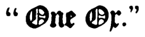
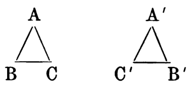
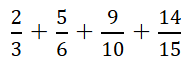
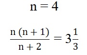
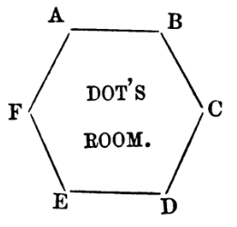

AUTHOR OF
"MARQUIS AND MERCHANT,"
&c. &c.
"Our birth is but a sleep and a forgetting: The Soul that rises with us, our life's Star, Hath had elsewhere its setting, And cometh from afar."
Wordsworth.
IN THREE VOLUMES.
LONDON:
13, GREAT MARLBOROUGH STREET.
All rights reserved.
LONDON:
PRINTED BY MACDONALD AND TUGWELL,
BLENHEIM HOUSE.
TO
MARCHIONESS OF WESTMINSTER,
WHOM ALL WHO DESIRE
"THE PRESERVATION OF OUR RELIGION AND OUR LOYALTY
TO OUR QUEEN"
MUST HONOUR FOR HER COURAGE IN THEIR DEFENCE.
————
WRITERS of what have been called Utopian Romances need not accuse their rivals of plagiary, since they are all treading in the track of giants like Aristophanes and Swift. But it may be well to state that I had not read The Coming Race until these volumes were passing through the press, and that I have never seen Erewhon.
The idea of an experience of metempsychosis has dwelt in my mind since, walking with one of England's great poets on the terrace of Rydal Mount, in full-sight of that "aërial rock" which he loved to greet at morn and leave last at eventide, he answered an inquiry of mine with the immortal words on my title-page.
Knowl Hill, 1873.
————
CHAPTER I.
A WIFE ON THE WAYSIDE.
"Dead shepherd, now I find thy saw of might: 'Whoever loved that loved not at first sight?' "
MY father, Colonel Ellesmere, one of the most brilliant cavalry officers of his day, sold out after the Peace of Paris in 1763, and afterwards passed his time between London and the family seat of his uncle, Sir Ralph, near Rothwell, in Northamptonshire. Sir Ralph, a bachelor, was always fond of him, and made him his heir. As I was not born till 1780—the memorable year of Lord George Gordon's riots—I have only traditions of my father's fame. He had been a gallant leader in India and Canada, and became quite a favourite with the young King and the ladies of the Court. The King knighted him; the ladies coquetted with him; he was the most admired dancer at Almacks', which famous assembly was opened in the very year that the King was first suspected of insanity, and that our American colonies resisted the Stamp Act. My father might have made choice between many beauties (so I have been told) in those days when his feats of war were fresh; but he liked better his gay life about town, which was then a brilliant city of manageable size. He wore the finest Nivernois hat in St. James's; there used to be a picture of him in the gallery at Ellesmere, ætat. 35, his long curls adorned with this toy of the time, a large silver chou-fleur set in front. A hideous affair,—but a man of his build could wear it without being very ridiculous.
My father, in the course of a few years, came to live much at Ellesmere, for Sir Ralph's health began to fail, and he wanted the company of his favourite nephew. Sir Arthur came to live permanently in Northamptonshire, the year the great Lord Chatham died; after that time he settled down into a country gentleman, taking (by Sir Ralph's desire) the management of the estate, and setting up a pack of foxhounds.
"When wilt thou marry, Arthur?" Sir Ralph used to say.
I have often heard my father tell the story.
"I can't die happy till I see you with a boy to take the estate."
"I'm an old fogy, sir," my father would say. "I'm forty-five. Where's the lady who will take an old soldier like me, when there are so many gay gallants of the town to be had?"
"Not many like thee!" said the old man. "Why, I'm twice thy age, and could find it in my heart to marry to spite thee."
This friendly after-dinner quarrel between uncle and nephew went on day after day; but nothing came of it till one afternoon, as Sir Arthur was riding home alone from the hunting-field, he met with an adventure. He saw a coach overturned in the miriest lane of the neighbourhood. Those Northamptonshire lanes are knee-deep in slushy mud to this day; what they were in 1778 passes the imagination of man. I don't think the Mount Sorel quarries had been opened; at any rate, their hard stone has not reached the Rothwell vicinage to this day.
My father (how often he told me the story, while my mother's blue eyes filled with tears, though she laughed all the while!) rode up to the overturned travelling chariot, which had four horses, and helped the frightened postilions to extricate the travellers. They were two: a lady not more than sixteen or seventeen, evidently of perfect blood, as indeed of perfect beauty, but with a sad perplexed terrified expression in her eyes; a gentleman, over six feet high, with black hair and eyes, and a coffee-brown complexion, his brow cut by a sabre-slash diagonally. My father recognised him at once as a notorious bully and blackleg of London; Captain Mayo he called himself, but was better known as Bully Mayo. He evidently did not recognise my father.
"Thank you, sir," he said, when my father had got him out—for the fall had regularly doubled him up. "We have had an accident, you see, and I am afraid it will take us some time to get things in order again. I am anxious to make—this lady comfortable."
"There isn't a house of entertainment near," said my father, who saw at once there was something wrong; "but if you like to come on to my house, or rather my uncle's, we can make you pretty comfortable."
"Oh, let us go! Is it far?" said the young lady. "I am so tired! Oh! my dear sir, I shall be so thankful for a little rest."
"Can't we get on, postilions?" cried Bully Mayo, in a surly, vexed voice.
"There's a wheel right off, and a shaft broke, your honour," said one of the men. "I wonder whether there's a blacksmith or a carpenter near."
"Just a mile on, my man, at Rowell," said my father.
"I am afraid we must accept your kind offer of hospitality, sir," said Bully Mayo, with grim reluctance. "To whom am I indebted?"
"I am Sir Arthur Ellesmere," said my father, who all this while was not wasting time, but had seated the lady on his hunter, and prepared to lead her homewards. "We shall be at the gates in five minutes," he continued, "and then," with a gay smile to this distressed damsel, "you will be comfortable."
Sir Ralph, who so loved his nephew that he was wont to watch for him on hunting afternoons from the library window that looked down the long oak avenue, was rather surprised to see the approaching cavalcade—my father leading his hunter with a lady seated on its splendid loin, and a tall black man stalking stolidly along on the other side. When this procession reached the great hall door, it was at once thrown open, and servants were ready. My father lifted the lady from her horse, and almost carried her up the steps. He declared that he lifted her over the threshold, that being the way to bring luck to a house the first time any lady enters it. The old housekeeper, Mrs. Scott, was in the hall—an ancient personage, whom I used to revere intensely. She had been Sir Ralph's confidential servant for half a century. To her care my father consigned the young lady; and then showed Bully Mayo into the library, where Sir Ralph was sitting. They were most courteous to each other all this time, but Mayo was evidently puzzled.
Sir Ralph received him with the same courtesy. My father explained in few words what had occurred.
"These are very bad roads," said my great-uncle. "We ought to mend our ways. The least we can do, after leaving our roads in such a state as to upset your equipage, is to offer hospitality until you can proceed."
"Much obliged, I'm sure," said Mayo. "We wanted to get forward on important business."
"Not to get married, I hope," said Sir Ralph, jestingly.
"Not a second time," said Mayo, thoughtlessly.
While this brief conversation took place, my father slipped out of the library, caused ample refreshment to be sent in to Mayo, and went in search of Mrs. Scott. The upper staircase was full of excited servant-maids. The first he met told him that the young lady had been ill-used. When he reached the apartment Mrs. Scott had provided for her, he encountered the old housekeeper.
"Oh, dear Sir Arthur," she said, excited beyond what you would imagine possible of an old lady near seventy, "this poor young creature is in such trouble. This wretched man, she never met but once before, has decoyed her away from her aunt's house by Market Harborough, with a letter saying that her father was over at the Duke's, dying, and must see her directly; but she says he has been talking to her in such a dreadful way that she is sure something is wrong, and she was so glad when the coach upset and you came by. She wants to know what she ought to do."
"Who is she, Scott?"
"She's the Lady Amoret Lyle, sir, daughter of Lord Lyle, that used to come to see Sir Ralph years ago."
"We'll take care of her, Scott. She's a pretty little thing. I'll send a man to Boughton, to know if Lord Lyle is there. Cheer her up."
My father had come to a prompt conclusion. He knew Bully Mayo well by repute, and had seen him once or twice. When he descended to the library he found him alone, Sir Ralph having retired. Mayo, happily engaged with a decanter of port wine, looked at him with a glazed eye, regarding the event with inapprehensive brain.
"You did not offer me your name," said my father; "but are you not Captain Mayo, of the Guards?"
"I am," he said, beginning to see that he must try to be equal to the situation.
"And the lady with you; may I ask who she is?"
"You may ask," he said. "She is a lady, that's all."
Mayo stood up, rather unsteadily.
"You were going to Boughton, were you not?"
"Damn it, sir," said Mayo wrathfully, with hand on sword, "how dare you question me? Do you call this hospitality? I was thankful for your entertainment—but now you are troublesome. Lend us a carriage for a mile or two, and we'll get away to-night."
"Lady Amoret Lyle is far too ill to leave to-night, Captain Mayo, and will not leave in your company at any time."
When Bully Mayo saw that the lady's name was known he grew desperate and drew his sword.
"O, is that your game?" said my father, one of the finest masters of the rapier in Europe . . . and disarmed him in an instant. Then he touched a bell, and two or three stalwart servant-men came in.
"Take that man," he said, "and duck him in the horsepond. Then turn him outside the gates."
The order was carried out to the letter.
Next morning my father saw Lady Amoret Lyle, and thought her the most perfect creature in the world. She received him in an undress of cashmere and tears. She looked provokingly pretty. Her almost baby face, her blue eyes, her pouting petulant lips, her hair that was neither fair nor dark, her girlish bust and shapely arms, have been well depicted on ivory by a master of miniature. My father fell in love at once. He could not wait to hear anything she had to say. He strode across the room to the beautiful child, took her in his arms, and kissed her, with old Mrs. Scott looking gravely on.
He had not the remotest idea that she was the first heiress in England—in pre-millionary days.
When she came to herself after this sudden embrace, she looked up merrily, and said,
"What will papa say?"
She was at once joyous, having been relieved from a scoundrel who wanted to get her fortune, and finding a chivalrous gentleman who loved her at first sight. For she knew it was love at first sight, both for him and for her. She has told me so many a time. Indeed, the story of this adventure, the only fragment of hearsay in my narrative, was usually told me with one of my parents as narrator, and the other as corrector. It used to be great fun at Ellesmere of a Winter evening in the library after dinner. Being an only child, I had fortunate privileges.
What became of Bully Mayo nobody ever heard, nor indeed did anyone ever care to know. After that horsepond, he may possibly have repented. He kept well out of the way both of Lord Lyle and of my father.
At the time of this event Lord Lyle was in London. My father sent a courier to him, and he came down. He was something at Court—Lord Chamberlain, I think. I have seen his portrait—tall, stately, silver-haired. When he came, he seemed at once to have given consent to my father's marriage; so here I am, the son of Sir Arthur Ellesmere and Lady Amoret Lyle.
Events move in continuous cycles. How often the same thing recurs it would be impossible to say. What always struck me, as soon as I began to think, was the absurdity of age. I never could treat my mother with proper veneration—I always regarded her as the girl of sixteen who was the heroine of my father's favourite after-dinner story. And, in my judgment, she never grew older. She was a precociously wise little woman in her own opinion; but, oh! how she liked to throw off the trammels of custom, and have a bit of real fun! My father and mother were a perfect couple, though between them there were nearer thirty years than twenty. He had a pleasant paternal way of treating her, which she liked very much. Besides, he was a young man for his age. When I was a boy, he always seemed young to me—he was full of energy, riding, walking, driving. He looked after all the affairs of the estate. He was restless, indefatigable. So he never seemed old to me in my youth, though there was nearly half a century between us.
Sir Ralph died just before my birth. They called me Edward: I don't know why, having no reason to believe it a family name. However, Edward Ellesmere I am—or was—and one name or label is pretty much as good as another. My earlier years are to me a perfect chaos of delight in the memory. I could give no account of them. I remember cantering with my father over the grassland on an Exmoor pony; I remember listening to my mother as she played sweet music on the organ in the great Hall. Thousands of days are deliciously blended, all alike, all unlike, in my frail memory, the central figures in every scene being my stately father and my graceful happy mother. Those two were all the world to me; those two, and the old house, which seemed as if it were made for them. It was Eden!—it was Elysium! Pity such pleasures cannot last—that boys must become men and girls women!
As for me, poor devil, I was booked, in time, for Eton!
CHAPTER II.
ETON.
"I pray you ask him some questions in his accidence."
"POOR devil!" That really was what I thought when I started drearily from Northamptonshire in the family travelling-carriage, my father accompanying me a stage or two, just to keep up my spirits. And my heart sank when he left me, and the old coach floundered southward. And it was with a decided sinking of heart that I entered the tutor's house at which I was to live.
But that was soon over. In a few days I was a happy atom of that marvellous microcosm, a great public school. I was just the fellow for the situation. My father had taught me self-reliance, my mother (how often I thought of her and her last tears!) had taught me courtesy, and I was born with a tendency to enjoy the study of character. Unluckily I was not always accurate in my estimate of character; and a school-fellow of mine at Eton was the cause of nearly all my subsequent ill-fortune.
His name was Algernon Norton. He had curly red hair, and greenish eyes, and knees that were always making too close an acquaintance with each other, and a most plausible persuasive style of flattery. I fancy his father was Norton & Co. Plenty of money he always had, and I suspect was in the habit of lending it to his extravagant school-fellows, at an exorbitant interest. If Dr. Keate had found him out he would have received the soundest flogging in the annals of Eton.
This fellow became my favourite from my first arrival at the school; he was in the same house, and had ample opportunities. He flattered me, mind and body; and boys are quite as fond of flattery as girls. I wrote his Latin verses for him—he did any menial service I chose. He was my umbra. I can only understand his conduct on the supposition that he was the descendant of a long line of knaves, and that his hereditary instinct made him attach himself to the heir to a baronetcy and two fine fortunes. Two or three of my independent friends warned me against him, but I argued that he was a harmless useful fellow, though confoundedly ugly.
"He'll serve you some rascally trick, by Jove!" said Harry Vane, one day. "He's just my ideal of Judas Iscariot or Oliver Cromwell. I detest the fellow! Cut him, Ned."
I wish I had taken Harry's advice; but I indolently allowed Norton to maintain his parasitical relation to me, finding that he was useful in one way or another.
One of my pleasantest recollections of Eton is the kind interest King George took in the boys. There were few fine days when he was at Windsor that he did not stroll down to the playing-fields. When he first saw me, and found out who I was, he said,
"What, what, what!—Ellesmere's boy? 'Gad, he shall have a commission."
Wherewith he put his royal hand on my long light curly hair, and went on—
"Wilt fight, my boy, fight for your King?—eh, eh, eh?"
"Yes, your Majesty."
"Not your father's son if you didn't. Tell him you're a cornet in the Guards."
"You're in luck, Ned," said Harry Vane, when the King had left the field. "You'll get your commission."
"Nonsense!"
"You will, though, and full pay. There are a lot of fellows with commissions. One's a Major already, bless you!—Charlie Nevile. He's eighteen, and he got his commission at eighteen months. When Keate flogs him, he always says—'Now, Major Nevile'."
It turned out true. I was gazetted Lieutenant and Cornet of the first Life Guards, about the year 1796. I think it was the same or the following year that I made the largest score in the famous cricket-match against the Oldfield Club; the next being made by Sumner, who was afterwards an Archbishop. Sumner was a very fast bowler. We went in for fast bowling in those days (before the "round hand" had been invented), and I very seldom took a wicket without breaking it. Greaves were unknown; but the Etonian skin is marvellously strong. Still, "leg before wicket" was a rare offence.
Now I must relate one of the first messes into which that villain Norton got me—I cannot conceive why. One day he came to me mysteriously.
"Ellesmere," he said, "can you keep a secret?"
"Well, I'd rather not—I've a bad memory. I might forget it was a secret, and tell somebody."
"Come, be serious, old fellow. What should you say if a girl was in love with you?"
"Why, that she had better give it up, and try somebody else. Get out, or I'll throw an inkstand at you! I'm turning Romeo and Juliet into iambics."
"Better turn your iambics into Romeo," he retorted. "Do you remember that little girl in pink we saw the other day in Datchet Lane?—pretty little plump thing?"
"Well, what about her?"
"She's awfully in love with you. Her father's a chemist in Peascod Street. She wants to meet you."
"She must be a remarkably nice young woman," I said, "Get out of this, Norton, or I'll kick you out! Be off!"
He saw I was in earnest, and went; but he returned to the charge. He was so persistent that at last I half believed him; and we one Summer afternoon met the girl, whose name was Emily Watts . . . . quite accidentally, of course. Young, and devoid of experience as I was, at once I saw that it was what in these days is called a "plant;" there was something in the look of the girl which showed me that she was of a bad type. When Norton had got us into conversation he disappeared.
I spoke civilly to the young woman, who was evidently disappointed by my slowness, and thought me a fool. To say truth, my great desire was to get away from her as quickly and courteously as possible. I had just succeeded in doing this, to my companion's obvious disgust, when I noticed one of the assistant-masters passing on the opposite side of the road. His keen eye gave me a recognizing glance. I walked homeward, very much ashamed of myself, and frightfully angry with Norton.
I lounged down to the margin of the Thames and watched the boats. It was a delicious Summer afternoon; the sky was cloudless; the larks were Midsummer-mad; a thrush on a great willow across the river sang "Do it again! Do it again! Do it again!" I remember it all, though I could not enjoy it—for I was angry with myself, with Norton, with the girl, with that keen-eyed master. There was no great reason for being angry with myself, seeing that I had avoided temptation. Still I was.
Presently Norton came up, and touched me on the shoulder.
"What luck?" he said.
I sprang to my feet. He was in his shirt-sleeves, having been at cricket. I threw off my jacket.
"Now, my good fellow," I say, "stand your ground. I am going to thrash you."
He was two years older than I, and at least a stone heavier; but before a ring could be formed I had knocked him out of time.
"Bravo, Ned!" said Harry Vane. "With a little practice you'll hit beautifully straight from the shoulder. You shall come to my room and put on the gloves with me now and then."
We walked away together. Norton was lying incapable upon the turf. I did not speak to him again that term.
Of course I was not surprised at being "sent for."
"You young officers of His Majesty's Guards," said Doctor Keate, with bland irony, "must not suppose that you are to make love to all the girls of Windsor. Colleger, bring me a birch-rod that is suitable to the dignity of a cornet of horse."
Such an easy indolent tolerant fool am I, that during the course of the next term I allowed Norton again to become familiar with me. Harry Vane was left, else I think it could not have happened.
Norton was the most penitent of crocodiles. He made himself useful at every point; and I began to discover that it was impossible to do without him.
In the Autumn of 1797, I was summoned suddenly from Eton. My father was on his death-bed. His horse had made a mistake at a sunk fence, and my poor father was brought home on a litter, with his spine severed beyond the power of surgeons to patch it up. I was so fortunate as to be with him half an hour before he expired. My dear mother was kneeling by his bedside, holding one of his hands in both her own. He languidly stretched to me the other hand.
"Ned," he said, "thou art a true gentleman, I believe. Love thy mother, and trust in God. I am going to meet Him in a few minutes. I am not afraid. I fought for my King."
How quietly he passed! Something—a sob or a sigh—seemed to shake that grand frame, and then all was over. My dear mother fainted; the women came and took her to her room. It was long before I could tear myself away from my father's body; there came upon the dead face a calm still satisfied expression, which seemed to me a revelation. The soul is happy elsewhere (I thought), or the body could not look so happy here.
I pass by all the funereal celebration. My mother was ill for weeks; when she recovered, she implored me not to return to Eton, but to remain at Ellesmere, to take care of her. My mother had always been very like an elder sister to me, and I felt toward her in her present state a tender pity, born of a love that was almost as much fraternal as filial. She was so young, I thought, for this terrible blow to fall upon her—to lose the love and strength of a man like my father—a man whom you could not look upon without thinking that he belonged to the noblest class of men—a man to whom fear and dishonour were words without meaning. I knew full well that my darling mother would not long survive this terrible loss. She did not. Within six months she also lay in the family vault in Rothwell churchyard.
I was alone! Yes, in one sense; but in another sense I had too much company. My father's will was vague; the Court of Chancery kindly appointed two trustees to look after my affairs till I came of age. How they came to be chosen, I cannot imagine. One was Ezra Sykes, a retired lawyer, who had at some time been employed by my father; the other was General Lord Clanfurly, G.C.B., the youngest General in His Majesty's Army, and an old crony of my father's. Sad as I was, I could not help being amused when my two guardians, or trustees, or whatever they were, met for the first time at Ellesmere. Clanfurly rode over in uniform, with his staff attending him, and a troop of horse; for he was Commandant of the district, and those were days when we dreamt of French invasion. It was quite cheery to hear the bugler's call as the red coats came rattling into Ellesmere courtyard. Mr. Ezra Sykes had come in a carrier's cart from the nearest point at which a stage-coach stopped; so, when shown into the library to meet Lord Clanfurly, his dingy yet glossy black habiliments were covered with scraps of straw.
There had been some conversation about me between my two ill-assorted guardians before I was summoned to their presence. When that summons arrived, I could not help laughing at the coup-d'œil. I have an intuitive sense of humour, and cannot avoid laughter under the gravest situation, if anything tickles my fancy. On the present occasion, what did I see? There was an aide of the general's sitting at a table, pen in hand, suppressing his amusement as well as he could. There was the legal and pious Ezra Sykes, in greasy black broadcloth much obscured by straws, standing on one side of the fireplace—a blear-eyed round-shouldered knock-kneed splay-footed animal. On the other side stood Lord Clanfurly, tall, shapely, and vigorous, one hand by habit on his sword-hilt, his steel-blue eyes looking right into the middle of his next battle.
"Sir Edward Ellesmere," he said, when I was called into the room, "Mr. Ezra Sykes and I have been appointed by the Lord High Chancellor your guardians. We cannot quite agree as to what it is best for you to do. I think you should go back to Eton and finish your studies, Mr. Sykes seems to object to this."
"I object to Eton," said the lanky Sykes, with a mighty sigh, "because time is wasted upon heathen studies, such as Latin and Greek, which would be more properly expended on Hebrew and commercial arithmetic. The dullness of modern young gentlemen is dreadful. Few of them know that there are three six-and-eightpences in a pound."
"Important knowledge," said the general laughing, while the aide at the table gave me an encouraging wink. "Come, young gentleman, as your guardians differ, what do you say? Will you go back to Eton?"
"No, my lord," I said.
"Then will you follow my advice?" said Ezra Sykes, becoming eloquent. "Will you let me be your guide, philosopher, and friend."
"I'll see you damned first!" I said, indignantly. "My lord," I went on, addressing myself to the General, "I am a Captain in His Majesty's Life Guards. My first duty is to the King. I intend to join my regiment."
Sykes's horror would have made a picture. Clanfurly put his hand in fatherly fashion on my young shoulder and said,
"All right, my boy."
CHAPTER III.
LIFE IN LONDON.
"White-handed mistress, one sweet word with thee!"
YES, while I had been fagging away at my Homer and Horace, my cricket and boating, promotion had reached me, and I was now, at eighteen, a captain in the Guards. The Earl of Clanfurly encouraged me in my military ambitions, and I went to London in the gayest spirit, with a fine allowance and a splendid outfit. Ezra Sykes had to give way to my resolute will, backed as I was by the Earl, and he uttered a snuffled protest through his nose. But Ezra had his revenge; the management of my estate was left in his hands: a pretty picking the scoundrel made of it!
Before joining my regiment, I spent a couple of weeks with Lord Clanfurly, at a pleasant house he had near Totteridge, with plenty of park-land. He was a widower, with one daughter, married, and the mother of many children; and his house was kept for him by an elegant and demure person of about thirty, who treated him with great deference, but evidently had her own way in everything. To me she was remarkably courteous, and made me as comfortable as I could desire. I spent a very pleasant fortnight there; and the General gave me a series of worldly lectures after dinner each day, that were worth their weight in gold. He inculcated a philosophy of refined and elegant selfishness. I was by nature selfish enough . . . a lover of luxury and laziness, and a spoilt child to boot; Lord Clanfurly's lectures confirmed me in my tendency to become "Epicuri de grege porcus."
When I joined my regiment, I took rooms in Pall Mall, over a saddler's . . . capitally furnished and arranged, with a pleasant view of the trees and lawns of Carlton Gardens. When first I got into my uniform and mounted my charger, what a splendid fellow I thought myself! Everybody in the regiment received me with a hearty welcome. The son of a distinguished soldier, with youth, good looks, and plenty of money, it was not likely that I should be unpopular. This was a time of delirious delight. We were never weary of enjoyment. Our life passed between London and Windsor. We glittered through the western streets, a splendid pageant. We passed our nights sometimes in good society, and sometimes in bad, but always where life moved fast. We betted high, drank deeply, threw money away on diamonds and other luxuries for our frail friends. We crushed ten years of life into one—with the customary result. If I exceeded my allowance, old Ezra Sykes showed a courtesy you would not have guessed from his grim appearance, and sent me as much as I wanted. Of course he was quite right. Why should the income of an estate be accumulating at compound interest, when its owner wants the money?
The history of my life at this time cannot well be written. It was the mere foam and froth of existence. I was popular everywhere, from the Court downwards. I spent money as if I had the purse of Fortunatus. I rode the best horses, and drove the finest equipages, and gave the costliest dinners in London. I had in the highest degree the passionate generosity of an intense selfishness. My boyish career was the wildest of that wild time when there was always lightning in the air . . . the terrible time of Napoleon. Anyone who cannot remember that period cannot realize what men felt then, or how fast we youngsters lived. The great name of Napoleon hung in the political atmosphere like some mighty comet that comes close to earth, burning so fiercely that moon and stars flicker and grow pale. And because this great thought haunted us, we lived in a defiant gaiety, sure that when the supreme hour should arrive victory would be with England. The temper of the time is well indicated by Gillray's caricature . . . King George in colossal size, curiously examining a Lilliputian Bonaparte, who struts en petit caporal on the palm of his hand.
My chief friend in those days was Captain Lovelace, of my own regiment, about two years older than myself. He differed from me widely, being quiet and unostentatious, though he spent money freely enough, and thoroughly enjoyed any reasonable pleasure. He used to give me excellent advice, and, when I laughed at it, he would suggest some brilliant dissipation. His motto was that of Ovid, which Thackeray loved so well:—
". . . . video meliora proboque,
Deteriora sequor."
The truth about Charles Lovelace was that he ought to have been on active service—his fine brain wanted work; at the head of an army he would have been a match for any marshal of Napoleon's—perhaps for Napoleon himself. He did not enjoy the lazy luxury of life as I did; he pined for occupation, and took severe dissipation as the only alternative. I saw through the dear boy at the first, and the fact that I appreciated his character made us close friends.
He never talked of his family—indeed, he was a man of singular reticence. I remember it was in the Summer of 1804 (I was a Major by that time, and expecting soon to be Lieutenant-colonel) that he came to my rooms one morning, and said,
"Ned, have you time for a ride this morning, after parade?"
I was at breakfast, drinking claret, which had become the fashion with us instead of chocolate. This was wine for which I had given a guinea a bottle. I confess I have since tasted as good at a shilling. I was turning over a heap of unopened notes which my villain of a valet had just brought in upon a gold salver—some were in pink paper, and some in blue, but there was not one worth the trouble of opening. I neither wanted to know the amount of my tailor's bill, nor what Aphrodite Severn had to say to me. It was abominably hot—the trees in Carlton Gardens opposite could not catch a breath of air; I had already forgotten my cold bath, and began to want another.
"I am at your service, Charlie," I said, languidly. "Where do you want to go?"
There was a kind of sly hesitation about him that puzzled me. He replied,
"Twickenham. The Thames breezes will cool you."
"Charming idea!" I said. "But have you any special reason for going to Twickenham? And have you breakfasted?"
"Yes, to the first question; no, to the second. I shall attack that lobster. Have you any champagne? I've been up all night, and want a reviver."
The Villain (he was known as such among my friends, and I have clean forgot his name) brought some champagne. Lovelace ate and drank with that fine ferocity noticeable in a man who has been up all night. I looked on languidly, dipping dry toast in claret, and trying very hard to finish a rognon aux fines herbes.
"My mother," said Lovelace, presently, "has lately come up from the country, and taken a house at Twickenham. I want you to know her. I think she would do you good, old fellow. So I arranged to bring you down to luncheon, if you could manage to come to-day. You will meet nobody else except my sister Lucy, who is a mere girl. She is several years younger than you and I. So many of my family died young."
When a brother talks disparagingly of his sister as a mere girl, don't you always believe him. A stolid young gentleman will often look contemptuously on a sister who is made of much finer clay than himself. Charlie was not stolid, but he did not understand his sister Lucy.
That I accepted va sans dire. We had a lovely ride that Summer afternoon. We had a charming al fresco luncheon on the lawn of Mrs. Lovelace's pretty cottage . . . a lawn that sloped to the Thames, and was dotted with beautiful trees. Mrs. Lovelace herself was quite worthy of being Charlie's mother . . . a kind stately old lady, who had evidently borne a prominent part in society of the highest class.
But Lucy? She had the tremulous movement of the sensitive plant—the fragrant life of the tall white lily. Her hair was a rich brown, with specks of gold in it. Her eyes were like the dog-violet. She was tall; her hand was long and flexible, tipped with narrow rosy nails. What struck you about Lucy was that her soul seemed to burn through its tenement; her flesh was translucent; if she held her hand against a candle the light shone through. Lucy answered Milton's definition of poetry, being "simple, sensuous, passionate." Her electric spirit was stirred by even the unexpressed thoughts of those who were with her, and her own thoughts made themselves known, without aid of speech, by the light in her eye, by the movement of lip or hand. When her hand was in yours it told you the thoughts of her heart. Lucy was as near to being a pure spirit as anybody could be in this world.
It was love at first sight with us both. I knew it, the very moment I met her glance in that wainscoted Twickenham parlour. She was mine. She knew it also; a psithurism seemed to pass through her, as when a full-foliaged tree is caught by the wooing south wind. But we were very quiet and polite that afternoon, and neither Mrs. Lovelace nor Captain Charles for one instant suspected what was very well known to Lucy and me . . . though without a word.
What a time it was! England against the world! Nelson, flower of Admirals, was at sea, longing to catch Bonaparte "on a wind." Charlie was perpetually pining to be on service; I hypocritically echoed his longings, but had really no desire to have the sea between me and Twickenham, to which riverain village my horse's head turned with diurnal regularity. Mrs. Lovelace soon saw what was the matter with me, but she had no objection. Why, indeed, should she? I was a soldier, and Charlie's best friend, and the owner of a great estate. In those days a man's having lived pretty fast did not make him an abomination in the eyes of either young ladies or old ones. Milksops were not popular.
My London cronies did not see quite as much of me as of old, for almost every afternoon was spent in Lucy's company, and often I dined with Mrs. Lovelace instead of returning to join the mess. Happy little dinners! . . . though they were simple enough—a bit of fish, and a joint of mutton, perhaps, and an apricot tart, and a glass of old Madeira. The Prince Regent had not spoilt our dinner-tables by making that vile fluid, sherry, fashionable. After dinner, on clear Summer nights, the old lady would obligingly fall asleep, and Lucy and I would ramble down to the margin of the Thames, and watch the reflection of moon and stars in the restless river.
One night may stand for all. Charlie's having dined with us that evening makes it more strong in my memory; but he left soon after dinner, having some engagement. The old lady was soon serenely asleep in her customary chair near an open window, through which came fragrance of multitudinous roses. Lucy loved roses; and the queen of flowers seemed to return her love, for she always had them in profusion. They grew in her garden more profusely than I had ever seen them anywhere, and in varieties more numerous. Some vast masses of odour, ruddy and inexhaustible, some pale and delicate white, with just a blush in their centre; some of crocus hue; some a dark deep purple. Lucy's roses were the marvel and envy of all her fair friends. Nobody else could grow them in such profusion and perfection. There was magic in it; the nightingales came to sing among them; their music this very night was thrilling through the air. The moon was at its full this night. One planet burnt near it; which of the two chief planets I know not, being perfectly ignorant of astronomy and astrology, and all such matters. Only Mars I know, the soldier's star, red as blood; and this night he shone like a ruby in the cloudless blue. I had noticed him a night or two before; so I had gone to a jeweller's, and bought the finest ruby I could find, and made the man set it in a thin flat hoop of gold, that should suit Lucy's delicate ring-finger. And this night, as we strolled up and down in silence by the never-silent Thames, I suddenly said: "Lucy, which is your favourite star?"
She looked up into the sky with a dreamy, questioning gaze.
"I am rather superstitious about the stars," she said. "My mother laughs at me for it. The Bible says they were made 'for signs and for seasons, and for days and for years.' I think they have some strange influence. I always have a tremulous excited feeling when I look at the planet Mars."
"That means you are to be a soldier's wife," I said, "and here is the ring of betrothal."
"O what a lovely ruby! Edward, how extravagant you are! It is just the very colour of the planet."
I put it on her finger, and pressed my lips to her lovely hand. She was half laughter, half tears. She leaned her fair head on my breast.
"I hope this happiness will last," she said. "But can such happiness last? I am terrified lest it should come to a sad and sudden end. Edward, be true to me."
"My darling child," I said, "I will be true to you as long as the planet Mars endures. Come, throw aside these fancies; sing me one of your pretty little ballads."
She sat on a garden seat. My arm was round her waist. She sang.
"O songs of the olden time! That were so wondrous sweet, When the world was a fairer clime, And the turf was cool to the feet, And the days fled all too fleet, And lips had their low love-rhyme, When lovers were fain to meet: O songs of the olden time!
"O songs of the olden time! Who dares to sing them now? For love may be turned to crime By the basely broken vow. And alas! we know not how The marriage-bells may chime. 'Tis a weary world, I trow, O songs of the olden time!"
"What a melancholy darling you are to-night!" I said. "Come into the candle-light, and give me a cup of coffee before I go, and be cheerful. You must sing me a merrier song to-morrow."
Lucy did as she was bid. An hour later I rode townwards joyously, for she had broken into her gayest mood of caprice and merriment. We parted with a laughing kiss. I rode gaily to town, sent my horses home, strolled into Vandesme's, intending supper only; played, broke the bank, won twenty thousand; went home, and slept right soundly.
CHAPTER IV.
LUCY AND I.
"O, my good lord, the world is but a word; Were it all yours to give it in a breath, How quickly were it gone!"
NEXT morning, as I was at breakfast, Charlie Lovelace came in; very woe-begone he looked, and as if his immediate intention were suicide. I knew every phase of his countenance by this time, having a real brotherly love for him. So, when I saw him in this condition, I made him drink some sparkling wine, and awaited his confidence.
It was simple enough when it came. He also had been playing the night before. He had lost twelve thousand. He did not see what he could do, unless he sold out, and also sacrificed some freehold property in Leicestershire.
I laughed at him.
"My dear Charlie," I said, "you are absurd. What is twelve thousand pounds? You know perfectly well that if I gave you a cheque for that sum, Coutts's people would honour it, whether or not I have so much to my credit. But it does so happen that I can put you out of your trouble at once; for I broke the bank at Vandesme's last night, and there are rolls of notes to the amount of twenty thousand lying about somewhere. The Villain can find them."
"You don't expect me to take this money from you, Ned?" said Charlie.
"Why not? What I win or lose at play I always consider waste money. I had a run last night, and landed twenty thousand; you happen to want twelve thousand of it—there it is; the other eight I shall throw away somehow."
Saying this, I told the Villain, who had just brought in an omelet, to fetch a small black bag from my dressing-room.
He obeyed orders. The bag was crammed with bank-notes. I put it on the table, and said to Charlie:
"Now, old fellow, take what you want."
He gave me a whimsical smile, and pulled out a roll of notes.
"You are a good fellow, Ned," he remarked; "but you are a devilish odd fellow. Fancy having twenty thousand pounds in your bag, and with the Villain close at hand."
"I should have asked leave of absence first, sir," said the Villain, with a grin. He was a very honest Villain, I believe; at any rate, the bank-notes were safe enough on this occasion, and I gave the fellow a hundred pounds.
The value of money had never occurred to me at that time. I had not mastered the fact that every sovereign means so much human labour—so much human life. A rich man gives fifty pounds for a thing without thinking that he is giving away a year of somebody's existence. Yet it is so; every piece of hard money is the mere representative of human toil. O for a miracle to make the gold we squander speak, and tell us what hard work it represents!
Charlie, having been persuaded to take what he needed, went away quietly. I was only too glad that a run of luck had thus enabled me to help him. I thought no more about it. He did, I regret to say; he felt himself under some sort of obligation—I can't think why. If he hadn't had that twelve thousand pounds, I should certainly have thrown it away, as I have no doubt I did the other eight, though on this point I have no distinct recollection.
What chiefly I remember in that time was my pleasant intercourse with my darling Lucy. Her mother and Charlie both considered her too young to marry, and she and I obediently acquiesced in their decision, though most assuredly it would have been fortunate for us both if she had been pronounced of matrimonial age. However, she was not, and we had to play at love-making, and we both enjoyed it very much indeed.
Given, a delicious rose-garden, sloping to the Thames, and the lady of that garden a creature of perfect beauty, and most loving and loveable temper, is it not easily conceivable that Major Sir Edward Ellesmere was happy? As a fact, I was rather glad that Lucy was not old enough yet. Cynical sneerers had made me rather afraid of marriage. It was a belief of those times that the most charming girl in the world might, when she became a wife, become also a nuisance. I hardly know how to account for the prevalence of this theory, but just then it was the fashion with men to run down women—to regard them as mere toys and playthings—to maintain that they were heartless and untrustworthy. These cynical fashions of thought come round in cycles, according, doubtless, to some hitherto undiscovered law.
"Most women have no characters at all," wrote Alexander Pope; yet Pope had read Shakespeare, in whose chief plays there is not one woman without distinctive character.
Of course I was in the fashion, and professed to regard women as below one's notice, otherwise than as mere playthings. I was obliged silently to recant every day of my life, for every day of my life I saw Lucy, and she taught me more in a night than I ever learnt anywhere else in a year. She was the very darling of nature. As I have heretofore said, the roses seemed to grow for her delight; and the nightingales came to sing amid the roses, and Lucy and I were happy. She had not a touch of coquetry about her. She was mine; she knew it, and was satisfied. Every night of my life I came down to see her, and we wandered into the garden in Summer, or sat in the little library in Winter. Mrs. Lovelace left us to our own devices. Ah! it was a happy time!
I was in no hurry for wedlock. I like to have this tremulous sweet virgin-flower my own, uncrushed, unsoiled. She had given herself to me, my Lucy, but I would not take her yet; I would let her grow and ripen, pass from girl to woman, from bud to flower. It was only too delightful, this happy, innocent converse with a beautiful, simple creature like Lucy Lovelace.
One night I brought her some rhymes, to the same air which she had fitted to most melancholy words. Right gaily she sang them.
"O songs of the time unknown! That is coming, so sweet, so fair. The time of the loosened zone, Of love in the Summer air. Of days that are void of care, Of nights passed never alone, Of a heart whose dreams I share. O songs of the time unknown!
"O songs of the time unknown! They haunt the restless stream, And the woods where we roam alone, And the valleys where we dream; And love is their one sweet theme, And I think, my darling, my own. Our joy shall be supreme. O songs of the time unknown!"
Trivial rhymes, you will say, dear reader; but what is trivial when a man's in love? Heartily do I wish my worst offence against my beautiful Lucy was making bad verses about her! I could forgive myself for that, seeing that every man is not born a poet. But I cannot forgive myself for the way I treated her; though I believe when we meet again she will say she heartily forgives me.
Looking back upon that happy time, I have come to the definite conclusion that to be in love is a man's highest fortune. It is far better than to be an emperor or a millionaire. The despot is in daily dread of assassination; the owner of millions is in hourly dread of being robbed or swindled. The true lover has no dread; his wealth, his empire, cannot be taken from him; it is inalienable, inviolate.
So I say that the happiest time of a man's life is not when he obtains distinction as statesman, soldier, poet, what not; nor is it when he finds a comfortable balance lodged at his banker's, whereby he can snap his fingers at his creditors; but it is when two bright eyes look lovingly into his, and two sweet lips are ready to be kissed, and a warm white hand rests trustfully in his. I am of opinion that we do not yet half understand the philosophy and psychology of sexual completion. Our modern sophists are so anxious to prove the non-existence of God and the monkey ancestry of man, that questions of real importance are forgotten. A Universe self-created is far less imaginable than a creating Deity; a monkey made as a caricature of man is far more probable than the development of man from a monkey. The thing cannot be done. Even a Darwin could not be grown from the chimpanzee . . . and there could be no easier form of the experiment.
But, O ye philosophers and students of life, there is room for great discovery in connection with the higher nature of man. It is not our relation toward the beasts that perish which requires investigation; it is our relation toward God, who created us in his own image. Just at this moment we have fallen on a time when sham science is rampant; when anything new is accepted by all the shallow thoughtless people whose minds have no real culture. The man who argues that we are mere developments of the lower creatures finds hosts of admirers; his books pass through many editions; his miserable misrepresentations of nature are accepted as absolute truth by persons who have never observed nature. "The Divinity is an ape, and behold! I am his prophet," is one man's cry. Logic works no cure; fallacy is the fashion, and with the multitude fashion is stronger than either revelation or reason.
While I was tasting the joyous hours with Lucy Lovelace, drinking the wine of my young life, learning lessons of love from her fragrant lips, I suddenly, for the first time, came in contact with a very decided annoyance. It reached me in the form of a letter from that abominable old canting rascal, Ezra Sykes, to whom I had carelessly left the management of my estates, and who had hitherto always sent me money with promptitude. Having occasion for a few thousands in a hurry, I despatched the Villain down to Ellesmere, with an order to Sykes to get it. To my amazement, he returned next day without it, but with a note from this rascal Ezra, saying that my income had been greatly exceeded, that there was no balance in hand, that he would endeavour to raise the money at interest in a few weeks! A few weeks!—to me who had never had to wait an instant for money! Well for Ezra Sykes he was miles away, or I would have horsewhipped the truth out of the old hypocrite. Of course I had kept no accounts—why should I, with my princely income? I decided at once that Sykes was a thief, and sent the Villain off again with a letter, threatening him with my severest vengeance if he did not at once send the money.
"If the fellow does not at once send the money," were my last words to my unscrupulous servitor, "bring him. Strap him on to a horse, if necessary; I'll hold you harmless."
The Villain rode off with an obedient grin on his countenance, that augured ill for Ezra Sykes.
He was off, and I was thinking of a ride to Twickenham, when a servant came in to ask if I could receive Mr. Norton. I said yes—I did not connect the name with my old schoolfellow, of whom I had seen nothing since I left Eton. But when the man entered, I knew him at once. He was oppressively overdressed, and wore, over a white satin waistcoat, an immense gold cable, attached to a watch the size of a half-guinea. His coat was black velvet, with a collar of sable; his breeches were fawn-coloured kerseymere; the diamonds on his fingers were about the size of those in his shoe-buckles. His hair was redder, his eyes greener, his hands dirtier, his knees weaker, than they used to be at Eton.
Now what could this fellow want? I was in no mood to be civil to him. I was wroth with Sykes; I was eager to quiet myself in the peaceful company of Lucy. I felt quite out of humour with Norton and Co., and showed it unmistakably.
But Norton's plausibility and humility were too much for me. He was a Belial-Iago. He congratulated me on my fashionable distinction, my brilliant career, my fame for wit, my success among the ladies. The strongest of us are accessible to flattery; I, in those days, was very weak; I have become hard as heart of oak since. This Norton, whom in my inmost soul I utterly contemned, managed to cajole me with his fulsome flattery. I tolerated his red hair, green eyes, and grimy hands—because he told me pleasant lies.
By-and-by he introduced a subject that at that moment was for the first time interesting to me—money. He delicately remarked that, although I had a noble estate, I might sometimes be pressed for a trifle; and that he was connected with a large financial firm that always had money at the service of their clients.
Fool that I was, it never occurred to me that this fellow was in league with Ezra Sykes. I took his opportune arrival as a fortunate dispensation of Providence. I borrowed ten thousand pounds of him, giving merely an I O U. He seemed to consider I did him quite a favour by accepting it, and withdrew from my rooms a perfect incarnation of humbleness.
I sent two hundred pounds of this money to a girl named Laura Scarth, whom I had met a few evenings before in the streets. She was the daughter of one of my father's tenants. I remembered her quite a child—a pretty little blue-eyed thing. She had grown up too pretty, and come to sorrow, and broken the heart of old Michael Scarth, her father. She recognised me and spoke to me. She seemed passionately eager to lead an honest life, and thought she could set up a small shop if she had a little money. I sent her this two hundred pounds, and I believe she used it prudently, and rescued herself from degradation. But my detractors made this act of charity a ground of assault on my character.
Foreseeing nothing of the unpleasant future, I took horse, and was soon with my beautiful Lucy, among the roses and nightingales.
CHAPTER V.
LADY DIANA CREÇI.
"Que voulez-vous, Diane bonne, Que vous donne? Vous n'eustes, comme j'entends, Jamais taut d'heur au printemps Qu'en automne?"
PLANTAGENET AQUILA, Marquis of Creçi, was the descendant of a race whose men were always sans peur et sans reproche, while the women were generally sans peur only. The Creçis, a very old Catholic family, Hereditary Grand-Masters of the Revels of the Crown, were prouder than prelates and poorer than church mice. The young Marquis, who was about my own age, was living a careless brilliant life in London at this time, with no perceptible income except what he won at play; and certainly his luck was amazing. It was he indeed who had cleared out Charlie Lovelace, that time when I was able to help him; and it was through Charlie that some time after I made his lordship's acquaintance.
I certainly never met any one so brilliant—not with wit, for he had not a scintilla, but by reason of his inexhaustible animal spirits, his gay daring, his passionate delight in adventure. He had a clear blue eye, a keen classic face, a splendid agile figure. The wildest dissipation did not affect his health. He was the most perfect specimen of the human animal I ever knew.
My acquaintance with him would have been comparatively unimportant, had it not led to my knowing Lady Diana Creçi, his father's youngest sister. This lady was certainly the most notable person of her sex in London at the time. She was not young; the polite Peerage told not her age, but I fancy she was nearer forty than thirty. She had however the family health and spirits, and was a very skilful artist in self-adornment. She was not handsome; but her figure was good, and she possessed a wondrous wealth of hair, the very colour of Californian gold. She was not clever; indeed she knew nothing, and spelt abominably; but she was the most fascinating woman I ever met. I have said she knew nothing; but she certainly did know every trick of coquetry, every artifice of dress, every device invented by women to make themselves irresistible.
Lady Diana had a small house in Kensington; it was called Bijou. It stood in the centre of about an acre of lawn and garden, surrounded by a wall eight feet high. It had a cloister all round it, and four rooms on the ground-floor all opening into each other, and two conservatories, one on each side, which were entered from the reception rooms by crossing the cloister. Here was always a wonderful show of the choicest flowers; and rare birds flitted about in large cages. The kitchens, offices, servants' apartments, stables, were at the rear, approached through a corridor.
Charlie Lovelace, making acquaintance through the Marquis with Lady Diana, was soon fascinated. She had the power of magnetising men. After a while she commanded Charlie to bring me to Bijou, wanting, as I presumed at the time, to make an experiment on a new victim. I did not till afterwards learn that she had a cruel pleasure in fascinating men whom she knew to be engaged, and proving to her own satisfaction that she had more attractive power than the pretty girls of a younger generation.
When Charlie pressed me to accept an invitation to Bijou, I reminded him that my evenings all belonged to his sister.
"Pooh, pooh!" says Charlie. "She'll give you up for one night, and glad; I dare say you're boring her. Depend upon it, old fellow, it's a mistake for you to see so much of each other; you'll find out all one another's faults before marriage—and you may just as well leave it till after."
As I knew that Lucy had no faults, and was quite ready to forgive mine, this argument did not touch me; but Charlie was so resolute that at last I gave way. That evening, amid the roses and the nightingales, I told Lucy that her brother and I had an important engagement on the coming Wednesday, and that I should not be able to come down.
"Well, Edward," she said, "I am so used to your coming every night that it will seem quite strange. But no; I tell you what you shall do; you shall come and dine with us. Mamma will give you a roast fowl and a bottle of poor papa's favourite Madeira, and you can go straight from here to meet Charlie. We dine at five, you know; and I suppose your engagement is some hours later."
"Nine, my darling," I said. As her sweet face, luminous with love, looked up into mine, I felt a strange sharp presentiment that I was about to do a very foolish thing in deserting her for one night only. I dreaded it. I felt disposed to throw Lady Diana over, and to pursue my customary course; but then Charlie had my promise. He laughed at me a good deal when I told him that I was going to dine at Twickenham on the evening in question.
"You're a regular Romeo," he said. "I hope the mater's wine won't poison you."
Wednesday came; we had our little dinner together, and enjoyed it. Mrs. Lovelace was slightly didactic; she always deemed it her duty to drop pearls of wisdom into the ears of any young men whom she got at the dinner-table, whence of course they could not escape, and it may be guessed that her very choicest pearls were reserved for her future son-in-law. However, I always enjoyed the dear old lady's clever lectures; but I could hardly keep from laughing when, at intervals, I saw Lucy making a pretty little wicked grimace at me.
I had something beside roast fowl to eat, and the wine was by no means what that rascal Charlie wanted me to anticipate, "Now, sir," said Lucy, bringing me with her own pretty hands a cup of fragrant Mocha, "have you dined well? I arranged that dinner, and I expect you to praise me. How do you like red mullet with sauce of capers and periwinkles? I am sure you never tasted it before."
"Certainly, I never did."
"Ah! I thought not. Well, did you like the young pigeons on anchovy toast, with Muscat grapes?"
"They were delicious, my own Lucy; but why are you asking me these questions?"
"Because I want to know whether I can arrange a good enough dinner for you. Do you suppose I have not learnt that man's chief idea is dinner and politics, just as woman's chief idea is tea and gossip? It is all very well to talk about love—you and I are very much in love, I know; but then, you see, we shall have to dine together so many times! Suppose we should live together fifty years—and I have heard of such things—why, that would be nearly twenty thousand dinners!"
The child was in one of her mad moods. I knew how it would be. She was all action and re-action; life was to her like the flow and ebb of the tide beneath the mischievous magnetic mysterious moon. I felt only too certain that when I left her she would grow melancholy. Very loath I was to leave her, but the thing had to be done, and, at about eight, I was on horseback, bound for Bijou and Lady Diana.
There was no gateway to Bijou—no carriage-entrance; you passed through a quiet green door in the high wall, and were at once in a most perfect garden. That night, even after Lucy's roses, the fragrance of Lady Diana's parterres seemed wonderful. I have since seen her gardens in the sunshine, and they seemed to me more original and various than any other of which I have had experience.
Bijou was brilliantly lighted. At the threshold I met Charlie, who had been awaiting me, and who forthwith presented me to the hostess. At first sight I thought her grotesque, but after a little conversation I forgot her undeniable ugliness, and began to think her a very fine woman. She had a mellow voice; she had suggestive eyes; she had unlimited capacity for lying. She was a female Mephistopheles.
Her reception this night took the form of a kind of artistic conversazione. Some painters and sculptors whom she patronized had brought their most recent work. We were all divided between a picture by Jack Easel, of Ares and Aphrodite caught in the golden net of Hephaistos, and a statue by Claudius Chisel, of the divine bull with Europa on his back, preparing to swim the Bosphorus.
"Which do you like best?" said Lady Diana to me.
"I like both equally," was my answer. "They are real works of genius."
And, indeed, so they were. Later in the evening I managed to get a few quiet minutes with the artists, bought both picture and statue for a few hundred pounds, and determined to offer them to Lady Diana. I had some difficulty in making this arrangement, for her lively ladyship kept me by her side as much as she could. She quite snubbed poor Charlie, who, to my great amusement, was immensely jealous. Of course, with the customary contrariety of human nature, I did all I could to increase this jealousy. It never occurred to me that I was treading on ground doubly dangerous.
There was a brilliant supper in one of the rooms. Lady Diana put her hand on my arm when it was announced, and made it clear to the assembly that I was the favoured cavalier that evening. Charlie went off to the other end of the table, where he got between two middle-aged blue-stockings, who treated him with ferocious affectionateness. Evidently, till my arrival, he had been Lady Diana's favourite—now he felt dethroned. I had made up my mind I cared not twopence for Lady Liana, but I could not help being gallant and deferential to her, just to spite Charlie, who pretended indifference, but at intervals looked as if he would like to meet me with pistol or rapier. Supper ended, there was a general gathering of the guests to take leave. I was about to do the same, but Lady Diana said, in a whisper,
"Stay a little longer."
So I stayed. I was not sorry, for I wanted to see whether she would accept my presents, which I had told one of her servants to place where she would see them. Charlie, I observed, did not come to take leave of Lady Diana—whence I judged that he was decidedly in love, and wondered at his choice. She was fascinating, doubtless, but I, who had known Lucy, could not think of Lady Diana otherwise than as a mere soulless heartless creature, witty and wicked. I should have saved myself unutterable agony if I had acted on my intuitive knowledge of her character, and left her to Charlie, or anybody else that might fancy her.
The brilliant company gradually left.
The last straggler, an undecided gentleman, who could not find his gloves, was eventually disposed of. A footman lighted us up stairs to a lovely boudoir, in which every article was beautiful in material and workmanship. As I entered, I saw that Easel's picture and Chisel's statue had been brought hither.
Lady Diana sank into a low lounging chair, and then caught sight of Aphrodite and Europa.
"I wonder why these are left behind?" she said, languidly.
I explained to her that I had bought them, and hoped she would accept them. She looked at me for a minute.
"Yes," she said, "I will accept them. I like your gentlemanly generosity to a lady you never saw before. I am afraid you are too generous. I have heard a great deal of you, Sir Edward, or I should not have told Captain Lovelace to bring you here. By the way, what do you think of Captain Lovelace?"
"He is my most intimate friend, and I have the highest opinion of him."
"Distrust him, Sir Edward," she said; "he is a disappointed man, and disappointed men are never safe. Besides, I am sure you have done him some great service, he always speaks of you so bitterly."
"What, Charlie!" I exclaimed, in amazement. "Why, we are the best friends in the world."
She laughed; not a pleasant laugh.
"Don't trust your best friend too far," she said; "I am told that you are to marry his sister. Tell me what she is like."
It appeared to me profanation to describe my beautiful pure Lucy to this cynical woman of the world; so I excused myself by saying that I was a bad hand at description.
"You will never marry her," she said, laughing lightly.
"Who will prevent me?" I asked.
"Your best friend, Captain Lovelace. He hates you, Sir Edward. I knew that from his references to you, and for that reason I made him bring you here. I am rather sorry for him; with a career before him he might have been a good fellow. He'll break off your engagement with Miss Lucy, depend on it."
"I am not afraid," I said.
"Of course not. I despise a man who is afraid of anything in the world. But this fellow will beat you, Sir Edward, if you do not play a very clever game."
"I am sure of Lucy," I said.
"Is she as sure of you?"
Just then a waiting woman brought in a silver tray with a few anchovy sandwiches and Presburg biscuits, and chocolate and liqueurs.
"This is my real supper," quoth Lady Diana. "What we had down stairs was a mere sham."
So she took a sandwich and a glass of maraschino.
"Do you drive four-in-hand, Edward?" she asked. She had dropped the "Sir" and become quite familiar.
"O yes," I replied; "I can drive."
"I am very glad. Are you engaged to-morrow? If not, come here at two. I've just bought such a lovely roan team, a beautiful match, but the off leader is much too frisky. I want to try them to-morrow afternoon. Will you help me?"
"With infinite pleasure," I said. "Two o'clock. I'll be here, and your most humble servant; but I suspect you can manage four horses better than I."
"We shall see to-morrow," she said with an amused smile. "Now you must go, or I shall lose my character. Be off with you!"
My horses were waiting at the garden gate. I rode home and went to bed; but I'll be hanged if I could sleep. Lady Diana Creçi was too stupendous a study of character.
CHAPTER VI.
FOUR-IN-HAND.
Sunt quos curriculo pulverem Olympicum Collegisse juvat, metaque fervidis Evitata rotis palmaque nobilis Terrarum doninos evehit ad Deos."
I HAVE met many people who could see nothing delightful in driving four-in-hand. To such folk I say—Try it, if you dare. No man can do it who has not an intelligent left hand, which is a very rare endowment. Gather up the ribbons: the horses know in an instant whether they have a master. And the intelligent left must have as partner a dexterous right hand, so guided by a quick eye that a horse can at once be admonished by a stinging touch on exactly the right point. Till you can cut down a wasp on the wing with the very end of the long lash, do not try to drive four-in-hand.
That I was punctual, may be supposed. When I reached the gate of Bijou, I recognised Charlie's horses being led up and down, and naturally supposed that he was to join the party; but just as I was about to ring the bell, Charlie came rapidly out, stared at me as if he hardly knew me, threw himself on his horse, and galloped away.
Having long been of opinion, from experience of myself and of others, that we all have our mad moments, I took no notice whatever of Charlie's vagaries. The madder a man is, the sooner he comes to his senses. It is your slow lunatic that is a nuisance; the man who gradually grows mad, and who has to be cured even more gradually. That is not the sort of fellow Shakespeare meant when he classed together "the lunatic, the lover, and the poet."
I entered the house, and was received by Lady Diana, who was just finishing her preparations. She had on a rose-coloured silk dress, adorned with most miraculous lace; but, as I came in, her attendants were cruelly hiding it beneath a many-caped similitude of a coachman's coat, built of drab velvet. Then she placed on her head a broad-brimmed beaver hat, and, turning round to me, said, with a laugh and a curtsey,
"Now don't I look the real thing?"
"Lovely," I said. "You might drive the Chariot of the Sun."
"Too airy a trip," she replied. "I should smash the whole Zodiac. But come, I hope you won't be ashamed to sit on the box with me?"
"I shall be delighted. I have never seen a lady drive four-in-hand yet, and it will be quite a treat."
"Ah! well, you differ from your great friend Captain Lovelace. He has just been scolding me for the extraordinary things I do, and went off in a huff because I laughed at him. He is quite jealous of you: he need not be; he ought to know by this time that I only amuse myself by finishing the education of boys like you and him. You have no idea how many boys I have educated. But come, they ought to be ready for us!"
At the garden-gate stood a beautifully-appointed coach, with dark body and red wheels—helpers at the heads of the four roans; three grooms ready to mount behind—one of them dressed like a mail-guard. Lady Diana always carried out her caprices so thoroughly that people wondered almost as much where she got her money as where she got her ideas.
She mounted to the box-seat as easily as if she had been a Jehu born—and if anybody caught a glimpse of her ankles, they were very pretty ones. The reins and whip were handed her; she gave the off-leader a touch under the ear to remind him that his mistress had him in hand; and away we went, eleven good miles an hour, while the groom-guard blew a startling peal on a silver horn an ell long. All the vicinage turned out to see the sight.
Soon we were beyond the suburbs, briefer and less populous by far than in these days. It was a most delicious Summer afternoon; the Thames was clear and bright as we crossed the hideous bridge at Putney. Full of excitement was the air as we rattled over the heath beyond. The roans went well; the silver horn rang through the air; Lady Diana laughed and chatted and sang, till I began to forget her age, and to think she must be a mere girl, after all.
I had never much geography about me; I knew nothing of London south of the Thames, and so I could only wonder where Lady Diana was taking me. It was a lovely drive, but a long one; three times, I think, we stopped to rest and bait the horses. We were among beautiful green hills at last, with tall ferns by the wayside, and a clear shallow stream, in which I could see the trout, crossing the road at intervals. We began to descend a hill so steep that the skid was necessary. In the valley we pulled up in front of a quaint old inn, with a wide archway, under which we drove, and galleries all round the inner court. It was as if Chaucer's Tabard had been removed into the country.
There were plenty of people to help the grooms with the horses, and in the side entrance, under the archway, stood the stout landlord, with a portly wife and a ruddy-faced daughter, making obeisance each in their own way The yard was full of bustle—waggons loading and unloading, and, just as we had arrived, an up-mail stopped to change horses, and there was a rush of travellers for refreshment. Lady Diana, in her coachman's cape and wide-brimmed hat, was an astonishing apparition; but she was soon out of sight, turning to me as she went upstairs with the landlord's daughter, and saying, gaily,
"Don't you want your dinner?"
On reflection, I did. I had taken nothing all the way down, and was hungry, but more especially athirst. I said to the burly landlord, who, though immense, was well-grown, and did not waddle in his gait, or run to abdomen,
"What's the name of your inn?"
"The 'Creçi Arms,' your honour. Look at the sign."
It hung right across the road, as you may see them to this day, I believe, at Croydon and Temple Cloud, and the sun was upon it, and threw up the emblazonment of the arms of Creçi, with the haughty motto, "Dux regit examen."
"Is your ale as good as your sign?" I asked. "I have drunken nothing since I left town."
The landlord left the room with greater alacrity than I should have expected from a man of his weight, and returned in about five minutes with a quart tankard of silver, bearing also the Creçi arms, and full to the foam-kissed brim of that amber fluid which all Englishmen love. "That's some of the Marquis's birth-day ale," said the landlord with a grin, "It's fine stuff."
As Creçi had been of age some years, I at once guessed this was fine ale, and my anticipation was amply fulfilled. It passed the palate with exquisite softness; it filled the frame with a healthy warmth; it nimbly reached the brain and stimulated the forgettive faculty. I was grateful to mine host, for I wanted to be ready for a gay encounter with Lady Diana, and this grand beverage, the happy gift of Demeter and Dionysus, had just supplied my mental and physical need. I thought of the famous apostrophe of a poet of the period:
"Hear, O hear! Dionysus and Demeter! Give, O give Wine and bread that a poet may live! All Olympus I disdain, If I get the gifts of this glorious twain."
Now the unique beauty of ale is that it is wine and bread in one. Demeter, Dionysus, and Co.'s entire.
Just at this moment there came across me the feeling that I was further from London than I ought to be, and that my chance of seeing Lucy Lovelace that evening was slight. When I accepted Lady Diana's invitation, it was with the notion of a short drive out of town; but I was at least twenty-five miles away. When this thought came suddenly upon me, Lady Diana passed from my mind, and my sole idea was to get to Twickenham, to see Lucy. I made inquiries. The last stage coach had passed just as we arrived. There was a mail up at twelve. I could have post horses, but a glance at them showed they would not reach London till midnight.
I was very angry with myself for having thoughtlessly got into this difficulty. I saw no one else to blame. I did not know then what I know now—that Lady Diana Creçi planned the trip to keep me away from Lucy, and that she had a bet of a hundred guineas on the event. With whom, think you? With my friend Captain Charles Lovelace. However, Lady Diana cared nothing for the hundred guineas, but it absolutely delighted her wicked heart to wile a man away from a girl who loved him. That idiot, Charlie, had told her of my devotion to Lucy; she, diablesse, resolved to interfere. These things I found out afterwards. That night I accused Lady Diana of nothing worse than a wild caprice. Had I known!
When I came back from my foiled investigation, I ascended the quaint black oak staircase of the old inn, which was brilliantly lighted. A large room on the first floor was shown me, where preparations for dinner were made; in the window stood Lady Diana, looking out upon the sunlit afternoon, dressed in white muslin, with roses in her hair. She certainly had the art of looking marvellously young. As she stood with her back to me in the bay window, her long hair wreathed with roses, her white arms bared girlishly, one might have thought she was a mere girl. This was her policy. She went in for immortal youth. She died many years ago, wherefore I may candidly criticize her character.
My step caused her to turn, and I saw that she was dressed for conquest.
"Ah! Sir Edward," she said, "what do you think of the Creçi Arms? I am going to teach you that a good dinner is obtainable at a country inn."
"If it bears your name," I said, "I would fight the man who dared question its cookery or its wines. Diana Creçi means perfection."
"Ah! you are making fun of me, I see. Never mind; I shall have my revenge."
"Revenge!" I said, pretending alarm—"don't be too cruel."
"No, I shall simply give you so good a dinner that you will be compelled to admit all women are not always fools."
She did so; it was a real good dinner for a country inn. Even the wine was sound. I was not very loquacious during dinner; I was all the time speculating on my companion's character. There seemed something entirely original about it. All that time I had not caught any infection from the superstitious epidemic which crops up at intervals. If I had, I might have imagined Lady Diana influenced of unseen spirits—some working good, and some evil. The idea did not occur to me. I regarded her as a very fine, but rather uncanny specimen of the human race. The under-current in her temper was as carefully concealed as cats conceal their claws.
The port of the Creçi Arms was undeniable, and I enjoyed it greatly. There was quite an artistic dessert, and the waiters were as easy and dexterous as one's own men-servants. Travel in the open air makes a man hungry and drowsy; I was in a state that seemed half-way between apathy and felicity. We chatted pleasantly enough through dinner; quite abruptly Lady Diana said,
"When are you to be married, Sir Edward?"
The question took me entirely by surprise, but I knew Lady Diana well enough to be aware that she could stand a joke on such a topic; so I simply said,
"I have a blank licence in my pocket—may I put in the name of Lady Diana Creçi?"
"No, you may not, you audacious boy! But of course you talk nonsense when you are so young. How dare you attempt to flirt with me, when you are in love with Charlie Lovelace's little sister? Don't go about on false pretences; consider yourself married, then you will cease to be dangerous."
"Am I dangerous?" I asked. "I never thought so."
"Did you ever read the Beaux' Stratagem?" she inquired.
"Yes—played Archer in it once."
"Ah! then you remember the catechism of love, and the little catechized girl? Now let me catechize you. Answer, on pain of not getting another bottle of port."
"Terrible punishment!" I said. "I will do my best."
So the catechism began:—
Lady Diana.—Are you in love?
Myself.—Yes.
Lady Diana.—Do you love the lady, or the creature you imagine her to be?
Myself.—Both.
Lady Diana.—Be good enough to explain that answer.
Myself.—Easily. I love in the lady the beautiful character which I perceive in her, and I purge that character in my imagination of all the trivial stains given by the world; and so I love her both as she is to-day, and as she will be in the infinite to-morrow. She is a lovely bud just now; I love the bud, and also love the future flower.
Lady Diana.—Does the bud return this sentimental affection of yours?
Myself.—I disown the epithet sentimental, and I think it wrong to "kiss and tell."
Lady Diana.—You are not the least use in the world to catechize. I have set up a Christmas catechism class at my little place in the country. I shall make you join that class, and learn the eternal verities in words of one syllable.
Myself.—I like words of one syllable. I also like the eternal verities. The combination must be something perfect. I will join your class with pleasure.
Lady Diana.—Ah! but I am afraid you are one of the wicked, and my Christmas class is made up of innocent creatures of both sexes. You would come among them like Satan in Eden.
Myself.—I feel flattered, Lady Diana. I always rather admired Satan, as a resolute rebel, who must have known from the first he had no chance. At the same time, I thought it was hardly worth his while to trouble himself about such very weak creatures as the parents of the human race seem to have been.
Lady Diana.—Then you don't think much of the human race?
Myself.—I don't think much of Adam and Eve; they were hardly equal to you and me. The race has improved. I have no doubt that in a few generations we shall arrive at something much finer. Science, you know, must have its effect. There is a scheme for manufacturing children by steam. Don't you think it would be a great improvement?
Lady Diana.—What dreadful nonsense you talk, Sir Edward! But it is growing late; I think I shall go to bed.
I rang the bell, and she was lighted to her room. It was past midnight. I, however, had decided that I would not pass my night at this place. I was restless. I was disgusted at not having seen Lucy. Going downstairs, I found no one about but an "odd man," who apparently took an occasional nap in the coal-cellar; him I aroused, and made him find the key of the stables. On examination, it appeared that the only animal with an ounce of go in him was Lady Diana's troublesome off-leader; so I made the man saddle that unfortunate animal, and gave him a guinea, with instructions not to know anything of what had happened. He leered at me with a wide-mouthed grin of such inimitable immeasurable stupidity that I knew my instructions would be obeyed.
It was a moonless night, but the sky was full of stars. Orion had written his autograph of three initials firmly across the sky. The six Pleiades were radiant, regardless of their lost sister. Sirius was doing his best to look as bright as Venus, and failing utterly. The Milky Way was like unto the cream of Devon. I rode along in a pleasant mood, the soft night air cooling me after my dinner and wine, while a myriad odours came from the wild-flowers in hedgerow and on open common.
Never had I a pleasanter ride. All the while I thought of Lucy Lovelace. Her brown hair and violet eyes haunted me; the wild-flower fragrance made me remember the roses that she loved, and that seemed to love her in return. I compared her with this witch of a woman who had lured me away. What a chasm lay between them! Lady Diana was false to the core, anybody might see. She was always playing a part. There was no iota of truth in her. She was all intrigue and manœuvre. As I rode along beneath the starlit sky, the figure of my darling Lucy was before me. The old roan plodded along, his skittishness quite lost; the stars shone clear; the Creçi Arms and Lady Diana were left behind, while in front of me shone, in divine purity, the perfect form of Lucy Lovelace, her exquisite spiritual beauty seen through her fair undulations of form.
I did not hurry. It was about three in the morning when I reached Pall Mall, and rang up the Villain. He might possibly have been surprised to see me, if anything could have surprised him. He wasn't. He took the unhappy horse in charge, and walked off with it to some mews or other, while I, feeling reflective, opened a bottle of Champagne, which, with a biscuit, carried me to bed.
When the morning came I was in an uncertain state. I lay and thought over the position. Church bells rang (it was Sunday, as it sometimes is . . . the arithmetical equation of Sunday is 142,857), and I wished, with Voltaire, that the ringers had round their necks what they held in their hands. Sunday in London is dreadful, and always has been dreadful. The middle class puts on its best clothes. The worst of it is that the best clothes of the middle class cannot be persuaded to fit.
After some reflection, I decided not to get up just yet. I rang for the Villain, and got a bottle of hock, and some prawns. This light breakfast (always a favourite of mine) I took quietly in bed. The Villain had brought me the John Bull newspaper, and I laughed greatly over Theodore Hook's wild rhymes. I quite agree with Coleridge that Theodore was as great a genius as Dante. That unerring untiring faculty of improvisation is the sign of wondrous intellectual force. Thackeray and Dickens, rolled into one, had not the power of my friend Theodore Hook.
Late in the afternoon I turned out, went to White's, met a few friends, showed myself, in fact. When evening came I rode down to Twickenham. Rather to my surprise, Charlie Lovelace was there; not often did he show himself in the company of his mother and sister. But he was here to-night, and he, too, looked grieved, and my beautiful darling Lucy looked perplexed.
I took extremely slight notice of my old friend and his mother. I talked to my own sweet love. I explained her that I had been kept away by an accident. Her lovely blue eyes told me at once that she believed and forgave.
Strong sighs the sexless woman heaves, And in a whirl of fight she lives: Happier the woman who believes, Happier the woman who forgives.
That man is weak full well we know: We also know that man is strong; The weakest man will strike a blow When woman suffers wicked wrong.
'Neath workman's cap or soldier's helm Always let loyal blood appear; And be the maxim of the Realm, In England ladies need not fear.
My darling Lucy was very good. We went, out into the rose-garden. O how the roses smelt! O how the nightingales sang! O how my sweet little love delighted me with her rare and ineffable freshness and beauty! Lucy! She was like a wild-flower—a lovely May lily, such as in my boyhood I used to find in Birchanger Wood. Lucy was just as pure and white and fragrant as those wild lilies of May. Lucy was a very foolish little girl (dear Lucy!), as the event will prove—she gave me no end of trouble; she made me live many years of lonely misery; but for all that Lucy was the sweetest brightest happiest girl in the world! Ah me, how well I remember her! The years pass, the girls fade, the senses weaken, the spirit which God gives to man grows stronger as it approaches its next movement through the infinite universe. I have good reason to know this, as my story will show.
Little Lucy did not say much as to what was the matter with her mother and Charlie; and I, being perfectly happy in her company, asked no questions. It would have been better if I had. But I merely thought that Charlie was jealous of me with Lady Diana, and wondered much at his taste, and then forgot everything but Lucy. Ah me, it was the last of my happy evenings at Twickenham, and I shall remember it throughout eternity. Some memories are imperishable. The musical lapse of Thames, the sweet song of the Daulian minstrel, the bright soft eyes of my lovely Lucy, remain on my memory. Ay, that night I was happy! Well saidst thou, glorious John—
"Not Heaven itself upon the past has power, But what has been has been, and I have had my hour."
That hour in that garden with Lucy was worth a millennium of common life. Laugh if you will, you who cannot understand love in its purity, love that is beyond passion and appetite, as the star is beyond the fire, love that can flourish without words, without kisses, without anything but the magnetic interpenetration of two spirits that have become one. You don't understand it, madam? Well, then, take Sir Anthony Absolute's advice, and, when you marry, begin with a little aversion.
CHAPTER VII.
MONDAY NIGHT AND TUESDAY MORNING.
Astrologos.—Monday, you know, is the Moon's day, and therefore is The week's most certain time for utter lunacy.
Raphael.—And Tuesday?
Astrologos.—Tuesday is the day of Mars, beau sire; If you will fight, let Tuesday be the day for it.
The Comedy of Dreams.
CHARLIE had left when we came in from the garden, and Mrs. Lovelace was gone to bed with a headache. How I hate women who are capable of such meanness as going to bed with a headache! Lucy came down with me to the garden gate, where my man was waiting with the horses, and as I touched her red little rosebud of a mouth I saw that there was a diamond tear in her eye. But she took leave of me cheerfully, and ran gaily back to the house, singing some whimsical song. I wonder what I should have done that night had I known how long it would be before I should see her again. Clara luce refulsit.
I rode slowly home. Next day I was on duty. We were suddenly ordered to Windsor; the King was going down. I sent a messenger with a note to Lucy, saying that I should not be able to see her that evening. I felt rather savage; I am loyal, but what is your king to your sweetheart? At the same time, I know His Majesty would have given me leave of absence if he had known I was in love. Perhaps if it had been Charles II. instead of George III. I might have plucked up courage and told him.
I dined at mess that night. Colonel Darell presided. We all liked the old Colonel, for he was as fearless as a lion and as gentle as a lady. The evening would have been pleasant enough, but that Charlie Lovelace, who was seated nearly opposite me, glared at everybody, would not speak, and was evidently in an abominable temper. I could not make it out. I could only suppose that he was annoyed because I had gone out with Lady Diana. To me it seemed such a trifle that my chief feeling was pity towards Charlie for caring about such a woman. I acknowledged Lady Diana's marvellous fascinative force . . . but then I loved Lucy. To love her was to love truth, purity, intelligence . . . to love indeed the God who made her. For you could not really know her without seeing that she came straight from God's hand. Such creatures as my beautiful Lucy are not developed from gorillas or ascidians.
Colonel Darell, who was seventy that year, left the mess early; a Lieutenant-Colonel Wynn took the chair. I always liked Wynn, though he was a Welshman, and as intensely Cambrian as Fluellen himself. When the Colonel had gone we went in for Lafitte and desultory talk. I listened, saying very little indeed, for I was thinking over the divine Sunday evening at Twickenham, and inwardly grumbling that I was at Windsor that night. The talk was dull; I had sunk into a contemplative state, and my spirit was away by the margin of Thames, when I was aroused from my reverie by strident sound of Charlie's voice. He was talking, with intentional loudness, to his next neighbour. He was saying—
"Well, I am glad Lady Diana has returned safely. She has had a narrow escape, I should think. Where did they pass the night, I wonder?"
"Somewhere in Surrey," said Lieutenant Rolfe. "All London is talking about it. They say everybody will cut Lady Di."
"Rolfe," I said, sharply, across the table, "what are you talking about? Lady Diana Creçi drove me into Surrey on Saturday night, and I came up to town the same evening. I know very little of her ladyship, to whom, by the way, I was introduced by my friend Lovelace; but it appears to me that her name ought not to be lightly mentioned at our mess-table."
"Quite right, Sir Edward," said Wynn, oracularly.
But Charlie, who was evidently in a fury of jealousy, rose from his seat, and threw the contents of his glass at me, saying,
"I'll name Diana where and when I like. Choose your weapons, if you are not a coward!"
I am not a coward. I was, physically, in my early boyhood, but I got it well thrashed out of me at school. Cowardice is a vague term. In a sensitive frame it is merely the dislike to physical pain. Moral courage—by which I mean the will—is far more useful than the mere physical courage of the dull strong human animal. The man who can say I will has found the fulcrum desired by Archimedes.
A few drops of Charlie's claret fell on the ruffles at my wrist. I was sorry, for his sake as well as his darling sister's; but things of this kind admit one only solution. Fownes Luttrel was sitting next me; without even glancing at Charlie, I said to Fownes,
"Will you arrange this affair? Let it be as early as possible to-morrow morning. I never go to bed when I have to fight—it chills one."
I think, from what I have since heard, that poor Charlie was rather puzzled by my cool way of receiving his insult. He was not sober, dear old boy; had it been anywhere but our mess I'd have reasoned with him in friendly fashion, and got him to see that he had made a fool of himself. But this was obviously impossible at a regimental mess. Insult is rightly inexcusable among men whose profession is war. I knew I must fight Charlie. It made me horribly unhappy; whether I killed Charlie, or Charlie killed me, what would Lucy say? Ah! the grey morning on the heath . . . the hostile forms vaguely looming through the mist . . . the chill sad feeling of meeting an old friend as a new enemy. We were to fight with pistols; how I wished it could have been the rapier! But I was known to be the best fencer in the Guards, and so I could not use the weapon which would have enabled me to disarm Charlie without taking a drop of his blood. On the other hand, I am an abominably bad shot, so it seemed as if I were marked down for destruction.
I resolved to fire in the air. Charlie might kill me if he liked. But, just as the handkerchief dropped, I felt a sharp touch on my right arm, and my bullet, which was to have been harmless, shot Charles Lovelace right through the heart. He, firing first, caused his own death. He never spoke a word. Mine was a slight flesh-wound in the forearm, which a little lint set right.
I was stunned. It was the end of my life, I saw. I could not marry Lucy now. She would never speak again to the man who had killed her brother. When I had seen that Charlie was dead—my old friend, dead by deed of mine—I walked blindly away across the heath. Luttrel wanted me to drive home quietly, but I exclaimed hoarsely,
"Let me alone!—let me alone!"
I walked away from the scene of murder, and tried to tire myself out by sheer exertion. That night I had not slept. I felt haggard and hideous. I had killed Charlie; of course it could never be rightly explained that I did not mean to kill him. But I could never dream of marrying my darling Lucy now; and how would Lucy feel to me, her brother's murderer? O, how mad I felt that day! The power of consecutive thought seemed lost in me, and my brain was a hell of hot fancies. I have no idea how I passed the hours which followed the duel. Some mere instinct brought me to my own rooms late in the afternoon; I went straight to my bedroom, locked myself in, and threw myself on the bed without undressing. Nature avenged herself; I slept—a strange heavy dreamless sleep. I did not awake for hours.
When I did awake, it was with an indescribable feeling of numbness and dejection. I was stupefied. For some time I could not recall what had happened. When I did, I almost relapsed into my previous madness; but presently, through mental fatigue, as I suppose, I fell into a state of strange apathy. All that had happened was like a farce. I laughed a strange sardonic laugh at myself for caring that I had killed Charlie and lost Lucy. A kind of fiendish spirit took possession of me. I regarded myself as the victim of an inevitable fatality.
What ought I to have done? How often, for years and years, did I turn that question over and over? I ought to have refused Lady Diana's invitation; I ought to have forgiven Charlie's insult; I ought to have fired in the air more carefully; I ought, all these other mistakes having been made, to have gone to see Lucy. Ah! there I was a coward. I dared not. I knew I could not venture to look into her tear-dimmed eyes.
I don't know how long I was alone, in a state of incredible languor. When I began to think of time, it was very early in the morning. I went to my window, and was rewarded by seeing Pall Mall looking dreary beyond measure beneath a heavy "weeping" fog; the air was yellow. The chill of the miserable morning, so exactly suited to my wretched situation, smote me to the marrow. I could think of nothing but my own amazing ill-luck; I dared no more think of Lucy than Adam dared think of Eden after the cherubim had been set on guard to warn him from its gates. I felt rebellious. I did not see what I had done to deserve such a series of misfortunes. Again I threw myself on the bed, and tried to forget my care in sleep. It could not be done. I rang the bell at last, and when the Villain came, told him to light a fire, and bring some coffee.
To do the Villain justice, he was wonderfully attentive on this occasion. I think he had a kind of liking for me. Of course he had heard of the duel, and knew well enough what was the matter with me; but he offered no remark. He lighted the fire, prepared breakfast, brought up the Courier and a pile of letters. When he had finished, I dismissed him. Sitting in an easy-chair by the fireside, I drank a cup of strong coffee, with some brandy in it, and strove, but strove vainly, to eat. Under the covers were several tempting trifles, but I could touch none of them.
I took up the morning paper; the very first thing I saw was an account of the duel. I turned to my letters. None looked inviting. The first was from Norton & Co., with a formidable account of my liabilities, suggesting either prompt payment or additional security. My next was from Ezra Sykes, informing me that the year was a very bad one, and that my rents were difficult to collect, and that I was considerably in advance of my income. I laughed cynically. I felt quite an agreeable sensation when I thought of being ruined. It served me right. I had killed my friend, and broken my mistress's heart—to have flung away my property completed the circle of my achievements. These letters gave me an appetite. I ate some kidneys aux fines herbes, though they were getting cold.
What to do? My energy returned. I had a bath and dressed. I went first to my agents, and instructed them to sell my commission promptly. Then I went to Richmond, hired a boat, and rowed to Twickenham, past the lawn of Mrs. Lovelace's house—I yearned to know something of Lucy. I could only see that every blind in the house was drawn. I went ashore, got writing materials at an inn, and wrote a few lines to my darling. They were incoherent, I know. I tried not to throw any blame on Charlie, though I knew he was more to blame than I. If Lucy could have seen me as I wrote, I think she might almost have been persuaded to forgive me. I sent the note by a messenger, ordering him to wait for an answer. It came soon enough, written on paper with a wide black edge.
"Mrs. Lovelace, on behalf of herself and her daughter, declines all farther intercourse with Sir Edward Ellesmere."
They gave me some very fair port wine at that Twickenham tavern. I finished the bottle, with aid of an anchovy toast, and then returned to London in a state of rebellious disgust. The world was against me, clearly. I had got into a downward current, as much by other people's fault as my own. Only a few days ago the happiest man in England, with every hope of a pleasant country home, with a lovely and loving wife. I was now about the most miserable of human beings. Why should this be, through the fault of others? This was the ceaseless question in my mind. It seemed so infernally unfair.
I could not remain in London. I told the Villain to pack up a few things in a valise, and started that night by the mail for Northamptonshire. I drove most of the way, to the delight of the coachman, who pocketed his guineas and rested his arms. We reached the "George" at Northampton earlier than usual.
CHAPTER VIII.
EZRA.
"Oculus domini saginat equum."
NEXT morning I took horse and rode to Ellesmere. Years had passed since I had visited my old home. The terrible blow which I had received made me reflect sadly on the foolish way in which I had neglected my estates and wasted my life. The whole of my career unwound itself slowly before my eyes, and I felt that it was a series of lamentable blunders. I left behind me a murdered friend and an estranged mistress; I came to find an estate neglected and impoverished. It was a dreary situation for a young man who had started with all the materials necessary for a distinguished career.
Soon I saw the old gables and turrets of Ellesmere in the distance. But before I reached it I had to pass a very handsome mansion, newly built, among pleasant gardens, standing on a spot where I remembered open common. Who could live there, I wondered?—who had been cool enough to enclose a part of my manor? There was no one near of whom to inquire, so I pushed on to Ellesmere.
The place was terribly altered since my father's days. The beautiful gardens were devoted to the growth of the commonest vegetables; sheep grazed in the park where there used to be herds of deer; the shutters of all the windows were closed, and I could not detect a wreath of smoke from any chimney. Everything seemed so melancholy that I felt almost inclined to ride back to Northampton at once. The gates were open, the lodge was unoccupied. I rode to the front door, and rang a tremendous peal on the bell. It brought a rough-looking country lout from somewhere behind. He said with surly civility,
"What's your will, master? Nobody lives here now."
"Whose house is it?" I said sternly.
"You'd better ask Mr. Sykes. I suppose he knows."
"Where is Sykes?"
"O, he lives down below in that new house. He's a nice 'un, he is."
"Open the front door," I said. "This house is mine. I am Sir Edward Ellesmere. Open the door—then go and fetch Sykes."
The fellow evidently did not understand what it all meant; but my tone of command made him obedient, and I soon heard the unaccustomed bolts creaking in the locks. I entered. There was a room on the right my father had used to receive visitors on business; I had the shutters opened, and waited there for Sykes, striding up and down impatiently amid the dust of years.
Ezra came. His hair was white—his lank frame had grown portly; he was dressed most respectably. He entered the room with a doubtful look, as if not knowing whether to be servile or impudent.
"You are quite a stranger, Sir Edward," he said. "I am sorry you did not give me notice, that I might have had some rooms prepared for you. Perhaps you will condescend to stay at my little place."
"Your little place," I said, "appears to be built on part of the common. I have no recollection of giving leave that this should be done."
"You left me general permission to manage your affairs, Sir Edward, and of course it was necessary I should be on the spot."
"Being on the spot," I replied, "you might have kept this house and grounds in order."
"What I did was for economy's sake. Sir Edward. You know you required very large sums of money. There seemed no need to keep up a staff of servants."
"Pshaw! you might have kept servants enough to prevent the place from being ruined. I call this disgraceful! Am I to be without a dinner or a bed in my own house? You had better get some people in, and prepare rooms for me at once. After that, I will talk about business."
"You received my letter, Sir Edward?"
"Oh! yes—I received your letter, I will talk about that as soon as you can produce your accounts in a fit state for examination. Meanwhile, see if you can get some part of the house made habitable."
My abrupt and irritated manner frightened Ezra, who shuffled off to obey orders. I was in a lovely temper—everything was going wrong. Well, I would fight to the end, and see if I could not discomfit some of my enemies. It was bad enough to kill my friend in a duel, and to lose my ladylove, but when, in addition, I found my house shut up and no apparent chance of dinner, things became intolerable.
However, the worthy scoundrel Sykes exerted himself. He sent up his own servants, and emptied his own larder; he had not had the audacity to invade the wine-cellar, so I succeeded in getting a good bottle of claret, to wash down a sirloin of the juiciest, grown, of course, by an ox of my own.
Before the post went out I wrote a letter to my London agents, telling them to send down at once, without regard to expense, an accountant from the city, with ample experience in landed property. I also wrote to Norton for a statement of account.
For the next day or two I was alone. I told Sykes that business must, for the present, be deferred. I could see he was evidently in suspense, and at a nonplus. He had never expected to see me so resolute. For my part, there was a melancholy in my father's old house which seemed to calm my maddened brain; I could see him and my mother again, as they sat in the library or wandered upon the terrace. One night, when I had been in bed some hours, I awoke suddenly believing that I heard the organ in the hall—and the music was a plaintive melody my mother loved. I sprang from bed and descended the stairs, the music dwelling in my ear all the while; I half-fancied I should see my mother in her long-remembered seat, her white hands playing with the keys, my father bending over her. Ah no, the hall was still; the organ shut, the silence saddening. No footfall or rustle of silk proclaimed the flight of the spectral organist. It was all a dream—a dream that had rested on brain and dwelt in the ear after the passing of sleep. And yet—was it a dream wholly? Might it not be a visionary revealing of my mother's satisfaction in what I was now doing?
My agents sent down an accountant, and Norton sent down his account. The accountant was a Scotchman of sixty, named Fraser, who had evidently lived upon figures all his life. He came just in time for dinner; over our wine I told him what I had done (or rather, left undone), and what I proposed to do.
"You are quite right," he said, with a kind of deliberate drawl that seemed to indicate profound reflection. "You will probably find matters not half so bad as these people are interested in proving; but it generally ends, when accounts have ran so long, in some sort of compromise. Of course you have kept no account of the suras advanced by Norton or supplied by Sykes?"
He put this with an amusing air of pity, as if the idea of a man in my position keeping accounts was really too absurd. Why, you might as well expect your dog to read Homer. In reply to my negative he said:
"There will be my main difficulty. But I shall conquer it, if I can make them think you did keep accounts."
Fraser rewarded himself for this astute idea by another glass of port. Then he went on:
"I have had many experiences with men of this kind, Sir Edward. It is like a game of whist; the great point is, to discover your opponent's cards. Now, in the present instance, you and I are partners against Norton and Sykes."
"I'm no better than a dummy," I said, "if as good."
"My dear sir," said Fraser, "you once held all the trumps, but played them very badly; you still hold the ace, being the actual possessor of a great estate, however much deteriorated and entangled. I shall extricate you from labyrinthine imbroglios, and we shall win the odd trick at least."
Fraser was fond of long words, which he paired rather oddly, and of metaphors which he sometimes mixed. But he was an accountant of the first order, born with an intuitive faculty for unravelling accidental or intentional muddles; while his long experience had made him familiar with the greedy moneylender and the dishonest steward, and he knew, by an inevitable instinct, where to put his finger on the weak points in their transactions.
I gave him carte blanche, and left him to encounter the two scoundrels—one my schoolfellow and the other my guardian—on his plan. Only one point I was determined about—to investigate to the utmost the circumstances of Sykes's building on my manor without leave, and to bring him to an account. As for me, I sent to London for the Villain, and for my horses and groom; and spent my days in solitary rides about the country, dining with Fraser at about eight. I relapsed into a kind of apathy, pending the settlement of my affairs. I did not even open my letters. I felt stunned and weary; my time was divided between the saddle and sleep. Strange to say, I could sleep dreamlessly; my brain, I think, was so shocked that its imaginative power had suffered paralysis. When I rode out, the brisk motion and fresh air seemed to give me a kind of languid pleasure; when I went to bed, it was with a feeling that I should be glad to sleep always. I should have welcomed that impossibility of the scientist, annihilation. I read no journals at that time, though the war was at its fiercest.
Ezra Sykes and Algernon Norton were disgusted when they found they had Fraser to meet; he was known as a redoubtable antagonist. I forget how many months he was at Ellesmere; but at length he came to me with a statement of what he could effect. He had immensely reduced Norton's claim, and had made Sykes a debtor to the estate; but still my extravagances had been such that he saw no way of clearing the property except by my letting the place, and allowing the rents to accumulate for gradual payment of arrears.
"I should not live here in any case," I said. "It would drive me mad."
"Well," replied Fraser, "an unobjectionable tenant is easily found. Indeed, I think I can find one immediately."
"What about Sykes's house?" I asked.
"He has taken counsel's opinion, and finds he is in the wrong. He offers ten thousand pounds for the land on which he has built."
"Ten thousand pounds, that he stole from me, in return for land that he also stole! No; turn him out at once. I will not have the reptile within sight."
Fraser remonstrated, but I was resolved. Within a week Sykes left his new mansion, I think he was glad to get away from within my reach, but a grocer's widow, whom he had married for her money, and her two daughters (by the grocer), execrated me as an abominable tyrant, and called poor Ezra a mean-spirited wretch for giving in without an action at law. Mrs. Sykes and the two Miss Figgeses had been quite the chief people of the neighbourhood for some years; they went away in a great rage.
The next thing I did excited Eraser's remonstrance still more. I pulled down Sykes's house, removed his conservatories, destroyed his gardens (leaving only trees and shrubs), and restored the place to its previous condition of common land. I would have no trace of the pestilent rascal in the vicinage. The materials did well to build a row of cottages for labourers, which happened to be much wanted. Thus, thank God, I was relieved from Ezra Sykes, who has never crossed my path since.
CHAPTER IX.
LORD LESBURY.
" 'Tis better to have loved and lost, Than never to have loved at all."
FRASER, as he supposed, was able to obtain a tenant immediately for the house, and park, and the home-farm. Curiously, it was a client of his own, a good deal in my position—the young Earl of Lesbury. Lord Lesbury's father had been so extravagant that on his death it became necessary to let Lesbury Hall for a term of years, and the young Earl found himself with a very small income indeed. But within a twelvemonth a rich bachelor uncle, high in the Indian service, died, leaving him a very large fortune; and, as he was anxious to have a place in the country, while waiting to re-enter his own demesne, he was glad to make an offer for Ellesmere. He, as well as I, had been Fraser's client, and the arrangement between us was quickly made.
He came down to look at the place, and we seemed to become friends at once. There was a candour about him, a luminous temperament, that reminded me of Lucy. It was almost painful to be in his company on this account, but it was a pleasurable pain. I soon found out the meaning of this. On the first night of his visit we were sitting together after dinner, Fraser having left us, no doubt designedly, when Lesbury said,
"Sir Edward, there is one thing I must tell you—pardon me if it gives you pain—I am a first cousin of Charles Lovelace."
"And of Lucy," I thought. "No wonder I felt a strange trouble."
But I said nothing.
"I know what happened between you and Charlie," he said, "and I can assure you that I, in common with every man to whom I have spoken on the subject, think that the fault was entirely his."
"Not entirely," I said. "Chiefly, I admit; but if I had possessed more strength of mind, I might have prevented the duel, and saved myself from life-long sorrow."
"I never could understand Charlie's laying a trap for you as he did. It was so different from his usual character."
"He was maddened by jealousy. He had led too fast a life, and it did not suit him."
"Not faster than yours," said Lord Lesbury, "if I may say so."
"Not so fast. But I am an easy Epicurean, to whom self-indulgence is only too natural. Charlie was a Stoic, created for hard work and brave deeds, who took to dissipation because he was weary of enforced inaction. He was born to command, and might have been a Wellesley if he had had the chance."
"And you, Sir Edward?"
"O, I might have been a Cotton, perhaps."
There was silence for a time; then Lesbury said,
"I have something more to tell you, if you will kindly have patience to listen. Years ago Lucy and I were boy and girl sweet-hearts. When she grew into her beautiful youth I loved her, but I saw she regarded me simply as a brother. Of course I said no word. When you were visiting at Twickenham I was away in Warwickshire, trying to arrange my father's affairs; but I saw her once, during a hasty visit to London, and she spoke of you in a way that showed me you loved each other. It gave me a pang, but I was sincerely glad she would be happy. I have not seen her since till about a month ago."
"Is she changed?" I asked.
"She is more serious, perhaps, though she always had her fits of melancholy. It is a serene sadness; she reminds me of a Madonna of Raphael's that I saw in Italy. Her eyes have a remote look; she is more beautiful than ever. She spoke of you."
"She did?"
"Yes. 'I must never see Edward again in this world,' she said. 'If it were right, I could not bear it. Ah! and, besides, I should be afraid of myself and of him. We could not meet coldly. You may tell him what I say, Harry, if you should ever see him.' I think I remember her very words."
I could not speak to thank him. My face was hidden by my hands. He rose and paced the room, respecting my grief.
After a long pause, I said,
"Lesbury, I thank you. Do not speak to me again of Lucy."
"I will not," he said; "but I wish to say something more now. May I?"
"Go on," I replied.
"How should you feel if Lucy were to marry?"
"I hope she will. It will only add to my own grief to think of her as living a lonely life. If she should marry a good man, and have children, all this will be only a bitter-sweet memory of the past, to be recalled in melancholy hours. O, I wish her to marry!"
"You speak generously and nobly. I love her still. I have never in my life said a word to her of love. But, as we are first cousins, and know each other so well, I have thought in time she might learn to love me a little. It would be a love like twilight at first."
"A morning twilight, that becomes full noon in time," I replied. "You have my heartiest wishes. I know that with you Lucy will be happy—happier, perhaps, than she might have been with me."
No more was said. I dreamt that night of Lucy at Ellesmere, not my wife but another's, and wealth of roses blooming to greet their queen, and nightingales singing passionately through the sweet Summer nights. But in that dream I was not miserable—for there had risen in my heart a mighty desire for Lucy's happiness.
Very soon after this I left Ellesmere to Lesbury, and went forth on a pilgrimage. I discharged all my servants, the Villain among the rest; he was profoundly sorry to go, and I don't wonder at it. He must have made a very fine income out of my follies; the rumour reached me that he himself set up as a country gentleman, and eventually got into the society of people whom he had previously seen when standing behind my chair. Why not? Has not a footman become a Secretary of State?
Fraser advised me not to draw more than two thousand a year from the property, and I had inwardly determined to live on much less than that, in order to free my paternal estate. My mothers large inheritance, I should have mentioned earlier, passed to the Lyle family on her death. But Ellesmere was a noble property, if only I could clear off the encumbrances; and this I resolved to do, having a special object therein.
Lesbury wished to correspond with me. I told him that he might write to me when he found his happiness secured, but that I wished, for a time at least, to isolate myself from all my friends and acquaintances. I wanted to try a new kind of life. Too long had I been travelling in one groove—the straight and swift descent to Avernus; I pined to take a wholly different track. Lesbury tried hard to persuade me to keep up a correspondence with him, but could not shake my resolution. It was at last agreed that he should write to me, under care of Fraser, when he had asked Lucy and received her answer.
He seemed more grieved than I when I rode away one April morning entirely alone. I had kept from my stud a famous brown hunter, Mazeppa, steady and strong, and a splendid fencer; on him, with a valise strapped to the saddle, containing the merest necessaries, I rode away from Ellesmere. I took with me a good stock of money, not wishing to communicate with Fraser for some time. Lesbury went with me to the gate, where I grasped his hand with a hearty wish for his success, and cantered away across the wide common, no longer made hideous by Ezra Sykes's mansion.
What was I leaving behind? My father's house; my true love; my wasted life. No pleasant thought for a man past his freshness of youth—past the days of illusion. A time comes when you comprehend the world, and find that much of what you deemed its beauty was the mere creation of your own ebrious brain. Somebody says that youth is a perpetual fever; my youth was. I have since learnt that you can only be happy when you see the world as it is, not as you fancied it in your early delirium of delight. But to see the world as it is! who can do it? Some regard it through the golden glass of perpetual sunshine; some through the blue glass of perpetual frost. What we want is the white light of truth.
I rode for weeks through the lovely weather of April; and, though I did not forget my great grief, I felt some consolation in the thought that I had now acted rightly. Great strength and solace nature gave me, in the song of heaven-seeking skylark, and cyclic flight of ever-returning swallow—with wealth of wild flower, and music of brook, and delicious breath of wind. And from humanity I also found relief; country folk, peasant lasses, had their gay greeting for the traveller, gave information in a kindly way; landlords of wayside inns apologised for their humble accommodation, yet made me far more comfortable than when I stopped at an hotel at The Bath or at Weymouth. I seldom met a churl, though those were rougher times than these; and I often thought, what a pity it is the different classes of the English do not know each other more intimately. I am of the same opinion to this day, after an experience without parallel. The poor have something to learn from the rich; the rich have quite as much (perhaps more) to learn from the poor.
On the last day of April, being a Sunday, late in the evening, I rode into a small midland village, and pulled up at what seemed to be the principal inn. It was a large rambling two-storied place, with a rustic porch in front, where smokers were sitting. The landlord came forward in his shirt-sleeves, and a boy ran to hold Mazeppa, and I dismounted. On asking whether I could have supper and a bed, mine host began to apologise at once, but I cut him short by saying that I was used to rough living, and could eat anything and sleep anywhere. Upon this he showed me into the bar, where a not unwelcome fire was burning, and went to consult the "missus." The favourable result of this conclave being quickly announced, I went off to look after Mazeppa.
The landlady wanted to do me honour by putting me in a private room, but I was too old a campaigner.
"No," I said, decidedly, "this is far too comfortable a corner for me to leave. And I dare say you will have company presently, and then I shall hear some clever talk."
"Ah, that you will, sir," said the landlord. "I don't think e'er a man in England knows so much about old Bonypart as our Will Smiter, the blacksmith; and I believe, if he were to be Minister, we should soon have that fellow in a cage to show as a wild beast."
"Nonsense about Will Smiter," said the landlady; "Mr. Drawl, the parish clerk, knows far more than he does. As how shouldn't he, seeing that he has to help the Rector on with his surplice every Sunday morning?—if so be he comes, that is."
The difference of opinion between landlord and landlady as to the village oracles did not prevent my having a capital supper. I got a joint of roast lamb, and some first-class home-brewed ale. I thought I might as well finish the entertainment with some wine, "for the good of the house," and was surprised by getting an excellent bottle of port—though port was much better at the beginning of the century than it has ever been since.
The village wiseacres arrived while I was engaged with my wine. It was easy to recognise Mr. Drawl by his seedy, semi-clerical look, and Mr. Smiter by the stalwart hammer-hardened muscles that seemed to resent compression within unaccustomed sleeves. Other rural luminaries were present, but I cannot recollect them all.
The village debate this evening did not deal with Bonaparte and the Ministry. Two other topics of closer interest made this bucolic senate neglect foreign affairs. The next day was May Day; there was a maypole, a wake, and the like; and a tremendous schism had occurred between the villagers as to who should be Queen of the May. I should hardly have recollected the names of the two candidates but for their country origin; one was Ruth Greenland, the other Mary Appleyard. No choice had been made; the wise seniors anticipated, apparently with pleasure, the appearance of two rival Queens, and a free fight between the lads of the village of the opposing Greenland and Appleyard factions. It was Montagu and Capulet in miniature.
On the other topic they spoke with bated breath. "Mad Will Scudamore was back." With some difficulty, their dialect being peculiar, I found that this worthy was a native of the village; that he had been the plague of the place till he 'listed for a soldier; that he came back, having deserted, and turned highwayman, so that none of the roads were safe; that he had been away, nobody knew where, for three or four years; that now he was back again, and had robbed several people quite lately. He rode an iron-grey horse, but nobody could guess where he lived, unless it was at Eynsham Caves—which appeared to be some old lead mines.
I went to bed more amused with the evening's talk than I have often been with the conversation at the mess-table. I slept soundly, and was awakened by sounds of rustical music. Looking from my window, I beheld the tall maypole on the village green, and two opponent bands of youngsters were each bringing forward a rival queen. One, whom I afterwards learnt to be the Greenland, was a tall slender girl, who looked as if she were dying of consumption. The Appleyard was short and round and plump, and looked as if nothing could hurt her, unless she overate herself. Whig and Tory never had better causes of quarrel. Between tall and slender and short and plump there is a definite issue.
I strolled down before breakfast to see the fun. The rival bands of lads used strong language to each other, but seemed loth to fight. There ought to be a teacher of boxing in every village. These louts had pluck enough to throw stones at each other, but dared nothing further. I was going away to look for breakfast, when I heard Mr. Drawl, the parish clerk, speak with tones of authority. He threatened the ringleaders of the riot with the stocks and the whipping-post, and advised them, as they could not agree which was the prettiest girl, to have two queens, and pass their holiday in a peaceable neighbourly way. The sagacious words of this ecclesiastical Nestor allayed the storm; the two queens became allies, and I, wishing to cement the peace, handed Mr. Drawl a guinea for each of them, which seemed to give the girls and their lovers amazing delight. I had thrown away such myriads of guineas, just to pass the time, that I walked back to the inn astonished at the pleasure two guineas could give.
A wholesome country breakfast was prepared for me in a parlour looking on a quaint, old-fashioned garden. After that meal, I walked out on the common, where the fun grew fast and furious. If they had begun to dance already, where would their legs be by bed-time? As I thus reflected, I was joined by the parish clerk and the blacksmith, both of whom looked so anxious that I thought perhaps the French had landed.
"Are you going to travel to-day, sir?" said Drawl.
"Towards evening, I think."
"I ask," continued the parish clerk, "because that highwayman, Mad Will Scudamore, was on the green to-day, and saw you give me money for the girls."
"On the green!" I said. "Why the devil didn't you seize him?"
"We're all afraid of him," said Smiter. "He's bewitched—you can't hurt him."
I knew full well it was useless to reason with this sort of superstition. It has an intelligible basis. The most reckless men, whether soldiers or robbers, are always the most fortunate; if two men meet, of whom one values his life and the other does not, the latter has the advantage; so I merely said,
"Well, I am not afraid of the fellow. I thought of riding over to a little town called Redborough; I see it is only a dozen miles by the map, so I need not start till late."
Parish clerk and blacksmith both shook their heads sadly, and evidently deemed me lost. Even the landlord and landlady piteously remonstrated, when, after a ramble of many hours, and a final glance at the May-day sports (the two queens were somewhat dishevelled and rumpled), I came in for some dinner before starting. I merely laughed at their scruples.
The sun had set, and there was a bright crescent moon as I rode away toward Redborough. I had pistols in my holsters, but my main reliance was on a heavily-loaded riding-whip, and on my knowledge of Mazeppa's cleverness. I had travelled about four miles, when my quick eye caught something that moved in a lane that joined the high road just in front of me; I patted my horse's shoulder, and rode rather faster. Out of the dim light came down upon me a man on an iron-grey horse, pistol in hand, shouting some blasphemous threat.
Quick as light I rode Mazeppa at him; with one cut of the whip I broke his pistol wrist; with a second, right on the temple, I struck him from his horse. The animal, too good for his master, stood like a rock.
A few hundred yards beyond I thought I saw the lights of a house. Without waiting to ascertain the scoundrel's condition, I rode forwards, and found a picturesque roadside inn, with a group of splendid trees in front of it.
CHAPTER X.
FIVE TREE HILL.
Arborum directi in quincuncem ordines.
Cicero.
I REINED up Mazeppa at the inn door; under the porch stood the landlord, a wiry fellow, shirt-sleeved, erect. He gave me a soldierly salute with the left hand, and I perceived his right arm was gone.
"Cavalry officer," he said. "Knew the trot. What can I do for your honour?"
"I have just knocked over a fellow who tried to rob me," I said. "It was close by here. Can you send some people to see what has happened to him?"
"Why, it must be Will Scudamore, sir," said the landlord. Then he blew a shrill whistle, and several men came running up from the stables. "Go down the road with lanterns; this gentleman has knocked down a robber. Won't you come in, sir? I'll take the greatest care of your horse, and my wife will take the greatest care of you."
I dismounted. There seemed no reason why I should trouble myself about this discomfited highwayman. I had no particular desire to push on to Redborough, and might just as well see what this old soldier could supply in the way of provender and sleeping arrangement. The place looked promising. I was shown into a parlour comfortably furnished; and the landlady, a brown dark-haired lass of five-and-twenty, did all she could to make me comfortable.
Having discovered that a supper and a bed were procurable, I visited the stables to see that Mazeppa was well-housed and well-fed. When I returned, they had just brought in the highwayman and his horse. The fellow was stunned, but, I am happy to say, not dead. Having, by inadvertence, killed a friend, I had no wish also to kill an enemy. The landlord had him shut up in a room that night, with a man on guard; and in the morning sent to Redborough to the magistrate. The famous iron-grey horse was impounded.
I, being the hero of the hour, got a capital supper, and the best wine the house afforded. Things were good, for it was a coaching house, and about a dozen coaches changed horses there during the day. This brought in a nice little bit of business, as the landlord alleged. When I had dined, I asked him to make a bowl of punch, and to join me in drinking it, and we grew quite confidential. His buxom wife did not disdain a glass. I soon found out that both the landlord and his wife were originals.
"My name, your honour," he said, "is Timothy Short——"
"Well, you needn't be so proud of such a name as that," interrupted the landlady. "I never thought I should live to be Mrs. Short."
"It was very wrong of you, my dear, to condescend. My wife's a superior woman, sir, and I'm afraid I don't exactly do her the justice which her sublime character requires. I've always thought myself rather an unlucky man, sir; if you're born short, and christened Timothy, what are you to expect but to lose your right arm in battle and marry a scolding wife?"
"Isn't he a wretch?" said buxom Mrs. Short, good-humouredly. "As if I ever scolded him!"
I saw clearly enough that Timothy and his wife enjoyed these little squabbles, and played them off as a kind of comedy for the amusement of spectators. They were a capital pair. Each had a special humour, and each had opportunity to gratify it. While Tim was absorbing all the casual news brought by the stage-coaches that breakfasted and dined and supped at his house, Mrs. Tim made herself agreeable to anybody who stayed at the house, whether for an hour or a night.
Timothy Short was by no means short in his narratives; he made me acquainted that evening with the greater part of his history. I learnt where he had left his right arm, and how his wife Barbara came to fall in love with him. He liked to talk about himself, but too often got cut short by his wife, who had doubtless heard all his stories so often that she could have told them better than he. I ascertained from him that the inn was the "Romayne Arms," and that the little village around was called Five Tree Hill. The property belonged to General Romayne, who was on foreign service. Timothy, who had been born on the estate, and had served for years in the General's own regiment, was put into the inn when his wounds compelled him to leave the army.
"He's a good gentleman, the General," said Tim, "though uncommon fierce. When he came to see me in the hospital he said, 'Short, my man. you shan't starve. There's a new landlord wanted at the little inn at Five Tree Hill, so I've written to my steward that you're to be the man. Get well, go home, and marry a woman that can manage a house, then you'll make your fortune.' "
"You seem quite in the way to it, Timothy," I said. "You've got the right sort of wife, anybody can see. But why is this place called Five Tree Hill?"
"There's a story about that, sir. The arms of the Romaynes are five trees. I don't know in what century it was, your honour . . ."
"Any century will do, Timothy," said I, thinking of my uncle Toby.
"Well, there were five brothers of the Romaynes, and the eldest stayed at home and married, and the other four went out to see the world, and make their fortunes. Before they went they planted five trees in a clump, each putting in one. Years passed away, and nothing was heard of any of them, for I believe it was before writing letters was invented; but one morning, when the Squire came downstairs, he saw that one of the trees was withered, and said, 'My brother is dead.' And the other trees died in the same way, the eldest brother's being last of all. So his son took five trees for his arms, and wherever the Romaynes settle, they always plant five trees in a cluster. There are five opposite my door."
There were, as I discovered next morning, when lovely May sunshine brought me down early. As I walked out of the front door I heard the ringing horn of a mail-coach, and ostlers came out with four fresh horses. Up came the mail; the steaming horses were unharnessed, and rubbed their heads together as they walked into the well-known yard, expectant of corn; outside passengers tumbled off hastily to snatch a glass of "something short," Timothy being a renowned maker of "lamb's wool." Mrs. Short herself appeared at the coach door, to see if any ladies inside required refreshment.
"Harry," said Timothy to the guard, "you needn't carry that old blunderbuss of yours any more; we've got Will Scudamore safe."
"You don't mean it!" said coachman and guard at once.
"I do, though. There's the gentleman that did it. I want you to tell the Redborough constable, that he may come after him."
"Well, it's a blessing that scamp's taken. I'll send the constable."
At this moment off started the fresh team, and the place was quiet. I examined the situation. The high-road ran along the ridge of a long hill; on the right hand, as you looked towards Redborough, there was a wide common, gradually sloping downwards; on the left a lane that was half grass descended much more steeply to a valley in which water was visible. The Romayne Arms occupied a corner of this lane, the front being in the lane itself, while the stable-yard faced the road. At the opposite corner, on a space of turf, was a quincunx of stately trees; the centre one a very tall Lombardy poplar, the other an oak, a beech, a walnut, and a Spanish chestnut, all evidently of great age. The sign that swung in front of the Romayne Arms was a real work of art; this very group of trees was painted on it, and by no mere dauber, clearly.
The whole aspect of this place pleased me; the bold sweep of common one side, across which there was a glimpse of Redborough town; the steep suggestive lane on the other, with immense trees and crystal water. Half way down the lane on the right hand there seemed to be a cottage buried in trees; and in front of its gate there was another quincunx, of exactly the same character. A third, as I discovered later, had been planted at the foot of the hill.
I determined to stay at the Romayne Arms a day or two, and explore the neighbourhood. So I went in, and found Mr. Short busy preparing my breakfast. The kitchen was visible from the wide passage; there was the buxom landlady toasting herself before a brisk fire, while she delicately toasted my rashers of bacon. The meal was excellent—the freshest cream and eggs and water-cresses; and when I praised the tea, Timothy said,
"Well, your honour, it goes against my conscience, having served the King, but I must confess to you that tea hasn't paid duty. My wife's brother is in that way of business, and. I can't quarrel with him for bringing me a chest of good stuff when he comes this way. I hate quarrels between relations."
"And your wife likes good tea, Timothy. Small blame to her. You needn't let your conscience trouble you; if the duty had been paid the King wouldn't have got it—it would only have been wasted by his ministers."
This casuistry gave Tim great satisfaction.
"Who painted your sign, Timothy?" I asked.
"Ah, sir, I wish I knew. He was a gentleman about fifty perhaps, that came here by the down mail one dreadful snowy night. He'd been going further, but the cold was too much for him travelling outside, and he had his luggage got out, and stayed here. He was very feeble at first, and said he had been suffering from a sharp illness; but he got better in a week, and looked quite young again. One day he asked for his bill; I gave it him, and he paid it, and turned over the gold he had left ('twasn't much) in the palm of his hand with a queer look. 'Landlord,' says he, 'that's all the money I've got, and I ought to be somewhere else making more; and I don't want to go. That old sign of yours is in a seedy state; how long will you keep me here if I paint you a first-rate one?'
" 'A month, sir,' says I, without thinking; and didn't my missus blow me up when I told her! But when she saw him put out his easel and sit all day patiently drawing the trees, and bringing out branch after branch, she said, 'He may stay a year if he likes.' The trees were all bare, for the late snows made it a dull spring; but he painted them as they were—and then, when they came quickly into leaf with the hot sun, he painted them with their leaves on. So one side of the sign is Winter like, and the other's Summer."
"I did not notice that, Timothy," I said. "I must look at it."
They were two masterly pictures, that improved as you examined them. The character of each tree had been caught perfectly, both with and without its leaves; you could see from the bare bough that it must have such foliage as the companion picture showed.
"Well, your honour," continued the garrulous landlord, "he didn't say a word about going away; but when the sign was finished and hung up, he set to work and did a picture of the house. And then he painted the missus, and then he painted me—they're wonderfully like."
"Where are they, Timothy?" I asked.
"Upstairs, sir."
He led me to a large old-fashioned panelled room on the first floor, evidently kept for great occasions—full of nick-nacks, and with two bow-windows, through which the light streamed cheerfully. On the walls were the picture of the inn, and life-size portraits of Timothy and his wife, done with real power. There was not only masterly execution—there was also that divination of character which belongs to the great portrait-painters only. The great painter is the best of all historians. What a revelation is there in a portrait of Titian or Vandyke! I have just seen Mr. Millais castigated by an art-critic for adhering to portraiture; but if he has the supreme art he is right. Unluckily the people who can afford to pay the fee of a great portrait-painter are seldom the people whose portraits posterity will care to see.
"These are admirable, Timothy," I said. "How long did your friend stay with you?"
"About eight months, your honour. One Autumn morning, when the London coach from Redborough pulled up, he walked out as cool as possible, without any luggage, and got up outside. 'I'm going to London for a day or two, Timothy,' he said. 'Take care of my things; and, by-the-way, just deliver this letter.' He threw down the letter as the coach was off, and I picked it up without looking at it, and told my wife. 'Let's look at the letter,' says she; and fancy, sir, it was addressed Mr. Timothy Short! So I opened it, and there was a Bank of England note for a hundred pounds, and nothing else in the world. That was two years ago, and I've heard nothing more of the gentleman; his luggage is here still, and I've kept the bank-note, for his paintings are worth more than that, I'll swear, and he never cost me half the money."
Tim insisted on showing me the note; it was charmingly crisp and new, and bore the magic signature of Abraham Newland.
"Put it in a frame, Tim," I said, "and hang it up in your bar—it will astonish your visitors. Only mind Mrs. Short takes it up to bed along with you and the silver."
There was a long morning before me. I left the landlord, just full of business through a stage-coach arrival, and strolled down the lane. It was very steep, and by no means straight. Half way down, as I have said, there was another quincunx formed of trees of the same kind; it stood opposite a green gate, through which I could just catch a glimpse of a pleasant lawn and a quaint cottage. A thick yew hedge, six feet high, ran down the hill, securing the privacy of the garden. Idly speculating as to who might live there, I passed on to the bottom of the lane.
This was an idyl. A grass ride, equally tempting in both directions; parallel with it a clear stream, in which the trout were visible; on the other side, accessible by stepping-stones, an ancient chapel, which I later found was dedicated to Apollonia, that saint whose teeth cured the toothache, and who was kindly so prolific of teeth that many tons of them were found when the monasteries were dissolved. Saintly kindness could go no farther; St. Apollonia could not have wanted so many teeth for her personal use, though rumpsteaks were probably tougher in her time than in ours.
The chapel was small and old; the surrounding soil had grown up round it; the windows were mere arrow-slits; moss and lichen of centuries encrusted it, and there was maiden-hair fern growing on its topmost stones. The door was a round archway. There was not a house in sight, nor a human being; it was a solitude that to me seemed delight. Since I had killed my friend, and lost my love, I pined for nothing but to be alone, unknown. I could bear the company of absolute strangers, people not of my own class; but I preferred absolute solitude. I did not brood over my great trouble; I accepted my fate, and hoped that Lesbury and my beautiful Lucy might be happy together. But it seemed strange that I, who had lived the gay life of a Londoner, should find no solace now except in the quietude of woods and fields and streams. Song of bird and colour of flower seemed sent to cheer me. When alone in the Spring sunshine, I fell into a visionary state, and seemed to assimilate the natural calm around me.
I was not, however, on this occasion destined to remain long in my trance—being aroused by the arrival of Timothy Short, who cried out to me across the stream—
"Begs pardon, your honour, but the Redborough magistrates wants you to go over about Scudamore."
I crossed the brook, and found that the magistrates wanted my deposition before they sent the highwayman for trial, and had adjourned their session till four in the afternoon, that I might be present. So I walked up the steep lane in the landlord's company, and, as I passed the gate of the cottage half way up, asked him who lived there.
"Nobody, your honour. It's to let—to a gentleman."
"What do you mean?"
"It belongs to the General," said Tim. "His great uncle, Doctor Romayne, lived there till about four years ago, when he died—over a hundred, they say. He didn't look above seventy at the last, and he wouldn't have died if he hadn't fallen downstairs. He was a wonderful nice old gentleman, and knew everything."
"And the place is to let?" I said, interrogatively.
"Well, your honour, it's this way—I've got the letting of it. There's the old gardener and his wife living there, and keeping it in order. The General, after the old Doctor's funeral—he's buried close where your honour was sitting—the General says to me: "Short, if any gentleman that looks the right sort would like to live in the cottage, you may let it him, sticks and all, for twenty pounds a year. But don't let any damned tradesman have it; burn it down first."
After a bit of bread and cheese, and a pint of Timothy's home-brewed ale, I mounted Mazeppa, and rode towards Redborough. As I rode, I could not help thinking of the quaint cottage which, "sticks and all," was to be let for twenty pounds a year. Why shouldn't I take it, and be forgotten? I determined, at any rate, to see it the very next day.
It was slightly down hill all the way to Redborough. The town—a flourishing one—apparently got its name from the red sandstone of which it is almost entirely built. The effect is pleasant. There are three fine old churches and a ruined castle in this material. The streets are mostly narrow, but very clean, from the abundance of water, which flows down from the moor, and turns the gutters into brooklets. The County Hall, which I had to visit, stands in a market-place; where also are some other public buildings. In the centre of this market-place is the statue of a queen, crowned, under a rich stone canopy; but the antiquaries cannot decide what queen it represents.
My business with the magistrates was brief enough. The court was crowded—all the neighbourhood had come to see the famous highwayman, and the man who had terminated his career, and I was received with applause. The robber had engaged a pettifogger to defend him, and this fellow cross-examined me amusingly. I had given my name as Edward Ellesmere, leaving the baronetcy unmentioned, and had said that I had no fixed address, but was travelling for my amusement. The scene that followed was laughable.
Pettifogger.—You say you have no address?
Myself.—None.
Pettifogger.—Do you consider that respectable?
Myself.—Yes.
Pettifogger.—Oh—h—h! Respectable! Are you sure you are not a highwayman yourself?
Myself.—Quite.
Pettifogger.—Can you produce testimonials to your respectability?
Myself.—I do not consider it necessary to produce such testimonials before knocking down a robber—or an insolent lawyer.
Pettifogger gobbled like a turkey-cock; the old fogies on the bench interposed, and complimented me on my courage, and committed the prisoner; and I went across the market-place to what seemed the principal hotel, to make arrangements about corresponding with Fraser. Whether I took the cottage or not, I meant to stay at Five Tree Hill for some time.
The Royal Hotel was crowded with people who had come to hear the case. I got complimented on all hands for my pluck. Loudest in his praise was Sir Boanerges Brooks, chairman of the bench of magistrates, whose every alternate word was an oath; and who damned himself to the twentieth power (as a mathematician might say), with the wish that he had had the chance of doing the same thing. As I looked at Sir Boanerges's blear eyes and puffy abdomen, I doubted whether he would have done it.
Escaping as well as I could from the bucolic crowd, I got at the landlord, and arranged with him to receive any letters addressed, "Mr. Ellesmere, Royal Hotel, Redborough." Then I mounted Mazeppa, and rode home to dinner—received with quite an ovation by Timothy and Barbara.
CHAPTER XI.
BEAU SEJOUR.
"Hic in reducta valle Caniculae Vitabis aestus."
TIMOTHY SHORT took me next day to see old Doctor Romayne's cottage, which he had called Beau Sejour. It was a rambling place, two stories high; the garden and lawn were delightful, shut in by thick hedges of yew and Portugal laurel, haunted by innumerable starlings, blackbirds, thrushes, grosbeaks; a perennial spring rose in front of the house, and, after filling a wide water-cress bed, ran in a tiny rivulet down to the brook below; the sunny May air was alive with pigeons, there being a large dove-cot, with pyramidal roof, at the back of the cottage. It was the quaintest isolated corner. The entrance was at the side, into a little hall; beyond were a couple of sitting-rooms opening on each other, and a door from each of those rooms opened into a bedroom behind.
"What is upstairs?" I asked Timothy.
"Come and see, your honour," he said.
I ascended, and found one large room, rather low, extending over the whole of the house—the servants' rooms, as well as those I have described. It was lined on all sides with bookcases and bookshelves, and the floor was covered with boxes full of books. The room was very light, having windows on all sides, and in one of those windows stood an old black oak writing-table, with an uncomfortable straight-backed chair to match. A sheet of paper and an old quill lay in front of the chair. I glanced at the paper, wondering what Doctor Romayne may last have written in that antique chair. There was one word—"Yes"—in very faded ink. Perhaps it was only the first syllable of yesterday.
I said yes in my own mind at once, for I thought I would sit in that straight-backed chair, and look at the lovely landscape below—all garden and lawn to the stream and Saint Apollonia's chapel—and investigate this quaint old forgotten library. Doctor Romayne's yes seemed prophetic and effective, as, indeed, it was.
That evening I was much amused by a little fight between Timothy and his wife on the merits of their respective almanacs. Almanacs were dear then, thanks to the shilling stamp; one and tenpence seems a heavy price; but who could do without his almanac? Mrs. Short takes the work of "Francis Moore, physician," and reads to her husband with delight the following prediction for May:—
"This month is ushered in with an opposition of Jupiter and Mars, and soon after there is an opposition of the Sun and Saturn; these show the motions of armies, and the usual misfortunes and miseries attending the same; the loss of honour, or death of a great prince, also of a military commander of the first degree."
"There!" says buxom Mrs. Barbara, "what do you say to that, Timothy Short?"
Now Timothy's favourite almanac was Old Poor Robin, and he at once began to read in return:—
"Now jolly lads, who, left at home, Are safe from war and strife, Let each in haste fulfil his doom, And take himself a wife. For soldiers if one half are gone, What must the maidens do? Why, I myself, good faith, for one, Am willing to take two."
"Yes, that's your poor Sir Robin!" says Mrs. Short. "I wonder you aren't ashamed of such nonsensical trash in these dreadful times!"
"Pooh! my dear," says the old soldier, "Sir Robin's right enough. He says just after:
'We all of us will mend our lives, And fight our foes, and love our wives, Keep dear Old England hale and hearty, And thrash this rascal Buonaparte.' "
"Ah! now that's better," quoth Mrs. Short, "But still, you know, Moore does tell what's going to happen."
"Ay, but it doesn't happen," retorted Timothy.
"Now, how can you say so? Didn't he prophesy, only two years ago, the death of the poor Emperor of Turkey? I remember the very words. 'If he can save his life, let him: I give him fair warning.' And isn't the Emperor murdered, just as Doctor Moore said he would be?"
"Well, I can't deny the Grand Turk, that's a fact," says Timothy. "It was a good guess."
"Guess!" cried the indignant Mrs. Short. "Why, last December our cow died, and you know Moore said there would be lots of casual accidents."
"Your honour's a scholar," said the provoking Timothy, turning to me. "Is casual accidents Latin for a cow's dying of old age?"
The quarrels between Timothy and his wife were mere comedy quarrels, and soon came to an end; and on this occasion the old soldier got the best of it by declaring that Poor Robin, some five years ago, had made Mrs. Short propose to marry him, saying—
"Girls, this is Leap Year. Come, be bolder; Next time you will be four years older. Don't throw away another Summer, Marry the very earliest comer."
When Timothy found that I had a fancy for living at Beau Sejour he was perfectly delighted. There were no stables at the cottage, but Timothy could make Mazeppa comfortable, and I saw full well he would be pleased to do it. Then came the question of somebody to cook my dinner, and so forth. The gardener and his wife were in charge, and I designed to keep them on, but the gardener's wife was very deaf, and had imperfect ideas of cookery.
"Wouldn't your sister Emma like to come, my dear?" says Timothy to his spouse.
"Well," said Mrs. Short, "she would do very well, I think. Only you know I must tell the gentleman all about her."
"True," quoth Timothy, with profound gravity. "Never hide anything."
"You see, sir," said Mrs. Short, with a tear in her eye, "my sister has had a misfortune. She was very great friends with a young man, who pretended to be very religious, and went to the same chapel . . . and she, poor dear! believed in him, and he took advantage of her, the mean wretch! and then ran away. She had a poor little child, that died; she's living at home with mother at Redborough, and moping; but I think she'd make a good servant if you don't object, sir."
"Your sister's a good girl, I'll swear, Mrs. Short," I said. "She will do capitally. Don't tell her that I know anything of her misfortune. It would only make her uncomfortable, without cause."
"She is sure to ask, sir," said Mrs. Short.
"Say no," I answered. "There is not the slightest need for anyone's knowing anything about it. If she comes here without any explanation, she may get on very comfortably."
Thus I was provided with a servant, and a capital servant she became; but before I took possession of Beau Sejour we had an adventure at the Romayne Arms. My highwayman had been kept in Redborough gaol all this time; one morning the guard of the up mail told Timothy that all the town was excited because he had escaped.
"You'll hear something about him up here," said the guard. "He's desperate revengeful and cunning."
His conversation Timothy repeated to me. Although not alarmed, I was prepared for anything. From all I had heard of this man Scudamore he was not a mere ordinary thief; a disordered brain had driven him to the highway, just us it drives others to the Stock Exchange, others into Parliament.
The Romayne Arms was generally half awake all night, thanks to the night coaches. Sunday night was the exception; and one Sunday night I was awakened by feeling a rough hand upon my shoulder. It was pitch dark. My greatest annoyance is to be disturbed in my sleep, and my greatest virtue is promptitude. I struck savagely at the place where the head of such a hand ought to be, and was rewarded by finding my fist do damage. My assailant fell to the ground. I got out of bed and vigorously rang the bell, disturbing the whole household. The first arrival was a servant-maid, who, determined to be decent, had in her hurry put over her arms the garment designed for her lower extremities. My man was stunned; and the affair cost me, much to my annoyance, another interview with the Redborough magistrates. However, on this second occasion rather more care was taken of Will Scudamore.
I took possession of Beau Sejour. I found the old gardener and his deaf wife very useful servants; he, though slow, was sure, and had that old experience which
" . . . . . doth attain To something like prophetic strain."
Though never rapid, having outlived rapidity, he was never idle. Tom Radstock couldn't be idle if he tried; he must be doing something.
His wife kept the kitchen fire burning, and was indefatigable in cleaning—hating a speck of dirt as much as Nelson hated a Frenchman. She and Emma got on well together. So I got settled down, and I enjoyed two things—the lovely quiet country, and old Doctor Romayne's library. I studied the country first. I wandered and pondered. It was to me a new form of existence, and I learnt many things in that isolation. Down where the clear stream murmured and rippled by the dusty old lichen-stained walls of St. Apollonia's chapel I drank in the beauty of nature, and thought over the infatuate folly of my own life. "What shadows we are," said the most eloquent of men, "and what shadows we pursue!" I resolved to pursue shadows no longer. I determined to follow (a long way off) those philosophers who cared only for intellectual beauty. Rang in my ears those lovely lines:
"How charming is divine philosophy! Not harsh and crabbed, as dull fools suppose, But musical as is Apollo's lute."
And to philosophy I was recalled, when one day through Fraser I received a letter from Lesbury. Thus it ran:
"Dear Ellesmere,
"Forgive me for being happier than you. When the only girl that I could ever love told me, with tears in her eyes, that she would try to love me, I felt, amid my supreme happiness, almost the misery of a murderer. If I lost Lucy now it would kill me; yet I sometimes think I could suffer that loss if it were possible for her to be yours.
"But I will not waste words, when words cannot touch the depths of meaning. Lucy vows she will not marry without a line from you to say she may.
"Your loving friend,
"Lesbury."
It took me some hours to decide how to answer that letter. I thought I had obtained the power of sacrifice; but then came the vision of Lucy Lovelace in another man's arms—ay, even Lesbury's—and, my God! I felt as if I must kill that man. I wandered up and down my garden: I went down to St. Apollonia's chapel, and listened to the river. I walked myself dead tired, and positively frightened poor little Emma by my face's pallor, when I came back, after a long struggle with myself, anxious to catch the post. Then, with tremulous hand, I wrote a blotted line, not to Lesbury.
"Dear Lucy,
"Marry Lesbury. Try to be happy. I will try to be content.
"Your lover once, your friend for ever,
"E. E."
When I wrote that scrawl, I little thought I should ever see it again. Yet I did again see it, carefully kept in an ivory casket, and yellow with age.
I sent off my letter, and shut myself in Dr. Romayne's library. I wanted something rough to break my mind upon, as a great poet hath said. I took a quarto MS. volume, and sat in the black oak chair, and gazed at the book some time without realizing what it was about. When I did, I found there was a weird wild geometry in it. There was the family quincunx, pentagrammatic:
There was a stellated pentagon thus arranged:
This puzzled me greatly for some time, till I saw that Pax and Lux were herein indicated, a cross being the common terminal of both. And this, indeed, I found more clearly shown by some verse, in a most crabbed MS. that followed the pentagram:
"Lux est amor, Pax est Lui, Christe, animarum Dux! Mihi da amoris flammam, Mihi daque pacis mammam. Amo ubi amet Dux: Sequor ubi signet Crux."
There was a good deal more Latin rhyme in the volume, some whereof struck me as not exactly what Catullus would have tolerated, and as being particularly loose in its subjunctive moods. There was mathematics; there was astrology; there was chirognomy; there was alchemy. Here is a recipe for making gold, which I have never tried:—
"Take a female toad, seven years old; put it in a new linen cloth; carry it seven miles (walking and fasting) between midnight and one o'clock, on the eve of Saint Bridget; as the clock strikes one drop it on a mass of red-hot iron, saying the Paternoster backwards; then sneeze seven times, and wait till the iron becomes aurum purum."
It struck me that the man who could walk seven miles in an hour, and sneeze seven times at will, had better go in for some mode of making gold less dubious than alchemy.
When I came to investigate old Dr. Romayne's MS, I found, amid much whimsical and capricious stuff, some very suggestive essays. He was, I discerned, a Pythagorean . . . or perhaps I should say a developed disciple of the Samian sage. He did not believe that Homer had been a camel in Bactria, at the time of the siege of Troy. He laughed to scorn, in a fine vein of irony, the theories of one Dr. Erasmus Darwin, who, as I am informed, declared the origin of man from geometrical figures, in a treatise entitled, The Loves of the Triangles. If the father of the human race was an isosceles triangle, he might almost as well have been an ape. As a great poet remarks:
"Blockheads there are who gladly would disgrace By hideous origin the human race, Make equal with poor products of the sod The only creature who is like to God. Who, if he wisely uses life's brief hour, With the Creator shares creative power."
And this, indeed, is so. For in the many isolated years I passed among Dr. Romayne's books in Beau Sejour, I came to know people like Hamlet and Falstaff, like Rosalind and Desdemona (poor little girl, why did she marry a bragging black man?), like Don Quixote and Sancho Panza, that are more thoroughly flesh and blood than a good many people who walk about and coolly pretend to be alive.
But I digress. Let me come to Doctor Romayne's Pythagorean theories. "The man," he wrote, "who has not lived before, is an impertinent fellow to pretend he is alive now. His death can be as logically and irrefragably proved as that of Partridge, the almanac maker. If he is not at once buried, it is simply because ground grows dear. The soul is immortal; he who deems otherwise, can have no soul, but is an automaton produced to resemble a man, and designed entirely for a warning to real human creatures. Such eidola, or phantoms, move among us, 'tis certain, and write theologic and philosophic essays, and set up to be emperors and statesmen. This dangerous age is fertile of such creatures, as there is a blight of baneful insects when an evil east-wind blows.
"To determine between men with souls and their simulacra," continued the venerable doctor, "is the most important and most difficult problem of philosophy. After long and severe study of men and books, I have formed certain opinions, which I hope to make clear to myself as I pursue this inquiry, in an essay toward truth which probably will be read by no eyes save mine.
"An inspired poet has written:
'Their idols are silver and gold— The work of men's hands; Mouths have they, yet speak not; Eyes have they, yet see not; Ears have they, yet hear not; Noses also, yet smell not; Hands have they, yet handle not; Feet have they, yet walk not; Neither uttereth their throat speech. They that make them are like unto them.'
"Herein," continues the doctor, "lies the essence of my philosophy. Those who make idols are like idols. As from εἴδωλον, by gradual trituration of language, came idol, so idol is shortened to doll; and as monosyllables are convenient, I propose in my future nomenclature to divide the human race into men and dolls. The man believes in God; the doll believes in dolls.
"I have met in my time with persons apparently virile, who declined to admit the immortality of the soul. Examine such a person, you will find he is a doll, and a doll cannot have an immortal soul, or indeed any sort of soul. Examine such a doll farther, and you will find he has eyes that cannot see the glory of God, ears than cannot hear His words, hands and feet that cannot do His work and walk in His ways, lips that utter what seems speech, yet is not. To imagine him the bodily presentment of an immortal soul would be absurd. He expects annihilation—he is already annihilated.
"My essay towards establishing this first principle of ontology must needs desult (as the Romans said of the rider of more steeds than one in the Amphitheatre), since I am only gathering by degrees its proofs and examples from history, and experience, and observation. Indeed, this is only an essay; should I live to form it into a treatise (which seems unlikely, being now ninety-five), I hope to base my theory on the true inductive method of the great Verulam.
"I may say here that doubtless my distinction between the man and the doll applies to both sexes; but women are so unwilling and unable to answer philosophical questions as to their mental and physical structure in a direct manner, that I have small hope of extending the proofs of my theory on that side. This shy incapacity proceeds from a delicate instinct, like that of the mimosa, which shrinks from the touch—like that of the timorous bird which flies away into the woods at a step. Without troubling that instinct, I may yet prove my thesis—
Πρὸ τῶν ἐπαισχῶν χρὴ λόγων δάκνειν στομα
"But if I have met, or should meet, an apparent woman, who possesses either no grace or modesty, no love of kin, no fortitude in suffering, no belief in God, I shall maintain that she is no woman, but a pale simulacrum, an eidolon, a doll."
"Queer old philosopher!" thought I, as I shut the big book, resolving to re-open it soon.
CHAPTER XII.
TUTOR AND PUPIL.
Comes not weird counsel from a vanishing voice? Have I not heard unsyllabled sayings, often, By rivers where perchance the gay nymphs whispered, In ghostly ruins where dead wizards murmured? Ah yes, I know the stern words heard at midnight, And also what the dreary twilight told me: And both are one, for love and death are one. Who loves, meets God—who dies, meets God.
The Mystic, 1773.
DR. ROMAYNE'S library had an immense influence over me. I listened with loving awe to the voice of this venerable thinker, coming from beyond the river of fate. As I read essay after essay that had come from his unresting brain, I grew gradually to think I knew him. I used, after a long perusal of his work, to picture to myself a tall and venerable sage, stooping, white-bearded, with keen penetrative eye, with attenuate long fingers, eagle-claws, till I might have painted his portrait easily. Then I would go down to the little burial-ground by Saint Apollonia's chapel, and sit on the grass mound that covered his dust, and watch the sunshine on the pleasant trout stream, and read again and again the simple inscription on his tombstone:
HENRY ROMAYNE, M.D.
Born,
MDCCIV.
Died,
MDCCCV.
I had fixed his imaginary portrait on my mind so much that I was always conjuring it up before me; and when I took long rides over the moorlands on Mazeppa, I used to fancy the doctor by my side on a comfortable cob. Indeed, we carried on imaginary colloquies to an immense extent, and I clung to his personeity as a fixed idea.
Odd how well I remember coming back from one of those rides, after a glorious gallop over gorse and heather, that made the moor a double stream of colour, and dismounting at the "Romayne Arms," and walking in to get a tankard of Timothy Short's home-brewed. Some demon prompted me to say,
"Timothy, you knew old Doctor Romayne, didn't you?"
"Lord, yes, your honour. He larruped me once when I was a boy for throwing stones at a cat."
"And served you right, you vagabond!" promptly said buxom Barbara.
"What sort of a man was he, Timothy?" I asked.
"What, to look at? Never saw his like, your honour. He was short and plump, with white fat hands, and quite a round rosy face, and brown hair (the little he had) to the very last, and such a laughing look with him, and O so quick! I wish I could see him now, sir, trotting up the lane, in his black breeches and gaiters. It was a treat to hear him talk. He took a deal of exercise, and used to walk, mostly; he kept an old pony here, your honour, but when I asked him if he wouldn't ride, he'd say, ' 'Tis a shame, Tim, to have out poor old Jack, when I've got good legs of my own.' And he'd drink a glass of beer as hearty as your honour, and walk away laughing and singing and rubbing his hands, and oftwhiles talking to himself in all manner of languages. O he was a man!"
"Ah! that he was!" said Barbara. "He used to kiss me and call me a little slut, and tell me if ever I was a widow he'd be my second."
Alas for ideals! Could this lively centenarian be my departed Pythagorean Doctor? Surely some mocking fiend had got into the library and transformed him utterly.
When I got home and had dined, I pondered much. A glass of old port helps one to ponder. What had happened to me had forced my intellect, making me prematurely old. I wished I had asked no questions about Doctor Romayne's personal appearance; having done so, I philosophized over the affair in the method taught me by my unseen tutor, till I began to believe that, after all, I might be right, and Timothy Short and Barbara wrong.
"There are those who have eyes, yet see not," I reflected. "How easily might such people, who can see no splendour in the sky, transform the Doctor into the odd little man they describe! I won't believe it. I have seen him."
At midnight, in the Doctor's sanctum, I pursued the theme in my own mind, trying to decide whether the soul forms the body, or whether soul and body have only incidental connection. What we call chance led me to a desultory essay in another part of the great folio I was studying.
"Mr. Abraham Johnson," it said, "in his ironic letter to the Royal Society, published this year of grace, 1750, is intentionally wrong in his main thesis, but unconsciously right in an argument on which he bases it. There can be no doubt that the body is a mere tenement, into which the soul passes from another similar tenement. If the soul enters on its new domicile wearied by a previous period of toil and distress, its energy cannot control the development of that domicile, and hereditary tendencies often get the better of it. Thus may we account for the frequent appearance of a great man in a frail or ugly body; for
'The tenth transmitter of a foolish face'
being a statesman or soldier, or even poet. Who would expect genius from Epicurus, if his profile has correctly reached us?
"Now, if the soul comes fresh from a happy career, these hereditary influences have no force. The strong spirit moulds the frame. Poetry lightens the eye; eloquence curves the mouth; skill shapes the flexile fingers; courage and vigour mould and poise the frame. You have Apollo, not as he shepherded for Admetus, but as he sends afar the unerring arrow, or brings marvellous music from the lyre.
"Hence, those who would possess greater happiness and beauty hereafter, should aim at happiness and beauty here.
"Corollary. There is no limit to the height of happiness and beauty to which man may ascend."
"Egad!" thought I, "this may explain the mystery. The Doctor's philosophical soul, tired by a previous residence not quite satisfactory, doubtless fell into the mould of a family of lively humourists!"
I must not weary my readers with too many extracts from the essays of this modern Pythagorean; nor, indeed, must I be too minute in describing the life which I lived at Beau Sejour. It was a very quiet one all through—being about thirty years; during which time the mighty tide of affairs which agitated Europe seemed to flow through another world, so completely had I isolated myself. Lover once, I heard with slight interest of the birth of Lucy's son and Lesbury's heir. Soldier once, I felt no pulse of triumph when "the meanest man of men" fell before our loyal Captain at Waterloo. Landowner once, I was unmoved when Fraser reported that I was as rich as I had ever been. Henry Romayne's mysticism had enthralled me; to follow his sinuous track of thought was "riches fineless." I believed his theory more absolutely every day, and looked forward for years with eagerness to the proof which death would give of it. Wherever I was, Romayne's mystical spirit haunted me. I not only read all he wrote and all the books in his library, but wrote a whole library of essays myself—all on the one great theme. By the time there came an end to my studies, I was master of many languages and of abstruse science—all self-taught, as some would say; all really taught me by Henry Romayne, archididasculus.
Still, though the outer world interested me slightly, the microcosm of Five Tree Hill had its events. One morning, some years after I had lived at Beau Sejour, returning home from an early meditation by Saint Apollonia's Chapel, I was told that a gentleman was waiting to see me. Entering the room, I perceived an old man who, in all but the stoop, was the very picture my volatile imagination had drawn of Doctor Romayne. He met me with extended hand, saying,
"Good morning, Mr. Ellesmere. I am General Romayne."
I said I was glad to see him, and said so truthfully; for I had always felt grateful to the unknown landlord whose "twenty pounds, sticks and all," had made me a Pythagorean.
"We've beaten that damned rascal over the water," he said, his eyes flashing fiercely, "so I've time to look after my estate, which is going to the devil! I'd be glad to see you any time, but they tell me you're quite a recluse."
I told the General I was a solitary student, and that the old Doctor's books had made me so, and that I hoped never to leave home again.
"Damned odd fellow you are, Ellesmere! Guessed who you were before I saw you. 'Gad! you're uncommon like your father! We've ridden side by side in two or three hot things, my boy! He cut a fellow's right arm off at the shoulder just as he was poking a lance into me once. I've got the mark now," he said, putting his left hand to his side. "An inch farther, and where the devil should I have been? Fancy your burying yourself here, and reading old Harry Romayne's magical stuff! Why don't you come into the world again, and marry? You're ten years younger than your father when he married Amoret Lyle—the prettiest woman I ever saw. Your estate's getting free, I hear—you dipped it pretty well, you young dog! Come now, give up old Harry's magic; I'll soon find you a wife. I'm the best judge of virgins and horses in His Majesty's Army. Better marry a widow than be roasted for a wizard."
The General's humour was so magnetic that I think he might almost have wiled me away from the Doctor, and turned a Pythagorean philosopher once more into a man of the world, but for a sudden thought of Lucy. I had a vision of the Thames in the twilight, of a myriad roses and a thousand nightingales, of a maiden whose soul shone through her—whose voice stirred the Daulian minstrel to vain rivalry—whose touch made roses bloom. No; there could not be another Lucy; her love was worth a life. For the minutest division of a breath methought she was beside me again. In that infinitesimal atom of time's diamond-dust I swore allegiance to Lucy and my invisible tutor.
"Well," quoth the General, laughing at my refusal, "you must come over to Romayne Court for a week, whatever you do. It shan't be said your father's son was my neighbour and tenant, and wouldn't visit me.
I tried to decline, but I could not resist the obstinate kindness of my father's friend. The General had driven a curricle over from Romayne Court, which is just beyond Redborough; he insisted on my having my traps sent up to Timothy's at once.
"I won't lose sight of you, Ned," he said; "I shall call you Ned—you're a boy, though you are a philosopher—and your father called me Tom; so come at once; you needn't bring anything dandified—you'll meet no women."
We walked up to Timothy's, when, evidently for the first time, the General noticed the nobly painted sign. He stood transfixed, with his lean right hand pointed at it; then he cried:
"Tim Short, you villain, who painted that sign?"
"Gentleman without a name. General," says Tim, saluting.
"What did you pay for it?"
"Board and lodging, General."
"Take it down!—no, leave it there! By the Eternal, that's worth a thousand guineas!"
The General's voice had a fine thunderous quality—each of his short sentences grew louder than the last, so that you wondered what would be the final roar. It was a voice trained amid the din of artillery on the battle-field.
"The gentleman as did it left a hundred-pound note behind him," says Timothy. "It's framed in the bar."
Tim had taken my advice, and it had brought him many customers. The yokel thought it worth while to drink much beer or grog, sitting with eyes and mouth wide open, to stare at what he had never dreamt of—a bit of paper worth a hundred pounds!
When the General learnt what other work the unknown artist had done, he went upstairs to see it. He examined long, and in unusual silence, the portraits and the painting of the inn.
"Tim Short," he said, at last, "I want the picture of the inn, and I'll give you another hundred-pound note for it. Take it down, and tell my servant to be devilish careful of it, or I'll blow his brains out. No, by the Eternal, I don't think I could do that!"
Applying the Doctor's test to the General, I concluded that he was a man, not a doll.
The painting, carefully wrapped up, was handed to the footman, and the curricle came round.
"I wish you'd drive, Sir Edward," said the General. "These horses are young and fresh, and nearly pulled my arms off till we got to the hill. After dinner, we'll talk about that mysterious artist."
The young horses took us pretty fast to Romayne Court, a handsome old place above Redborough, built of the same sanguine stone, with beautiful garden terraces. No guests had the General except his steward, who was busily engaged with him in going through arrears of business. When that gentleman, who lived in Redborough, had left us. General Romayne said:
"Now, Ned, another bottle of port; I'm melancholy to-night. What think you of those pictures?"
"They are wonderful," I said, "so far as I am any judge. The painting of the trees on that sign seems as good as anything I ever saw."
"It is as good. Now, why the devil should a great artist come and stay at Five Tree Hill and paint all that, and give Tim Short a hundred pounds?"
"Men of genius have caprices not to be explained," I suggested.
There was rather a long pause, during which the General gazed at the beeswing in his glass of port. There was a curious look in his eye, as if he were trying to hide something that affected him.
"By the Eternal!" he burst out, "the fellow is a genius, though I always thought him a fool. Ned, that painter is my only son, Lionel Romayne. We quarreled—he's just as angry as I am—because I wanted him to fight, and he would paint. Lord, I might have remembered that my father wanted me to preach, and I would fight. I might have been a Bishop by this time—a captain of the Church Militant."
"And what is your son doing now, General?" I asked.
"Why, they tell me that, under an assumed name (for he swore in his wrath he would never be called Romayne) he is the most famous painter of the day. I must not tell you the name; you will guess it."
"No," I replied; "I have been too long out of the world. But his coming to Five Tree Hill seems to show that he had kindly feeling to you, and would gladly be reconciled."
"Ned, you're a damned humbug!" said the fiery General. "If he likes to come here and call himself Lionel Romayne, instead of the false name he goes by, I'll forgive him. The estate is entailed; when I die he'll have to claim it, or it must go to the next heir, if there is a next heir; and if not, to the Crown. We're an obstinate family, Ned, and Lionel's just as obstinate as I. He won't come to me, and I'll be hanged if I go to him. So you need not try to persuade me, my boy. Nobody ever changed my opinion, by the Eternal!"
I laughed.
"Laugh away, my boy," he said. "We Romaynes pride ourselves on being the most obstinate family in England. Obstinacy makes men successful. My great-grandfather made millions as a scrivener, obstinately refusing to part with money at a low price. His son was Secretary of State; his grandson was Archbishop of York; his great-grandson is a General; his great-great-grandson is the first painter in the world. All through the family, father hated son and son hated father obstinately; but it has been a point of honour that, however they quarreled, the property should go straight. Come, if you have had wine enough, let us look at the portraits of these worthies. They're in the large dining-room."
We went. The scrivener in black velvet, but for his stoop, might have been painted for the General. He had the keen eye and attenuate electric hand which I had imagined for Doctor Romayne. The Secretary of State was exactly what Timothy Short had described the Doctor to me—humorous, vigorous, brown-haired, a laugh lurking on his lips, a hand white and plump as a woman's, with a diamond on one finger . . . yet a born diplomatist; one could see. The Archbishop was of an alien type; dark, almost sinister, stern as to the mouth, with an air of inflexible will in the knotted fingers of the hand that grasped his crosier. I wondered if the errant painter was of the archiepiscopal type. I resolved to ask Timothy Short. There passed rapidly through my mind Doctor Romayne's theory about hereditary influence, but to the General I said,
"They are splendid portraits, and all fine faces. The first of the series is very like you.
"Yes, confound it! Fancy being like a scrivener, even if he is your great-grandfather! And, by the Eternal, my father is very like that scamp of a son of mine!"
I spent a pleasant week with the General, chiefly riding over the estate with him and his steward. At the end of that time, he went to London, and I returned to Beau Sejour. What happened when General Romayne died, and his son, the painter, had to prove his identity, need not be recorded here, being written in contemporary memoirs.
CHAPTER XIII.
FORD COTTAGE.
Τοῖσιν ἐμπείροις βροτῶν μόνοις οἷόν τε συνταλαιπωρεῖν κακά.
THERE was a ford across the stream, half a mile or so below Saint Apollonia's chapel: white stepping-stones, where many a country lass had wetted her feet, and a shallow crossing, where waggoners had given their horses a drink for centuries. Stood thereby an old cottage in a coeval garden and orchard, occupied till lately by the widow of the late miller at Eynsham Mill, who had succeeded somebody else's widow. Indeed, Tim Short called it Widows' Cottage, and invented stories about a score of widows that had occupied it in succession—stories that could hardly be very near the truth, as they varied on every occasion.
One day Tim informed me, with great delight, that Widows' Cottage was let to another widow—"a real lady this time, your honour. She's a Mrs. Lee, and she's got a little dot of a girl with her, about a year old; and she tells Barbara, who went down to see what she could do for her, that she has had much sorrow and trouble, and wants to be quiet for the rest of her life. I suppose she's not philosophical," says Tim, "and so found her husband a nuisance."
I thought very little of this bit of news, and certainly never guessed what that "little dot of a girl" would become to me. Two or three years passed in my favourite study and solitude before I even saw Mrs. Lee. When I did meet her, it was by accident, in the God's-acre of Saint Apollonia's Chapel, where the pretty bright-haired little girl was picking flowers and ferns. We talked—about the weather, of course. The young widow had the face of a sorrowful yet resigned Madonna. Somehow we gradually became friends. I never knew her story, which it was easy to see must have been a very painful one, since it had cast a settled melancholy over a character naturally designed to be joyous. This woman, at thirty so pensive, was as gay as a skylark, I'll swear, at twenty. What had crushed her, I never desired to know.
We gradually grew friendly, and being beyond the region of gossip, and beyond the folly of love-making, we could enjoy such friendliness. Helen Lee was like a too early twilight in Summer. Her lovely life had been saddened by some remediless grief, and there was nothing left her but the golden-haired "dot of a girl," who soon became my playfellow. The choicest of essayists has said that you may lose yourself in another man's mind as easily as in another man's grounds. So long had I lost myself in the mighty mind of my archididasculus, Henry Romayne, that I was glad to let myself out by a wicket gate, and talk nature to a pensive lady, and nonsense to a merry child.
We exchanged visits, regardless of scandal—which, indeed, left us quite alone. There was a diagonal meadow-path up-hill from Ford Cottage to a side-gate of my Beau Sejour garden, and on fine days it became an institution that Mrs. Lee and "Dot" should come up to lunch, or that I should go down to tea. Very often it was both. Dot, by the way, had been christened Mavis—and a bird-like little fairy she was.
Helen Lee and I did not fall in love, though condition and juxtaposition might have justified it. She thirty, I forty, and her only incumbrance Dot with the golden locks. I think we got so far as platonic affection. But her great grief kept her fancy-free, while I thought more of Lucy the more I saw of another woman, and kept the love of my lost darling as my chief solace—the transcendental philosophy of Doctor Romayne being the next.
My uneventful life at this time requires no minute chronicle. As time went on, Mavis Lee passed from a baby to a girl, and then I took her for a pupil. I did not teach her abstract metaphysics—I taught her English poetry and literature; and when she had drunk deeply of the sweetest spring that ever flowed, I took her to the older fountains of Greece and Italy. Some severer studies were necessary, doubtless; even girls must know a smattering of history, geography, and the like; but we made tales of our history, and maps of our geography. Helen Lee often laughed at the odd way in which tutor and pupil went to work, as we three sat in the great book-room of Doctor Romayne, whose windows always caught the least stray sunshine; but Mavis picked up plenty of pure bright knowledge in this way, which made her after-life a myriad times happier than it might have been. Her mother taught her religion and music and painting—the child was a born artist. And on pleasant days, when Mavis was a dot of a girl no longer, we used to haunt the chapel of St. Apollonia with easel and books, and I had a feeling that the venerable Doctor, if his spirit ever approached the spot where lay his dust, would deem that I had turned his impalpable lessons to good account.
All this time there were great things stirring in the world outside; they had slight effect upon us three. My first personal grief was that poor Tim Short died; the wars had knocked him about unkindly; the unkinder railways killed him. Tim foresaw that, although no railway to Redborough was talked of yet, it must come in time; he beheld in vision the Romayne Arms shorn of its glories; he took to his bed and withered away. The staunch old humorous soldier lies in the shadow of Saint Apollonia's Chapel. I think he might have lasted years long, but for the threatened coming of steam.
Alas, and poor Mazeppa! I had given up riding him far, when Mrs. Lee first came to Ford Cottage; I was a heavy weight, and he was growing old. When we got intimate, I used to bring the old charger down to the river-path, and Dot would have a ride, while I led him; and in time the child and he became firm friends, as children and horses will. But, as he grew infirm, I turned him into a paddock which I hired of Tim Short; and there we often visited him with a gift of carrot or bread, dear old boy! I don't know his age when I bought him in 1800; but he was the staunchest steed I ever strode—the Launcelot of horses. When Mavis heard he was dead, she must come to see him at once; she was wild with grief; it took a week to console her.
"Never mind!" she said at last, with a kind of defiance, "I shall see Mazeppa again. I am sure he had a soul!"
"O Mavis!" says Mrs. Lee.
"He had, mamma."
Soul or not, Mazeppa lies buried on Beau Sejour lawn, and on a marble slab is the legend—
EQUO FIDELI.
CHAPTER XIV.
MAVIS LEE.
'Tis merry, 'tis merry, in gay green wood, When mavis and merle are singing.
AS a man passes onward through the world, there are many delights which he necessarily must leave behind him. Were it otherwise, what a monotoned world we should inhabit! There comes a day when you can no longer leap a five-barred gate; there also comes a day when you can enjoy Horace, whose amazing collocations of words and metre were your abhorrence at school. It may be asked which is better, to leap gates or like Horace? I reply that there is no comparison. Each is right at the right time. If at eighteen you can leap your own height, at eighty-one you may hope to be in good form, enjoying Horace in your arm-chair.
All those who regret the past are strangely unwise. If it has been a time of trouble, hope and work for a fairer future; if of pleasure, why, the pleasure that we have had is as thoroughly incorporated within us as the ox-beef we have eaten, as the vineyards we have drunken. There are those who profess to regret their youth, to be sorry they can never again do what once they did. I suppose they would like to be handsome boys to the end of time. They ought logically to go farther back, to shed tears over the cozy cradle, the comforting coral, the delicious pap, the malicious slap; to wish themselves always babies. Wish it or not, they are babies, as is any man who desires to be other than he is. One would have thought that by this time the majority of intelligent human beings would have discovered that their first duty is to seize the present, without weeping about the past or hungering for the future, and to use all their faculties to the utmost in the present. No, the lesson is unlearnt, though every event of life teaches it.
To give women their due, they are much readier to learn it than men. They understand repose. They can quietly accept a sunny afternoon on a lawn of the Thames, strawberries and cream and champagne, a perfect costume, a pleasant flirtation, without caring twopence for what may happen to-morrow, or what happened yesterday. A primary use of women is to teach men philosophy—not by lecture (Heaven forfend!) but by example. That they have many other uses not less valuable, I not only deny not, but maintain.
Now, Mavis Lee, as she grew on into girlhood, an instructive and unconscious little philosopher, gave me continuous lessons in repose. She was restless enough in some senses—she chattered, laughed, joked, raced about the lawn, did a thousand things as rapidly as lightning. She enjoyed the instant; she had no care for an hour ago or an hour hence. This absolute content, based on instinct only, is very rare. Based on reason, it is not frequent. We find few men who, deeming their future as certain as their past, crush out the entire juice of the passing moment, enjoying it as a child enjoys a peach, as a bird enjoys its own song. So far as I have learnt this happy art, it was from the practice of little Mavis Lee. Yet I fancied I had attained it by methods of strict logic; that it sufficed me to know that He who gave me fortunate entrance to the universe would secure for me an exit not less fortunate.
Being thirty-five years older than this little girl, it seemed odd that she could teach me anything. Odd also it seemed that we were such capital companions; we used to turn out of mornings, and wander by the stream, when I, having previously explored it each way, proposed often to trace it to the sea. The idea puzzled her, born and brought up very close to England's centre. I had to tell her exactly what the sea was like. If there is anything to puzzle a man, it is to describe the sea intelligibly to a land-born child. I found I could not do it, hard as I tried. Having conscientiously endeavoured to unite for her guidance the scientific and poetic elements of the ocean, I thought it hard when she exclaimed—
"I know where the sea is."
"You do, Mavis?"
"Yes, Eynsham Pond's the sea."
Now Eynsham Pond, the hollow formed by an old quarry, or time, though perhaps two hundred feet across, is not exactly the Atlantic; but I could not make Mavis understand the difference, and I think she rather resented my attempt to put her favourite pond below any other body of water. Beside that pond she had lingered, cherishing fairy fancies, many a happy afternoon. It was large enough for her. It is a lucky thing that the human imagination has a transfiguring power. What visions Mavis had beside that unpoetic pond I know not; they sufficed to cause her to disdain the sea.
I was beginning, so far as I can judge myself, to resemble in some degree Dr. Henry Romayne. I should have stiffened into omniscience, but for Mavis. She sang as freshly as the bird that was her sponsor. She was just in that serene, unconscious state which is charming in childhood—the calm of the stream before it leaps over the cataract, and the girl becomes a woman. There is a moment—I wonder how it comes, and when?—of transition from the romp to the lady, from the creature whose movements are those of a kitten to the grace that walks with the dainty dignity of the mother of Æneas, from the mere child to the true woman. You are sorry to lose the child, that pretty toy that has so much in common with bird and flower, and tree and stream. You are glad to greet the woman who loves all these things, but is so far above them all. Now where is the great poet who shall fix the marvellous moment of change?
It cannot be. With some the transformation is gradual, and there is an intervening period of shyness and gawkiness, painful to both the sufferer and her sympathizers; but in higher cases I take the change to be sudden, and that there comes the feeling of womanhood with an irresistible intensity. She is a woman to-day who yesterday was a child. Why? Simply because the spirit matures, the bud opens, the dream becomes life. It must of course be admitted that association with masculine youth sometimes precipitates the change.
Mavis I watched with much curiosity, as she passed on through her earlier teens, the gayest little graceful hoyden I had ever seen. Her feeling towards me was half daughter, half playfellow; she called me "papa" sometimes, but generally "Sir Edward;" for, since Romayne had found me out, it was vain to attempt continuance of incognito. Being, as I have said, thirty-five years older than Mavis, and having, as may clearly be seen, no interest in her except as a pretty little pupil, whose happiness I naturally desired, I was in a position to watch her development. I felt, indeed, much like a highly scientific gardener, who watches for the flowering of one of those astounding plants—aloes I think they are—that flower once in a century, with a noise like a park of artillery, and usually select some inconvenient hour for doing it.
Mavis went gaily on, in the unconscious happy childish state, to a later age than is, I suppose, common with young girls. So far as I recollect, it was one fine Summer morning, in 1832, that she came up to Beau Sejour, with a look in her eyes that made me at once think Dot with the golden hair was a creature of the past. That aureate iota had become a woman. Why?
"Sir Edward," she said, with a quite amusing unaccustomed shyness, "will you come down to see us to-day? A cousin of ours arrived last night."
"If that cousin is not male," said I to myself, "I'll eat her, petticoats and all."
"I don't know how to tell you," she went on, coaxingly, "but Arthur has run away from school. Very wrong of him, I suppose; but they wanted to do something dreadful to him, and he didn't wait to have it done. He is mamma's sister's son; and O he is so handsome!"
Certain psychophysiological ideas crossed my mind. Had this runaway schoolboy already made love to Mavis, or was it only the little fool's natural tendency to find something poetic in the very first male creature she saw?
"Come along, Dot," I said. "We'll talk to your cousin Arthur. What's his other name, Mavis?"
"Hartopp," she said.
"And what is he like?"
"O, you'll see him presently," she said, "if you will be kind enough to come. Mamma does so want your advice about him."
I knew pretty well what my advice would be, if there were any chance of its being taken; give the young rascal a good flogging, and send him back to be flogged at school. But Helen Lee would have thought me a barbarian if I should offer such advice; wherefore I determined to offer no advice at all.
Mavis and I walked down to Ford Cottage, and found Mrs. Lee alone. Arthur had gone out; he was restless, and did not know what to do. At my suggestion, Mavis went in search of him, and Mrs. Lee and I talked over the matter.
"He only came here late last night," she said. "frightening us to death. I am sure I don't know how he found us out. He ran away from school, about thirty miles from here, because he had to be whipped for something or other . . . he couldn't satisfactorily tell what. I say a boy is a coward that doesn't suffer punishment quietly when he deserves it."
"Quite true," I replied. "How old is he?"
"Mavis and Arthur were born within a week of each other."
I was annoyed at the thought that this runaway schoolboy, physically of Mavis's age, yet mentally many years younger, should by some unlucky chance have awakened within her that consciousness of existence. I was annoyed that he should be a coward, who would run away thirty miles to avoid punishment. I was annoyed that Mrs. Lee should be troubled with this youngster, and that Mavis should be thrown into his company.
Presently there was laughter in the garden—and in the two came, quite merrily. They were evidently on the best of terms, Arthur and Mavis. They might well be so, if form indicates spirit; I never saw two people more alike; they might have been twins, Arthur Hartopp was the most feminine boy of seventeen I ever saw; he looked as if he were a girl dressed up. I saw now why he had become a fugitive. The common English schoolboy is as hard as nails; he takes with equal power of resistance a birching or a tunding; he will fight a fellow twice his weight; he would rather have his head punched than read a hundred lines of Homer. Arthur Hartopp was as fragile as a china vase of the eggshell manufacture. Human fragility could go no farther than this boy. It was clear to me that associating with him could do Mavis no harm. He was mentally more a girl than herself.
So, when Mrs. Lee asked my opinion, I meanly declined to give any. She had written to her sister (a weeping widow woman) and to Dr. Grindley, the master of the school, pleading for lenient treatment. The Doctor curtly replied:
"Madam,—Send Arthur Hartopp back at your leisure, if you think him worth sending back. He will be treated according to the ancient discipline of this school.
"Cato Grindley, D.D."
I should be sorry to have to transcribe the weeping widow's crossed epistles; the burden of them was, "Take care of Arthur. Don't let him go where the birch-tree grows." So Arthur was taken care of, and was not sent back to Dr. Grindley's, as he ought to have been, and ran about the neighbourhood with my little Mavis.
Well, I saw less of her than usual. She was loving as ever to her old tutor, but this cousin of her own age came upon her like a charm. I was rather interested in their intercourse, from philosophic reasons. I desired to know whether a girl like Mavis could tolerate a young fellow like her cousin Arthur. He was the sort of boy that ought to have been put on a bench, with a pinafore on, to work a sampler. There are such weak creatures.
He tired Mavis, but he made interest with her mother, who thought him such a perfect young gentleman. Women, having reached a certain age, are apt to forget the days when they preferred a man to a milksop. To their daughters they commend the milksop. The daughters do not always entirely agree—small blame to them. However, Arthur Hartopp could not be in the company of my beautiful Mavis day after day without feeling that wondrous magnetic attraction that might even make a wishy-washy being like him feel heroic; wherefore I was not surprised when, one afternoon, Mavis came to me, and said he had asked her to marry him. She was very quiet about it. Indeed, there was a laugh on her lips.
"What do you think of him, Dot?" I asked, she having told her story.
You should have seen her. She drew herself up. She is not a short girl, my Mavis. She stood a moment, with her hands behind her gold-crested head, and looked very much like Artemis in a temper. I always mentally compared the little girl with Artemis, by the Latins called Diana.
"Think of him! Dear Sir Edward, he is dreadful! And I am so miserable about it. I somehow or other fancied I liked him. I made a man of him—picking up the pieces from my own imagination. And now he has dared to ask me to marry him. I was obliged to run away, for I was afraid of boxing his ears. Marry him! I'd rather marry my grandfather!"
"Well, little Mavis," I said, "will you leave the young gentleman to me? I think I understand him. If he does what he ought to do, he may make a place for himself in the world; but he is not good enough for Mavis."
"Ah!" she said, "I was tired of Arthur so soon. He is pretty to look at, but, oh! dear me, how dull! If it had not been for mamma's wishing it, I should have run away. Dear Sir Edward, he is such a dreadful boy!"
I kissed the child's brow. What pleasure it gave me to think that, though association with this new-found cousin of hers had aided to turn the bud into a flower, she had a classic contempt for the said cousin. If only I could find some one worthy of my Mavis! I fear it is impossible.
CHAPTER XV.
THE TRIALS OF MAVIS LEE.
"Malo, mavis, mavult."
THERE are some things in humanity very difficult to account for; among them is the behaviour of mothers to daughters. Mothers usually allow their sons to do much as they please; but they worry daughters abominably, treating them much as a hen-pigeon treats her female offspring. At Beau Sejour I have had ample opportunity to notice the habits of pigeons, and they certainly offer a curious caricature of the human race. The pigeon-mother's behaviour to her daughter is intensely human.
I could scarcely believe what I saw on Helen Lee's part. She took quite a foolish fancy to this silly boy, and would not send him back to Dr. Cato Grindley, who very soon would have thrashed him into form. She let him stay on at Ford Cottage, and make infantile love to Mavis. The love-making of a boy of that age is very mild, necessarily; and Mavis got so terribly tired of it that she took every opportunity of running up to me at Beau Sejour for protection and instruction. Her effeminate cousin Arther did not dare to follow her, for I frightened the young fool out of his life one day when he came prowling about my premises. I came rapidly down toward the gate, with a dog-whip in my hand, and followed by a leash of greyhounds that I had set up as companions, and he ran off as hard as he could, never re-appearing. So Mavis was safe enough while with me.
I said my greyhounds were set up as companions, but they were also of use. The moorland around Five Tree Hill has plenty of hares, and I had Romayne's permission to kill as many as I chose. So I bought a Norfolk cob for myself, and a little Exmoor to carry Mavis, and we had the merriest days' coursing imaginable. There was an old fellow called Yaddles, an earth-stopper, who came out with us and took charge of the dogs: and by-and-by I took him entirely into my employ, finding that he was trustworthy, and could turn his hand to anything.
How we enjoyed these coursing days, Mavis and I! The gay wind on Romayne Moor blew her brown tresses about, and her cheeks grew ruddy and sunburnt; and her mad little Exmoor stallion often ran away with her, just for fun. And then puss was started; and away went two brace of greyhounds after the cunning little beggar, at their swiftest stride; and it was all we could do to gallop fast enough to keep them in sight. Merry mornings! How she enjoyed them, my little Mavis! I could not stiffen into a likeness of Doctor Romayne, with Mavis and the greyhounds to keep life in me.
Much did I ponder concerning the future of Mavis Lee. Some old fogies might have fallen in love with a handsome high-spirited girl of seventeen, but I was not a fool of that description. I have had my love. I could not help feeling an intense and eager desire for this child's happiness; and I determined to leave her a few thousand pounds in my will. She certainly deserved a good husband. Though as full of fun as a girl in her teens ought to be, there was sometimes a curious gravity about her, as if she had very decided views concerning life. She would be quite amusingly matronly sometimes, and she has actually lectured me when she thought I had sat up too late or drunk a bottle of claret too much.
Arthur Hartopp remained at Ford Cottage much longer than seemed advisable; but I said nothing to Mrs. Lee on the subject, as she seemed to be quite fascinated by that effeminate youth. Such things come to an end. He bored her at last, almost as much as he had bored Mavis; and when she suggested to her sister that he had been almost long enough at Ford Cottage, that weeping widow woman wrote her one of those fierce letters which none but the disconsolate and lachrymose seem able to compose. Then I was called into counsel—having previously been rather out of favour, because I had encouraged Mavis to come and see me as much as possible during young Hartopp's stay at Ford Cottage. The conversation which I then had with Mrs. Lee satisfied me that this young fellow ought to be back at school again; so I sent for a carriage and pair, took Yaddles into my confidence, and carried Arthur Hartopp by cross country roads to Birchanger Hall, the residence of the Reverend Cato Grindley, D.D. The boy didn't half like it, but had not pluck enough to resist.
Doctor Cato Grindley's place is just what a boy's school should be—a fine old Elizabethan house, in about two hundred acres of park and farm. Doctor Cato himself is, or was, a model schoolmaster. I was delighted with him. He wore a cap and gown; he might have been of any age from fifty to a hundred; he had a humorous twinkle about the mouth and eye, which showed that he was capable of understanding boys. He insisted on my staying to dine and sleep, and I was so amused with him that I could not help accepting. He introduced me to his only daughter, the lady manager of the household, about thirty, I should think, with a slightly suspicious and questioning look in her eye. It must be hard work for a lady of that age to arrange everything for a household of about two hundred and fifty people.
Doctor Cato Grindley gave me a glass of unquestionable port, over which I asked him what he would do with young Hartopp, and what he thought of him generally.
"Well," quoth the Doctor, "he will have to be flogged for running away. And then I suppose we must try to teach him something. His body and brain are of the consistency of jelly. He will always be useless. I would rather not have him here. But I never refuse a pupil unless he has done something dishonourable. The boy is flabby; when he is flogged he will only whimper, and wonder why it was done. There's no dealing with that class of youngster."
"What class do you like best, Doctor?" I said.
He laughed. His stern yet humorous scholastic countenance lighted up with whimsical reminiscences.
"I like a thorough rebel," he said. "I like the fellow who looks on his schoolmaster as his natural enemy. There is real fun in conquering a boy of that sort; they make my best pupils; that's where I get my high wranglers and senior classics. I wouldn't give a dolt for a boy without a spice of Satan in him."
"But are not such boys difficult to get into order?" I asked.
"Not at all. The flabby boys remain flabby to the end; the canting boys deceive you, and smoke bad cigars on the sly; but the real rebel becomes your best ally when you have conquered him. His rebellion arises from independence of character. I first make him obey; I then take the trouble to show him why it is worth his while to obey. I have one or two boys in the upper form of this school whom I could leave to manage the school if I were away a week. They were rebels at first."
"There is something in your theory," I said, "which suggests a wider extension. You make your rebels loyal. The same process goes on with the whole human race."
I enjoyed my evening with Doctor Cato Grindley more than I could have deemed it possible to enjoy an evening with a schoolmaster. We chatted much on many themes, and of course in time we came upon Pythagoras.
"I hope that theory is true," he said, pathetically. "I have been a schoolmaster so long that I should like to be a schoolboy for a change."
Leaving Master Arthur Hartopp to his fate, which doubtless involved an irritation of the cuticle, I returned to Five Tree Hill. A terrible shock met me on the threshold of Beau Sejour. Helen Lee was dead—of heart-disease, quite suddenly. My Mavis was an orphan. I rushed down to Ford Cottage at once, and found the poor child in a state of ineffable misery. O dear, how utterly impossible it is for a man to comfort a woman in her trouble! While, somehow or other, a woman knows exactly how to console a man. You can laugh with a woman, flirt with her, enjoy life with her, make love to her seriously or in fun, but I defy you to console her in any great grief. Yet in any great grief a loving woman can console a man, having in her a faculty of solace denied to manhood. After a pretty long experience of life, I have reached the definite conclusion that man is but a poor creature. There are, I am told, exceptions, but I never have encountered one.
What was to become of Mavis Lee? That question soon had its answer. There appeared at Five Tree Hill a short stout fussy plethoric gentleman, with a head as bald as a billiard-ball, and a chin close-shaven, dressed in black apparel, with white stockings and low shoes, and wearing the largest gold watch and the largest diamond ring I ever saw. He announced himself as Mr. Arundel Lee, of the Stock Exchange, paternal uncle to Mavis. He took charge of everything, Mavis included.
"My sister-in-law mistrusted me, Sir Edward Ellesmere," he said, "because I was always trying to keep poor Tom—that's my late brother—pretty straight. Tom liked to make ducks and drakes of his money; poor Helen always maintained he was quite right, till one day he went too far even for her. The story need not to be told; I wish my niece never to hear it. Somehow, though I did all I could at the time, Helen fancied I might have done more; so, though I have always managed her money matters for her, we were never quite such good friends after. I am Mavis's guardian and trustee, and, as I'm a confirmed old bachelor, I shall leave her all my money, if she's a good girl."
"She is a peculiar girl," I said, "but thoroughly good. She is sensitive and imaginative—fond of books and of nature out of doors. I don't think you will be disposed to cancel your will when you have known her for a little time."
This fussy little stock-broking uncle was thoroughly kind, and of course he had a right—indeed it was his duty—to take charge of Mavis. She, poor child, did not like it. In Mr. Arundel Lee there was nothing whatever, in mind or body, to attract her poetic temperament. He was too respectable for Mavis. That bald head and plain costume, plus watch, chain, and diamond-ring, were worth a fortune in the City; they did not delight a girl whose studies and dreams were of knights and troubadours. When we talked of heroic men, she always said she preferred Walter of the Bird-Meadow; he could fight, he could sing, he could love, and he endowed with his estate the winged minstrels of the air. Certes, that gentle patient lover of lady and lute, of battle and birds, was a hero fit for any girl's fancy. Alas! there is no room in the world for the troubadour now.
Mavis was sensible enough to see that her uncle was very kind, and that it was his duty to take charge of her; but she had a dread of the new life she would have to encounter. Mr. Arundel Lee lived at Clapham Common, in a noble old red-brick mansion, with ample grounds. But think of this wild Mavis, untameable as her namesake bird, exchanging for Clapham the wild free air of Five Tree Hill, and passing from St. Apollonia's lovely river-side chapel to the ugly Cockney church whereof Mr. Arundel Lee was churchwarden! It was impossible not to apprehend her being miserable, though her uncle evidently intended to make her happy, and thought he knew the way. There are natures that would rather be unhappy in their own way than happy in some one else's; and few people do more harm than those who lay down a plan of happiness, and expect others to follow it. Procrustes was a mild tyrant to these blundering benefactors to their species.
I take credit to myself for having done all I could to reconcile Mavis with her fate during the short period before she left Ford Cottage. I felt how dull Five Tree Hill must become when my pretty lively pupil left it; but I concealed my own annoyance, and looked forward to the time when I should have a good long yawn by myself I was a downright hypocrite at that period. I tried to persuade Mavis that Clapham was Elysium, though I knew it was infested by the Clapham Saints; and when she asked what a stockbroker was, I tried to invest that vocation with a halo of poetry.
The day came. The poor child had to go. How she cried that last morning, in Doctor Romayne's back-room, with the sun shining on the garden and meadows and rivulet below. That happy laughing rivulet by Saint Apollonia's old chapel! To Mavis and me it was a friend; and we both at that moment thought of long joyous days passed within hearing of its endless song. Never more! This child was going forth into a world which I had vowed never to re-enter. I, a recluse, must console myself as best I might for the loss of my spiritual daughter. Far better than Mavis I knew how utterly she was lost to me: but I made light of it to her, and encouraged her to expect a happy life . . . . at Clapham!
When the bald-headed and respectable Mr. Arundel Lee had taken Mavis away, I walked down to Saint Apollonia's Chapel, and pondered, while the stream sang a pleasant Summer tune. And the outcome of my meditation was that I had given too much time to Mavis, and had neglected those high studies dear to the hearts of Pythagoras and Henry Romayne. So I resolved (how often we resolve the impossible!) to forget Mavis altogether, and to resume my mystical philosophy, and to work out, in all its details, the great theory of metempsychosis. There were many points that demanded further analysis; one especially being the crucial question, whether souls have sex. This momentous point had occupied my attention for a long time; but Mavis had come between me and my philosophy, as a sunbeam shoots through the window on a schoolboy's Euclid, blotting out A B C and D E F, and bringing a vision of the green meadow and the flowing stream.
CHAPTER XVI.
ALONE.
I loved a girl, I loved her Without a reason why, For she was a gay young giglot. And a careless boy was I.
I lost that girl, I lost her, And haven't a notion how; But, oh! I would give my right hand For a glance of her gay eyes now.
Ballad: tempore, Charles II.
CERTES, I was lonely. I fell back on Dr. Romayne, and worked out some of those difficult corollaries to the theory of metempsychosis already indicated. I decided, after much investigation, that there is sex in souls; also that only two sexes are possible, although certain pseudo-philosophers have imagined a third. My treatise on this subject, written in Latin, since it was not addressed ad popidum, will probably be printed at some future date. I was fortunate enough . . . but I must not anticipate.
To my surprise, old Yaddles set himself to work to cheer me up. He induced me to go out riding or coursing. It was dull business without Mavis; but Yaddles had a dry humour that amused me, and so I got into the habit of allowing him to persuade me to take exercise.
"You see, sir," he would say, "I know nothing about books, for I can't read, thank God and my parents, but I don't think books come up to horses and dogs. If you get on horseback you'll get an appetite for dinner, but I never heard tell of a book's giving a man an appetite."
With such arguments the old earth-stopper lured me into open air, and did me a deal of good thereby. But for the humble Yaddles I should at this time have got into a morbid state of deadly dullness. Mavis helped him, by the way, for she wrote to me. This was her first letter:—
"Dear Sir Edward,
"I hate Clapham. I hate stockbrokers. O how dull they are! Uncle Arundel is very kind. I love you and Five Tree Hill. Do, do, do send me some wonderful problem to puzzle my poor little brain!
"Mavis."
So I sent her some of the perplexing nonsense which clever girls have a fancy for. She liked absurd mathematical conundrums, and to have to show that, if there are more people in the world than any one of them has hairs on his head, there must be at least two people with an equal number of hairs on their heads. It is my conviction she contributed enigmas and mathematical paradoxes to that marvellous annual, the Ladies' Diary. When she was taken away from Five Tree Hill and given over to that confoundedly respectable bald-headed member of the Stock Exchange, with his big diamond, and his gold chronometric turnip, she was beyond reach of the influences that had made her what she was. No more mystical lectures in the old doctor's book-room; no more wandering in search of rare ferns where the shadow of Saint Apollonia lay across the rippling stream; no more coursing the cunning hare on pleasant mornings, before the mist had left the moor. No, it was all Clapham for Mavis.
Worse, by-and-by. The stockbroker uncle considered that her education had been neglected, and determined to send her to school, to learn what are called "accomplishments." The school was at Brixton, Clapham's uglier sister, and Mavis described the mistress to me as being something between Lady Macbeth and a washerwoman. The vigorous rules of this establishment compelled poor Mavis to pass all her letters through the mistress's hands. Thanks to that, and the high rate of postage, I had news of her but seldom.
Month after month at this time I grew more tired of the dullness of things, more inclined to settle down to my books and papers, and forget the outer world, with all its annoyances and all its excitements. I was growing tired. While that merry, suggestive little Mavis was about, prattling her nonsense, playing her pranks, finding delight in a wild flower, and fun in a sudden rainstorm, my spirits kept up. Now they began to flag. I looked back wearily on a lost life. A strange somnolence came over me; my brain would not work; I fell into a kind of apathy. Man delighted me not, nor woman neither; nor the joy of morning, when the birds run wild to see the sun again; nor the cloud-frigates in the sea of Summer sky; nor books, learned, or humorous, or poetic; nor my dinner. I seemed to have lost all appetite—I cared for nothing but sleep. In my long sleep I had delicious dreams—sometimes of my later years, with Mavis as my companion, and the heather-clad moor, and the greyhounds, and the old chapel; oftener of the rose-garden at Twickenham, and Lucy's magic touch and mellow voice.
Sleep is a fragment of death, and dreams are a revelation of immortality. Some men don't dream. As Coleridge remarked, "Such men are never poets." Indeed, it may greatly be doubted whether they are not what Doctor Romayne, with graphic emphasis, called dolls. It is quite certain that dolls don't dream. What could they dream about except dolls of the opposite sex they had seen in the toyshop before they came out into the world?
A doctor from Redborough came over to see me now and then. His name was Tranter, and he was the most cheerful old boy I ever knew. 'Tis a pity doctors cannot always be cheerful; the infectious animal spirits of a doctor are of more value by far than all the drugs your scientific physician can order to be administered. Tranter used to laugh at my fancies, call me a hypochondriac, or some such name, wake me out of my lethargy by his own vital energy. Tranter was a dull fellow—all his schoolmasters laughed at him; but what they wanted to teach him was just what a plain healthy intellect like his could not assimilate. Offer Strasbourg pie, with all its truffles, to a labourer used to bread and cheese and onions, and he will probably be disgusted.
Tranter did me good, I suppose. He kept me awake. I came to look for his visits. He was a brusque doctor, accustomed to scold poor people thoroughly if they did not get well when they ought. He used to tell me with great glee how he shocked the "lady" of a rich Redborough manufacturer. She had one daughter, about twelve, whom she spoilt, feeding her into chronic indigestion with all sorts of nice things, and allowing her to pass a lazy life, without movement of the mind. When Tranter was called in, he saw at once what was the matter, so he wrote a prescription in some such terms as these:—
"Whip her once a week at least. Make her learn to read and write. Give her nothing for dinner but roast meat and suet-pudding. Send her to bed at eight."
The lady was shocked. She called in a fashionable doctor named Ozanne, who had recently set up a system called homœopathy, which seems to mean the administering of particles of sugar in all diseases. Ozanne took the girl in hand, and made her a great deal worse. He did not kill her, however; and I have heard that she became a more languid fine lady than her mamma.
Tranter cheered me up, certainly. He always had a new story of politics or society. Between the papers and his clients he was always full of news; and he came into your room like a fresh breeze, waking you up by sheer vital force. He wanted me to "rouse myself."
"You are young," he said. "Living in this quiet way is not good for you. Why not go to London and amuse yourself?"
"I am not exactly young, Doctor," I answered; "but I believe your advice is good if I could take it. Nothing would amuse me now. I got past the age of possible amusement too early."
"Yours is a mental malady," he said, "and I have no medicine for a mind diseased. You have stayed in this old house, among old books, till you're as melancholy as an old rat that has passed all his life in the same drain-pipe. If you don't shake yourself up, you'll just fall into a state of permanent stupidity."
"What would you have me do?"
"Do! Anything fresh. Go to London and see the world; it must have changed since you settled in this corner so many years ago. It does any man harm to isolate himself, whatsoever his reasons. You are your own master, Sir Edward; pack your portmanteau, and change the air for awhile."
Such was Tranter's advice. I took it. Though threats of coming steam had saddened the heart of Timothy Short, steam was only rampant in the far north, and I had still the pleasure of travelling by stage-coach. I determined to be in London a few days only; so I took the least possible amount of luggage. I left the Romayne Arms late at night; I reached the White Horse Cellar in Piccadilly early in the morning—so early that I went to bed, and slept off the fatigue of the journey.
When, a few hours later, I descended to the coffee-room and looked out upon Piccadilly, I thought that perhaps I had done wisely to leave my hermitage and take one more look at the great metropolis. I could not, however, help feeling my perfect loneliness in London. There were, of course, people who, if I found them out, would try to get up a languid interest in me, but I should be just like an old-fogyish ghost to them. I had no desire to re-appear in that way. I determined to look at the outside of London life, and remain unrecognised.
I walked into White's that morning. I had a right there, having kept my name on the books all these years. I was slightly stared at by gentlemen of my own standing, who looked a good deal older than I; and I consoled myself with the notion that, if Five Tree Hill had done nothing else for me, it had kept my skin from becoming vellum, and had left some vigour in my vertebræ. As I walked among men clearly my compeers, I felt as if I insulted them by being in such splendid form—"Tranter, thou reasonest well," I said to myself, after my first slight look at London.
I secured a stall at the Opera at Sams's; it was a great night . . . Grisi's first appearance in Norma. I am no musician, though I heartily love the concord of sweet sounds; but the young soprano's voice was so lovely, and her acting so perfect, that an uneducated fellow like myself could not help understanding her supremacy among singers. I often have wondered whether it is better to comprehend, or not to comprehend, the technic part of music, My friends have told me that I know good music from bad; I really cannot guess why. Only there is some music that is as thorough a charm as the song of nightingales, and there is some music that resembles the butchers' serenade of marrow-bones and cleavers.
I always sleep well after pleasant music. It excites the brain at the moment, and calms it afterwards. The effect is something like that of a waterfall; it dashes over the precipice with a myriad caprices of foam and sparkle; it sleeps tranquilly in the deep pool below. Montaigne's father always had him awakened by music; I should prefer being put to sleep that way, if I could get the sort of music I liked.
I don't think I have mentioned the unimportant fact that my hair and beard and moustache had, within the last year or two, turned very white, an excellent disguise for me in wanderings through London, when at any turn I might meet a friend. It would be impossible to put into words my feelings as I looked again at the old old places where I had lived my youthful life. Fancy me at the Horse Guards! 'Gad, how many a time I had turned out the Guards in that precious old Court Yard! What would they say to me now? I never drive when I can ride; so I hired a horse and groom, and went down to Clapham Common, to call on Mr. Arundel Lee, stockbroker. Unluckily, he was at home, and Mavis was not. He received me with that unpleasant mixture of servility and assumption which I often have perceived in persons of his class. He assured me that Miss Lee was greatly improved by the course of study which she had pursued at the Brixton seminary. Mavis came in while he was talking; recognised me, despite my whitened hair; shocked the stockbroker by throwing her arms round my neck, and crying as she kissed me. Why not, poor child? The uncle was a very good fellow, but I'll be hanged if he could understand my Mavis. He invited me to dinner, and I came and dined . . . and did not criticize, since Mavis's presence made up for his cook's and butler's blunders. He was very very slow; but he went to sleep after his first glass of port; and then my little girl came close to me, and put her pretty tremulous hand in mine, and wished she belonged to me. Yes, she ought to have been my daughter.
I got a box at the Opera for Grisi's Adelgisa, a night or two later, and the bald-headed uncle consented to come, and snored all through the performance. As we had put him in a back seat, it did not greatly matter. Mavis and I enjoyed our evening; only, the poor child's delight in seeing me was so great that I felt sure she would suffer from the subsequent reaction. She was content enough, I found, with her uncle . . . a kind dull fellow, who gave her all she wanted, except the difficult intimacy of the soul. He . . . was a financier. He thought money compensated all things. He regarded it as the common measure of human affairs. If a girl whom he liked had lost her father or mother, he would try to console her with a costly bracelet. You cannot get this fixed idea out of some men. You cannot teach them that it is absolutely impossible to buy the song of a mavis or of a poet . . . the love of a girl or of a dog. These are things beyond gold.
As we sat in our box that night, I, certain of unrecognition, swept the "glittering horse-shoe" with a powerful opera-glass, to gratify my curiosity as to whether any old friends or acquaintances were in the house. Suddenly I started; a lady sat in the opposite box, her royally rounded arm leaning on the velvet verge. Her hair was as white as mine; it was sprinkled with rubies and flowers. She had been magnetised by the beautiful young singer, but my gaze had surpassed that magnetism.
She turned from the stage. She looked across the theatre. She knew me, and trembled. It was Lucy.
CHAPTER XVII.
LUCY.
" . . . . . dies ilia."
LUCY at fifty or thereabouts—a white-haired widow, yet still superb and noble—with a son of marriageable years. What a chasm to pass from the old Twickenham days! The knowledge that she had known me at first sight was a solace to me. I loved her still; although there is sex in souls there is no age—if there were, the soul could not be immortal. That which grows old, dies.
Sitting that night at my hotel, meditative, frugally supping on an anchovy and a pint of port, I asked myself whether I should go and see Lucy. I had ascertained that her husband was dead. I was heartily sorry for Lesbury—a thorough gentleman, who well deserved the good fortune of having Lucy for a wife—and to say a man deserved that, is praise enough for the noblest fellow that ever breathed. I thought over the matter till the morning seemed likely to overtake my ruminations; then I went off to bed, postponing my decision till the next morning. When morning came, I resolved that I would call. Nearly four decades had passed since we were obliged to separate, and those years must surely have brought to both the philosophic mind.
So I sought her that next afternoon, in St. James's Square, at the family residence; and there I found her. She had expected me, denying herself to all other comers. She was in a room, half conservatory, half library, with a thousand different roses blooming around her. I thought of the Twickenham rose-garden. My strong and loving youth came back to me. The Duke of Rochefoucauld says that youth is a fever; ah, it is a fever too soon cured.
"I knew you," said Lucy. "I knew you would come. How much we have suffered through the folly of my poor brother! What we have lost!"
The whole thing was fresh in her memory still. She had been a happy wife, and was a happy mother; but the roses and nightingales of Twickenham still haunted her. Her half-century had not made her less a girl.
"As I had to give you up, Lucy," I said, "there was no man in the world save Lesbury to whom I would have so willingly resigned you. He was of noble mould, and I knew you would be happy with him. But now let us think of the past; let us try to drop all those terrible years that have whitened our hair and taken the vigour out of us. Let us recall the Twickenham rose-garden."
"And sing songs of the olden time," she said with a pleasant laugh. "Come, we two old fogies will have our flirtation. Ronald is gone abroad; I heard from him last at Venice; I wish he were at home, for I should much have liked you to see him. He is a good boy."
"It would be strange if he were not," I said, "being your son and dear old Lesbury's. I have lived a lonely life; but in my solitude I have learned many things, and one is, that self-sacrifice brings a reward. At this moment I feel strangely happy that yours has been a happy life with Lesbury, and that your son is a noble young fellow."
"Well, he is a noble young fellow," she said; "and if I can see him well married, I shall die happy."
I thought how Mavis might suit him, but I said nothing. I could make Mavis rich enough to be a good match for young Lord Lesbury. However, I said nothing, which perhaps was fortunate. It did not occur to me that Lucy might be mistaken as to her son's nobility of character. She was.
"Will you come and dine with me at Twickenham to-day?" said Lucy—Lady Lesbury.
"At Twickenham?"
"Yes. Will you think me a fool? Ralph didn't. He bought the house for me, and there it stands, furnished in its old fashion; and I often go down to look at the roses. Ralph was never jealous of my memory of you, sir; he often wished you could be persuaded to come and see us; but he knew your obstinate temper far too well to ask you."
"Ralph Lesbury was a man of royal nature," I said. "I wish I could grasp his hand, and thank him for his kind remembrance of me. We shall see him again, Lucy—you and I."
"Oh, yes," she said. "His soul was immortal. But now, will you come to Twickenham?"
"Will I not?"
"We will play at boy and girl again. We will try to conjure up the old, old days. Goodness me, how things have changed! We were at war with Bonaparte, weren't we? Now we are only at war with each other. People are beginning to travel by steam, I hear. And they have passed a Reform Bill; but I couldn't get anybody to explain what it meant."
We dined that day at the old house at Twickenham. 'Twas a curious reminder of my youthful past. Lucy and I had some stewed eels, and lamb cutlets with asparagus, and an iced pudding, and drank champagne therewith, and made believe very hard that we were as young as we had been ere the century approached its teens. We enjoyed our absurd little comedy. We went out amid the abundant roses, and did our best to regard them as the roses of the past. The wise world would have regarded us as a couple of old fools; but we had real pleasure that evening, nevertheless. When men and women are old, it is something that they can remember their youth. Happier those who can renew it.
Lucy and I had our pleasant talk in the dear old rose-garden; and I said to her, over and over again, that the soul grows not old. She was a girl that night, and I a boy; what were the toil and moil and wear and tear of life to us? We were young again. I was quite as much in love with Lucy the widow, as I ever had been with Lucy the maid.
Although loth to leave London, and Lucy and Mavis, I left at last; feeling that the whirl of the metropolis wearied my brain. Of Mavis I saw very little after this period, for she had fallen in love with somebody or other, and was enjoying the new sensation. I learnt before I left town that he was one Charles Marchmont, a stockbroker, and that Mr. Arundel Lee fully approved the match. I was the less loth to leave Lucy, because her son was coming home to be nursed, having caught a low fever in Rome, So I went to my den at Beau Sejour, and was not sorry to shrink into my shell, like a snail.
The history of the next few years is very void of incident. I found myself gradually feebler than of yore. I could not read, or write, or walk as before. Yaddles helped me; Yaddles turned out the prince of helpers; the faithful fellow slept on a rug at my chamber door, that he might be ready to help me, if I were ill. What could I do to requite such dog-like kindness? I left him a hundred a year in my will, and I devoutly hope it was not too much for him.
Doctor Tranter was good enough to say that he thought my brain was softening. I don't think it was. I sank gradually into a kind of luxurious apathy. I passed hours in meditative quietude, thinking over all I had learnt from dear Doctor Romayne. An ode of Horace, a mutton-chop, and a glass of port, formed my usual refreshment. I began to feel very much like a tortoise. But there were moments when I awoke, and there came a lightning flash of power, and I wrote an epigram or a sonnet.
It was, I believe, about the Spring of 1840 that I became of very little use to myself or anyone else. My fast life had told on me, and, though what I call a young man, I was growing weaker daily through a general decay of the faculties; so I grew more and more tortoise-like, and less and less liable to surprise. Wherefore I was not surprised at all when, one day, Lady Lesbury appeared at my bedside, and took complete charge of me. Dear Lucy!
There is nothing that requires scientific investigation so much as the severance of the soul from the body. In a large number of instances it occurs suddenly, and there is no time to think about it; also, in many cases it occurs in connection with keen physical pain, which paralyzes thought. It would be the germ of a great scientific discovery if you could take a famous professor (say Tyndall or Huxley), put him to death by very mild and very gradual means, and take down his remarks as the events occurred.
In some such way I died, without remarks. There were days when my poor old worn-out brain woke up again, and Lucy and I had quite pleasant little flirtations. She entirely understood me at this period, and knew the vanity of my attempting what was beyond me, and wisely advised me to leave the general inquiry unprosecuted. "If a man can't die quietly in the country, I've no patience with him," was the remark made by an unromantic maid-servant. Lucy and I made merry over this utterance of hers, wondering how she would fret when should come the time for her to shuffle off this mortal coil, and pass into the Infinite Presence.
It was for me a happy thing indeed that the only lady I had ever loved could sit by my bedside at this crisis. There was no malady possible, Lucy being present. It would have been ridiculous to feel illness while her keen eyes looked at me—while her merry laughter cheered me. She was a splash of sunlight on the world, leaving warmth and beauty wherever she passed.
Still, though clara luce refulsit, she could not bring one immortality. I think the thing might be done if a man were taken young enough; but I had lived far too fast to be a worthy theme for experiment. I began to wish for a change of venue. There is no knowing what the future may be, I thought. It would be confoundedly hard if I did not get a better innings than on the present occasion. I began to regard myself from the point of view of the spectator ab extra, and to wonder what would happen to the corpus vile, when the spirit took its flight.
There is great difficulty in severing what I discerned and actually knew at the time, from what I learnt in long succeeding years. This is certain—Lucy was with me to the last. Gradually I grew weaker and weaker, less and less caring for the actual world, more and more ready to enter another world, which I had never dreaded. It had always been my belief God did not create you to be afraid of Him; that opinion has grown to certainty during my unparalleled career. What He desires from His creatures is faith and love.
Faith and love waxed stronger in me as material force waxed weaker. I seemed to see the world across the inevitable river of death. I felt a happy relief in a nobler and less mutilated future. It is quite impossible for me to make intelligible to my readers the joyous certainty that came upon me. I tried very hard at the time to explain it to Lucy, but could not raise energy enough to find the necessary words. I was passive, awaiting the touch of the Death-angel's releasing wand.
I can remember the sweet Summer evening, with windows wide open, at Beau Sejour, and exquisite music of bird and brook. I can remember the sunlight streaming aslant into my room. I can remember Lucy by my bedside—yes, the very same Lucy for whom roses were wont to grow, and nightingales to sing. I can remember how she talked of the past as she held my attenuate hand in hers, how she called back the irrecoverable days, the happy hours of evenglome, the time when we were to be one for ever. I can remember the doctor. Tranter, who sagely said,
"Lady Lesbury, you will make yourself ill if you wait upon our patient so carefully. It really is not necessary."
Lucy said nothing, but held my hand in hers.
I can remember a lawyer coming, to know if I would add codicils to my will; but I had left the bulk of my property to Lucy and a nice little settlement to Mavis, and was quite satisfied. I can remember the Rector of Redborough coming to administer my final communion, when I amazed him by quoting an ancient hymn of the Church that haunted my worn-out memory—
"Surgit Christus e sepulcro, Solo Deitatis fulcro Nixus, dum humanitas Superat miserias, Ut nos surgeremus rei In humilitate Dei; Nobis est victoria."
Ay, as I lay there, gradually severing soul from body, gradually moving forward to solve the great secret, the words Nobis est victoria sounded through my heart like the triumphant call of a bugle.
I died! When I died, Lucy held my hand, while it grew colder and colder, sitting silently by my bedside. When the servants came upstairs, to see if anything was needed, they found me dead. They found Lucy dead also. Her sweet pure loving spirit had taken flight with mine.
"Nobis est victoria."
END OF THE FIRST VOLUME.
————
london: printed by macdonald and tugwell, blenheim house.
————
CHAPTER I.
MARS.
The Castle hall was marvellous high, Its ceiling sky, and yet not sky; Its front a single window-pane, Bright as fire and keen as ice: Higher it was than Sarum vane, Wider it was than sanguine Seine, From a diamond vast a thin-cut slice. Thin! 'Twas thinner, the Sisters knew, Than any rose-leaf that ever grew. Than leaf of gold that is hammered flat, Than gauzy wing of the dancing gnat. Than the haze in summer that veils the holt— Yet would it flatten a thunderbolt. Sweet to see the long light slant Through that infrangible adamant.
The Ladder of Light.
I AWOKE. I found myself free from all the evils and wrappages of humanity. I was in a great hall, whose floor and roof and sides were all transparent—translucent; through them I could see the earth below (for this hall was suspended in mid-air) and the planets above, and the battle of the winds outside.
I could not see myself—I was formless, and traversed ether like a flame. It was a new sensation, and a very pleasant one. To get rid of one's clothes at eventide is no common luxury; but to get rid of the body, the spirit's clothing, that precious old suit for which one feels one was never properly measured, is a delight unutterable. I enjoyed being immaterial, and heartily hoped it would last.
The magnificent Hall of Spirits wherein I found myself was a palace of light and beauty. It was immense; its walls were thin slices of diamonds, thin as a butterfly's wing, cut from stones of enormous size, which would have appalled the terrestrial diamond merchant—who is usually also a bill-discounter. Not long had I regarded the scene around me, when another flying flame came close to me, and I learnt by strange intuition (no words being spoken) where I was, and what I must be. This shapeless wonder of the sky was a messenger-angel; from him I learnt that, before returning to the earth in another shape, I must pass a certain time in another star. I could choose my own star!
This was confoundedly embarrassing. There was not only the whole solar system at my service, but also Sirius and Aldebaran and Rigol, and a great many other stars about which one would like some information. I thought at first of trying the lost Pleiad, being of opinion that lost stars, like lost women, are those most easily found; but I finally decided in favour of the planet Mars. "It comes within forty-six million miles of the earth," I said to myself, "and that's like being a next-door neighbour among planets." I confess that I longed for my own old planet. What with Radicals and wiseacres, our globe is rather used up; but I like it very much, and I never so thoroughly understood my liking as when I was in the glorious diamond-built Hall of Spirits. I felt that it would be an unspeakable luxury to have legs and arms again, and to drink vile beer in a wayside inn of England! My experience is that the spirit gets chilly without the body, and that the finest aërial arrangements compensate not for the loss of one's own book-room and wine-cellars. The Hall of Spirits was a splendid bit of architecture; but you could not call it snug. I, although divested of my corporeal attire, felt that I should prefer a little comfort to all this radiancy. I wished myself back at Five Tree Hill.
Many flying flames passed through the Hall of Spirits while I was there, and by their colours I learnt to know them. That mysterious messenger, Raphael the hierarch, kept close to me awhile. From him I learnt that the red flames were the spirits of men of war, the green flames of men who loved the common things of earth, the blue flames of those who delighted in the aërial realms of poetry. The intermediate tints denoted heterogeneous intellects. An Emperor came through the Hall of Spirits while I was there, and his flame was of an orange colour. In him had blended the green of earthly delight and the red of fierce warfare.
I cannot explain how it was I learnt from Raphael the innumerable things he had to tell me. No words passed. Our flames blended—that was all. The junction mysterious told me all I wished to know. I learnt that almost all the spirits coming from Earth, or any other star, passed through the water of Lethe, and forgot altogether what had previously occurred to them. None were excepted, save those who heartily believed in the doctrine of metempsychosis; I, being such a believer (the only one during more than a century), was to be rewarded by a return to earth, with my memory of previous events perfectly clear. But this not yet. I was to abide awhile in the Hall of Spirits; thence I was to pass to the planet I had chosen, and spend some time there.
I confess that I very much liked the arrangement. In time my home-sick fancy for earth faded away, and I grew satisfied with this radiant dwelling between sky and sea. An existence entirely free from all the inconveniences of earthly life has much to recommend it. A flame-like spirit cannot well be worried with rheumatism or creditors; the Saturday Review does not reach the Hall of Spirits. That Hall is a glorious and delicious place of rest; it is every way translucent. Below, through the diamond floor, the earth lies beneath you, and, as it revolves on its axis, city after city, country after country, become visible. Looking down through the clear air, you can see the very places you knew on earth; I made out Five Tree Hill, and wondered who had come to live at Beau Sejour.
Then around us was the infinite ether, sometimes cool blue, sometimes darkened by storm, sometimes filled with amazing colour by sunrise or sunset. Vast birds of lovely plumage and most melodious song were often seen and heard. From Raphael I learnt that the upper air is inhabited by innumerable birds, which never descend on the earth. They haunt the atmosphere far above the peaks of the highest mountains, and make their nests on asteroids, which perpetually revolve through the higher regions of the earth-encircling air.
Looking upward through the adamantine ceiling, we saw stars swimming in the calm blue sky; and, by some strange power of the diamond disc, it was possible to see who dwelt in those stars, and what manner of people they were. The creatures inhabiting them widely differed—the inhabitants of Jupiter being of somewhat a Johnsonian turn, while creatures of a lighter type resided in Mercury. The people of Venus were very much like the inhabitants of our own planet, but perhaps slightly more erotic.
Through the wondrous roof we saw this universe of planetary life; through the floor was visible the revolving earth, with all its events, so important to the people dwelling there, so intensely unimportant to a disembodied spirit. Once live without material clothing, and you become thoroughly convinced of the absurdity of those wars in which people hack away at each other's bodies. Many another thing seemeth also absurd; when a small green flame has passed through the Hall of Spirits, I have marvelled at the difference of its dimensions from the splendidly-arranged creature who represented it below. How very little soul serves to sustain a rather magnificent body, with even more magnificence of silk and satin and the like!
In the Hall of Spirits I stayed not long, though long enough to learn a few valuable lessons. I learnt that the importance of a man, when disembodied, is seldom in proportion to his importance when on earth. When that dirty yellow soul of an emperor arrived—a flame like that of a farthing rushlight—there came also the perfectly blue clear fire of a great poet, burning with an intense purity that filled all the vicinage with light. Emperor and poet had their positions thoroughly reversed in the Hall of Spirits. Of course the poet was one who would not have condescended to speak to an emperor in his mundane existence; but in the eyes of idiots the imperial adventurer, with a nation under his thumb, was a more fortunate man than the quiet poet, who lived on lyrics of love. Look at the contrast now. See that pure blue flame burning like sapphire struck by sunlight. See the emperor's yellow rushlight dimly struggling with the darkness. Which of the twain enters eternity with happier omen?
Time seemed to vanish in this higher sphere. I cannot say how long it was that I sojourned in the Hall of Spirits before passing to the planet Mars. I know that in course of time I so thoroughly enjoyed the freedom of spiritual life that I felt loth to submit to the tyranny of fleshly form again. I made the acquaintance of an Irish poetess, a flame half red half green, with whom I carried on what on earth would be called a flirtation. Indeed, we actually embraced each other, and I felt uncommonly like Ixion when he embraced a cloud. There was a certain ethereal pleasure in mingling two flames, but I think both the poetess and I regretted at that moment our transition into an immaterial sphere. Love-making grows rather dull when your charmer has not only no petticoats, but no waist to hang them on.
Mars. I got there all on a sudden, without any warning. The managers of post-mortem adventures are perhaps a little too abrupt. I found myself in the fleshly apparel of a Mars-man, walking up to a village inn on that planet. The scene was curious. It was rather late at night, but the radiant hue of the red Mars atmosphere made things easily visible. When I had resided some time on Mars I met with a distinguished chemist, who informed me that their atmosphere is composed of three gases, oxygen, nitrogen, and pyrogen. The latter, a gas unknown on earth, gives the atmosphere a ruddy hue, and produces that heat which drives all the snow of the planet to its two poles.
I walked through the lighted doorway of a village inn. I found, on the following day, that it was called the "Ghost and Gridiron." I noticed, in course of time, that the inns in Mars had odd signs, and the people and places odd names. Quite right, as they did odd things. A portly inn-keeper welcomed me on my arrival, asked whether I would like supper, sent me to see my room in the company of a buxom chambermaid. Everything was delightful. The room was airy, the bed clean, the chambermaid coy, the landlord jolly. I supped on rump-steak, with sauce made of a Mars shellfish; but the steak was cut from a creature far superior to our ordinary ox, and the shellfish was more delicious than the best Whitstable oysters. I drank therewith a malt liquor of the landlord's own brewing, much better than London stout of Meux or Whitbread.
Well I slept. I was conscious of something in the air which rendered it quite different from my native telluric atmosphere. I learnt, in time, that it was the wonderful gas pyrogen, heretofore mentioned, which does not exist in any other planet of the solar system. This gas has such healthful power that I found there was not a single doctor on the surface of Mars. The profession is unknown. People die of nothing but old age. There are centenarians enough to make Mr. Thoms tear his hair.
It was eventide when I somehow or other found myself at the doorway of the "Ghost and Gridiron." I had not noticed its situation. When morning came, I found that it was in a picturesque village; a noble church, embowered in woodland, rose right opposite me, and I felt glad at heart that the people of Mars were a religious people. It was a glorious Summer morning. I dressed rapidly. I found that the fates which directed my path had not only invested me in a costume such as the people of Mars wear, but had also placed in my pocket a purse of the Mars coinage. It was of extreme beauty, delightfully designed and clearly cut. On one side was a crowned head in profile, with a legend to me unintelligible; on the other was the archangel Michael slaying the devil. Satan, with a spear through his breast, and the archangelic foot on his throat, looked pretty well done for.
For breakfast, if I may mention such a trifle, I had coffee, and the thinnest curls of forest bacon, and ripe peaches, and a cream like that of Devon. When it was finished, and I had strolled into the village and wondered at its quaintnesses, I asked the landlord for my bill.
He looked amazed.
"Well, sir," he said, "I don't know where you may come from, but I thought everybody knew that His Majesty the King keeps up all the inns, and that nobody is allowed to pay for anything. I suppose you've been living in some far away country place, and haven't heard of our great Reform Bill. Why, sir, we've abolished money. It saves such a lot of trouble. If you want anything you've only to ask for it, and nobody is allowed to refuse. I'm sure I hope you got a dinner and breakfast that you liked. I take as much pleasure in serving any customer now that they don't pay for it."
I wanted my jovial landlord to accept some coin, but he assured me that money was useless in Mars, and that anyone attempting to pay for anything would, if found out, be publicly flogged. As I had no desire to commence my career in the planet with such contumely, I did not insist on paying my bill.
I wandered out that morning into the pleasant village, desirous of ascertaining what manner of planet I had come to inhabit. Methought a visit to the church would be a good commencement. When I came to walk towards it, I found it was much farther off than it seemed; and I then got the first inkling of the fact, which I subsequently established, that in the atmosphere of Mars you see much farther than in our planet. An eminent chemist of Mars has shown very clearly the reason of this, but the demonstration is too abstruse to be inserted here.
To my surprise, between me and the church there was a lake as wide as Windermere, When I reached the margin, I found a ferry boat, with a very pretty girl ready to ferry me across; and here, in anticipation of the chapter which I have to write on the ladies of Mars, I may perhaps be allowed to say that I never saw one ugly woman on that planet. Whether it is the pyrogen in the atmosphere, or the absence of money, I don't know; but they are all lovely, and they last lovely. The canon forbidding a man to marry his grandmother would have some significance in Mars.
The ferry-girl took me across. It was quite half a mile, but she would not let me help her. When I asked her what there was to pay for the ferry, she requested me to give her a kiss—which I did without hesitation. I began to think Mars by no means an unpleasant place of residence for a gentleman of genial and expansive tastes.
When I came within the shadow of that church, it amazed me. I knew Sarum spire: this was far higher. More amazing was it that trees stood around, higher than the spire itself. I was gazing in perfect awe at the glorious church and the grander woodland, when I heard a sound near me, and beheld a gentleman of middle height and middle age, balancing himself with some difficulty on the churchyard wall. He was
"A noticeable man, with great grey eyes,"
and his forehead looked like an ivory dome for genius to inhabit.
"I am glad to meet a denizen of earth on this planet," he said, "That is a fine spire. I forget their Mars measure, but it is about a thousand feet high, so far as I can make out. And the trees are higher! They go in for the material sublime in this vagrant red-tinged island of the sky."
"Have you been long here?" I asked.
"Long?" he said, with a gesture much like surprise in those seldom perturbable eyes. "Long? Well, it may be a century, and it may be an hour. I have given up time. I have taken to eternity for a change. It suits me."
"I find myself in Mars," I said, "with no particular idea as to what I ought to do, and with no notion in the world how long I am to remain here. What would you advise me to do?"
"I advise! I thank Apollo Ekaërgos I never advised man or woman in my life, and when boy or girl wants advice I whip it. My dear earth-brother, you are in Mars—accept Mars—take everything easily. I have tried several of our planets, and this is the best I know. They are too philosophical in Jupiter, and too fast in Venus. Mars is one of the few planets where they really understand life. Shall we travel together? I want to make a descriptive account of the planet, which I dare say Longman or Murray would publish when I return to earth."
I agreed, only too happy to meet an earth-denizen who was evidently a man of genius. Somewhere or other I had seen his likeness, but where? I knew I ought to know him. I did not like to ask a man his name, when he might have left it behind him with his skin.
"There is a fine altar-piece in this church," he said. "Will you look at it? The Mars people are not quite equal to us—they paint well enough, but they can't produce poetry. Still I like them. They have not yet invented the Radical."
"I never had much to do with politics," I remarked, "and scarcely know a Radical from any other sort of fool. Mine is rather a vague notion of such matters; but in the days when I was an Englishman, I was loyal to the King, in my own uninstructed way."
My acquaintance rocked himself backwards and forwards on the wall, looking ridiculously like an owl. Suddenly he said:
"Come, let us see this fresco."
I went with him. It was a grand painting—two men and a dog—nothing more. But one of those men was Odysseus, and the dog was Argos. I looked at my companion with surprise. I had expected something perfectly and patently orthodox. He explained to me that Homer was the bible of the planet Mars.
"How can that be?" I asked. "How in the world did Homer migrate here?"
"How did you and I get here, my friend? It has been coolly asserted that, at the time of the siege of Troy, Homer was a camel in Bactria. That I deny. The soul of man never passes into any lower creature; the soul of that supreme man we call the poet, never passes even into the lower ranks of men, A poet is as high above a man, as a man above a dog; and as to Homer, why, he came here as we came. He had in his memory his great epic the Iliad, his great romance the Odyssey. He translated them instinctively into the language of Mars. Mars accepted his legends, his theology, his ethics, and I think Mars was right. If you must have a multitude of gods, the Homeric gods are the best. I believe in one only—whom I know."
These last words he uttered with a deep gravity, as if to cling to the idea of God was the central thought in his mind; and thus indeed I found it when we became friends. It was one delight—the conscious feeling of a present God. It saved him from all cynicism, from all dissatisfaction. The song of a bird, the beauty of a sunset, the laugh of a girl, were all divine gifts to him—he intensified the enjoyment of life by always remembering the Giver of that enjoyment. Pen, ink, and paper fail to make what I mean intelligible. You could not be in that man's company without feeling that he was never alone.
The Homeric fresco was fine. There walked Odysseus, disguised by the power of the goddess who guided him, but grand in his disguise. Royal was his bare throat, a pillar of power; wide his stately chest; and as he stood, his strong hands reached to his knees. The honest swineherd looked a dwarf beside him. Huge Argo, aged and deaf, blinking wearily by the palace gate, was suddenly alive again at his master's tread—alive a moment, and then dead for ever. The painter had caught the poet's vision perfectly.
"We must come to this church some day," said my companion. "There is rather a fine preacher. I also have preached, but usually with the effect of driving my congregation gradually away."
"You are a poet," I said. "Poets should not preach."
"We'll go farther than that. Poets should write no poetry. They may think it, they may whisper it to the lady they love, they may even recite it to a great audience, when poetry can breed a passion of war, but write it—never! No, poetry is spoilt by being formulated. It is a world—the common poetaster would make it a map!"
We passed out of the church, and walked up a lovely slope of emerald green, which gave a charming view of the lake below. We sat on an ancient boulder of granite, and looked down upon the lake, alive with sails, and the trees mysteriously hiding quaint corners of wilful water. We heard light laughter. Mars was merry.
"There is no sea on this planet," said my companion. "I think that an admirable arrangement. There are plenty of pleasant lakes, fed by rivulets and from the hills; but sea there is none. And you have yet to discover the fortunate power of the water of Mars."
"What is that?" I said.
"Come, we will climb to the summit of this hill—there is a spring there—you shall try it."
It was rather hard work, the hill being about the height of Coniston Old Man, and very like it. Quite at the top there was a quaint well, with an arch of stone over it, and maidenhair fern fluttering around.
"Make a cup of thy palm and drink," said my companion.
I obeyed. I was strangely refreshed. The water had the perfect pure taste of water—the most delicious of all liquid tastes—but it had also the power of a noble wine.
"Ah!" quoth my companion, "now you know. 'Tis the famous gas of Mars, the element unknown to our poor planet. Pyrogen blends with oxygen and hydrogen, producing a water that is superior to any wine I have ever tasted—and I have tried several varieties on several planets."
I took another draught—and liked it. There is no fluid so enjoyable as water. Water with pyrogen in it is—well, it is a drink to ruin la Veuve Clicquot, and the Marquis de Lur Saluces.
"I am of opinion," proceeded my companion, always looking very wise, but with a touch of humour about his mouth that was delightful, "that water of this kind would be uncommonly useful on our poor old pauper planet Earth, where people drink very bad beer. Although not particularly fond of my fellow-creatures, I should like to give them something not wholly poisoned to drink; but I see no way—I really see no way, so I suppose you and I had better drink when thirsty at these wayside-wells, and be thankful that there is such a gas as pyrogen."
I admitted my thankfulness. Indeed, the waters of Mars are treasures unutterable. Not all, as I think, are equally strong; but all have a delicious healthful stimulus, without departure from the taste of water in absolute purity. The result is not to be described. No man in the world with a palate would prefer the finest wine in the whole catalogue of vintages to water, if water could only give him that intellectual stimulus he needs. This is given by the water of Mars.
"I think I shall call you Mark Antony," said my companion, abruptly. "You remind me of him in many respects. Yes, it is a good name—it is separable; you can be Mark sometimes—Antony on great occasions."
"And what shall I call you?" I asked.
"Ἕστησε. 'Tis Punic Greek for 'he hath stood.' Stood I have, in days now past, against the armies of fools, idiots, braggarts, blockheads. It was no easy matter, Mark. The very men who learnt from me professed to laugh at me. They deemed themselves wiser than I, because, catching up a stray idea of mine, they could make it more intelligible to the public than I could. They, with their one small stolen idea! Of course, they could explain it. My difficulty was that I had too many ideas. So only the men who think know what I did for the world; and I often wonder whether I shall have better fortune in my next avatar. It will come soon, I suppose."
I began to understand to whom I was listening. Listening was a necessity, but a very delightful necessity, when Ἕστησε talked. We were ascending the hill as we thus conversed, and on its very summit was a curious old ruin. I had not (indeed I have not now) any scientific knowledge of the archæology of Mars; but it was the sort of antique edifice that, in the England of today, would be ascribed to the Romans. There was an ancient column, with circles carved on the capital, and all covered with an orange lichen.
Ἕστησε leaned awhile against this quaint old relic of the past. Then he suddenly said,
"Nos tristia vitae Solamur cantu."
"There need be nothing very sad in this pleasant planet," I replied.
What said he?
"Ah! is not memory sad, my friend, And thought of that sweet youthful time, When life was love, when love was life, When not to love was crime?
"I sang my sweet a song so sad. She came into my arms to say, 'O darling, such another tale Please tell another day.'
"Her beautiful bright eyes had tears Within them—diamonds, sapphire-drowned— Her white arms trembled as they stretched My willing waist around.
"I said, 'My own sweet Genevieve, I'll tell you tales by day and night, And some shall be of love's despair. And some of love's delight.
" 'I'll sing you songs to make you laugh, And sadder songs to make you weep. Songs sweet as after sunshine rain. As kisses after sleep.
" 'Songs also like the clarion-blast Of England, ready for the fight; But which would you like best by day, And which like best by night?'
"She laughed a merry little laugh. My Genevieve—a joyous sprite; She said, 'O sing of love at noon. And sing of love at night.' "
CHAPTER II.
Ἕστησε.
"He holds him with his glittering eye."
"MARK ANTONY," said Ἕστησε, "let us sleep to-night at the Ghost and Gridiron. Several times have I visited that inn, and I have come to the belief that its gridiron is more real than its ghost. No ghost have I seen; but rump-steak have I eaten that could by no means have been cooked except on a gridiron. When I was on earth I have more than once dined with the Sublime Society of steak-eaters, and had my slice of ox cooked by a Royal Duke, and served by a Knight of the Garter. Honi soit qui mal y pense. Let the man blush who thinks rump-steak and oysters beneath the dignity of princes and poets."
We were skirting the lovely margin of the lake on our way to the Ghost and Gridiron. The loftiest oaks and cedars that I had ever seen overshadowed this beautiful piece of water; but for all that, and though sunset was almost past, so translucent was the lake that you could see the fish in its depths. Ἕστησε would put his long white hand in the water; lo, a fish would come at once to greet it, acknowledging some strange magnetic mastery in the man. The birds sang more sweetly as he passed beneath the trees. The very weather smiled on him. His faith in the kindness of God had perpetual reward.
"Why do you link together prince and poet?" I asked, as we stood awhile watching a white bat that rushed from the hills above into the quiet lake. "What connection can there be between them?"
"How often, I wonder, during the next few centuries, shall I be asked this question? The prince, of course, represented the prose of the world. His early ancestors, who founded his family, was a poet, depend on it. Look what poetic power there was in Alfred . . . in Edward the First, when he commissioned Peter l'Imagineur to build those crosses to Eleanor . . . ay, and even in Charles the Second, when he swam with that peasant on his back, and made love to the blacksmith's wife, as he was out wood-cutting with Penderel. In a line of princes there will be fools; but their inception is poetic, and poetic also is their correlation to the people they rule. The king is the nation. When a nation comes to its worst and kills its king, as in the cases of England and France, you have in truth a national suicide. It is not the prince merely who is to blame, it is the whole people. To kill a king is national suicide; to compel him to abdicate is national lunacy. The worst hereditary monarch that ever reigned is better than the best elected ruler or usurper. Experience shows these things; but it takes long time to teach the ordinary unornamental but careful biped."
"Almost as long as it takes to teach him to love poetry," I said.
"Almost. There are few things that so perplex the commonalty as the connection between poetry and politics. Yet has poetry no reason to exist, except when connected with politics; for one is the vision of life as it is, and the other is the vision of life as we desire it to be. Therefore is it that no man is worthy to be considered as a politician who is incapable of understanding the poetry of his race and country."
We reached the Ghost and Gridiron, and the disinterested landlord was evidently very glad to see us again. Ἕστησε had been here more than once previously. He had indeed, ore rotundo, remonstrated with the landlord in regard to the sign of his inn, maintaining that, with such a name, a ghost is as requisite as a gridiron. Alas, there was no ghost.
It was a wonderful night, I remember. The world was calm; the beauty of the sky was unutterable, for the rich glow of pyrogen in the atmosphere made it seem as if the stars were visible through a soft haze of ruby. Ἕστησε and I fared sumptuously, and enjoyed ourselves. We strolled after supper into the garden of the Ghost and Gridiron. Nothing had we drunken save water, but water of Mars made us joyous and full of life. How the stars rained influence upon us!
"I want an adventure," I said, as we walked across the soft lawn.
There was a nightingale singing wildly. I pined to fight or to love—preferably both. Another nightingale broke into song; then suddenly more and more.
"Ah! never elsewhere in one place I knew So many nightingales,"
said my companion. "And do you know the omen? Wherever there is a nightingale there is a possible adventure."
"You mean that?" I said—"or is it an invention of the moment?"
"It is true. Where the nightingale sings, there love loiters. Love is loitering here, depend on it, awaiting his opportunity. You want an adventure: I do not. Alas! I have had only too many!"
As my comrade spoke, I could see a radiant light in his marvellous eyes. He seemed to remember past events in our old planet somewhat wistfully.
"Ἄυριον ἄδιον ἄσω," he said.
"Who once has heard the nightingale Sing love-songs in the night, Shall evermore on sea or shore Sigh for sweet love's delight.
"That song is clear, and every year Frets the fair summer tide; It rings full plain where lime-sheaths rain And lilac-blooms abide.
"And he who hath heard that brown-eyed bird, When stars climb heaven's blue steep. Ere the next star dips, let him kiss fair lips, Else shall he never sleep."
Thus did Ἕστησε improvise. I laughed at his humours.
"Nightingales may sing," I said, "and glad am I to hear them; but their song will scarcely conjure up kissable lips in the vicinage of the Ghost and Gridiron. No; there is no adventure to-night, I fear."
"Unbeliever!" he said. "Adventure is tremulous in the air. I can feel its electric menace and monition. You, who profess to pine for it, cannot apprehend its coming. Listen."
There was a shrill voice of alarm—a woman's voice. By the starlight (Mars, unhappily for its poets, being moonless) we discerned a female form. We heard harsh sounds in Celtic brogue behind; an ungraceful monster of a man followed the flying demoiselle, using strong language, wherein Irish and Latin seemed to mingle. I caught and collared him as he passed. He collapsed, and I restored him to consciousness with a mild kick. Meanwhile, Ἕστησε had consoled the lady, who turned out to be exquisitely pretty and transcendently clever.
"They christened me by a name which means joy," she said, when her enemy had departed, and she was safe under our care. "Alas! there must have been something unfortunate in that baptism, for sorrow has been my most unchanging fate. Imagine my being accosted and persecuted in this planet by that dreadful man who worried me on earth!"
Her voice had a sob in it.
"Don't trouble yourself, Lady of Joy," said Ἕστησε. "Develop your own natural character. That dreadful man will not come near you again, for fear of my friend Mark Antony's valiant boots. That dreadful man deserves some excuse, my child; for who could hear you sing and not love you? But forget him; you are safe. I will be your chaperon. My young friend, Mark Antony, will make himself agreeable to you. Mark, did I not tell thee there was magic in the nightingale's note?"
"What magic?" asked the lady.
"O, Mars is all magic," answered Ἕστησε.
"The brown bird slugs, the cool air rings, And Echo answers sweet. And young feet rush, and young cheeks flush. And young lips murmur and meet."
With such encouragement, could I do less than kiss the lips of the improvisatrice, lady of joy? I don't know whether I could, but I did not.
"Now," said Ἕστησε, "let us come to an agreement. Here we are, three ancient dwellers upon earth, who have come into residence on the planet Mars. Of myself there is no necessity for anything to be said. My step-dame planet will find me out in time. Of the lady whom they christened Joy, there is this delightful thought, that if her life had many sorrows, it gave to others many joys. As to you, Mark Antony, answer for yourself. I know your history well, for I read your character, and character is the root of history. You have been a fortunate fool. If you pass through the ordeal of this planet wisely, you will lose your folly, and retain your fortune. Now is your chance—perhaps it is my chance, too—perhaps it is Joy's. Let us travel together. Let us look for other earth-dwellers, of whom many are wandering about Mars. Let us explore the planet, picking up any comrades we may find."
I agreed. Joy agreed. We went back to the inn, to make our arrangements for the night. They were difficult at first sight, and would on earth have been full of very delicate considerations; but when you have been stripped of your suit of flesh, and passed on to another sphere, you reject trivial matters. The portly and hospitable landlord informed us that he had but one vacant bedchamber, that it contained four beds, that we were welcome to three of them, but that the fourth was always kept vacant for a guest of curious habits, who usually made his appearance at midnight.
I turned to Ἕστησε inquiringly. He laughed a quaint little laugh, and looked merrily at Joy, who blushed about as much as the tinge at the core of a maiden-blush rose.
"What say you, Miss Joy?" he asked.
She did not reply.
"Absurd traditions of earth cling around you," he said. "I am not surprised. It is the same with me. I am always expecting to see a book or a newspaper; and the Mars people have very wisely declined to invent the art of printing yet. I am always expecting to feel very ill, and have to call in a doctor; but in Mars the smell of a flower is the only medicine known. The rose infallibly cures rheumatism; smell a lily, and you shall never again be fool enough to think yourself a poet. The mimosa pudica, shrinking from the very look of humanity, is the best medicine in the world for naughty girls. A grain of it would have cured Juliet—indeed, a grain of it would have robbed Eve of that curiosity which some people deplore. I don't. Women ought to be inquisitive. If I had my way, all the Post Offices should be kept by post-mistresses; they would do such an immense deal of good, by stealthily reading all the letters, and communicating their contents to other people. But I am thinking of Earth; the folk of Mars don't seem to have a grain of curiosity in their composition. It is the one great fault of this pleasant planet."
"You seriously think it a fault?" I said.
"I fancy so; if you look at the matter philosophically, curiosity is at the basis of all the sciences. The astronomer's desire to know how far the sun is from the earth is closely akin to the gossip's desire to know who was the father of her neighbour's illegitimate child. Here in Mars they ask no questions. The note of interrogation is unknown in their punctuative system, if they have any such system. It saves a deal of lying, of course, for, when people persist in asking questions, you naturally invent answers. But I think it decreases scientific research. If you observe, these Mars people have not yet invented newspapers or factories or mines or lawyers or hotel bills. Isn't it sad? The depth of their ignorance is really tragic. It is shown by our immediate difficulty. Imagine their expecting a lady to sleep in a quadruple-bedded room!"
"Do you talk in your sleep, Mr. Ἕστησε?" asked Joy, humorously.
"I always talk," he replied. "You will hear my voice all through the midnight murmuring musically. You will hear
"A noise like of a hidden brook, In the leafy month of June, That to the sleeping woods all night Singeth a quiet tune."
"What a charming prospect!" said Joy, laughingly, to me. "What will be the report to-morrow morning? Shall we have 'drunken deep of all the blessedness of sleep?' I sadly fear not."
Joy accepting the situation, we took appropriate refreshment, and went upstairs. The landlord guided us. The room was a very large one, almost square, with a bed in each corner, curtained in with adequate decorum. One of these beds, with a green coverlet, was reserved for the mysterious gentleman who had the habit of turning up at midnight.
Ἕστησε took three or four turns up and down the room, walked to one of the windows, and expressed in strong language his disgust that Mars had no moon, then found his way into bed with exemplary rapidity.
Joy, who was at the opposite corner to mine, diagonally, knelt down in the smallest possible amount of linen, and said her prayers. Then she disappeared amid the lavender-scented sheets.
I could not sleep. I tried all possible experiments. I endeavoured, with closed eyes, to imagine my own breath. I counted myriads of sheep passing slowly up a sheep-walk. I followed the movements of that snail that climbed five feet up a wall every day, and slid back four feet every night. I set myself to extract square roots. I discovered the exact instant at which the hands of one's watch (if one had not forgotten to wind it up) would coincide between one and two. I calculated the duration of the box-woods of the British Isles, on the assumption that every curate plays croquet for a year before he finds a wife, and was amused to discover that the time was exactly the same as that Mr. Gladstone fixed for disestablishing the Church. I made poetry. Even that did not cause me to sleep.
Confound it! And there was Ἕστησε snoring tremendously in his corner, while Joy's pretty nostrils emitted what might be described as an unconscious lyrical effusion. Why can't I sleep also?
Has it ever happened to you, gentle reader, to be sleepy when you desired to be sleepless, or sleepless when you desired to be sleepy? Both are irritating. I often write in my sleep, and, when I see the nonsense I have written, wonder if it may contain some hidden meaning, like the dreams of Nebuchadnezzar. Often again I cannot sleep; the brain lamp burns too clearly, and will not let itself be puffed out by any effort of will. This night I was only too lucidly awake, while my friends were enjoying slumbers which I heartily envied.
Suddenly the door of our chamber opened. The landlord appeared in the dishabille that one expects of a landlord at midnight. With him came the vagrant guest . . . a boy almost, a boy that might pass for a girl . . . with long light hair and a tremulous, excited face, and wild eyes. "Androgynos," I thought.
There was soon silence. Incurious, the new-comer threw himself on his bed without undressing. But I heard him say:—
"O silent stars, that gaze on Mars! O liquid wells of living light! When ends my day of storm and strife? When comes my night of love and life? When comes good night?"
This settled me. I fell asleep, and dreamt I was the man who built Stonehenge.
CHAPTER III.
THE CITIES OF LAKE AND ISLAND.
"Gemma quod Heliadum pollice trita notet."
"Et latet, et lucet Phaëtontide condita gutta."
YES, I slept. If anyone asked me at what time I awoke, I can only say that I have not the remotest idea. After first dreaming that I was building Stonehenge with large blocks of stone brought in balloons from the Pyramids of Egypt—and next, that I was Ares caught in a magic golden net of Hephaistos—and next, that I was back at Five Tree Hill, with Mavis Lee by my side, where the rivulet ripples by Saint Apollonia's Chapel, I fell into that profound and dreamless sleep which, annihilating thought, annihilates trouble and care likewise. That night I dreamt no more.
When at length I did awake, slowly and calmly, with a feeling of perfect refreshment, I found the sun high, and the room vacant. Joy had fled; so had the androgynous lover of midnight; so had Ἕστησε. I cared nothing; I was heartily thankful to them for not awaking me. The air was warm; I resolved to commence the day with a swim in the lake near by.
Under a noble cedar a pair-oar was moored. I got into it and rowed into deep water. Then, undressing, I took a header into the lake, deriving as I dived marvellous refreshment and stimulus from the pyrogen of the water of Mars. What surprised me most was that, the specific gravity of the water being much less than that of our terrene fluid, I went far deeper down with my first impulse. Strange to say, I could remain below without inconvenience. An eminent chemist has suggested to me that the pyrogen in Mars water is not chemically, but mechanically mixed with it, and is sufficiently liberated to make breathing enjoyable. I don't know about this; I do know that I breathed as easily under water as above it.
Having, like Lyndhurst, given up being amazed at anything, I took with coolness my arrival at what was clearly the entrance to a subaqueous city. Two lofty columns of porphyry bore a cross-piece of polished granite, and, between them, great gates of malachite stood open wide. I hesitated whether to enter or not. The gate had no guardian. The wide sea-street seemed to pass between a mile of palaces. Much I wondered whether indeed this was some drowned city of long-past times, or whether it really had inhabitants.
I was not long left doubtful. There emerged from one of the great buildings near me a little man, with no attire except a pair of spectacles. He greeted me with whimsical deference, and bade me welcome to the city of gems. He had in his hand a huge ruby, cut en cabochon, which he seemed to have just been manipulating with a delicate tool of steel.
"Here," he said, "we amuse ourselves with the study of colour. We build palaces of diamonds. We shave sapphire thin as a butterfly's wing. We catch insects and fishes in amber. We ignite pyrogen with the hidden heat of the carbuncle. Look!"
He made a movement, and a stream of ruddy light ran right up to the surface of the water. Then he beckoned me to follow him. We entered a wide saloon, all of porphyry, where, on a table of white marble, lay the most magnificent gems I ever beheld till then.
"You are from another planet," he said, "where they cannot live under water or cut gems like these. We get many such visitors. Here is a memento for you."
He took from the table an armlet of platinum; the soldiers of Rome wore such armlets in gold and silver, for use as well as adornment. On this band of platinum was a circular drop of amber, about two inches in diameter: within it, with wings widespread, was a large butterfly, red as to the head, green in body, with wings of blue sapphire sprinkled with dots of dazzling gold. Around the great amber drop was a circle of dark emeralds, the colour of deep sea water, set in thin rings of virgin-gold.
"Take this," he said, "O son of a strange planet! Wear it while you are here."
He clasped it on my right wrist.
"One word more. Visit the island in the middle of the lake. There you will see my daughter. This armlet will cause you to be recognised. Farewell."
It was so clear a case of abrupt dismissal that I walked back through the malachite gateway, and at once sought the upper air. As I rose toward the surface, I caught a glimpse of the little man, with spectacles on nose, intensely watching me. I had never seen so comical a figure.
I swam to my boat. Having given up being surprised at anything, I was not surprised to find Ἕστησε in my boat.
"Ah," he said, "I thought you were not drowned. I got the ferry lass to take me to your boat, which, by the way, I suppose is borrowed or stolen. It's a good custom they have here, to put pretty girls in charge of ferries. That's a fine armlet: Phaëton's sisters must have been very lachrymose the day they drowned that splendid papilio in their electric tears. It has perhaps not occurred to you that the Phaëton legend and the liquid electrum were merely the Greek poetic way of dealing with science. Homer knew quite as much of electricity as my dear old friend Sir Humphrey Davy. By the way, I think he is here, fishing."
"Where are our friends of last night?" I asked.
"O, I don't know. Joy got up in a sorrowful state, and gushed away in tears. Extremes meet. The Man of Midnight was off at sunrise. I left you happily asleep, got a glass of milk, and wandered a few miles away. Returning, I beheld your vagrant bark. I was reminded of an adventure of mine on another planet. I never could ride, and so of course I delighted in riding. I never could swim; equally of course I loved swimming. On a short tour I had hired a horse of the most contrary and cantankerous character, and found myself one day on the margin of a pleasant lake. It was hot. I resolved on a dip. I tied my rampant Rosinante to a tree, undressed, and did my best to daringly drown myself. I might have done so, but that I heard a clatter of hoofs. Rosinante had escaped! I started in hot pursuit, deeming myself safe in that lovely place. When thoroughly out of breath, I managed to capture the animal, a mile off from my clothes. I mounted it, and rode back. Imagine—no, you cannot imagine—my horror at seeing a party of ladies carefully examining my apparel, evidently of opinion that it belonged to a drowned man. There they were—a female jury, waiting for the coroner."
"What did you do?" I asked, laughing.
All this time I was pulling toward the island, and he was professedly steering, which he did by pulling the rope fiercely with the hand that at the moment happened to be most excited. We zig-zagged greatly.
"What did I do? Well, there were about a dozen of them, and they were so curiously examining my raiment, and reading my letters and other nonsense, that they heard not on the heather the hoofs of my vagabond steed. So I forced the villain into the lake, and they heard the splash, and beheld a nude rider on a nude horse, and fled with headlong precipitation. I got ashore again, not at all sorry; but I believe they had run away with some of my love-letters."
We ran at this moment into a lovely little bay, so full of white water-lily, that it was hard to pull the boat through. We got ashore. Ἕστησε said:
"Of course you have not breakfasted."
"No."
"I have had nothing but a glass of milk. I know nothing of this island, but as a rule all Mars is right hospitable. Let us start in search of food."
There was a city in the distance shining in the radiant air, built apparently somewhat like the city beneath the mere. Before we reached it, however, we came to a pretty cottage, such as you might see in England itself: lawn in front, roses and honeysuckles and wistaria covering the walls, and peeping in at the windows in friendly fashion. There was a wicket gate, that seemed to invite the hand. There was not only fragrance of lavender, there were bee-hives. The smallest of white dogs basked in the sunshine.
"That distant city looks superb," said Ἕστησε, pausing at the wicket gate; "but it is distant, and the cottage is near. Besides, no wise man ever yet entered a city who could find shelter in a cottage. I doubt whether any cottage was ever more hospitable than this. Let us lift the friendly latch."
He did, and the little white dog rushed wildly down the path, with more barks than any other dog could have ejaculated in the time, and flew frantically at Ἕστησε's legs, and tore with its sharp little teeth a fragment from his pantaloons. Rushed after the little dog a little girl of thirteen or fourteen, who picked it up, and made a curtsey, and led the way to the door.
Behold a vision! A tall lithe yet lazy-looking girl with very thick bright brown curly hair, kept short, and a straight Greek nose, and a merry mouth, and eyes whose colour no one could possibly state, they changed so often. They were never one colour right through. I have seen them a soft brown, with scintillating flashes of sapphire; I have seen them a blue-black, with dots of gold in them, like the gold leaf in acqua d'oro. She was standing now just within the rustic porch, where the fragrance of honeysuckle was almost painfully delicious. She looked at us both keenly but briefly, and when she noticed my wonderful armlet of amber, she said:
"Ah, you have seen my father. He is well, of course; he never was otherwise."
"Young lady." said Ἕστησε, without giving me a chance of reply, "we are hungry and athirst. We want that vulgar meal known as breakfast. That being consumed, we shall be in a condition to admire your beauty and listen to your pleasant prattle."
The girl broke into a gay laugh, like the silver splash of a water force in the land of the western moors.
"Breakfast you shall have," she said. "Phœbe, small but useful handmaiden, make coffee. Phœbe can, I assure you, make coffee, though she has been ignominiously punished for lamentable ignorance of her multiplication-table."
It was a light bow-windowed room. On the table were soon spread delicate cold meats, cream cheese, salad of many sorts. There were wines, also, beside the coffee; and there was that best of all fluids, the water of Mars. We breakfasted with energy and enthusiasm.
"Alouette!" said Ἕστησε.
CHAPTER IV.
ALOUETTE.
'Αθηναίη γλαυκῶπις' . . . . Τίς γλαῦκ' ̓Αθήναξ' ἤγαγε;
WE did justice to our pleasant entertainment, provided for strangers with such marvellous kindness and good-humour; but I was growing used to Mars, and as to Ἕστησε, he took everything as calmly as he had been wont to do in quite another planet. When we had got through our breakfast, the lady our hostess asked if we would smoke on the lawn.
"Smoke!" said my companion, "it would be shameful amid this perfect flower fragrance."
"Try!" she rejoined, and deftly made him a cigarette of something which certainly was not tobacco. Another also she gave to me. As I smoked it I felt a strange quietude come over me. It was not narcotic, it was supremely tranquil.
"We find something new every day on the surface of this planet," said Ἕστησε. "This, lady fair, is fresh to me. What is it?"
"The Lost Rose of Troy," she said. "When that city fell, every plant on the borders of Simoïs and Scamander perished. But Odysseus had taken some seeds, which he gave to Nausicaa; and Nausicaa brought them here, where the flowers flourish abundantly. Perdita Troiae Rosa the learned people call it. Every part of it is useful. The smell of the flower cures all maladies, restores the memory, quickens the imagination. The berries ripen seldom: but if you can obtain a ripe berry it will make you invisible by holding it in the palm of your hand. The petals produce a more delicious and stimulant wine than that which Christabel gave to Geraldine."
Ἕστησε laughed.
"We will settle down, Mark Antony," he said. "We will become nursery gardeners and grow the Rosa Perdita. Is there a Covent Garden, my child, in that distant city?"
But the girl had run away while he was talking, and we were alone. My companion smoked placidly. Rosa Perdita beats tobacco.
"I wonder what is the name of that noble city," he said presently. "I have dreamt of it. I wrote of it when I was a boy on earth. Let me remember.
'Across the wide plain, many miles away, There is a calm and stately City. Lo! Its towers and arches underneath the ray Of the great Sun are smitten into snow. One tower of marble, with a roseate glow, Square, and yet light of build, dwarfs all the rest. It seems to rise a thousand feet or so; Its lordly loveliness is manifest. Ay, we will visit thee, fair City in the West.' "
"Our hostess will tell us," I said.
"Call her Alouette. All women are birds. I made that discovery in another planet. She is a lark. She does not look before and after, or pine for what is not. She sends her spontaneous cry of delight to the summit of the sky. Yes, women are birds. I have known one or two owls . . . and O dear me, how many parrots! They are scientific, critical, heterodox . . . the female atheist that talks you dead."
"What is the little waiting-maid?" I asked.
"A wren," he replied. "Certes, sir, as they say in the Mort Arthur, I wish either lark or wren would come this way. Rosa Perdita has a noble flavour. I wonder are there any ripe berries to be found?"
Phœbe the wren suddenly came near, singing forgetfully. She stopped with a blush. Snow, the little dog, was barking gaily at her heels. She was one of those children that seem innocently soulless; they are fresh and facile and flower-like.
"Where is your mistress?" said Ἕστησε.
The question was instantly answered. We saw Alouette coming down the garden path in a gay fashion, with more cigarettes on a silver tray, and glasses of the Rosa Perdita wine. She moved so easily that I thought there was something in my friend's bird theory. It seemed as if she might have flown into the air; and really, as we met her father at the bottom of a lake, we could not have been surprised at anything of the kind. She might have flown away into the illimitable ether, without thoroughly astonishing us.
"More cigarettes, more wine," she said, placing her tray on the rustic table near us.
"I am so glad you like the Lost Rose; tell me what you think of the wine. Is it not better than Christabel's?"
"It is, I must say, marvellously good," said Ἕστησε, looking curiously at the liquid as it glanced in his glass. It was of a dark amber colour, but almost effervescent; the glasses containing it were amazingly thin . . . thin as the wing of a wasp . . .white, but with a streak of crimson running irregularly and capriciously through them. "I like this liquid," he continued. "Rosa Perdita beats heather as a basis for wine."
"I made it, you know," said Alouette, "and I am the best maker in Mars."
"Ha!" quoth Ἕστησε . . ."There's not a girl in the best of the stars That round the royal Sun goes Who can make such wine as our Lady of Mars Makes from the Lost Troy Rose."
"What is that lovely city in the distance?" I said to Alouette.
"Troy."
Ἕστησε sprang to his feet, and his glorious eyes were filled with a vivid light.
"I remember the vision of my boyhood," he cried. "Yes, that is Troy, and I shall see Helen and Andromache. Do you know what it is, Mark Antony? Here in Mars the glorious things rejected on earth are preserved immortally. We must go to Troy. Will you come, Alouette?"
"Will I leave you?" she said. "Am I likely again to meet with such charming strangers? Depend on me as your companion till you are tired of me."
"We accept," said Ἕστησε. "I answer for Mark Antony as for myself. We are both your friends and servants."
Such is Mars. A planet of discontinuity and caprice. Here on earth the French tell us that nothing is certain but the unforeseen. The apophthegm applies to Mars more accurately. Where (even in France) will you find a young lady like Alouette?
Off we all walked toward Troy, little Snow being of the company, and barking with a wild garrulity of joy. Phœbe the wren bowed over the wicket-gate, and cried a little because she wasn't allowed to go. Then she went indoors and played with a kitten and a doll, and ate several jam-tarts.
The great gates of the city stood before us. A myriad horsemen could easily have come upon an enemy through those mighty and majestic portals. "Yes," I thought. "this is the Troy of my boyhood, when all the futile fuss about syntax and dialect did not prevent me from perceiving the presence of a supreme poet. Yes, this is wide-streeted windy Troy. Now I shall see Helen and Andromache. Now I shall see Cassandra, whom Apollo deigned to love. Priam will grant me an audience; Hector will give me a smile; Paris will invite me to dinner."
I said some of these things to Ἕστησε. He smiled.
"You may meet Homer here," he said; "if so, 'twill be better fortune than encountering all the swells at Queen Hecuba's drawing-room."
In the very centre of Troy, just below the enormous tower of the temple dedicated to Apollo, there is a very pleasant club, wherein ladies and gentlemen meet. London had such clubs once, but these dull decorous days have made Saint James's Street too saintly. The Troy Tory Club (anagrammatic, you observe) admitted no member who had not a special vice. Anything like virtue produced inevitable black balls. To this club Alouette, being a member, took us; we entered its superb saloon, and were much amused at the scene around us. It was extremely pleasant.
London, which is the centre of our modern world, has established the doctrine of the separation of sexes. It is quite new, and quite false. Let no married man go anywhere (faith! not to the Derby, or to Heaven itself) without his wife. Our clubs are an abomination. Even their cookery is beneath contempt to the man who knows what a good home dinner is. But why do men go in for this absurd isolation? I am no advocate of woman's rights; and I think if they have any wrongs, it is all their own fault; but the general tendency of society is to a ridiculous antagonism between the sexes. I'm on the women's side, and always shall be.
We entered, at I have said, the supper-saloon of the Troy Tory Club; and I saw, at once, several persons whom I knew. It was a splendid room, at least fifty feet high, with mirrors around the walls, and mirrors in the very ceiling. There was sumptuous entertainment, and multitudinous company. Some were supping; others playing chess, always a favourite game in Troy since King Laomedon liked it; others merely drinking the nepenthe of the country. Alouette, who knew everybody, pointed out to me Hector and Paris chatting together. Hector looked a little like "a big brother," and was evidently attempting to insinuate advice of some sort or other (probably about Helen), but the graceless scamp of Ida leaned back in his chair, and picked his teeth with negligence, and was saying, as we passed,
"My dear fellow, you may be older than I, but you have seen nothing of the world. It is absurd for a Troy Cockney like you to talk about prudence and propriety to a man who has decided which of the goddesses was most beautiful, and who has for his guerdon the loveliest woman of the world, the daughter of Zeus. As to Here and Artemis, well—you know all about that. You may lecture away, my dear brother, but you can't cure the incurable. I am smitten with the inveterate disease of love. Ask Helen."
"Think of Oenone," groaned Hector.
"I do—devilish often," said Alexander. "Nice child, but rustic. You wouldn't compare that little villager with a lady of divine birth like Helen, married to the King of Sparta? 'Gad, what a lovely moonlight there was on Eurotas when I took Helen away, while Menelaus was stupefying himself with hot Lacedæmonian wine!"
"You are incorrigible!" said the tamer of horses. "I suppose you must take your course."
"My dear brother, you are the first of the Trojans. It is a question whether you or Achilleus Pelides is the first man in the world. It is no question that I possess the first woman in the world. And you know what Cassandra says . . ."
"O confound Cassandra!"
"No, don't—she's a good, girl; and even a family like ours need not object to a daughter's intrigue with Apollo. No, I like Cassandra better than any other of my fifty sisters. She's too clever by half. However, you know what she says?"
"What?"
"That I shall kill Achilles."
"You, boy!" said Hector, in a rage.
"Yes, I daresay it isn't true. I care very little, as I regard Achilles as a thorough cad. Fancy the cowardly cur in petticoats with Omphale. Faith, I hope Omphale made her handmaidens flog the effeminate hero!"
Hector laughed a lusty laugh. Ἕστησε, who had heard the conversation, which indeed courted no privacy, took a chair and sat at their table, giving me a friendly nod of dismissal. He evidently designed to talk with Hector and Paris.
I turned to Alouette. She was laughing, silently.
"He'll talk them to death," she said, "and what will Homer think? Isn't it too bad?"
"Dreadful," I replied. "But come, what are you and I to do just now?"
"I am going to have a few minutes' conversation with Apollo, who has just come down to see how matters are going on, and who has promised to secure me a seat for the Olympus concerts that are so fashionable now. Good-bye—I see him."
Alouette ran off rapidly. Apollo Ekaërgos had shot through the air like a shaft from his own bow. They met outside the Troy Tory Club. I left them together—though, after his conduct to Daphne, it must be admitted that he is not the sort of person that the guardian of an innocent virgin would entirely approve.
Being now companionless, as Ἕστησε had gone off to moralize the world, and Alouette to demoralize it, I wandered through room after room in aimless fashion. I came at last to a small room in which stood a statue. It was a female figure, life-size, in white marble; it writhed with some unutterable woe; you might say the marble wept. The sculptor must have been a man of glorious genius, for he had given to solid marble, like that of Pentelicus, the sad depression, the quivering agony, of human flesh. It was painfully beautiful.
As I gazed on this wondrous work of art, fascinated yet tortured by its agonized beauty, I heard a step. I turned.
She who entered was tall, pale, with yellow hair falling plenteously over her shoulders, with a wistful prophetic gaze in the bluest eyes I ever saw. They were too blue, too clear, too deep. She looked on the lovely anguished marble and said, in a low whisper,
"Troy!"
It seemed to me, as I heard that word, as if all the deep sorrows of Troy, told by Homer, were crushed into it. I said nothing. No words could have been uttered in the presence of those prophetic watchet eyes, in the very depths of which there seemed to be great tears, like diamonds hidden in sapphire.
"This is Troy," she said, with a sob. "I am Cassandra. Apollo has kissed my lips."
What whims one has! Having lived in a quite different world—for it is a long way from Piccadilly to Troy—I wondered whether I ought to challenge Apollo.
Beautiful unhappy foreseeing Cassandra! Prophetess-daughter of a most royal line!
CHAPTER V.
TROY.
"Κασσάνδρα περὶ τῶν μελλόντων προδηλοῖ"
CASSANDRA. Like unto golden Aphrodite: ἰκέλη χρυσέη 'Αφροδίτη. Yes, it was she. Perchance no other woman had ever so sad or so grand a fate. But in this new Troy, transferred to a new planet, perhaps with a new destiny, I was quite ready to forget my Homer. As Alouette had run away to flirt with Apollo, I did not see any reason why I should not be at least polite to dear old Priam's beautiful daughter. Nor did I regret my slight civility.
I took her by the hands, and tried to fathom the depth of those marvellous blue eyes. It was vain. There lay within them incredible prophecy of too certain disaster to the noble city whereof Homer has sung.
"Ah," said she, "this is Troy, and will be Troy for ever in the glory of golden verse; a magic city, with a terrible doom. I am Cassandra, and divine Apollo has clasped me in his arms with absolute love, and given me the sweet gift of foresight. Yes, but no one will believe me. 'Tis no matter; what is the use of knowing the to-morrow? Two other cities almost great as Troy there will be in the world unsettled yet. Neither will have a Cassandra; they may have a Helen, beauty maddening all the world; a Hector, hero greater than the world; a Paris, creature lovelier than woman; but never a Cassandra. I alone, having touched Apollo's lips, and having heard the sweet strange music of his natural song, and having felt the fierce glance of his eyes, am now the Lady of Light. Let the world pass, for I have kissed Apollo. Let old Troy be utterly erased, except in verse; and let my father and my mother go to some convenient alms-house, long ago established for old Trojans; let fair Helen go back and set the fashions of Eurotas; let my dear father sadden that he never believed Cassandra's words.
"But as for me, Stranger," she said, "Apollo's harmless kiss has sent me forth into the world. I know all that will happen, and also know that not a creature will believe me."
"I should like to argue that point," I said. "Come, I believe you at once. Tell me whatever you foresee, and I will believe it."
As I spoke, her wonderful blue eyes scintillated a strange light. She clasped her hands nervously above her head.
"I see Rome, Paris, London!"
"Rome?"
"Yes. The city of strength! Ah! what Rome will do! It will fall like Troy at last, but not so nobly. It will be the heaviest and fiercest centre of force. What Rome does will last."
"And Paris?" I said.
"A city of cowards, rebels, and harlots! A city of stolen splendour—of brag without resolves. Rome is to be the soldier-city; Paris will be the harlot-city; London——"
"What of London?" I asked.
"What of London?" said Cassandra. "It is to be the greatest city of the greatest kingdom in the world; no more, no less. It will contain the noblest men and the rascalliest villains God has created. It will be the dwelling-place of the greatest poet in the world. London need ask nothing nobler!"
I thought of Shakespeare, and was in love with Cassandra at once.
I have been blamed for so suddenly falling in love with Cassandra. So far as I can understand my distant relations, who have . . . well . . . an interest in my welfare is the correct phrase, there are three objections.
1. She is older than I.
That I deny. Since I have been in Mars I have discovered, by the records of the Heralds' College of that planet, that I am the man who once was Adam.
This is, of course, decisive.
2. She has been talked about with Apollo.
"O dear me! Where is the lady, Who has never beside the sea, Or where heather and furze bloom free, Or under woodland shady, Taken a kiss? Was it a miss, Lady, lady, lady?
"O dear me! "What will follow, When there's a minute of joyous glee, When a kissable mouth you see, And its tempting beats you hollow? Why despond If your corespond- ent is joyous Apollo?"
After all, you know, Apollo is mere sunshine, and perchance the lady's love might be mere moonshine. But . . . and this is a devilish determinate but . . . I never could love a lady—whom I loved at all—less because she had interchanged a few kisses in the gaiety of youth. What a direful prim prig she would be if she hadn't! Have I kissed nobody?
Ah!
3. She is a professional prophetess. What nonsense! She is as good as an estate in Leicestershire. I shall go to Stationers' Hall and arrange for publishing the Cassandra Almanac at once.
Among the women of Troy I thought Cassandra the most beautiful, as certainly she was the wisest. I wish I could put her on paper. No painter could do it. She was voice and eye. Her voice startled you—her eye held you. Andromache was all bosom. Helen was . . . But the clear, keen eye of Cassandra, and her exquisite contralto voice, made me forget all my earthly engagements, and go in for a fierce flirtation. You know what men are!
A prophetess is really a temptation. Fancy the luxury of a wife who could tell you all the events of the day before you drank in bed your matutinal coffee. That would be a noble idea. Cassandra says:
"If you go shooting to-day, you'll kill plenty of game."
Or—"If you go into the City to-day, you'll successfully swindle somebody."
Or—"If you ride in the Row to-day, you'll meet Incognita."
Or—"If you stay at home to-day, your uncle will make his will in your favour."
And in all these cases she will be speaking the truth. Unhappily, that villainous flirting son of Leto has laid a spell upon her, so that even her husband could not believe her, much as he might try. He would go into the City when she counselled him to look after the birds, or see Incognita in the Row when he should wait at home for his venerable pecunious uncle.
In the Troy Tory Club we had a very pleasant little dinner that day—Cassandra, Alouette, Ἕστησε, and I. It was a new sensation. There was choice cookery of quite unusual kinds; the culinary artists of Ilion had devised original dinners during the time of that immortal ten years' siege, and the fashion of them remained; and, after the dinner was over, we went into the general saloon, where there was a most brilliant society.
There was Helen. I have since seen Mr. Leighton's attempt to depict her, of course entirely from imagination. Had he consulted me, I would have lent him a charming sketch of her, which Apollo made one day on the back of a note from Cassandra. Much more like Cassandra was the modern artist's Helen. The sister of the Dioscuri was of middle height, brown-haired, brown-eyed, with small soft hands, a wicked way about her, a merry twinkle in her eye, a tendency to low bodices, an artistic way of showing her ankles. Everybody said in Troy that she was much liker to Leda than to her reputed father; and I can well believe it. Indeed all the ladies in Troy were jealous of her, since she was more dangerous than even Cressida. As Paris once remarked to me, mournfully rather, over some φάρμακον νηπενθἑς,
"A woman who goes wrong once, won't stop at twice."
When he said that, in bitter fashion (and after a good dinner) I thought the auburn-tressed King of Lacedæmon was avenged. It is doubtless an exciting thing to run away with another man's wife; but how dreary it must be to get tired of her, and how unpleasant the thought (mitigated only by the slight satisfaction of getting rid of her) that she will probably run off with some other man!
I can't say I admired Helen. Rather a minx from the first, as her very early adventures with Theseus sufficiently proved. Not, in my judgment, worth ten years' fighting and a couple of epic poems. However, she understood the art of making society pleasant, and one or two evenings Ἕστησε and I spent at Paris's palace in Alexander Square were uncommonly delightful. The young prince deserved Homer's epithet, θεοειδὴς. There was never anyone more beautiful. When I saw him, I understood why Zeus had made him the supreme arbiter of beauty—the judge between the trinity of goddesses.
Paris was the best company in the world. I thought Helenus rather like Mr. Pitt, and Nestor like the Duke of Wellington. But Paris was as adventurous as Grammont, and as witty as Luttrell. We had one grand night together; Helen didn't know; Ἕστησε and Alouette were engaged on a spiritual séance, or an æsthetic tea, or a meeting for the mutilation of unmitigated muffs. So Paris, finding I was not engaged, said to me at the Club,
"Let's have a jolly evening. Helen's got a grand concert; and music always gives me a confounded headache. Who do you think has just come to Troy?"
"Who?" I asked.
"Κίρκη' ευπλοκαμος, αὺδήεσσα, beautiful daughter of the phaesimbrotous Sun. She is here with all her mischief, all her music, all her fun. I like Circe, though perhaps she goes a little too far sometimes; but she extinguished a great many fools and knaves, and for that she deserves kudos. Aiaie has proved a useful island, lessening the number of hospitals and gaols and lunatic asylums. If a fellow comes there and calls himself a poet, Circe turns him into a dog, and has him whipped when he howls. If he professes to be an independent and impartial statesman, she probably makes a pig of him, and allows him plenty of wash. When she catches a brave soldier, she metamorphoses him into a lion; and so has usually a small army of those fellows about her."
"Has she got any followers of that sort here?" I asked.
"She may perhaps have one or two," said Paris, "but if so, they will be the quietest specimens."
"And you don't think she'll try to turn you or me into any sort of quadruped?"
"Since I saw those three goddesses on Ida," said Paris, "I have been magic-proof. As for you, it will be your own fault if you let Circe befool you. I can imagine a man's being cheated by her in her own island, but not in this sober city Troy."
The sobriety of Troy had not struck me, but I could not contradict the King's son; so I accepted his opinion, and went with him to Circe's. It was a jolly reception; lots of the fastest people in Troy; only two lions in the room, who lay quietly on the hearthrug, and bit nobody, so far as I know.
Circe is not quite my style. Very tall, bright blue eyes, immensely wig-like hair, and the most lovely contralto voice in the world . . . finer than even Alboni's. I must say I wonder Odysseus cared much about her. She and Paris seemed on very familiar terms; when she took to singing songs for his delectation, I thought of Helen's brilliant concert. Thus she sang:
"I am the daughter of the Sun, And you the chiefest judge of beauty. The goddesses were stript for you, The world well knows what you have won; But did you make your judgment true? Ah, did you do your duty?
"I want a little flattery. So, Alexandros, please have mercy. You tried grave look and careful touch, Tested with care each deity . . . Tell me, was Aphrodite much More beautiful than Circe?"
CHAPTER VI.
ROME.
"Roma tibi subito motibus ibit amor."
ODDLY enough, Ἕστησε and I were early next morning. The Simoïs was rather high; we fancied a cold bath; we strolled down from our inn, the Eos and Tithonus—a good sign for early breakfasters—and had a very pleasant dip under the rosy-blossomed oleanders. It was a lovely morning. The soft sweet odour of a myriad flowers came out beneath the sunrise. Every bough above us had its fragrant bloom; every herb-tuft crushed by our naked feet had its delicious smell.
"I am young again," said Ἕστησε.
He looked it. Those marvellous eyes, which had been the wisest on Earth, seemed the noblest and bravest in Mars. I wondered what the dull fellows, the sartores resarti, who had misunderstood Ἕστησε on Highgate Hill, would think of him in Troy. His name is perpetuated on that hillock, as I perceived when last I wandered thither to lunch with a poet.
Here by Simoïs how young he looked! There was a grey granite cavern where we had deposited our apparel. As we raced up to it, sparkling spherules all over us, we ran against a nude young lady, who appeared to have also dipped in the divine stream. How fast she ran away, laughing gaily, rose-flushed all over (Darwin notwithstanding) and carolling merrily . . .
"O it was sad to be caught in the morning All without warning, when the dye Of Apollo could smite my shoulders white! Helen has bathed here: why not I?
"O it was sweet that they who caught me Only thought me a thoughtless thing . . . Quite forgave the limbs' soft wave . . . Shut their eyes as I took wing."
Of course Ἕστησε and I thought it wise to verify the verse. We walked decorously away, and botanically examined the ruddy Nerine of Simoïs. Presently Alouette joined us, laughing, and as ruddy as the oleander itself.
"We may do anything before breakfast and before Troy," said Ἕστησε. "Now, Alouette and Antony, let us charter centaurs and visit Rome."
"Centaurs!" I said.
"Rome!" said Alouette.
"I happen to know δικαιότατος Κενταύρων," he said; "he taught Asklepios and Achilles all they knew, and would have taught them more if they could have absorbed it. I met him yesterday. He is very fond of Helen. Goethe has told us all this. Knowing me through friends in other planets, he asked if he could give me any trips into the country. I told him I was tired of Troy, and wanted to try some other city. So it was arranged we should breakfast in Rome."
"Rome!" I cried.
"And, by Apollo, here he is," proceeded Ἕστησε.
The conversation was interrupted by the magnificent curvetting of three centaur steeds; never saw Derby or Ascot or Goodwood aught so noble as ancient Cheiron and the two young mares he had brought with him. Cheiron, roan in general colour, gray in his glorious human head with enormous age (for has he not been leader of the Centaurs at least three thousand years?), yet strong as ever and stalwart. Alouette sat on his mighty loins like a mere butterfly. Off he sprang across the asphodel meadow.
"Many a lady has threaded her pretty fingers through my old tangled mane," he said.
The two mare Centaurs were bright bay and chestnut. Ἕστησε chose the chestnut, a lovely creature enough, but with fiery eyes. The bay suited me excellent well; her eyes were mild and soft, and when I caught her strong sides between my thighs, she knew her master. No bridles and saddles of course, when you ride Centaurs . . . specially if they understand Greek—or Trojan. Touch the cheek; say a word in the ear; move the leg on the loin. My bay Centaur, who told me her name was Proaxis, ran away from Ἕστησε on the chestnut. But we failed to overtake Cheiron, running away with Alouette. Talk of Flying Childers and Eclipse! Try the aged son of Chronos and Philyra . . . with a light weight lady to give him renewal of vigour. I began to marvel whether I should ever see Alouette again. Is there a Gretna on Mars?
I talked to Proaxis, and found her a lovely little gossip. One of the great points in favour of the female Centaur is that she cannot hold a pen. A hoof is no substitute for fingers. Hence the nice nonsense which the girl sends to sisters and sweethearts under a penny stamp is compressed into pleasant conversation by the mares that are daughters of Chronos—otherwise Time. What can be pleasanter than to ride on one of them and hear her talk?
"How old are you?" I asked Proaxis, patting her pretty bay neck.
"O, I'm a filly!" she said, with a fling that would have thrown many a rider. "I'm about two thousand, I think. Cheiron would know within a century. I'm only half broke."
"That's very clear," I said, "but if you throw me I'll eat you. Come, little mare, don't be frisky; here's a jolly sunk fence . . . let's take it like a bird."
Another pat on the neck. That's the way to manage anything female. We swam over the heavy hawthorn, and came into the meadow below with perfect ease.
"Pretty thing!" I said.
Even Centaur mares are manageable creatures. I was amused with Proaxis. I had only a vague idea where Ἕστησε wanted to go. Presently I saw a tavern, so I thought I would pull up and wait for my guide, philosopher, and friend. Proaxis was rather loth, wanting a lark.
Supposing, dear reader, you had ridden a Centaur mare from Troy to the suburbs of Rome—and supposing it was a bright bay mare that carried you well, and chatted wittily all the way—what would you give it in the way of refreshment? What occurred to me was, Falernian and macaroons. Proaxis did not object.
"I've had a lovely ride through the city," says Alouette presently, coming up on Cheiron. "It is so lovely. But Cheiron says he won't go back. And, O, where's Ἕστησε?
"Horse and rider are both slow," quoth the father of the Centaurs. "Do you sleep in Rome to-night?"
This to me.
"Yes; decidedly."
"I took the liberty of saying as much to Valerius Catullus, and he will be happy to receive you. But you know what sort of fellow he is; take care of your little friend Alouette."
At this point Ἕστησε arrived, and more macaroons and Falernian were in requisition. You should have seen dear immemorial Cheiron drink that wine . . . or any other.
We had quite a sentimental parting with our friends, the Centaurs, who trotted back towards their stables in Troy. But we wished to get into Rome for an oyster supper with Catullus, whom Ἕστησε (who, I believe, wanted to see Lesbia) praised as a master of hendecasyllabics; and of course Alouette had to put her pretty brown hair in order, after a ride on Cheiron, before supping with the Veronese; so we told the landlord to send at once for what, in London is called a brougham. It was in Rome known as a cicero. It was well-horsed; but the fellow charged us too much for taking us to the Palatine Hill.
"Hurrah!" said Catullus, meeting me with those bright, scintillating eyes of his, as I came over Cave canem to the cooler part of the corridor. I knew him at once. "Lesbia is here," he said, "Cæsar is coming. Very likely Mark Antony."
"I shall have to change your pseudonym, old fellow," says Ἕστησε. "I have been calling our friend Mark Antony, as he possesses some heathen name which one cannot pronounce unless one has a cough."
In came Cæsar and Antony, friends whose friendship one at once understood. Power and grace arm-in-arm. Cæsar like a Cornish wrestler . . . breadth equal to length. Antony tall, radiant, slender. Cæsar's voice would stir an army; Antony's whisper would madden a woman. Indeed, remarks which they made at Valerius's table that night, sufficiently indicated the difference between the two friends.
"No man shall ever beat me," said Julius.
"Nor any woman me," quoth Marcus.
"The oddity of this planet," suddenly said Ἕστησε, "is, that it has no moon. I have considered this subject with much care since I have resided here, and, my conclusion is that planets should be constructed without moons. The devil's in the moon for mischief! How in the world they get on in Saturn and Uranus, where there were eight moons each when the last balloon mail arrived, is to me a mystery. Knowing what I do of the terrene moon's influence on lunatics, lovers, poets, the tides, and the almanac-makers, I am almost tempted to visit an eight-mooned planet, to ascertain the result. It must be Bedlam broken loose. Eight moons!"
"Has it occurred to you," said Mark Antony, "that, according to Pythagoras, or some such swell, all these planets are moons to the sun? How deuced mad the sun-folk must be with such a lot of moons and moonlets!"
"I should like to see some of their poetry," said the Veronese.
"O rem ridiculam, Cato, et iocosam!" says Cæsar. "Do you think they are much madder than that?"
Everybody laughed. Ἕστησε took up the parable in his usual fashion, and set to work to connect logic with astrography.
"I have not worked out the whole question," he said; "but Earth is the home of the dilemma, and Mars of the epigram."
"Explain," said Cæsar. "Certainly I was on the horns of a dilemma when I crossed the Rubicon."
"As was Alexander when he cut the Gordian knot," said Ἕστησε. "It is the destiny on earth of all men, great or small. Take the old story of the king who built a bridge, and erected a gallows at the end of it, to hang every traveller who did not tell truly why he crossed. There came a pilgrim who declared that his especial purpose was to be hanged on that gallows. What could the toll-man do? If he hanged him, he had told the truth, and ought not to have been hanged; if he did not hang him, he ought to have been hanged for lying."
"I guess what he did," said Mark Antony; "hanged him, buried his body, and made no report to the King. But go on with your theory."
" 'Tis simple enough. Take health: if on earth you would be healthy, you must resign everything that renders health worth having. You must never wet your feet in shooting or fishing for fear of rheumatism, nor drink wine for fear of gout, nor eat a good dinner for fear of indigestion. Here you find no such annoyances; the air is light-giving, the water life-giving, the flowers are sustenant and medicinal. We cannot forget the habits of earth—we like oysters and wine; but many natives of this pleasant planet live wholly on the fragrance of flowers and the stimulant water of the streams. Then the remedies of earth are barbarous. The man who has not a grain of hope takes a grain of opium; revivified for an hour or two, he is worse directly after, and seems like a corpse that has been galvanized. O! I love Mars, and mean to stay here. Earth was not so good to me that I should care to revisit the glimpses of the moon."
"And how is that to be done?" I asked.
"The moment one of us earth men wishes to return to earth, he is there," said Ἕστησε.
"Ah!" thought I, remembering my lost Lucy and my wasted life, "no such wish is mine. Mars for me!"
"No better oysters than these," said our host, "had ora Hellespontia ceteris ostriosior oris. And every oyster holds a pearl, wherefore I compare the Mars oyster to a perfect lyric, which is pleasant for its beauty of style, and which also always contains a single poetic idea."
Lesbia all this while had been eating the small plump beardless oysters from their concave shells, and daintily putting aside pearl after pearl from each, just as earthly damsels put aside the cherries from a tart. Nothing had she said, except now and then in a whisper to Valerius or Marcus, between whom she sat. Every whisper brought a light laugh.
"You might turn that thought into just such a lyric as you describe," said Ἕστησε.
The Veronese responded:
"Ay, full oft have I, looking as my lady Put her pearls away with a dainty finger, Pure pearls, fair to see where the bosom rosy Trembles lovingly when the night is silent, Deemed how sweet it were could a poet only Make songs welcome as oysters are to maidens, Each song hiding a pearl of love within it, Each pearl fit to be worn where Love is dwelling. Sure things might be so in this lucky planet. Happy orb it is, since an oyster supper Always gives to the lady eating plenty, Girdle, necklet, bracelets for the morning."
Lesbia laughed, and went on with her oysters in a business-like way. Mark Antony filled her glass with merus Thyonianus, and said,
"I must have a copy of that, Valerius."
"Take it on memory's tablet," he said. "Who will go on board my new yacht to-morrow? I am for an exploring trip. I want to see some of the strange lake-birds I hear of."
"I am for the senate," said Caius Julius.
"And I," said Antony.
But Ἕστησε would go, and Alouette was nothing loth, and I resolved to join them. It was sunrise when our symposium ended. Slave-girls took Alouette to her couch; Ἕστησε and I took a walk into the open air, but in the vestibule, pausing, he drank from a small fountain of water, by which crystal cups were placed. Then he took a rose from a basket hard by, and inhaled its fragrance.
"Do as I do," he said. "The flowers and waters of Mars cure all the evils that proceed from the viands and wines of earth."
We wandered to an open square, where splashed water from the mouths of many life-sized marble lions into an immense basin. The sun was low, and the shadow of a great temple was thrown right across the tesserae of the wide square.
"As yet no stir of life," Ἕστησε said. "What I told you just now made you look thoughtful. At a wish, you can return to Earth."
"I have no such wish."
"It may come, and suddenly. This is the world in which Bishop Berkeley's dream comes true, and mind creates matter. You have seen Troy and Rome—they are echoes of earth. Have you not, on our own planet, seen cities in the clouds, faces in the fire, wonders in the water? They passed too soon. They are no more real than these."
"Am I then dreaming?"
"No, I think not. It is rather vision than dream. I guess what it is, though I cannot tell you in words. If this city were to pass away at once, I should nowise wonder. I have been talking to a man I knew in earth, and he has vanished suddenly, and I felt sure he was recalled thither."
As I was pondering the strangeness of this, the earlier life of the city awoke. Tall slave-girls with yellow hair came down to the fountains, with jars on their heads to fetch water. These had blue serious eyes; but next came black-haired black-eyed girls, with flowers and fruit, which they offered from white wicker baskets. There were cream cheeses too, and other country cakes.
"Let us breakfast," said Ἕστησε. "Though a long resident here, I have never conquered my earthly appetite. Look at those great purple figs."
"We were sitting on the marble edge of the basin. Two shapely dark young damsels knelt before us, offering their baskets.
"It seems absurd," said Ἕστησε, "when you have just finished supper; but I never could resist these rustic delights; and the air and water of Mars will digest anything. Let me tell you that both figs and grapes go capitally with cream cheese. I was a Devonshire man, and knew something of the virtues of blending fruit with cream." The temptation was too great. I followed Ἕστησε's example.
CHAPTER VII.
THE POET'S YACHT.
"Phaselus ille! . . . "
TIBER received us in the afternoon, and the poet's yacht, a gaily-decorated well-built craft, that he managed with the aid of a couple of boys, danced merrily down the stream. Geography in Mars is not the geography of Earth; old Father Tiber took us into a strange clear tideless lake, with shores so high, and trees so high above the shores, that the wind could hardly reach our sails. When that happened, the boys had to row, and rowed rather lazily. It was a small craft; you might just walk up and down the deck, with a keen eye to the sides. Ἕστησε, a peripatetic philosopher, who loved to walk as he lectured, was sometimes slightly puzzled to maintain his equilibrium.
Thus we went, Valerius and Lesbia, Alouette and Ἕστησε and I, through waters strangely beautiful. I have forgotten little Snow, whom Ἕστησε insisted on calling Chione, and who had travelled with us all the way—nursed in her mistress's lap, as she rode on the back of Cheiron. Snow was great fun on this our voyage, making darts over the side after water-birds, and being fished out again by one of the yacht-boys, who would plunge in to her aid when swan or merganser became dangerous to the daring little thing.
"That naughty little dog will be drowned, I know," Alouette would exclaim; but Chione was not drowned, and is probably barking merrily on Mars to this present day. The string of lakes, connected by a river, through which we voyaged, was the most curiously beautiful bit of scenery I had yet seen. It silenced Ἕστησε's effluent eloquence; he could only gaze. The first lake we entered was narrow, but long; it reminded me of the upper reach of Windermere; but, on each side there rose densely wooded cliffs, almost perpendicular, four hundred feet high; and on the summits of those cliffs, grew trees as high as the cliffs themselves, with branches so wide of spread that they often almost met in the middle of the lake. Hence the gloom would have been intense, would have been horrid, unendurable, but for two things. One was the ruddy light which dwells in every atom of the atmosphere of Mars, rendering a Mars midnight lovelier than many a noon that I have seen in Earth; the other, the clarity of the translucent water, that seemed to be built up of millions of diamonds crushed to the finest dust. Though we sailed between those awful cliff-walls, above which soared tree-giants that dwarfed the Californians, the ruddy ether streaming down met the diamond water flashing up, and the scene was delicious. Through the great boughs came vast birds, strangely tame, that would alight on the yacht; small birds, also of extreme beauty, flying rubies and emeralds, were just as tame; one lovely little creature, about the size of a lady's thimble, flew straight into Lesbia's bosom, and would not be sent away.
"That is a love-bird," said Valerius.
Then, in the clear water below, as we looked over the edge of the yacht, we saw the beautiful fish swimming. Also we beheld the cities which are built in Mars by men who love dwelling under water—cities built of superb materials, such as are found far down in the planet.
Save the cities borrowed from Earth, on the land of Mars there are no cities—only villages. The King of Mars himself lives in a village. But, as there are Marsmen with a city-building desire, they are allowed to found cities at the bottoms of lakes and live in the water—it being provided that no tower or spire is to come within five fathom of the lake's usual surface.
It is found that, even in so fortunate a planet as Mars, there are persons who prefer living under water to living in the air, I have heard that similar strange preferences are discoverable in other planets. Some one told me once that he considered Capel Court the happiest nook in England. These sublacustrine cities were lovely to look upon from above. Alouette was never tired of admiring. We got what may be called a yacht's-eye view of them, and could see the gentlemen and ladies walking the watery streets, in costumes not unlike those used by French bathers. I do not think this was for modesty; it was partly for adornment, and partly because living under water (even in Mars) gets chilly in time. People who desert fresh air for the sake of living in cities will bear a great deal—especially if 'tis the fashion.
Presently we passed from the first lake into a narrow river. The cliffs stopped abruptly here, and for a mile or more we were in water much like the Thames at Henley. Ah, but how many a Henley rower would be glad if he could do as we did . . . dip the hollow of the hand, and drink pure water stimulant as wine. Better gift than Undine's, who had but to dip her hand over the boat's side into the Danube, to draw forth a chaplet of pearls.
I said something of the same sort to Ἕστησε.
"It can be done even in Earth," he said. "I knew, and shall know again, one man to whom water was as the water of Mars."
The river brought us into a lake lying lengthwise, at right angles to the one we had left. On either hand we could see through miles of woodland, and at each end there seemed to be great piles of building. But the river crossed the lake (half a mile wide), and broke through on the other side; and when Valerius said, "What shall we do?" Lesbia replied, "Follow the river."
We followed the river. It was a tortuous stream, this time, with sloping woods on the left and an immense sweep of green undivided meadow, full of the crown imperial on the right. On that meadow bank great red oxen came to the verge, and opened their Hera-like eyes, and lowed musically . . . and turned tail in dismay when Snow rushed to the side and barked with feminine vehemence.
The stream grew more rapid. We rounded a promontory, where a huge mass of red rock, rising abruptly from the meadow, blocked our view. We passed through a narrow gorge into a lake that was almost a perfect ellipse.
What a scene! Villages all around it, for miles on every side. Sunset was on the sky and on the lake below. One of those sunsets, wherein everything on the planet below seems turned into a glory above; when you see cathedrals in the clouds, and great armies, and innumerable palaces by winding rivers. It was such a sunset.
"With a heart at ease," said Ἕστησε, "I have drawn much delight from many sunsets in many planets; but aught like this has never amazed my vision. Will any one tell me which is cloud and which fact? That spire which shoots into the very zenith, bearing on its summit what seems the figure of an angel, looks solid."
"It is solid," said Alouette excitedly. "That is our great church. The figure on the summit is Michael the Archangel. That village where it stands is the village of the King."
The village was right opposite, and we were already sailing toward it. The mighty spire threw a broad path of shadow across the lake, and the cathedral itself was about four times the size of the great Pyramid. There was nothing else noticeable about the village except a large tent, with a banner in front of it and a flag at its apex. I asked Alouette what it was.
"That's where the King lives," she said. "He always lives in a tent. When he wants to go to another place, his tent goes with him."
"But what do you call your nation?" asked Ἕστησε. "And who is the King of the next nation?"
I believe he did this to puzzle the child, having already found out that the whole planet is subject to one king. She was puzzled. His words had no meaning to her. I, at the moment, thought merely that she had the Chinese notion that their Emperor rules the world. The idea that Mars, though only half the Earth's diameter, could be quietly ruled by one king, rather amazed an Englishman who had seen his nation thrash Napoleon.
While we were talking, Valerius had steered the yacht out of the direct line, and we found ourselves in a pretty little bay, apparently about a mile from the King's village. We all went ashore save Lesbia; then Valerius, apologetically, said to Ἕστησε and me:
"You know what it is. One must obey the wildest word of a woman you wildly love, Lesbia says she must go home at once, or die. As I don't want her to die, I'll take her back, and then come and fetch you.
"Don't think of it," said Ἕστησε. "You are a fortunate man to be able to obey a lady's caprice. I wish I could. It is so hard to find either the lady or the will to obey. Don't think of us. Travel is easy in Mars. We will call and see you when we are next your way."
Catullus went down the steep green shore, and sprang into the yacht, and off it flew, with Lesbia astern, a pretty creature of many colours. Ἕστησε sat on the turf and laughed, while Alouette and I were watching the swift yacht pass the sunset mirrored on the waters.
"All women are birds," he said. "She is a kingfisher. Do you know the meaning of this? She can't bear another woman. If our little Alouette had not been with us, she'd have been as brilliant as possible at supper."
"What a pity!" said Alouette.
"Pity! No, indeed. The only person I pity is our friend the poet. However, he'll find her out one of these days—and then there'll be some sharp work."
The yacht by this time was out of sight. The sunset was fading.
"It was cool of him to leave us so abruptly," I said. "How did he know we should find quarters?"
"Custom of Mars, my dear Mark. You can't be benighted in Mars. You can't walk a mile without coming to a house, or enter a house door without receiving hospitality. This being so, nobody need trouble himself about his friends. If he deserts them, they will find other friends. Come, instead of arguing this matter to the utmost, let us go and see what the King's village is like. I am curious. I like the idea of a King's living under a tent and in a village, and making the fellows who must build cities do it under water."
Off we walked, along the green edge of the cliff, Chione barking wildly around us. Presently a winding lane: then we came upon the village green—a beautiful open common, with well grown trees, and a rivulet running through it. Boys and girls were shouting and playing in the evenglome, and lads and lasses sweet-hearting; elder folk moralizing. It was a jolly scene, but we passed it, in order to find an inn.
CHAPTER VIII.
THE KING OF MARS.
"A king lived long ago In the morning of the world, When earth was nigher heaven than now."
THERE was no need. As we crossed a foot-bridge over a bright rivulet, we were met by a messenger—a youth of about eighteen, apparently, dressed in a green tunic, and holding a white wand in his hand.
"You are strangers," he said. "You are welcome. We saw your yacht cross the lake. Permit me, on the part of the king, to offer you refreshment and rest."
Ἕστησε, spokesman of our trio, accepted with grateful eloquence; and Florio, as this young gentleman was named (he being one of the king's pages), led us to a white tent near to the king's, which we afterwards found had been pitched purposely for us when we were seen to approach from the opposite side of the lake. The Royal Pavilion towered enormously above us, with its great standard floating to the wind above a mighty mass of colour; our modest tent looked a mere handbell by its side. But when we entered, we found ample space. It was, as I guess, about fifty feet in height to the apex, and twice as many in the diameter of the circle it enclosed. The outside, I have said, was white; the lining was a soft blue; the hangings were scarlet. In the centre the red flame of a pyrogen lamp burnt delightfully under a grass green shade. The famous chemist (more than once mentioned already) explained to me a most simple process of extracting pyrogen from either air or water, so as to give light. Indeed he had invented a method of obtaining instantaneous light at night from the water in your carafe.
The interior of our tent had spaces curtained off at several points, and we found our conveniences as ample as if we had been in a house—much ampler, I must say, than in many houses I had entered on my native planet.
Returning to the central apartment of the tent, we saw a perfect banquet prepared for us: gold and crystal charmed the eye; flowers of unutterable beauty stood in vases made of hollow gems, while around them fluttered tame butterflies of marvellous hues.
"We tame all creatures," said Florio, in answer to my look of surprise. "It is a favourite profession among us. You must visit our Paradise."
"Ah," said Ἕστησε, "that Persian word is used in its true sense here. It means a park for all kinds of animals."
We were waited on by a series of young pages, all dressed in Florio's style; and during the meal a charming concert of music was audible at such a distance as not too fully to occupy the ear. It seemed to me, ignorant entirely of scientific music, and only liking an air without being able to account for the liking, that there was something quite new and strange in the melodies that came floating through the rosy evening air.
Florio, who acted as butler, and behaved to us as if we were a princess and two princes, brought us, as coronal of the banquet, two special delicacies sent by the King. There was a bloom for each of us of the Lost Rose of Troy; its imperishable fragrance, softly stimulant, is enough to make one credit Florio's tale, that it causes men to be strong and women beautiful. Its colour defies description; the outer petals seem pale with passion, while the core is blood-red with love—and there is a luminous life in every leaf caught from the fiery atmosphere of Mars.
"How beautiful!" said Alouette, bathing her delicate nostrils in the impalpable odour. "This is the flower of flowers."
"Ut rosa fios florum, sic alauda avis avium," said Ἕστησε. "But what scintillates in that crystal flask, throwing up sparks of fire through the white fluid?"
"That," said Florio, "is water of Mars, bottled at the King's birth. Our water improves by being bottled, in a wonderful way; the King never gives this to any but most favoured visitors."
"Why are we so favoured?" asked Ἕστησε, who had filled his glass.
"You come from Earth, which is the King's favourite planet. But what have you done? See!"
The strong water, as if it had been fluoric acid, had melted the glass away.
"We keep this either in diamond or platinum," said Florio.
Boys brought diamond goblets, and we drank our precious lymph. Zeus! How it cleared the palate and throbbed at the heart! How it gave light to the eye and fire to the nerve! We looked each at the other in silence; Ἕστησε seemed young again; Alouette's changeable eyes were like two strong sapphires with a core of flame in each.
"You look positively handsome, Mark," said Ἕστησε to me. "How long has this merum nectar been in bottle, Florio?"
"We don't know. The King has forgotten how old he is."
"I don't wonder," said Ἕστησε to me. "You see there are no clocks and watches in Mars, and months and weeks and days and hours have long been given up; indeed, they could not have months, you know, without a moon. The absence of a moon, by the way, prevents lunatics, tides, and several other absurdities. However, they try to keep their years, which are uncommonly long ones; and there's an observatory where a set of ancient gentlemen keep watch on the stars—a kind of Mars Greenwich. Unluckily, these old fogies lose count now and then, and drop a year or two; and, as there is no one to look after them, time has become a will-o'-the-wisp in this planet. Nobody can ever guess what year it is."
"Since when?" I asked.
"Ah, another difficulty. Nothing unpleasant ever happens here, so there's no definite point to date from. By the way, Florio, has the King any special reason for liking us Earthmen?"
"When he was a boy," said Florio, "a visitor from Earth came, called 'OMHPOΣ. He made poems, which the King learnt, and can recite now."
"Of course the Court listens blandly. That gives the date," he said to me. "If Homer came here when the King was a boy, he must be about thirty centuries old. No need that the King should ever die."
While we had been talking of the king, Alouette had slipped off to her nest; so we finished our water, and decided to do likewise. Rather to my surprise, our beds were hammocks of matting, with some fragrant substance underneath. They swung with a slow sleepy movement, hanging about six feet above the ground. It was a new sensation to me, and I liked it well. Sleep came soon . . . only too soon; I wanted to dream over this strange world and all its amazing indwellers. I wanted to think about Alouette, with whom I grew half a love, in a half Platonic way. But sleep came irresistibly; and I dreamed of Ἕστησε's words about the mirage of this Mars-world; and in my vision I saw the tall towers of Troy and of Rome gradually slide from the sight and fade into mist, like some lovely creation of the clouds, like some fair fancy of a heated brain.
I was awoke by the sound of a bugle. If I must be roused from sleep, O let such music do it! It came over water, softened, sweetened, glorified; for the bugler was in a boat on the lake. The clear sound stole into my slumbers, making me dream, ere I woke, of things inspiriting . . . of the falcon in free air, the greyhound on the lea, the maiden dancing on the green. I stretched in my hammock and listened. As I did this, the hammock fell gradually to the ground, and I was in a position to attend to matutinal necessities. When these had been duly dealt with, I walked out through the tent door, where I found Ἕστησε lounging. He was earlier than I. He had been wandering through the village of the King since sunrise. "This is a queer place, Mark," he said. "We must stay here and observe the manners and customs of the natives. Over one doorway I saw the inscription which I have copied in my note-book . . .
N. O. Tfgs,
Poet.
Now I have been in Wales in my time, but I am at a loss to know how the poet, Tfgs, pronounces his name. It must be on some Hebrew principle, and he has forgotten his vowel-points. Besides, the notion of a gentleman's announcing himself as a professional poet is rather queer. There were several others I have noted . . ."
At this moment he was interrupted by Florio, who told us the King asked us to breakfast with him. The Royal Tent faced the lake, a lovely lawn dividing it from the water. On this lawn, a few yards from the tent, a table was laid. As we went towards it, we were joined by Alouette, who had overslept herself and ignored the bugle, but who looked none the less lovely. We three walked across the lawn to this al fresco breakfast, and stood by the table at places assigned to us. Suddenly a bugle-call, and a double line of youths and girls formed an avenue from the tent door to the table. Then another higher richer note, and the old King came forth, walking slowly between this duplex line of children. He was very tall, had much white hair, and eyes of ruddy violet under white brows and lashes. Those pink violets found wild in the quarry by Five Tree Hill give the colour of his eyes; but there was a strange strong splendour in them, of the gem rather than the flower. He walked erect, though using a strong staff—the royal sceptre of the Iliad—possibly nothing more than a spud, in days when even the gods were country gentlemen. Yet assuredly a cudgel, when Odysseus thrashed Thersites. He greeted us with royal courtesy, being specially polite to Alouette, whom he recognised as his own subject.
We breakfasted in the open air. The King was in high spirits, for, as we had heard, Earth was his favourite planet.
"I learned to like you from Homer," he said; "he came here in my youth, and established a theogony which became popular. Others of the same nation visited us; Plato, Sophocles, Aristophanes. I thought Plato too wise, and Sophocles too perfect, and Aristophanes too farcical. Indeed, I was not satisfied till a short time after one Shakespeare arrived; and at once I saw that he was a man mixed up of virtues and faults, with such subtle division and apportionment of each, that he was the very type and embodiment of humanity. Every utterance he syllabled sufficed to show that Shakespeare was Earth. They are equal—those two. I wish my brief reign might include some one of equal power to indicate Mars."
"The time will come," quoth Ἕστησε, in his oracular way. He never could resist a chance prophecy.
"I hope so," said the King. "If our planet has a Shakespeare, he will have many advantages. He will not be able to cry Havoc! and let loose the dogs of war; but he will be able to show the glory and gladness of perpetual peace—a peace that has never been broken, and never will. He will be unable to sing,
'Blow, blow, thou wintry wind! Thou are not so unkind As man's ungratitude.'
For we have no wintry winds here; and ingratitude is logically impossible, since there is nothing to be grateful for. Now, having read and worshipped your marvellous Shakespeare, I should like to get a poet of equal power here in Mars to deal with our quieter life. We have no Tragedies, no Comedies, no Histories."
"The poetry of Mars is an idyl," said Ἕστησε. "Appoint me your poet Laureate, and I will prove it."
The King summoned an official person, and appointed him at once. But at this moment there entered a curious personage, about seven feet high, with the thinnest legs and the highest forehead ever known. This turned out to be the Prime Minister, my Lord Katdqxoi, who thought himself the first man in Mars, and was certainly not even the second. Strange it is that the inferior intellects rule, even in a planet like Mars, where the higher intellects have absolute power, if only they will exercise it. But in Mars the great statesman does very little harm. Individual life is the rule of the planet. As there is no indigestion, nobody quarrels; as there is no starvation, nobody steals. Eliminate from a planet quarrel and theft, and what has a great statesman to do?
"I have just appointed a Poet Laureate—Count Katdqxoi," said the king. "You must tell him his duties. I am getting tired of birthday odes—I have heard so many; but a fresh one in quite a different style might suit me. Perhaps our friend will be able to do something of a higher character."
The Prime Minister and Ἕστησε walked off together presently; and I confess that I was sorry for my friend. Very shortly the King, having, I suppose, regal duties to perform (I cannot guess), dismissed me with that courtesy which pertains only to royal personages—at least, thus I am credibly informed.
Alouette and I walked into the village, and were amused by its irregularities. Everything was full of fun. Alouette, observe, was no mortal maiden, but the most bird-like creature ever placed in any planet of the Solar System. So she gave me charming guidance in this village of the King of Mars. She, a native of the planet, a young thing born on its surface, with pyrogen flushing her beautiful face, was able to supply me with just the information I wanted.
Our first visit was to the eminent chemist who already has been named in these pages. The eminent chemist, the Liebig of Mars, told me several things which already have been mentioned. He certainly outdid your terrene Liebigs and the like. He showed me a very small pill-box, labelled,
It contained an ox, or the essence of an ox, boiled down by chemical methods to a mere spoonful of meat. Swallow it, and you will want nothing more to eat for a year at least.
This chemist was amusing; he had several other scientific dodges; his applications of pyrogen were perfectly charming. But more amusing was the architect to whom Alouette introduced me. His name was Hine. He added (an unusual thing) mathematics and cookery to his architecture. Alouette and I dined with him.
His was a house I liked. It was all on the ground-floor. There were no cellars—there was no upstairs.
"If you want to live long," said Hine, "conquer the attraction of gravitation. The greatest mistake we make is walking up hills and up stairs. I have just been building a place for Mr. Branscombe . . . Wolf Branscombe they call him about here . . . and I am sure he would be pleased if you would go over and look at it. He has a great number of visitors; but I have carried out my idea of building everything on one floor. I have made a group of houses: some for married people, some for bachelors, and all arranged around the house in which old Branscombe lives."
"Capital idea!" I said. "I think I knew Branscombe in some other world. Wasn't his brother generally known as Devil Branscombe? Hadn't he a rather pretty niece called Claudia?"
"Oh, you know everybody," replied Hine. "Yes, that's the man; and you may possibly meet Claudia at Branscombe Manor. I won't be sure you don't encounter Raphael?"
Whereupon I proposed to Alouette that we should go and see Wolf Branscombe, telling her that I had some dim recollection of him on Earth; and Alouette had not the slightest objection in the world. So, with Hine's introduction, we went over to Branscombe Manor.
When we reached the place, our charioteer had to descend and blow a bugle, hung beside a drawbridge which crossed a wide moat. The whole place is enclosed by a moat, and completely isolated. Having got within this water boundary, we saw a charming group of houses, arranged amid pleasant lawns. All were one-storeyed, but every story was high and cheerful. The centre of the group, Wolf Branscombe's own, was a building thirty feet high, with a central galleried dome above a cloister, running to a couple of hundred feet. Scattered around it, at uneven distances, were houses and cottages of many kinds . . . some that would suit a married couple with children, some that would suit a married couple without, some that would suit that most troublesome of guests the Bohemian bachelor. There was also a banquet-hall, a spacious ball-room, and a stately library. It was a pleasant scene. Alouette and I immensely enjoyed it. This, we agreed, was the perfection of country life. To build a huge edifice which it is a day's work to climb over, and where you never revisit your bed-chamber because it is too far to go, is a mere mixture of idiocy and ostentation. Build yourself a pretty central place, that will house you and your wife and children and immediate attendants. Run up isolated places for your mediate servants and for your guests. Instead of your house being a huge block of building, let it rather resemble a village. That is the country-house architecture of Mars. It was originated by Michael Angelo, when he first visited that planet. It was carried to completion by our friend Hine. When Alouette and I had crossed the drawbridge, we wandered carelessly about the grounds, awaiting a chance of introduction to their owner. We had not to wait long. The black-bearded wild-eyed strong-handed old pirate turned up shortly, and fell in love with Alouette at first sight; asked us to have some lunch, and stay for a year. This is the way things are done in Mars. Staying for a year seemed doubtful; but we agreed to the lunch. I will not describe it, for fear of annoying the eunuch of letters. There was pyrogen in the water.
"You must stay a day or two here," said the old Wolf, "unless you are much engaged. I expect some people you will like to see. Come across the lawn, and I will show you your rooms."
We followed him across a lawn of emerald velvet, on which trees of scarlet and sapphire bloom were frequent, and came to a lovely little cottage of about four rooms, where just one servant-maiden was ready to attend on us.
"Will you stay here?" said Wolf Branscombe.
I looked at Alouette, who looked merrily at me, and answered,
"Yes."
"To-morrow," says Wolf, "we shall have company . . . people you'll like, both of you. I'm an old fogy, a dull fellow. I'm used-up. But you'll like Raphael and Claudia. Good-bye."
Off strode the Wolf across the lawn. I turned to Alouette.
"Sweetheart," I said, "you and I are left alone. Are you afraid to be alone with me?"
"Don't you think you insult me and degrade yourself by asking such an absurd question?" she replied. "If I were afraid to be alone with you I could not deign to speak to you."
"What a stern rebuke!" I said.
"Too stern, perhaps. Too stern certainly, for I know you spoke in kindness; but men ought to learn that women know a gentleman from a scoundrel."
"I hope I am not a scoundrel altogether," I said.
"No," answered Alouette, putting her lovely lively lips to mine. "No—you are nothing of the kind. I should be in love with you, but an instinct tells me you belong to somebody in another planet. Yet, for all that, I am willing to love you very much indeed."
Alouette began to cry. I thought before she was all laughter. Yet the women who laugh most gaily have often the freëst fount of tears. When the spherules dropped from Alouette's dear eyes, I felt almost a criminal. Why could I not dwell in Mars for ever, with Alouette for my bride? I could not. The thought of Earth was upon me, the return to my own native planet, the life I had lived long ago. Mars was lovely, and Alouette was lovely; but Mars was not Earth, and Alouette was not exactly a woman. She hadn't weaknesses enough . . . and Mars hadn't London enough.
However, Alouette and I slept in one of Wolf Branscombe's cottages: and I fear the Wolf has to this day the impression that we were man and wife. Between Alouette and me, however, there was simply what is styled Platonic love. Three kinds of love exist. There is passion; the royal strong irresistible unquenchable passion which conquers all obstacles, being the divine desire and resolve of a man who has seen the only woman in the world that can satisfy him. That passion I have known; not to have known it is not to have lived. There is appetite, the erotic fancy; the liking (I cannot strictly call it love) which grows out of a woman's being pretty to look upon. This is merely contemptible. Thirdly, there is what has been called the Platonic affection. It deserves clearer definition, and I am not sure it does not deserve cultivation. It is the magnetism of the mind. There is no wretched wantonness about it.
This last form of sexual intercourse rests on a definite scientific basis. There is a sex in souls. This admitted, men and women can meet each other on intelligible terms. Why should mere physical ideas trouble and untranquillize the brain of creatures capable of such infinite capacities as ours? I take love as the test. What is love? Must it consist of kisses and other things of the same sort? May not love reside in one glance of the eye, in one utterance of the lip? I suppose I might love Alouette, without being sued for breach of promise of marriage.
In Mars there are Courts of Love, as there used to be in this planet of ours in the Middle Ages. The Judges are ladies. Many questions are tried by them; one of especial note is plagiary. Any poet who borrows is publicly flogged. I should like to see the rule applied to my poor dear old native planet.
Alouette and I found Wolf Branscombe's hospitality very jolly indeed. He left us quite alone. We dined with him, that was all. We made the Platonic love I have mentioned.
"How was it made?"
"Ah!"
Now here is a song that was sung one night when Alouette and I were alone over our coffee:
"I do not wish to touch your hand, I do not wish to kiss your lips, I only wish to know your soul, My darling child . . .
"All your sweet thoughts to understand, Fair fancies that my own eclipse, Beautiful dreams that heavenward roll. And drive men wild.
"I want to look in those dark eyes, And know what secret lingers there, I want to know what magic lies In that brown hair.
"I want . . . I want what cannot be, Though Solar Systems swerve and swing, That you should mix your soul with me, You sweet young thing."
It is unfortunate that the second stanza was constructed on different metric system from the first; but Alouette forgave me, as I hope the reader will do likewise. And I venture to think it would be well for the planet Earth, if there were upon it more of the class of love which I have indicated. Women were not designed to be mere physical comrades of men; they were also meant to be their intellectual and poetical associates. Look at Shakespeare's wonderful gallery of perfect portraits: Rosalind in the green-wood, Portia in a Venetian court of justice, Desdemona in her dire disaster, Ophelia driven wild by Hamlet's sad sorrow, Cordelia . . . ah, Cordelia! . . . for her there is a litany of love. Look farther back, at dear Shakespeare's sole compeer, Homer. Hector's Andromache! Can anyone who has read the Iliad think of her without tears in his eyes? If so, I am sorry for him.
CHAPTER IX.
MELANTER.
Verum haec ipse eqiiidem spatiis exclusus iniquis Praetereo atque aliis post me memoranda relinquo.
P. V. M.
All this however, barred by space unjust, I leave for other lips to sing, when I am dead.
R. D. B.
WHEN Ἕστησε rejoined me, he brought an invitation from an acquaintance he had made, who united the two delightful occupations of poet and gardener.
"Let us go and see him," he said. "He grows the Cleopatra medlar, and a medlar named after the serpent of old Nile must be delicious."
"How should you like a Christabel nectarine?" asked Alouette.
Ἕστησε laughed.
"True words," he said, "are often spoken in jest. We will visit Melanter, and he shall lecture you on the georgics of Mars. Their development would amaze Publius V. Maro, as I believe the Americans call him."
So we visited Melanter, and were delighted with our visit; and not delighted only, but made wiser thereby. His grounds were on the border of a pleasant lake, with a laughing rivulet running through them. He entertained us poetically, with huge piles of exquisite fruit and sparkling wine, and Mars water and classic thought. He took us through acres of glass, through wide wandering paths of garden.
"We are fortunate here in Mars," he said. "I first tried gardening by the Thames—here it is preferable. Come no east winds, no hail-storms, and no blights. Besides, our fruits and flowers are transfigurations. Look at that rose."
It was a soft white flower, with a ruddy blush in the very heart of it, and its fragrance was mysteriously delicious.
"That," said Melanter, "is the Juliet rose; when our dear Shakespeare created the fair Capulet, those roses began to bloom in Mars. You see love blushing in a maiden heart. By the way, do you like mulberries?"
I instantly confessed a great liking for that fruit.
"Look at these," said Melanter.
Wonderful juicy berries were they, full of flavour, vast in size, looking a lovely red amid the dim green leaves.
"That," quoth Melanter, "is the Rosalind mulberry. Its arrival in Mars was coincident with 'As You Like It.' "
While we were thus conversing in this enchanted garden, there suddenly broke forth a strain of song:
"I have been far through realms of air; I have known agony, anguish, regret; I have returned to a vision fair, My sweet pet. 'Come to me, child with the golden hair? O, not yet?'
" 'No, not yet.' Well, what fears she? Kiss of lip that never has lied? She would be wiser to come to me, Sweetheart and bride. Ah, her 'not yet' has set me free— Then love died."
"That's a pet parrot of mine," said Melanter. "I give him plenty of modern poetry to read, and he imitates it capitally. I fancy he has lately been studying Heinrich Heine. He is not very brilliant to-day; for I don't think they put any brandy on his matutinal lump of sugar."
He was certainly a splendid bird. His prevalent colour was olive green, but here and there were frills and fringes of the richest scarlet—such scarlet as one sees in the passionate heart of a July rose, or in the supreme moment of a July sunset.
"Sing again," said Melanter; and the bird obeyed,
" 'Sing again,' my master says: The bird obeys . . . Sings of the beautiful bright rose-bloom, Sings of the heavy leafage-gloom, Sings of whispers in lime-walks heard. Must not echo a single word— Being a bird.
"Ah, if she wore, instead of wings, Other things! Then beneath limes she would shyly trip. Then the beak would turn to a lip, Then she'd plumage of silk unfurl, Then she'd cause male brains to whirl. Being a girl."
"Curiously clever specimen of the Psittacus tribe," said Ἕστησε to Melanter. "Nobody is surprised at anything in this planet, but on Earth that parrot would make a man's fortune."
"My fortune," replied Melanter, "is made. I can grow grapes and write verse. What more do I want?"
"Nothing," was the answer. "The man who can take his wine in pills and relish versing has nothing the matter with his physical or psychical health. When I was in that other planet I regret to say that I exchanged verse for prose and wine for opium. I am wiser now. I like the water of Mars."
"It is the most marvellous fluid in the Solar System," said I.
Amid the odours of Juliet roses and Christabel lilies, with Rosalind mulberries and Beatrice nectarines and Cleopatra medlars and sweet Anne Page strawberries to furnish our out-of-door dessert, we talked of other peculiarities of this planet Mars.
"Have you heard of the Hermits?" asked Melanter.
We had not.
"O, then, I must take you to see them. Let us go over to-morrow. You will see some of your oldest acquaintances . . . but I won't tell you beforehand."
Next morning, after a somewhat late night in the divine alleys and lawns of Melanter's garden—a garden as exquisite as that of King Alcinoüs—we started to the Hermitage. It lay higher up the beautiful rosy mere whose waters laved Melanter's garden. We went in a sailing boat of single sail, our friend steering. As we traversed the water the lake grew wider, the trees more sublime in their aspect; especially we noted giant growths of the Æsculus, their boughs descending to the virgin turf, their lamp-like pyramidal blooms of many colours unknown to our planet. As our lazy sail glided onward, Ἕστησε all the while talking as he was wont to talk by other lakes almost as beautiful upon another orb, the mere grew narrower gradually, and the trees seemed to grow grander in size, and we were almost in darkness beneath them, but for the radiant sparkle of the water, every atom of which resembled a crushed gem. Then we entered a granite gorge, not much wider than a Thames lock. At the end of this there was a pier; to this Melanter moored his boat, and we landed. On a wide lawn, dotted at intervals with those vast specimens of the Æsculus whose summits reached a high region of air, there stood a circular building crowned with a lofty dome. We approached it in silence; wide open stood the doors, and the interior, all of white marble, revealed to us a lovely circle of statues. There were seats also of marble two-thirds round the edifice; and a raised platform faced them.
"This is the Theatre," said Melanter.
"When used, and for what?" asked Ἕστησε.
"It is designed for the recital of the highest poetry, and nothing but the highest. The Hermits are the judges. If they allow unanimously—for there must not be one dissentient voice—that any epic or drama or lyric is of the highest class, the king comes to hear its author recite it."
"When was the last recital?" I asked.
"I can find no record of one for a thousand years," said Melanter.
"I doubt if there has been one since the Theatre was built," said Ἕστησε.
CHAPTER X.
THE HERMITS.
Quevedo, as he tells his sober tale, Asked, when in hell, to see the royal jail; Approved their method in all other things— "But where, good sir, do you confine your kings?" "There," said his guide, "the group is full in view." "Indeed!" replied the Don, "there are but few." His black interpreter the charge disdained: "Few, fellow!—there are all that ever reigned!"
AROUND the theatre, at equal distances across the lawn, we saw a series of charming dwellings embroidered in trees.
"Pleasant retreats," said Ἕστησε. "Are those the hermitages? If so, I could find it in my heart to turn anchorite. How many of them are there, and who occupy them?"
"They are but seven in number, and they are designed for all the great poets Earth has ever, or shall ever, produce.
"A small number!" I exclaimed, marvelling.
"I doubt if those hermitages will ever be equitably filled," said Ἕστησε. "Let us survey their portals. Are there any poets at home, I wonder? It would be strange. They are generally out on wild expeditions."
We walked round the beautiful lawn. On the garden-gate of the first hermitage we saw in golden letters the name Homer. There seemed no movement in the house, but a tall maiden, that looked a princess, was tending the birds and flowers.
"Homer is away with Circe or Calypso," said Ἕστησε, "and has left Nausicaa to take care of his hermitage."
In Shakespeare's retreat we saw Rosalind teaching a nightingale to sing Concolinel. What other names we saw on other gateways may be left to imagination; only, strange to say, there was not a hermit at home; they were all off on aërial voyages, as Ἕστησε had predicted.
But on the seventh portal there was, to our amazement, no name.
"Ah!" said Ἕστησε, "who is the lost Pleiad of this galaxy? Let us enter and explore." He pushed the gate as if he knew the trick of it. Beautiful exceedingly were the flowers which bloomed in this secluded garden. The moment we entered we were in complete seclusion, and amid a fragrance wholly indescribable. Fountains flashed in the air, birds sang even stranger songs than Melanter's parrot. The hall door stood wide open. In a pleasant book-room, containing behind glittering glass the choicest of Earth's classics, there was on the table a choice collation of fruit, that tempted the taste.
We all sat down with alacrity, not unwilling to rest in this quiet hermitage. Alouette was soon eating a nectarine as fair and fragrant as herself. I took a mighty draught of Mars water.
"Do you like this?" asked Ἕστησε of Melanter.
"I do indeed."
"Then often come to see me. I love to talk with mariners like you. I am going to stay."
"To stay!" we both exclaimed; but Alouette seemed in no degree surprised, knowing, doubtless, the customs of Mars.
"Yes," he said, "I will be the seventh hermit. I am the lost Pleiad. The King of Mars designed this for me, I know by inevitable instinct. He does things royally, you see. You must all consider yourselves my guests."
We remained in the hermitage some days, during which Ἕστησε became marvellously poetic. We explored the other hermitages, but did not meet any of their chief inhabitants, who seemed all away on business, or pleasure, or both. But the place was populous with their dependents and retainers; and we met Nestor and Polonius, talking in the wise strain of ancient experience; and caught Troïlus and Don Juan exchanging amorous anecdotes. At eventide there would be songs and dances on the green, pleasant lyrics of love and spring, stately minuets, in which Byron and Mercutio almost crossed rapiers who should lead out Helen of Troy. It was a gay hermitage in the absence of all the hermits but one; and he, too, was not devoid of gaiety, for he had an idea in that marvellous head of his which he one afternoon unfolded to me under the shadow of a great plane-tree, while Alouette and Melanter were playing chess in a cool nook of honeysuckle just across the lawn.
"Should a hermit live alone, do you think?" he asked.
"It does not seem the custom in this hermitage," I answered.
"It is neither customary nor pleasant," he said. "Well, you will be returning to our old friend's planet soon. You will live a second life far happier than your first. You will remember me in my hermitage with Alouette."
"With Alouette!" I said.
"Yes," he replied. "I know your Platonic love for her. But she is mine. I created her. She is my Genevieve.
'I calmed her fears, and she was calm, And told her love with virgin pride; And so I won my Genevieve, My bright and beauteous bride.' "
There was no appeal against this. It was unanswerable. As I gazed on this wild Alouette, she grew more and more in my vision to resemble the lady who
". . . . leaned against the armed man, The statue of the armed knight; "Who stood and listened to his lay Amid the lingering light."
She had just beaten Melanter at the Muzio gambit, and stood up triumphant against a handsome sapling oak. As the pyrogen-laden air streamed through her tresses, it was more than a substitute for Ἕστησε's vision of moonlight long ago. She, with instinctive knowledge of what was happening, tripped across the lawn, and threw herself into his outstretching arms. Melanter looked on with a humorous smile.
"I acquiesce," I said.
"You are wise," said Ἕστησε, in his tone of the oracle. "Yet acquiesce not always. In this orb we recognise things opposite: learn to resist, yet acquiesce; learn to know society, yet isolate yourself. Farewell."
They walked toward the hermitage, Alouette flinging me a Parthian glance—half her own fun, and half the pathos of Genevieve. I have not seen them since.
"Will you drop down the lake with me?" asked Melanter.
"I think not," I said; "if you will forgive me."
"I not only forgive, I approve," he replied. "Never go back, never think twice, are the two main maxims of Mars. I have been breaking them ever since I came, which is why I am here so long."
"I think from my short experience I can add a third," was my answer. "Be alone. Good-bye."
He went down to the pier, where lay his boat; I started through the hermitage in exactly the opposite direction.
As I passed on, almost savagely, looking neither right nor left, just as if I had been an adventurer in Africa, determined to find Prester John or die, I pondered much within myself the phantasmagoria through which I was passing? Was it a dream?—was not my past life, rather, a dream? Had I ever killed my best friend—lost my only love—lived the life of a recluse? Was it all a vague vision of the past—from Ellesmere to Five Tree Hill—from Lucy, amid her roses and nightingales by the Thames, to Lucy dead on her knees by my death-bed? Was Earth itself a dream? Could I return thither, or was there no such star wandering through the grey-blue ether?
I came to no conclusion. I walked on, stolidly, defiantly. I thought of the triad worked out by Melanter and myself:
"Never go back; Never think twice; Be alone."
These things will I do in Mars, methought, for they seem to suit this planet; but, if there be an Earth, and I return thither, utterly I abjure them. The Prodigal Son went back; the Creator of mankind thought twice; the sons of Adam have never found it good to be alone. No: I will walk through this land of dreams, and read it backward.
While thus thinking, I had noted nothing of the road I took. All at once there came a prattle of voices, and on the velvet grass of what seemed a common I saw groups of children playing all manner of games, and laughing gaily in the sunshine. It was as if an immense child's school had broken loose for a holiday. There were boys at leap-frog and rounders; there were girls dancing and playing les graces, and running after hoops; there was battledore and shuttlecock in profusion, and the white-feathered toys made bird-like flight in the air. Little boys were on their knees, intent upon marbles; little girls were as intently nursing dolls. Not a creature under the grave trees that looked tenderly on their sport seemed above eight years old. There were mere babies among them—but no visible nurses.
The scene was so pleasant that I had not thought of myself or my late meditations. Presently a brown-haired girl perceived me, and ran to where I stood, exclaiming,
"Little boy, come and play!"
CHAPTER XI.
CHILD-LAND.
Out upon it! I have loved Three whole days together.
Suckling.
She has eyes as blue as damsons, She has pounds of auburn curls, She regrets the game of leap-frog Is prohibited to girls.
Brough.
"LITTLE boy, come and play!"
I looked at myself. Why, I was a little boy, and a very little one—not above three, I should think. I was changed without knowing it. I was in a low frock, with bare legs. I was not only amazed, but disgusted. I looked sulkily at this persecutor, who now appeared to me a giantess, and put my finger in my mouth, and began to cry. She, the wretch! an old woman of eight, only laughed and said,
"Come along, or I shall smack you!" at the same time applying her little rosy hand to my bare shoulders.
Well, as she dragged me along so fast that I had no time to think, and as resistance was impossible, in a few seconds I found myself rolling on the grass, amid a heap of babies of my own apparent age. Somehow, we soon made friends. My memory of the past faded before the intense instinct of the moment. We played in our own helpless way, and made each other understand without articulation. As I found myself in this primitive condition, yet with thoughts of the past on my mind, in vague and transient form, I wondered whether the ordinary baby of Earth, looking so confoundedly meditative and wise, is thinking of a world he has lately left.
Early in the afternoon we were brought in to a supper of the baby sort by a host of nurses, and kindly washed, and deposited in cribs in one great dormitory Tired with rolling on the grass, I fell asleep at once. I awoke next day a year older . . . this being the law in the Child Land of Mars. It is a law which applies only to strange visitors; and the brown-haired hoyden who had hauled me into the midst of the place was an actual daughter of Mars, and grew older only by days. Hence in three days I was old enough quite to fall in love with Miss Hoyden, who by this time was only two years my senior. She was the wildest little romp in the world, but she didn't mind making love in the most pathetic manner. I kissed her many times a day, and we swore eternal fidelity to each other. On the second day of our engagement, when I had reached the mature age of seven, we were married by a group of our playfellows, under an old willow archway, that made a beautiful church. We had two parsons; and a father to give her away; and a groomsman for me; and a troop of twelve little bridesmaids all in white, which indeed was the prevalent colour in Child Land. Then came a wedding breakfast on the grass, consisting chiefly of lollipops and blackberries, with gingerbeer for drinking healths. It was a long business altogether; and just before the final speech was made we departed for our honeymoon, in quite an ignominious manner. For the gong sounded, and out trooped the nurses, and my bride and I were washed and put into crib beds very far apart. However, you see I had two days happiness with her; and she made a desperate vow to grow up for my sake only, which I hope she broke at least a dozen years ago. We were, I think, as affectionate a couple as I remember during the period of our married life—though I was a child of Earth and she of Mars—though I grew a year a day, and she didn't—though we were compelled, like people of fashion, to keep separate apartments. Alas, I fear she has forgotten me.
I went to bed as usual, on the evening of what I must call my eighth year, after my usual affectionate parting with my bride, who was eating a huge sugar-plum I had given her, and who certainly seemed to like me better the bigger I grew. I was a troublesome child that night after our parting, and kicked considerably under the infliction of the bath, since my dignity as a married man commenced to dawn upon me. The nurse avenged herself by poking soap into my mouth and eyes, and giving corrective taps to various parts of my small person. Altogether I found myself in my little white bed in a vile temper, with a taste of soap in my mouth, and a smarting sensation, that I felt would render it uncomfortable to sit down next day, and an heroic determination, when I grew up, to organize a revolution—have all nursemaids whipped to death, and abolish washing for ever. Conscious somehow that I was growing a year a day, I felt I should be a man in a fortnight; that a few weeks would convey me to remote and worn-out regions of antiquity, did not occur to the buoyant infant.
There I lay, like the young Hercules in his cradle strangling serpents. I could not sleep. My thoughts were too vivid, my smarts too severe. I meditated on the coming revolution. Although no light burnt in the vast dormitory, there was diffused through wide windows the inextinguishable light of the Mars air. I looked at the long line of beds with pitying contempt on their sleepy inmates—it did not occur to me that they had no sensitive reasons for staying awake.
Suddenly I felt heroic resolve. The little girls slept on the other side of the great dormitory—why should I not cross it, and seek my bride, so ruthlessly severed from me? You see, growing a year a day, I was older every hour. The detested nurses slept elsewhere. I would try it.
I got out of bed, and walked to the other side—about fifty feet, I should judge. With all my heroism, I was in a frightful funk. If one of those horrid nurses should happen to awake, what might I not expect? Once or twice I thought of turning back, but I did not.
Arrived there, I was puzzled. How should I find the bed of her whom I wanted? If I pinched the toes of the likeliest-looking little girls, there would be a commotion. What was I to do? I walked along the line, and at last was rewarded by seeing somebody sitting up in bed, and staring at me. There was much fuzzy hair, that no night-cap could restrain.
It was she!
"O," she said, "I can't sleep, for the soap in my eyes, and——"
But before she could finish a sentence which seemed to promise terrible revelations, I found myself caught up bodily and replaced in my bed, with stern admonition to go to sleep, and one or two additional reasons for staying awake.
Childhood's woes soon heal; childhood's slumber is not long delayed. I slept.
When I awoke I was a child no more—in my natural form I lay beneath the shadow of a great lime-tree, in the midst of a meadow that looked like a prairie.
I was not surprised. That feeling had long perished in my mind. I was sorry for my little child-wife, whom I knew I should never see again, for I had firmly resolved not to turn back—and who, by turning back, can revisit Child-Land?
Then, lying on the turf, short and sweet as if it grew on the side of some inaccessible fell, I wondered why I had been a child for six days. Had I anything to learn thereby, negative or positive? It was something, certes, to have felt a child again; to have been petted, patted, soothed, scolded; to have played with children, enjoyed their dainties, lived on bread and milk, been put to bed by daylight. I was not dissatisfied with my little adventure.
As I thus meditated, I heard music—the sound, apparently, of a single flute, played most deliciously to a simple air of gaiety. I sprang to my feet. I could not see whence came the sound, but followed it as if it magnetised me. Crossing from the great meadow through an archway, I entered a long avenue of trees, cut into rounded forms by the most careful of pruning. They sprang from the greenest grass; the wide path was the very poetry of gravel.
"Never turn back," thought I, and strode on to the château which ended this superb vista.
CHAPTER XII.
THE CHÂTEAU VENUS.
Se trouvent trois lettres en vin Qui sont vigueur, ioie, nouniture, Et denotent bien sa nature . . . Ainsi que le dit mon voisin.
Olivier Basselin.
How could it be a dream? Yet there She stood, the moveless image fair— The little-noticed oft-seen thing, With hand fast closed upon his ring.
Morris.
LOOK at Meissonier's illustration to Le Malentendu, at p. 233 of Les Contes Rémois, by the Count de Chavasse, and you may at once imagine the sort of place at which I had arrived. Up the long avenue I loitered, while the sweet suggestive magnetic music grew nearer, yet hardly louder. It was music indescribable; it was like unto that whereby the Piper of Hamelin, mentioned in legend of the Middle Ages, could make both rats and children follow him. There is in music something which the highest masters of music have as yet found unfathomable. They may make their "songs without words," but they cannot bind a definite meaning; to those songs. The melody which to Romeo seems all love shall to Mercutio seem all laughter and to Tybalt all rapier. Poetry, which in its supreme form contains music, is to some degree thus receivable; but of music it may fairly be said that probably the idea in its composer's brain is never identical with any one of the myriad ideas which it kindles in other brains, and of which no two coincide. The metaphysic of music has never yet been thoroughly investigated, and I have no time to do it as I walk up the green alley beneath arched boughs which leads to the Château Venus.
Thus was this stately yet giant building called. I entered upon a wide terrace, radiant with flowers, and graced with fair forms of marble. The music came from the terrace just above, reached by three or four marble steps. Ascending, I saw a fountain leaping in the sunshine, and washing chiselled groups of Naiads, with Hylas hidden among them; and on the balustrade of its basin leaned the musician, a fair long-ringleted youth, in costume of no special age . . . all brocade and silk, feather and lace, with the pinkest hose from knee to foot, and the brightest of diamonds for shoe-buckles. As he played on a quaint pipe or flageolet, all his notes dropped like words into my ear. The liquid syllables seemed to say:
"Sweet, ah, sweet To throw the hours away. Tinkle, music! twinkle, feet! Let each pulse of wild joy beat! It is our own, this day.
"No, ah, no! Grasp we the minutes tight! Rhyme, be silent! Time, be slow! Blush to rose, fair breast of snow! It is our own, this night."
And what the liquid syllables of the music said seemed likewise to sing the liquid spherules of the fountain, which threw streams of radiant water on the white shoulders and bosoms of the naughty nymphs who were hiding Hylas. Across the terrace, half-way to the Château's beautiful vine-festooned portal, I now noted that the supreme sculptor had placed a statue of Herakles himself, searching for the lost boy, with club and lion's hide, so gigantic that it almost dwarfed the fountain.
Gay groups, in fantastic dress, were scattered over terraces and gardens. Dances, and games, and flirtations were in high progress. When the Troubadour of the fountain beheld me he stopped his piping, and stepped forward, with either reverence or its mockery, and said, "Monseigneur le Prince de la Terre, deign to enter the Château of Monsieur le Duc de l'Amour."
At this instant came forward the Duke himself, a superb and sprightly but somewhat soft presence, with ladies and pages and a marvellous grouping of soldiers around. As I looked from one side to the other of this fair frolic fantastic scene, what fascinated me most was, not the Duke's brilliant beauty of youth, nor any of the marvellous loveliness of the demoiselles around him, nor the general contour and effect of the Château, and its delicious garden, but the angry face of the colossal Herakles, and the grip his huge right hand held of a club as vast as Owen Glendower's oak. But, being recognised as Prince de la Terre—a lofty title,—and being surrounded by creatures that sparkled and welcomed and smiled, I did my best to be courteous. I succeeded. The time had arrived for a banquet—it always was time for a banquet—at the Château Venus. This was a superb festivity. It was served in the Hall Anadyomene, so called because great pictures of the Love-goddess rising from the sea ran round all four sides of it, and culminated in the domed ceiling. Pity Thornhill could not have seen them, ere he painted so many Dutch Venuses and Cupids with water on the brain.
"Prince," said the Due de l'Amour, "it is the custom for all strangers who honour us by their presence to narrate the history of their adventures. It need not be now—stay till you have been here a week or a century—but we beseech you, the most illustrious visitor we have lately received, to gladden us with your romance, which must be full of delight. Then when you leave, I will ask you to choose and take with you the rarest rapier in our armoury, the swiftest steed in our stable, the loveliest lady in our suite."
As thus the Duke spake, there was a joyous burst of applause, and the Troubadour, guitar in hand, broke forth thus:
"Sword! let thy temper be Such as shall make foes wince! He can well use thee, Being a Prince.
"Steed, let thy courage be That of thy sires long since! He can well stride thee, Being a Prince.
"Lady! thy smile I see: Ay, and thy doom I guess. He can well love thee. Be a Princess."
"My minstrel grows humorous," said the Duke. "But disregarding that chartered libertine's nonsense-rhymes, will you tell us your story?"
"I have two stories."
"One true and one false?" asked a laughing lady who sat by my side, and had been doing her worst to make me eat all the fruit within reach.
"Both true," I said.
"Both?" said the Duke.
"Did you ever hear the story of the man without the shadow?" I asked.
"No," cried a dozen voices in my neighbourhood; "tell it, please."
"It is brief enough," I said. "A man who wanted money, sold his soul to the Devil in exchange for his shadow."
"The Devil!" said the Duke de l'Amour. "Who is this Devil that buys souls?"
"Ah!" cried my sprightly neighbour, the Marquise de la Folie, "and what are souls?"
I felt strongly disposed to swear. Here had I merely designed to illustrate my duplex position by reference to this old German legend, and I encountered this benighted ignorance. That the Marquise knew nothing about the soul was conceivable; but that the Duke had no acquaintance with the Devil! This was too much. I could not lecture this gay and gallant company on comparative mythology. O how I wished Max Müller there!—or should have wished, only I did not hear of him till afterwards. I fear my length of pause was almost impolite.
"Monsieur," I said, "I am glad you know nothing of the Devil; he is not worth explaining to you, I can quite understand his being unknown in Mars, as the wind never blows from the east in this planet."
"But you have not told me about souls," said the loquacious little Marquise. "Have they anything to do with the east wind too?"
"I think they may have," I made reply. "They are uncomfortable things to have about you. They ask awkward questions—whether you have laughed too much, drunk too much, made love too much, kissed the wrong man——"
I was interrupted.
"Prince," said a lady on the other side, the Comtesse Dudu, "you can do nothing too much if you like it, and to kiss the wrong man is impossible. Therefore, I think that to have a soul must be extremely inconvenient."
Everyone fully assented to this, and I, not wishing to make myself ridiculous, drank a goblet of wine in the Countess's honour.
"But the story, Prince," said the Duke, presently; "or the two stories. Come."
"I was going to describe myself as a man with two shadows. Now, shall I tell you one or both, or shall I invent a romance that is neither one nor the other?"
The lights were blazing in the Hall Anadyomene by this time, though we had taken our seats long before sunset. The festival was growing almost too rapid in movement. Luckily for the earthy brain of the Prince de la Terre, there was plenty of Mars water at hand, and I drank quarts of that restorative fluid. O for a flask of it now!
"A romance!" cried the Troubadour, who sat near. "The Prince may give us as many true stories as he likes afterwards."
"The ladies had better vote," said the Duke, with a laugh.
Unanimously did those gay creatures prefer fiction to truth. I scarce know what made me rejoice thereat, or why my thoughts were fixed on that stern statue of Herakles, which stood in front of the portal of the Château Venus. But I began to invent, to recount:
"Long ago, in my boyhood, I was deemed beautiful—ladies, please not to laugh! Age and much travel cause great differences; and, if I am a Prince, I have the satisfaction of being a very ugly one."
At this point I received the rapturous applause of the assemblage.
"When I was a mere child, there was a long voyage to be undertaken for some purpose I never quite understood; but all the princes of our country were going, and I desired to go, for the pleasure of change. As no danger was apprehended, my father allowed this, putting me under the charge of a cousin, who was considered the strongest man and bravest soldier of that time: we might not think so much of him now.
"We sailed many leagues over the violet sea. We saw strange sights. The beautiful children of the deep came to the surface to gaze upon us. After numerous days, coming to an island covered with trees, we anchored in a sweetly silent bay, and boats went ashore for fresh water. My cousin let me come in his boat. He did the work of a dozen other men. He pulled through the tide like lightning, was first ashore, and while he filled his casks I wandered.
"Up a narrow wood-path, covered with anemone and cyclamen, I went loitering. A soft breath was on my cheek. My name was whispered sweetly in front of me. On I went: the path wound: I thought nothing of return. At length I reached a deep clear pool, and, being warm, thought I would bathe. When ready to dive, it seemed as if I could see the forms of nymphs beneath the water. Still I sprang. I never rose to the surface. Nymphs there were, hundreds of them; and they held me below; and though for long days I could hear my cousin's mighty voice shouting my name through the woods of the island, I was unable to extricate myself, and he went away in terrible grief."
Here I paused.
"What next?" said the gay Marquise. "You are not under water among nymphs now. You are above water in the Château Venus. How did you get away? To how many nymphs did you make love? Are nymphs at all like women, or are they chillier, living in ponds instead of boudoirs, and eating frogs instead of Strasbourg pies? Ah, and besides, what became of your cousin? He is a grand figure, that water-carrying giant, who grew hoarse in crying your name along the shores of the island."
"Madame," laughed the Duke, "how many questions you ask in a breath! Which shall Monsieur answer first?"
"The cousin first," she said in silver syllables.
"The cousin first!" cried a strange harsh echo at the outer end of the Hall Anadyomene. Rising, I saw a gaunt man in a red headdress, without a coat, carrying a pike, and apparently leading others of the same kind.
CHAPTER XIII.
ROUGE GAGNE.
"Ex pede Herculem."
THAT Herakles . . . that sheer strength of the world . . . falsifies the saying here quoted. Politicians are too apt to judge the demiurgic demi-god by his foot only. Twelve labours wrought he, and he wrought them well. The myth of the past is the prophecy of the future. When the glorious son of Zeus and Alkmene, the god that was also man, went through those twelve labours of his, it was not without significance. When he slew the lion of Nemea, he slew tyranny. When he killed the nine-headed Hydra of Lerna, he put an end to the Cabinet Ministers. Say not there were no such animals in days of Herakles: closets and cabinets were early institutions, and the idea of government in a corner came at once when kings grew too weak to govern for themselves in the broad light of day. Corner cupboard politics were not invented by the modern Whigs. When Herakles put an end to the stag at Arcady, and the boar of Erymanthus, it is clear that he was assumed to be dealing with minor rascals: while nothing could be more intelligible than his cleansing the stables of Augeas (monarch of red tape), and his destruction of the birds of Stymphalus, the government clerks of the period. Poseidon's bull can clearly prefigurate nothing save John Bull's fleet, which the Herakles of England will rescue from idiotic management. Whether Diomed's mares may mean cynical literature, or Hippolyte's girdle the decadence of chastity, or the oxen of the Red Island the advance in the price of beef, I know not. The old myths should be read leisurely, curiously, carefully. As to the Hesperides, we all know what that must mean: our Herakles, master of might, will show the children of beauty who have remained for so long a time in their cherished gardens of delight, that he, half god half man, is greater than they. Shall it be? Shall the brain of the common folk awake amid the first race of the world. Will the daughters of Hesperis receive the unconquerable son of Alkmene? And if so, will he drag from the mysterious gate the three-headed dog of hell?
The gay and gallant chevaliers of the Château Venus fought nobly that night. They were overpowered by multitude. The innumerable republican came to the front, and his bludgeon was too much for the rapier of the gentleman. The story is old—the collision is inevitable. The Château Venus disappeared before the giant force attacking it.
And I? Well, I did not meddle with the quarrel. I might perchance have done so had there been a lady in the case; but I had not been long enough in the Château Venus to fall desperately in love. So, when there was a general scrimmage, and rapier and bludgeon came face to face, I proceeded on my adventures. Mars was not my planet: why should I trouble myself about its politics?
Wherefore, escaping quietly from the Château, onward I went. It was a delicious night, and its coolness gave me pleasure indescribable. The breath of a summer midnight is second only to the breath of the woman you love. It seems as if all sweetness of stars and flowers, all fragrance of mysterious waters mirroring the moon, were condensed into that midnight breath. It is the odour of the goddess of Earth. It is the kiss of Demeter, our immortal mother, whose lips are as loving and whose breasts as full of milk as when Adam and Eve were babies.
Leaving rouge and noir to fight it out at the Château Venus, I went on my journey. Early as it was in the morning, I found a companion. He was an elderly gentleman, with a broad forehead and dust-coloured spectacles. He was leaning over a five-barred gate when I first encountered him, apparently awaiting the sunrise. His first remark was brief:
"Eggs!"
I pulled up and surveyed him. He did not look a maniac. I had reverent reminiscences of my grandmother. I gave the old gentleman an encouraging smile.
"Ha!" he cried—"have I found a disciple? Is there a man capable of understanding that egg is epigram? Look at a series of eggs, from a wren to an ostrich's. Can life be packed into shapes more beautiful? They are existence in essence. Look at this, sir," he took an egg from his pocket—"that's a nightingale. That's music. Here's another. That's a jackdaw. That's fun. By-the-way," he exclaimed, going off at a tangent, "do you like spiders? I'm awfully fond of spiders!—they are such mathematical animals! Here's one—ah! come along, old boy!—he's generally got a cobweb in my hat!"
He took off his hat, and there was a very comfortable spider upon it.
"I believe I have taught that fellow to improve his webs," said my eccentric acquaintance. "I am told that on the planet Earth there is an island called England, which contains a school styled Cambridge, which every year produces a great mathematician, described as a Senior Wrangler. I think if I could get to that planet, my spider would be a Senior Wrangler!"
"Very likely," I remarked, remembering how fond the Marquis de la Place was of spiders. By the way, Mr. Darwin ought to take this matter into serious consideration. The greatest neoteric mathematician had a mania for devouring the most mathematical of insects.
"Now where are you going?" asked my new comrade. "Have you any particular project?"
"None in the world," I answered. "I am a traveller, without design or destiny. I am quite willing to encounter whatsoever happens."
"Very good," he said. "I am carefully examining the strange animals that inhabit this planet, intending by-and-by to write a very full and complete treatise on the zoology of the Solar System. It is rather curious that, so far as I have investigated the question, the fauna and flora of the various planets differ very widely. I have not yet come to Earth in the course of my tour; when I do there will be many novelties, as I am informed. But I never take hearsay evidence. I have resolved to describe no animal that I have not actually seen. It takes some time, but I like good honest work."
"You must have been for a long time engaged in this pursuit," I said.
"About three thousand years," he replied. "It does not seem long. Look here. I see a bird or a butterfly. I watch it all day long. I discover its habits. Often I succeed in taming it; there are many wild creatures of the element that come to me as readily as if I were one of themselves. This is because I reason as little as possible, and rely mainly on my instincts."
"You think we have instincts?" I said, inquiringly.
"Think? I know it. Reason is a capital thing. Reason teaches you, after a few interviews with the birchrod, that the side of a regular hexagon inscribed in a circle is equal to the radius of that circle. A bee makes the hexagon without mathematical guidance . . . and makes honey as well. Instinct beats reason there, at any rate. Ha, ha! I should like to see any mathematical biped who could make honey."
My new acquaintance and I moved forward together. We were in a lonely part of the country. It seemed almost virgin turf. The birds and insects and flowers were new to me. There were strange resemblances between them. Birds which looked like roses on the wing; flowers that looked like birds at rest. My friend the naturalist was in a state of high delight.
"This is a wonderful planet," he exclaimed. "It beats all the rest that I have tried. I have serious thoughts of remaining here for the rest of my existence. Change is charming; but one gets tired in time, and I think there is enough material here for the investigation of a life-time."
Thus spake the ancient enthusiast. He rather bored me. It has been my fault, in all planets, to be somewhat easily bored. I said,
"If you are not tired of birds and bees, I am. I like men and women. Good morning."
And rudely I strode away at a great pace, determined to escape from this man of science. Hang science! Useful in its results, it is confoundedly unpleasant in its elements. One gets very weary of the anatomy of life.
Evenglome fell upon lake and hill. It was a lovely day. I was alone amid a silent glen, where there seemed absolute and perfect solitude. Not a sound reached me on the soft south wind. I had been ascending for some time a slow and gradual slope, treading grass that was cool to the foot, inhaling fragrance of flowers more delicious than jessamine, stephanotis, cyclamen, hyacinth. Every footstep crushes these lovely blooms, made brilliant by the pyrogen of Mars.
At the head of that glade was One Tree. That was the noblest tree I ever saw. It belonged, I should say, to the oak tribe, but its leaves were larger than even those of the Canadian scarlet oak. Its height, I should think, was about a thousand feet. Its girth, I measured, stretching my arms: it took me about fifty such stretches, each of which may be roughly put at between six and seven feet.
This glorious tree would have more completely fascinated me in its solitary beauty but for the splendour of its situation. It stood at the very top of the hill. A steep gorge ran down toward a dark dim lake below. Great cliffs surrounded this mysterious mere. I sat in the shadow of this stupendous tree, and gazed down upon the dark basin of granite. There was no sound, no movement, till suddenly an eagle, whose nest was evidently high in the branches of the great tree, swam out into the clear air, hovered a moment high above the dark yet lucid lake, and then dropped sheer into the water, picking up a huge fish, which he bore off to his eyry.
The way down to the lake, over the greenest imaginable turf, was as steep as the side of a Westmorland fell. I could not for a long time decide whether it was worth while to descend that slope. Something in my mental instinct seemed to say "Go!" and at last I obeyed the impulse, and went down. It was hard work, for the steep hill was scarce practicable, save for a mountaineer; but I dug my heels into the grass, and got safely to the bottom. When I arrived there, I found a level lawn around the lake's margin, white with mushrooms. I am curiously fond of mushrooms. So I sat on the grass, and made a delicious supper. Nothing like the fresh mushroom of the hills and downs and fells. It made me think of Earth again.
So, moreover, did another incident. I thought I would have a swim in the cool water of this mysterious solitary lake. When I got out a few hundred yards, I beheld something swimming toward me. To get a sight of what it was, I trod water. It was a big dog. He soon overtook me, though I am a swift swimmer, on my way ashore; and when I talked to him, he clearly made up his mind to adopt me as a master. He looked at me with friendly, intelligent eyes. Next to a woman's eyes, there are no eyes like a dog's.
I dried myself in the warm Mars air, and dressed amid the flowers of cyclamen that fringed the lake. My new friend looked at me in friendly fashion. He had manifestly made up his mind that I was responsible for his future welfare. I did not in the least degree object. The men and women of this planet soon gave up their friendship: it occurred to me the dog's might be more trustworthy. So, sitting by the margin of the mere, I had a quiet colloquy with Big Dog.
"Where shall we sleep to-night?" I said to myself and him.
CHAPTER XIV.
PHANTASMAGORIA.
Astrologos. I have seen men and women, hats and petticoats; I have seen boys that lived upon pure intellect; I have seen girls that lived on simple impudence; Dogs are, I think, superior to humanity. Alouette. They don't talk nonsense and conceive it sense, papa.
The Comedy of Dreams.
WHERE to sleep? It was a question that never need worry one in Mars. The veriest pauper cannot starve with pyrogen in both air and water, with fruit and flowers that are full of sustenance. At the same time, it is rather pleasant to get into quiet quarters, and this was my idea on the present occasion. My canine friend seemed quite to comprehend what I wanted. He went along the side of the lake at a canter, with tail erect, turning round at intervals to invite me forward, and assure me that I should not regret following his lead. Always a believer in dogs, I took him at his word, and was in no degree surprised when I found myself at the door of a thorough tavern snuggery, which bore the name of The Hut, and was niched into the granite wall around this marvellous lake—this wilder Wastwater of Mars.
Big Dog and I walked up to the door. The innkeeper grinned at us as if he loved us, and suggested lake trout for supper. There must, I suppose, be an Ireland in Mars, for this man was as decided an Irishman as if he had kissed the Blarney stone. And, ochone! his wife and his daughter! Now his wife couldn't be more than thirty: and his daughter was about fifteen: a strapping creature for the age; and, good faith, they were like two sisters.
I had my lake trout for supper, and after it a rump steak, with oyster sauce. I have, I think, already mentioned that Mars oysters invariably contain pearls, but I forget whether I remarked that oysters are always in season in that planet. Such is the case, and it is one reason why I like it.
The Hut was very snug. Mike, the landlord, was evidently a Galway man, with a touch of Lever and Lover about him. He produced, in the course of the evening, some whiskey odorous of the turf, that never could have paid duty, if the barbarism of whiskey duty could have existed in the princess of planets. He sang over his whiskey thus:—
" 'Twas to the planet Mars There came a wandering stranger, Pleasantest of stars, Where love is void of danger. Here he came and said, 'I'm the man that's wittiest, And I mean to wed The girl that is the prettiest. Now, my sweet, Ere jealous fancy rankles, Show your dancing feet— Show your deer-like ankles.'
"So the stranger sang: All the girls came running, For the rumours rang Of his wondrous cunning. Peggy showed her breast; Ella showed her shoulder; Some among the rest Grew a trifle bolder. 'Ah! he cries. Well I know my own love; She shows her eyes; Their light's enough alone, love.' "
Barney Brallaghan in Mars! What next? Ah! 'tis a planet wherein one doesn't expect any logical or continuous next. This is the charm of it. Calculate what is sure to happen—it won't. I like Mars.
And I also liked Kathleen, Mike's daughter, a merry girl, who fell in love with Big Dog on the instant. I wish I could sketch Kathleen. She was a big lump of a girl, with short curly hair, and merry eyes, and a wide laughing mouth, and a freckled face, and strong red arms, that were meant for work, and short petticoats, that revealed stalwart red legs which seemed to need no concealment. She was barefooted; her hair was a bunch of fuzziness; her eyes were immoderately funny. She'd a right musical voice for all that, an inheritance, probably, from her father; and I confess I was delighted when she sang me a song to the tune of Peg of Limavaddy.
"Tell me, if you can, Where's the scene so rich in Fun, since Earth began, As an Irish kitchen? Here the baby crows; Here the girls get frisky; Here the master knows Where to find his whiskey. Here the stranger who Of Ireland may be scorner, Wet and tired and blue, Finds a cosy corner.
"Burns the fire of peat; Laugh the lasses merry; Ah! their lips more sweet Than perry are, or sherry. Treat them well, I crave, Even though a poet: If you misbehave, I' faith, they'll let you know it. An Irish maiden's waist Was not made for folly: Nobody more chaste, Though nobody more jolly.
"I would never take A kiss from any stranger. I, for love's own sake, Would go through direst danger. Here I sit and sew, Putting many a stitch in, But fair dreams will glow, In the old inn-kitchen. And I think, think I, One tires of Larry and Thady; O will nobody try To make Kathleen a lady?"
As Kathleen sang this curious song I looked round the room. The old inn-keeper dozed in his elbow-chair, with a glass of whiskey on a round table by his side. His wife, on the opposite side of the fire, was half asleep. Kathleen was kneeling on a fragment of hearthrug, with her hand on Big Dog's curly mane, as she sang her song. The scene was amazingly characteristic. Kathleen especially, bare armed and legged, with the shortest of petticoats, was a thoroughly original figure. I remember that I shut my eyes to think over the situation.
When I opened them, that situation was changed. The room was no longer an inn kitchen, but an oak-wainscoted parlour of the most ancient style. Black was the oak, lofty the wainscot, wondrously carven the ceiling. Mike was an elderly gentleman, of aristocratic guise; Mike's lady was a pretty patrician, with diamonds on her white neck; Mike's daughter, Kathleen, was exactly the Kathleen I had seen when I closed my eyes, but with the whitest skin, and pearls in her hair, and grace in every movement. Her skirts had lengthened, but her eyes were as bright as ever. Only Big Dog was unchanged. I don't know whether he understood that something had happened, but he left Kathleen, and came and laid his huge tawny head upon my knee.
Then I thought to myself, is this fine fellow a dog, or is he Proteus himself in canine guise? The old Greek legends came back to me with marvellous distinctness. I saw that old man of the sea beneath the shining marble cliffs of Earth's most lovely islands, sought (too often vainly) by those who desired the aid of his prophetic power. Verily I was now in a Protean planet, where I could only resign myself to my destiny, and regard the whole phantasmagoria with as much calmness as I could command. After all there are transformation scenes recorded in all the mythologies of Earth. After all, there is no transformation more marvellous than that of a baby into a man, than that of a man into a bodiless spirit. Who could guess the fluttering Psyche, the gauzy fly of summer, from caterpillar or chrysalis? Who would dream of swift flight and sweet music hidden in the egg that is fated to change to merle or mavis? If the wonders of Earth are innumerable, why need I be amazed that there are countless marvels in other orbs?
While I meditated, my host and hostess were still dozing; but Kathleen, rising from the lion-hide which lay before the fragrant wood-fire, went silently to the table, and filled me a Venice glass of ruddy wine from a silver jug. She gave me a gay look, placing finger on lip, to indicate that her father and mother might as well sleep on. I took the hint, and the wine. It was of some vintage quite unknown to me, with a fragrant bouquet, like the scent of lilies-of-the-valley, and a fresh clear flavour, that reminded me of the mountain strawberry. It had an instantaneous effect on the brain, causing the faculties to grow apprehensive and forgetive.
"Shall I show you?" she said, "the secrets of this place? It is the Cave of Transformation. We are never long the same."
Leaving the old folk to their doze by the fire, Kathleen touched a spring, which opened an unseen door in the panel, and I and the dog followed her through a long stone passage in an imperfect light. It was a winding corridor, and seemed to be endless; but Kathleen tripped gaily in front, singing nonsense verses to the air of "The Groves of Blarney."
Presently we reached a flight of steps, and the light grew less indistinct, and we ascended the lofty marble stairway. Brighter grew the light from above, until it rose to a radiance like that of Earth's electric lamps as we reached the platform on the top. On this landing stood a tall man, with a drawn sword in his hand, and a lion motionless beside him. He was prepared evidently to bar my way. Looking at Kathleen, I saw that she also had in her hand a sword, which she gave me with a smile. In an instant we were engaged in mortal combat, while Big Dog flew fiercely at the lion. I had no chance of rescuing the poor fellow from his unequal antagonist, for my opponent gave me as much as I could do. He was as strong as Belzoni, and fenced as skilfully as Angelo. But a passionate faith in successful adventure had seized me, and at last, with an upward lunge, that is so dangerous in its failure that few dare try it, I ran him right through the throat. He fell instantly. To my surprise Big Dog was also a victor—his feline foe lay panting in death.
"Hurrah!" cried Kathleen. "My wine gave strength to your wrist and keenness to your eye. Let us leave those carcases behind, and make our way on."
Vast double doors of malachite swung open as we advanced, and I saw a lofty hall that seemed crowded with life. The whole floor was covered with groups of strangely-dressed people of various countries, and classes, all joyous and brilliant; there was music somewhere of the most rapturous rhythm, but I saw no orchestra. The hall, so immeasurable that it seemed to me Saint Peter's at Rome might have stood within, leaving ample space every way, was lighted from the centre of the roof by an enormous diamond, impregnated with pyrogen. Great trees covered with marvellous blooms stood in all the niches; beautiful birds sang on their branches, or drank at the innumerable fountains that cooled the sultry air.
"There are old friends of yours here," said Kathleen, as we walked leisurely through the brilliant eccentric groups.
Verily I found it so. At a small table by a fountain there were a group of six, different enough, yet in eager conversation. The subject, as I heard, was matrimony. A prim elderly gentleman in spectacles (known in his youth as Cœlebs) was declaring that he had never known happiness till he found the wife he so long had sought; she sat beside him, smiling approval, in a dowdy dress much too short for her, and her face reminded me of Mistress Hannah More. Close beside them, sipping sherbet and placidly listening, was a man of youthful beauty, in the Eastern dress—it was Prince Zeyn Alasnam, and in his hand he held the slight fingers of the pure and lovely Princess whom he valued far more than his eight golden statues. In quaint contrast with these were the other two; a charming Greek girl, looking into the olive face of a daring cynical dark-eyed young Spaniard, who drank his wine freely, and suddenly broke into song:
"O Madrid, thou pleasant city, Where such merry deeds I did! Damsels gay, duennas witty, I have known in thee, Madrid. Owner of the ninth gold statue, If you'd keep a quiet brain, Let no girl throw glances at you In the throbbing heart of Spain.
"Island of the pirate-cutter, Where foes frown and dear eyes smile! There's no poet who could utter Half thy beauty, perilous isle. Dingy Cœlebs, drab and drowsy, From your prosy nonsense cease, What care I for females frowzy, Who have won the Flower of Greece?"
"The Don seems as audacious as ever," I said to Kathleen.
"And Haidee as pretty," she replied.
We passed on. Four persons of the male sex formed the next group that attracted my notice. They were close to a very spirited statue of the god Pan, placed on a superbly-carved pedestal, around which the delicate hand of the sculptor had placed numerous figures of satyrs and fauns and flying nymphs. On a table were great piles of salt meats and fish, with plates of chives, leeks, onions, garlic, eschalots, flanked by several huge bottles of wine The figure seated by this table might well draw attention. He was of gigantic stature and noble countenance, and wore royal robes; the only anomaly in his costume was a hempen rope, by way of girdle. Opposite him stood a handsome man in the dress of a student, who was turning out his pockets in a ludicrous pantomime, to show he was penniless. The royal giant laughed and drank, then looked around at a short stout Spanish peasant, who stood a little way back, and who said,
"Your Excellency, money is dross, therefore it becomes not the dignity of princes to retain it. They should bestow it on the viler sort."
Then the fourth person in the assembly, a French doctor, who looked infinitely learned, said, like an oracle,
"Whether we have money or have not, this is the best of all possible worlds."
"Rabelais, Cervantes, Voltaire," I thought . . . "πανουργία. The governors of Salmagondin and Barataria in company. Verily the Prime Ministers of Earth should be here to learn lessons of politics."
After all, I doubt much whether Gladstone, Bismarck, MacMahon, and the rest, have sufficient intuition to learn much from Pantagruel, Panurge, Sancho Panza, and Pangloss. The right Premier of England is Pangloss: the right Premier of Germany is Panurge: but what is to be done with the other two? Is there any country on Earth worthy to be ruled by Pantagruel? How could he manage Ireland? Would he make a swift end of Jesuit and Fenian, of murderer and libeller?
Another group of four, on divans, lazily drinking coffee. One a girl of the Dudu type, her eyes half open, her arms thrown above her fair-tressed head . . . Brynhild the sleeper, whom Sigurd awoke. Over this Teuton giantess drooped fronds of fern, and it seemed each moment as if she would drop back into that dreamless slumber of centuries, whence she was awakened by a kiss. Old habits are hard to conquer. When one has slept a century or two, a single kiss has scarcely sufficient awakening power. The result of a continuous series might be different.
A couple of unquestionable Dutchmen, Peter Klaus and Rip Van Winkle, lay half awake on two other divans; the fourth was occupied by a man with a glorious Greek face, poetic and philosophic. He also seemed almost in a trance; but, when I passed, he fixed his eyes on me. Then suddenly he arose, left his companions, and came to where I stood, accosting me. I turned round to look for Kathleen; she had vanished in the innumerous crowd, and was untraceable. Big Dog kept close.
"I fell asleep one summer afternoon," said the Greek, "in a cavern of the happy Cretan hills, and slept fifty-seven years. I awoke refreshed—I awoke wiser. While thus I slept Zeus rained upon me knowledge. When I came back among a people that remembered me not—how should they?—I could teach them things of which they had never dreamed. As sunshine brings to a man health, passing into him through the pores of his skin, so Apollo the Far Worker had drenched my sleeping spirit with the light of thought. Do you guess what I learnt there?"
"Yes," I answered, "O Cretan. You learnt that, when a man cannot think, God thinks for him."
"True," said Epimenides. "Now tell me, are you awake or in a dream? Look across this hall of wonder, and say."
I threw myself on a couch and looked around. Assuredly it was a hall of wonder. No pen could describe the gay groups that fluttered through it. Mephistopheles was looking for Faust; ugly Riquet with the Tuft was good-humouredly searching for the Princess on whom he was destined to confer wit and beauty; step-mother Grognon, armed with a birch-broom was lamely running after pretty Graciosa, who with dishevelled hair was seeking her protector, Percinet. Myriads of such legends were enacted before my astonished gaze.
And on the walls there were great pictures, gloriously painted. I beheld Avalon. I heard Arthur say,
"I wylle wende a lytelle stownde In to the vale of Aveloone, A whyle to hele me of my wounde."
O the wondrous orchard bloom of that strange solitary place whither the ladies of old romance brought with many tears the wounded swordless king! I have seen Mr. Millais paint apple blossoms since, but he could not touch the artist of Mars. A great Minster rose amid the dim deep orchards: and they laid Arthur in the tender grass beneath a most ancient tree: and soft hands tended him, and sweet song rose around him.
As I gazed that picture vanished. In its place came an admirable sketch of Captain Lemuel Gulliver, in the famous City of Lilliput, with crowds of pigmies gazing up at the monster. The artist had given Gulliver an air of contempt for these small people, that would have done credit to a Prime Minister. Turning the other way, I saw a picture that made me shudder. I saw myself lying dead at Beau Sejour, with Lucy kneeling by my side. This strange picture also vanished, and in its place I saw two cradles with a baby in each, and the mother and nursemaids watching them. The mother's face seemed to me to have in it something familiar.
Then I answered the question of Epimenides with a counter question,
"What difference is there, O Cretan, between being awake and being in a dream? That surely you must have learnt during the fifty-seven years you unconsciously inhaled or imbibed the wisdom of the universe. I retort on you your inquiry. Were you awake or dreaming all that time in that Cretan cavern? Were you awake or dreaming when you afterwards set up a respectable household in Crete, but brought your pretty daughter Iphis up as a boy instead of a girl? Come: you are a philosopher: define being awake: define being in a dream."
Epimenides looked slightly puzzled. He said,
"There is a friend of mine who could help us through this bit of metaphysic. You have heard of Merlin?"
"O yes. He is wisest of all you lovers of sleep. He dreams of Vivian under the great oaks of Broceliande.
' O, happy happy Merlin! Afar in the forest deep, To thee alone of the sons of men Gave a woman the gift of sleep?' "
"Let us leave this, and go to him," said the Cretan sleeper. He and I and the mighty mastiff at once left the hall by an entrance near us, and passed into what seemed a new world.
Miles of open green, virgin turf, with enormous trees at wide intervals. It was now just sunrise. Although I had not slept I felt sleepless. The Greek and the dog looked far wearier than I felt: but as to Epimenides, he had contracted an early habit of sleeping.
The sunrise, a wondrous vision of colour and form unutterable, wherein any poet would imagine a myriad pictures, wherein any wise man would see the handiwork of God, slanted lovingly through the broad-leafed oaks, turning; all their innumerable dewdrops into diamonds and sapphires and rubies and emeralds. Songs of birds filled the air with melody. Else there was an awful hush upon the forest, a silence that might be felt, a solitude that a guilty soul might dread. Often have I thought that any man who had committed a great crime should be in mortal fear if he went anywhere alone.
Put the hypothesis. I will not take murder into count: but say you have built your prosperity on fraud . . . say you have ruined a girl for your mere pleasure. Can you walk alone into a quiet wood, and tread upon the carpet of last year's leaves, and have no fear of meeting, in that beautiful yet awful solitude, the Almighty Avenger? Perhaps I put the question thoughtlessly; perhaps the men who commit such abominations are incapable of belief in God, and therefore incapable of fearing him. Pillory or the cat was meant for them.
Merlin, an aged man, seven feet high, with a white beard that fell below his waist, leant against an oak-tree, with a crutch of ivory in his right hand. On one finger of that hand burnt a light-giving carbuncle. He looked at us, and said,
"Welcome to the forest."
"Our friend, just fresh from Earth," said Epimenides, "wants to know whether he is awake or in a dream."
"No," said I, promptly, "that is not a fair way of putting it. You asked me which. I ask you, in return, whether there is any difference between waking and dreaming? If so, what is that difference?"
There was a humorous twinkle in the British prophet's eye; he saw that the Cretan was puzzled.
"It does not matter to me," I went on, "whether I am awake or asleep. In either case I see certain persons and places, and certain adventures happen to me. In either case I enjoy existence, and always mean to enjoy existence. Still, as a mere ontological problem, it might be worth while to ascertain whether there is any difference between sleeping and waking; and, if so, whether we are asleep or awake, we three?"
"The difference between sleeping and waking," said Merlin, "is purely imaginary. I have slept for more than a thousand years, yet all the time I lived. My mortal presentment was under the oaks of Broceliande. My self was in the world, fighting for truth, and sighing for love. Have you ever known the right victorious? Merlin was there! Have you ever known a wedding of true love? Merlin was there.
'Yes, while the legend made me Under great oak-trees sleep, I was where bright eyes glisten, I was where sad eyes weep.
'Oft when the happy lover Toyed with his lady's hair, Shadow of loves more ancient, Merlin the Seer was there.
'Oft when the fierce fight thundered, Making the myriads die, Just for some crowned fool's fancy, Merlin the Seer stood by.
'Once, when a people trembled, Under a poet's power. Merlin waxed glad, and wondered— Was it the world's last hour?
'No: the great world rolls always On through the ether deep. Love! laugh! fight! cheat! swear! quarrel! Merlin the Seer will sleep.' "
I had thrown myself on the turf under a great tree; while Merlin broke out into a mixture of prose and verse, I had closed my eyes, and was listening. I think I have fairly reported him. But when his recitative ceased I opened my eyes . . . and behold he was not there! Neither was Epimenides of Crete. I was alone in the woodland, save for Big Dog, who blinked at me when I awoke, as much as to say,
"I'm very glad those two old bores are gone. Ain't you?"
I sometimes wish dogs could speak. I sometimes wish women couldn't. It is, however, rather difficult to realize a world of articulate dogs and inarticulate women. Should we gain anything from the former? Some of them, in gesture and gaze, make one believe they must be imprisoned spirits. On the other hand, suppose the women silenced. They could not scold, 'tis true, but then I have known men who liked being scolded. And then they couldn't sing, and they couldn't say witty little things . . . such as nobody save a woman can say, for the wit of a man differs from the wit of a woman, not in degree, but in kind; it is the clear keen diamond against the pure round pearl; it is the foam of the tide against the sparkle of the fountain.
Big Dog got up, shook himself, and looked at me, saying, as well as looks can speak,
"Let's go on."
On we went through the free forest.
CHAPTER XV.
THE PATH OF PAIN.
Πόνου μεταλλαχθέντος οἱ πόνοι γλυκεῖς.
MY four-footed friend and I, escaped from the company of philosophers, trudged merrily along. It is true that both Epimenides and Merlin were poets as well as philosophers, and that both were famous illustrations of a truth seldom understood—that unconscious existence may be as fruitful as conscious existence. Still the analytic faculty predominated in each of them; and I, though admitting the necessity and the value of that faculty, care not to associate with those who possess it. Let my friends be owners of the synthetic faculty; let them create, and not destroy. How seldom has a woman any power of analysis; but all women of the first force have synthesis—and most women of the average. A girl does not analyse her lover, she creates him. Often enough she makes a huge mistake, and forms a hero out of a very ordinary clod; but sometimes she has power enough to find in her clod something really heroic, as the sculptor sees the statue hidden in his block of marble. A world in which women were analytical instead of synthetical is difficult to imagine; I suppose it would result in absolute Amazonism. Men would have to give way; the Amazon analyst would be omnipotent.
Reflective, I walk onward through the vast woodland, whose character changed as I advanced. Presently the great umbrageous oaks gave way to tortured trees, almost leafless, which seemed to have been scorched by lightning—to great pines broken and splintered as if an avalanche had fallen on them—to blasted melancholy yews, beneath whose mournful shade hideous funguses caricatured all the most bestial shapes of nature. The change from the loveliness of the open forest to this weird scene made my spirit sink within me; and I felt that the air also had changed, that it was dense and turbid and loaded with evil vapour, that the light was yellow and dim, that there were unpleasant influences at work around me. Wretched reptiles wriggled through the scanty grass, hissing at Big Dog as he trod fearlessly among them. But for that noble dog I should probably have turned back, and sought the forest again, and tried to get a breath of air with pyrogen in it. He maintained my courage, and actually exhilarated me by his grand contempt for the toils of the way. The way had indeed become toilsome. The path rose slowly, growing steeper and steeper; as it grew steeper it also grew less pleasant to the tread, becoming a mixture of loose sand and sharp shingle. I began to think I was a fool to push forward; but Big Dog took the lead quite merrily; and I resolved to pursue my journey. The ascent was difficult; the atmosphere was oppressive; there were hideous croakings of questionable animals in the dense bush through which I had to force my way. Instead of the regal trees to which I had been accustomed, standing solitary amid soft green turf, with summits that seemed to seek the stars, and inhabited by birds of lovely song, I saw a dense undergrowth of prickly shrubs, bound together by ropes of immemorial brier, and haunted by slimy reptiles with innumerable legs, and hideous black insects with stings. I grew athirst, but had there been a spring should not have dared to drink—fearing that it would be pregnant with miasma.
Long was the toilsome climb up that steep slope, where huge stones surprised the foot amid shifting sand; but last the summit was reached . . . and the sight I saw I never shall forget. The path downward was even a steeper slope; but at its foot there was a green valley with a stream running through it, and just beyond there rose a lofty mountain, its conical peak rosy at this moment with summer light. I might have seen it as I ascended the ridge, but the wearying path prevented my looking forward or upward. It is in travel as it is in life; trudge, trudge, trudge through the mud—or drudge, drudge, drudge for the muck they call money—and your eye will never look upward. You have no time to seek the serene stars, or the mountain-cones that mingle with the clouds.
How to descend? It was only not perpendicular, this slope: a nasty shifting sandy stony soil, treacherous to the foot, I sat on the ridge meditating, reluctant to break my neck, and half wishing I had never left the many pleasant corners of this planet, in which I might so easily have remained. I grew melancholy in my loneliness; but Big Dog put his black muzzle into my hand, reminding me, in his affectionate way, that I had at least one friend. So I patted the old boy, and took heart, yet saw no way of reaching the lovely valley below without fracturing every joint of my body.
Suddenly Big Dog barked . . . a joyous eager encouraging bark. I looked up: his big brown eyes were fixed on something above us, that looked a mere speck in the sky. But approaching with incredible swiftness it grew vaster in size, and I soon saw it was an immense eagle, huger far than any condor that ever screamed around the inaccessible summits of Andes.
It came straight to where I stood. And instinct told me that this was my mode of escape. As it hovered just below me I flung myself upon it, burying my hands in depth of feather, and was instantaneously carried down to the valley below. So swift was the descent that I was breathless, and could not have thanked my deliverer if even I had known the language of the eagles of Mars. Before I could recover myself the royal bird, shooting right upward, had become a speck in the limitless blue.
When I was all right again I looked for Big Dog. The dear old fellow had scrambled down the slippery head-long slope, and was racing across the green to meet me. After a bark of welcome he sprang into the stream, and drank and cooled himself. I also drank: the wondrous water of Mars restored me on the instant.
Eager for rest, I lay upon the sweet fresh turf and slept . . . how long I know not.
CHAPTER XVI.
THE PEAK OF POWER.
Οὐδὲν α ναύδατον φατίσαιμ᾽ ἄν.
WHEN I awoke, there stood beside me Cheiron the Centaur . . . he who taught the son of Peleus and the daughter of Leda. Looking at me with friendly eyes, he said:
"I have been your companion in another form. I hope you were satisfied with your dog. Now I must leave you, only advising you to climb that mountain. It is the Peak of Power. Reach its summit, and you will be fortunate."
He neighed farewell, and cantered away across the emerald grass. I have not seen him since.
"So," I thought, "old Cheiron has aided me in the guise of a dog. I have reason to be proud. Few men have even known him, since the great days of the great wars of old. I will follow his advice, I will scale that mountain. What next, who knows?"
O how lovely was the loneliness of that sweet mountain-side! The first belt was vine, growing wild, yet producing grapes such as I never saw elsewhere. I afterwards discovered that the Peak of Power is a volcano, which accounts for the immense size and delicious quality of these grapes. They were a rich crimson, and about the size of an ordinary egg-plum; a stalwart porter would stagger beneath a bunch of them. I walked till eventide through this fair land of grapes; I saw no one; and, when night came, I threw myself on the turf, and slept a sleep most perfect and profound . . . the sleep induced by thorough weariness of body or of mind. In such sleep there are no dreams; the immortal spirit folds its wings and is still; the mortal body does sweetly, softly, silently, its healthy easy work. Such sleep hath had praise from all men, from Sophocles to Sancho Panza.
Awaking with sunrise, which, in the atmosphere of Mars, is a sight indescribable for its splendour, unless indeed I had plenty of pyrogen, I drank of the brook, and ate a few giant grapes, and pressed forward. The next belt of land was studded with vast chestnut trees, such as Ætna never saw. Goats frolicked beneath them; and, at about noon, I reached the encampment of some goat-herds, and was glad to accept their free and limitless hospitality. I had climbed some miles; I could see many of the strange places through which I had passed lying beneath me as if on a map; I felt tired of this volatile versatile planet, and was glad to be beneath a great chestnut, and eat goat's milk cheese and bread of chestnut flour, and drink a weak, yet most exhilarant wine, made newly from the grapes already described. Such entertainment had I among the goat-herds; and, when I lay upon the grass thereafter, the girls fanned me to sleep.
When I started again I came upon clear moorland . . . short sweet grass that has seldom felt the foot, and innumerable varieties of heather and broom and gorse. Trees gradually dropped away. Wild creatures, unknown to me, broke out of the ferns and furze. Birds sang wondrously. The planet below was a miraculous picture to me, who had caught the long-sightedness of Mars. I pushed on; it was a case of excelsius, if I may correct American Latin; and, as I neared the grand pinnacle that crowned the hill, I saw that I had not yet got through my hard work.
The final peak was almost an erect cone, about three hundred feet high, and as smooth as glass. What was to be done?
I have never known how I attained the apex of that awful aiguille. There are times of physical effort so tremendous that it is only remembered as pure effort; what happened, and how it happened, perish from the memory. It was so with me on this occasion. I reached the keen summit of the mountain, and that is all that I can say. When there, I was so worn with the terrible toil, that I lay awhile . . . how long I know not . . . and slept upon the grass. For even on that solitary summit the grass grew green and soft.
And when I awoke, and looked on leagues of Mars lying like a map beneath me . . . far, far beneath . . . I found close at hand a pure well of that water which stimulates while it refreshes. So I drank, and having drunken, felt as if there were no more troubles in the universe. Place a man on a mountain peak, and give him water to drink, with plenty of pyrogen in it, and if he grumbles at the course of events he deserves kicking.
Lying on the soft green grass, untrodden perchance by other foot since the planet Mars was created, I looked downward and meditated. Here I was, free to wander whithersoever I chose, pleasantly surrounded by strange fantasies, free from any kind of care; yet there came on me at intervals a sort of home-sickness, a longing for that native sphere where man is born to trouble as the sparks fly upward. Mars is a lovely planet, but it has its disadvantages. Creditors are unknown; scolding wives are unknown; nobody writes books; nobody reviews books. The tax-gatherer has not been invented, nor the bill-discounter, nor the popular preacher. There are no armies, no navies, no Parliaments. It is an uncivilized planet.
Somewhat thus did I muse as I rested on the summit of the Peak of Power, and looked down upon the wondrous world below. I was alone. I looked back upon what seemed a long residence in Mars, and was already weary of it. Its phantasmagoria was unlike the strong stern reality of Earth life. It had no maddening joys, no bitter griefs. It was an aesthetic planet.
Here am I, methought, on the summit of the highest of the hills of Mars. It is loftier than Mount Blanc, loftier than Chimborazo. I have got up here, somehow or other, without much difficulty. If I had done such a thing on Earth they would have given me a pinchbeck medal, or put a lot of letters at the end of my name. They can't make me illustrious in that way in Mars, because nobody has yet invented an alphabet. No fellow can be F.R.S. in a planet where F and R and S are as yet unrevealed. I am safe. And indeed I am all the safer for being nameless. I left my name behind me on Earth, and have received no new one here.
As thus I reflected, high above the ordinary level of the planet, the day wore towards evening. It was the loveliest sight I ever remember to have seen. Far, far below the lucid lakes of Mars slept amid silent valleys; villages nestled in happy nooks; the world was fair, and free from turmoil. Yet as there I lay and looked upon the magical scene, something seemed wanting. What was it? I have since guessed; it was the trouble of Earth.
Man is born to trouble, as the sparks fly upward. If he is set wholly free from care and annoyance he loses the strength of his fibre, the fighting power that belongs to him. A tranquil race may dwell on Mars happily enough; it is no place for the beings who commence existence by rebellion and murder. Believe or disbelieve the antique legends of Eden's garden, and of the death of Abel by his brother's hand; they are, at any rate, profoundly true in essence, as showing the character of the human race.
Turning from the scene below me, soft and serene, I looked into the western sky. There was a spiritual sunset. The clouds were of colours unimaginable, of forms that each instant changed. Low in the horizon there seemed a wondrous city of palaces, with great trees between them, and winding streams—a sublimated Venice of the sky. Above this lay a bank of purple light, which gradually changed to crimson, to rose, to saffron, to a strange sad grey; and how blue was the sky behind this mass of colour! And lo one star!
That silent serene star, glimmering into stronger light as the chariot of Helios left its radiant dust behind it in the western sky, was . . . I knew it . . . Earth. It was my home. The strange long-sightedness of Mars, and the luminous power of the pyrogenized atmosphere, clear as a crystal filled with light, enabled me to perceive a less star beside it . . . the ever-faithful attendant Moon. As I saw, in the dim undiscoverable distance, these two planets, I felt upon me intolerable home-sickness. I thought of the solid Earth, where things seemed unchangeable. I thought of the lovely Moon, crescent or de-crescent, or glorious at the full, in whose light so much folly has been sung and said. The Earth, with all its unquestionable disadvantages, seemed to me at that moment more attractive than Mars.
It was the first time I had formed a wish in Mars. In that orb there seemed nothing to wish for. Often has it occurred to me, reflecting on my curious adventures, that, if the formation of a wish involved its fulfilment, a good many odd things would happen.
In this case the wish was power. As I looked on Earth, brightening slowly while the sunset faded, I wished that I was there once more. The wish was sudden and strong. A moment . . . and I was utterly unconscious.
END OF THE SECOND VOLUME.
————
london: printed by macdonald and tugwell, blenheim house.
————
CHAPTER I.
WIMBLEDON.
Χίλια 'ετη ὡς ἡμέρα μία.
S. Peter.
Ere we knew what the cause Of a vacuum was, It was made by a baby for Γαστήρ.
Lord Neaves.
I, EDWARD ELLESMERE, died at Beau Sejour, on Five Tree Hill, at seven in the afternoon of the 29th of June, 1840, being Saint Peter's Day, and a Monday.
I, Reginald Marchmont, was born at Marchmont Lodge, Wimbledon, at eleven in the evening of the 29th of June, 1840, being Saint Peter's Day, and a Monday.
The interval passed in the planet Mars is to me utterly inexplicable. I leave it to the metaphysical reader.
My second experience of the world was without parallel. I was lying in a cradle in an airy nursery, lighted from above. I seemed of a rather red complexion. I looked around at things in general, having an unforgotten experience of the world, and observed that there was another cradle near me. There were several female folk about. One of them said, with a fine Irish brogue, which may be left to the reader's imagination,
"Well, I hope the master's satisfied now. He wanted a boy, and he's got two! Faith, it's the height of good luck."
As I lay there, amid lavendered linen, the situation dawned on me. I was born again, without forgetting my past. Most babies have forgotten everything: I had forgotten nothing. If my father were to come and quote Horace to me, I could give him the next line. But, remembering that this is a prejudiced age, I decided to keep very quiet at first. Besides, from the confabulation of the nurses, it would seem there was a twin . . . and I wanted to see that twin. So I turned round in my cradle and fell asleep.
By-and-by I was awaked by laughter, and a blue-eyed bright-haired little girl came dancing into the room. She looked quite a giantess to me in my cradle; she was three, at least. She romped about the place right pleasantly; her turquoise eyes suited her festucine hair; she laughed and sang and played tricks of all sorts. I, with eyes wide open in my cradle, studied her philosophically. I was however very curious to know what my brother was like, in the other cradle. Had he any memory of the past? Or was he merely a common-place baby?
"Now, Miss Dot, don't you be troublesome," says one of the nurses. And Miss Dot is turned out of the nursery into some other room, and I fall back upon my pillow and reflect. I come to the conclusion that, for reflection, there's nothing like a pillow.
I pass a lazy easy time of it, alternating between the soft cradle and the nurse's lap. Dot comes in and out. Dot is much interested in her little brothers. Dot little thinks that one of her little brothers is quite an old, old man. Dot reminds me of somebody. Now who the devil is it?
O, I know. A great day arrives. Mamma is well enough to come to the nursery and look at her twins. Mamma comes; her husband and her husband's brother accompany her. Have I seen before those happy eyes beneath that radiant hair? Have I not? Why, it is Mavis Lee! But I, being a baby in a cradle, am perfectly quiet, and think what fun it will be when I tell her who I am, some day or other. Yes, little lovely Mavis Lee has married somebody . . . and I am her son. Do I regret it? Emphatically NO!
As I lay in my cradle that night, I became ontological and psychological. Mavis Lee, not long ago, was a little girl that I petted; now she's Mamma: which view of her character am I to take? Few places are more favourable for reflection than a cradle. You pass from the nurse's soft arms to the sweet sheets amid the basket-work, and you say to yourself, "I'll leave prophecies to be solved to-morrow;" that's if you're an ordinary baby, under ordinary conditions. But I wanted to work out the exquisite identity of Mamma and Mavis. It was soon done.
I wish words could describe my feelings at this time. Here was I, who had known Mavis Lee (now Mavis Marchmont) a mere girl—and I was a ruddy baby in her mother-lap. I shared in her affection with my brother. I was the eldest by an instant—the heir, therefore, to the Marchmont business on the Stock Exchange, which . . . well, the less said of that "which" the better. Even in the cradle, I detested the Stock Exchange.
Nursery reminiscences become tiresome. Let us move on. My father, with City cruelty, christened me Reginald, and my brother Algernon. My Uncle Paul (have I mentioned my Uncle Paul?) he was senior wrangler, and wrote Greek iambics like Sophocles, called me Rex for short. He didn't shorten Algernon's name; he didn't much care about Algernon. When he gave him a nickname, it was "Whiskers."
Could I only remember, with anything like accuracy, the experience of the cradle, with perfect knowledge of the past, and with my dear lovely Mavis for mamma, it would be an idyl inimitable. There was the fact—enough for me—God had renewed my youth, and given me to Mavis; she did not know it. She shall, when the true time comes.
It was very odd, this general relationship, which I alone understood. Dear Mavis—the little girl! Dear Mamma—so sweet and kind! A pretty puzzle this. I had to conceal my knowledge. But the concealment grew more difficult when I had to deal with my brother Algy and my sister Kitty. While I was master of many languages, poor dear Algy couldn't read. I knew the world, though I looked a baby; Kitty knew nothing.
To lie in a cradle and gnaw a coral is, I think, as jolly as any method of wasting time I know. This I did. I was a marvel to myself; but Dot and Algy were to me greater marvels. It seemed incredible that I alone should possess any recollection of the world I had left. And where had my sister come from? Who had she been in the land she had left? Never did I tire of speculating on these questions; and the nursery authorities, surprised at the fact that, while I laughed a great deal, and pondered a great deal, I never by any chance cried, pronounced me the best baby they had ever known. There was, however, one dissentient—Nurse Nora, who came from the isle of the shamrock, and was as full of traditions and legends as an egg of meat. She used to tell her English fellow-servants long stories in a whisper by the cosy nursery fire, when Kitty had been put to bed, and Algy and I were supposed to be asleep in our cradles. I soon found that I required much less sleep than an ordinary baby like my brother; and when Nora was tale-telling, I used to lie with my eyes shut, and listen to interminable stories of banshees, cluricaunes, fairy mounds, fairy treasure, and a thousand other imaginative superstitions of Ireland, familiar to those who have read Crofton Croker's charming work.
One night, as thus I lay, Nora's whisper was rather lower than ever. She was talking about me. Little pitchers have long ears, and I caught all she said.
"That child's a changeling, I know. The good people have taken away the mistress's true son, and left one of themselves instead. O, I should like to try the brewery of eggshells upon him."
"Why, what's that, Nora?" whispered one of the girls.
"If you want to know if a child is a changeling, put a pot on the fire, and fill it with eggshells and water, and at the same time put the poker between the bars to get rod-hot. Stir up the eggshells, and presently the baby'll cry out, 'What's that you're doing, nurse?' 'I'm brewing eggshells, my darling,' says you. Then the fairy will say, 'Well, I'm nigh a thousand years old, and I never heard of brewing eggshells yet!' Then you fetch the poker out of the fire, and run at the creature, and it'll vanish out of window, and in the cradle you'll find the right baby, smiling as peacefully as heart could wish."
I could see the English nursemaids—there were three—shuddering with half credulous fright. I was thinking all the time what fun it would be if I (who, of course, had as yet no right to talk) were to make, at the end of Nora's story, some startling remark. But my cradle-cogitations had determined me not to reveal my peculiar condition to any one—for a very long time, at least. I was partly actuated by the conviction that the world would vote me a lunatic if, when of sufficient age, I should proclaim the truth about myself . . . but chiefly by my desire to continue as long as possible in this highly rare, if not unprecedented incognito, and to test thoroughly the effect on a human career of remembering the career which had gone immediately before it.
Still Nora's theory was so irresistible that I could not restrain a smothered laugh; and the way in which those servant-girls were startled thereby was amusing. They all jumped up to look at me. I was lying with my eyes wide open, calmly gazing on the ceiling. There were two or three ejaculations of surprise; but the Irish girl only shook her head mysteriously, as who should say, "You see I was right."
I believe the brewery of eggshells would have been tried, but Mamma was in and out of the nursery so often that the maids had no chance of attempting the experiment. But I could see Nora often gazing at me with a curious mixture of inquiry and dread. Evidently that imaginative little Irishwoman had quite made up her mind that I was a changeling. It is creditable to the well-known acuteness of the Irish mind that she at least discovered that there was something in me different from other babies.
I go on now to the child life which I led with the kindest of mothers, and Dot the Second, and Algernon. It was as happy as health, love, and money could make it. It was passed, the first part of it, in my father's house at Wimbledon—a real mansion, that he had built himself, and furnished sumptuously.
CHAPTER II.
CHILD-LIFE.
"The child is father of the man."
REMINISCENCES of ordinary childhood in after-life are usually of a vague and dubious character. Indeed, the happy days of infancy are of so gossamer a texture that the hot sun of life's noon disperses it, as the morning cobwebs on the grass vanish in the heat of day. Unconscious happiness of this kind leaves no trace, except by moulding the mind and form, and causing the manners to be gentle, and the vision clear, and the temper calm. But the early troubles of life are apt to leave unpleasant recollections: floggings and fevers, accidents and horrors, are apt to haunt the memory at intervals. A scar lasts as long as the body lasts; often indeed increases with age; but youthful happiness is simply shown in afterlife by the absence of scars from both mind and body.
With me, in this my second avatar, things are different. Rambling about under the fine trees of our own large garden, or over the wide expanse of the Common, I noted down everything with an intellect as mature as when I studied under the unseen influence of Doctor Romayne. To my brother, and even to Kitty, the glassy pools of Wimbledon seemed great lakes; but I, though my small stature magnified them physically, was able, through an effort of comparison, to make out their size pretty well. I had experienced something like it before, when, in the planet Mars, my vision lengthened, and I had to learn a new scale of distances. Besides, I had what may be called a unit of measurement. My mind's eye carried always the maiden, Mavis Lee: I saw that she was unaltered, save by a pleasant plumpness, in the matron, Mavis Marchmont. So I used Mamma as my standard, she, dear creature, little guessing that she was mathematically treated by her boy.
Not that I always treated her mathematically. Truth to say, the present often passed from my eyes, and I thought of Five Tree Hill and Saint Apollonia's Chapel by the laughing stream, and my pretty pupil, so loth to leave it all for the old-fashioned comfortable home of the sober stockbroking uncle. I marvelled what had become of that uncle. He had not yet been mentioned in my hearing.
However, a day arrived when I beheld him again in the flesh. It should be premised that my father gave great entertainments to his city friends and clients at intervals—banquets at which were served wines of rare vintages, and where the cut flowers and dessert-fruit would cost fifty pounds at a time. I knew this, for I saw the preparations and heard the servants' gossip; and, as Algy and I lay in our two white beds, we used to hear the carriages driving to the door . . . the dinner-hour usually being nine!
One summer day there was to be one of these festivities; and in the afternoon we three children, instead of being allowed to take our usual run upon the Common, were dressed up rather smartly, and taken by one of the maids into the garden. On the lawn there is a great plane-tree, lovely as that which Xerxes hung with jewels priceless—for no tree grows more nobly in London and its vicinage than the Asiatic plane. Under this tree I beheld, pleasantly seated around a table, whereon were tall bottles of light wine, and plates of summer fruit, my father and mother, and uncle Paul . . . and Mr. Arundel Lee. Older and feebler than when I saw him last, he was yet unmistakeably the same. The lights and shadows dropped through the flat leaves, moved by a soft south wind, upon his bald head and gold-rimmed spectacles, upon my mother's soft fair hair, and the red rose in the bosom of her white dress, on my father's gay and jolly face, which always gave one the impression that stockbroking must be rather fun than otherwise, rather like a game of cricket than a dry matter of business, upon Uncle Paul's thoughtful olive countenance, lighted up by quick brown eyes, that seemed to look into depths of space, yet somehow saw everything close at hand. He may have been thinking of stars, but he never missed a flower.
"So these are the little people," said Mr. Arundel Lee. I found afterwards that he had been abroad for his health for some years, travelling from spa to spa, and so had never seen my brother and me. "The boys are not much alike for twins. I think this one's most like you, Mavis," he continued, putting his hand on my shoulders.
Now this set me thinking. I had often noticed that Algy was a deal more like Papa than I was. It suddenly occurred to me at this instant that, when little Mavis grew to be my pupil at Five Tree Hill, she came to have a look in her eyes, an expression in her face, that reminded me of myself, as I appeared in a remarkably good miniature on ivory, taken when I was in the Guards. I remembered speculating on the formative power of mind over matter, and writing down some desultory thoughts thereon.
"There is a decided likeness about the eyes and mouth," said my uncle, thoughtfully; "but Dot's such an image of her mother, that I did not notice it till Mr. Lee saw it. As to Algy, he's the very picture of you, Charlie."
"I hope he'll do as well," quoth Mr. Lee. "It's early times to talk of such things, but I suppose you'll put both the youngsters on the Exchange?"
"There's nothing like it," said my father. "Still there is a matter to be considered, and that's a young fellow's natural capacity. You and I, Mr. Lee, make our money easy enough. If Paul had gone on 'Change, though he's no end of a mathematician I'm told, he'd have ruined himself in a month. So I must wait till these heroes have some character to show, before I come to any decision."
I thought I could have helped papa to a decision at once in my case.
"There's much in that, much in that," quoth Mr. Lee, oracularly. "Well, you know, Marchmont, all I've got—and I'm sure I don't know how much it is—belongs to Mavis: but I don't want to tie it up, so that you can't make use of it, for you know how to make money: and I want to talk to you some day quietly, about the feasibility of an arrangement by which you shall have the use of the principal, with some sort of clause giving the bulk of it to either of the boys that becomes a stockbroker, or dividing between them if both do. I want to do it soon; for I haven't made any will, and I may go off at a moment's notice."
"O, Uncle Arundel," cried Mamma, springing from her chair, "don't talk about money and death on a sweet summer day like this. Let me give you some more hock and a few grapes."
"You're as wild as a bird," he said, "and I believe the outlandish name poor Tom gave you means a thrush. This hock of yours, Marchmont, is better than any I can buy; and hock is the only wine my doctor will let me touch. Not a glass of port!" he added, plaintively.
"I'll send you over a few dozen to-morrow," said my father. "I have an immense lot, bought cheap when Riqueti the wine-merchant failed. It is Johannisberger of 1840."
"Thanks," said my bland great-uncle. Then, in a whisper, "I shall see you in the City to-morrow."
We children all the while were romping on the cool grass, eating fruit, and having plenty of fun. I quite enjoyed being a child again, and found not the slightest difficulty in acting, and even thinking, like a child. Kitty loved me better than she loved Algy; being three years older than we, she assumed a right to tyrannize over us. I gave an amused submission, like Lord Derby's immortal navvie; but Algy rebelled, and used to cry, and tell the nurse that Kitty had been pulling his hair or pinching him. I began to fear there was a touch of meanness in Algernon's character.
Presently the conversation of our elders took another turn. Mr. Arundel Lee, enlivened perhaps by Johannisberger that no man would shame by a supernaculum, was again laughing at Mamma's unusual name.
"Christian names have something to do with people's characters, or I should never have found you at Five Tree Hill, taking lessons in all sorts of absurd things from a half-cracked old baronet, who had lived alone with his books till he might have been bound in calf."
Me!
O great-uncle! How I should like to break out and say a word or two. To prevent accident, I filled my mouth with the very biggest strawberry I could find.
"He was the wisest man I ever knew," said my mother, simply.
Me!
I was glad I had half choked myself with that huge strawberry.
"He was an uncommonly good fellow, Mavis," said my father.
Me!
"He must have been a very remarkable man, from all we hear of his history," added Uncle Paul.
Me!
"Well," said Mr. Arundel Lee, laughing, "I did not mean to raise such a storm of indignation. I found him a perfect gentleman, certainly. But he was rather odd, you know, Mavis, and so I don't wonder you are rather odd sometimes."
Mamma laughed merrily. I thought the old gentleman rather rude in his attempts at humour. But wasn't I proud of Mamma's opinion of her tutor and son? Faith, I could hardly sleep that night!
Indeed, I did not sleep much, for various causes. I lay awake listening to the carriages crunching the gravel as the guests began to arrive. Then I speculated as to who were there, and what Mr. Arundel Lee would say, and how Mamma was dressed. Then I wondered what would happen if I walked downstairs in my night-shirt, and gave the assembled party a condensed narrative of my former existence.
After this I fell into a doze, and dreamt of Five Tree Hill, and was abruptly wakened by the noise of departing carriages. One or two o'clock, I conjectured. Very often, on sleepless nights, I would creep out of bed, and open my door quietly, and look at the clock in the hall below, which was always lighted. I did so now. It was just two.
I stood by the balustrade and looked down on the gay folk departing. As I stood I heard Uncle Paul's musical voice.
"You don't seem very well, Mr. Lee, so you must let me go home with you. I am a young man, you know; what time I go to bed is no consequence."
"You'll find it out when you're older," growled Mr. Lee.
"I wish you'd sleep here, uncle," said Mamma.
"No; I'm well enough. But this mad-cap may come if he likes, and I'll give him some refreshment at the end of the journey. Come along, sir! Good night, Mavis."
I crept back to bed, and this time slept soundly and dreamlessly.
When morning came, and a couple of maids entered the room to look after our baths and dressing, I noticed a scared expression on their faces, especially on that of Irish Nora, who had stuck faithfully to the family. As they manipulated us they talked in whispers, and positively forgot to put soap into our eyes.
"Ah, poor old gentleman!" Nora said. "Wasn't it sudden? And Mr. Paul back here only an hour ago, dead tired with getting doctors and all. Well, he was a good old gentleman, and I wish he had been of the true Church, for he gave me a sovereign after I brought him the children to see, and I'd have spent it in masses for his soul: but it would be no use to waste it on a Protestant."
Something evidently had happened to Mr. Arundel Lee. The household was so upset that I did not see Mamma till the afternoon. Then she was crying too much than to tell us more than that her poor dear uncle was dead. When I made out the story it came to this: Uncle Paul had gone home with him because he looked a little fagged. He slept all the way to Clapham. My uncle and the footman helped him into the hall; there he was obliged to sit down; in a few moments he became apoplectic, and was quite gone by the time a doctor could be brought to him.
So Mr. Arundel Lee died intestate after all; and, as my mother was his only direct relation, the immense property became my father's.
Algy and I had to sit in a funeral coach when Mr. Lee was buried; and Algy cried with fright all the way. I did my best to console him, reflecting on the folly of sending young children to funerals.
Being a bad hand at dates, I cannot say how old we were at that time. An approximation may be obtained from the fact that till we were put into mourning we had never worn trousers. Algy's fright at the funeral did not prevent his being very vain of his new habiliments—so vain that he made Dot laugh, though she grew solemn and sorrowful again on the instant, and rebuked him for his levity. As for me, I had too much enjoyed the airy linen of childhood to rejoice in black broadcloth.
CHAPTER III.
THE GOVERNESS.
Besides—though 'tis hardly worth while to put that in—There are two little boys . . . but they only learn Latin.
John Parry.
ONE day my father took holiday. It was after one of his great dinners, and he had been rather tired. He could well afford to take holiday now, for Mr. Arundel Lee's large property had enabled him greatly to extend a business already enormous; so he was far less regular in the city than heretofore, leaving very much to his partners; and he talked of buying or building a country house, and becoming a country gentleman. He had the look of one, in those pleasant eyes and with that stalwart form, far more than of a City man. My mother was eager that he should carry out this idea, for she tired of the heavy ceremonious dinners and the eternal interchange of visits. Mavis Lee, whose soul had been coloured by the pure atmosphere of Five Tree Hill, was not likely to enjoy life in a London suburb, all hurry and ostentation.
On this particular holiday, my father lay long in bed. He is by nature luxurious, as are many men whose energy when aroused is indefatigable. I remember we children were summoned to his room as he lay in royal indolence, forgetful of stocks and shares—a spacious lofty many-windowed room, with appliances fit for a prince. He had on a table by his bedside a cup of fragrant chocolate; the smell of that liquid (which I myself have never been able to drink) always recalls that morning. Scents act strongly on the memory. He talked much nonsense to us, as was his wont—and no man talked nonsense better in those pleasant days. Then he said to Mamma, who was sitting by a window in matutine dishabille, with a book in her hand (it was Bacon's Essays),
"Mavis, I'll breakfast under the plane tree to-day; the young uns can make it their dinner. Is Paul here?"
"Oh, yes," she said. "I wouldn't let him go to the Temple last night, though he pretended he had a lot of business to do."
"I am glad of that. By Jove, it's twelve o'clock! Run away, you kids, and I'll have my bath."
We ran away, and were soon in the wildest part of the grounds. Kitty and Algy insisted on my telling them a story—they had found out that I either knew or could invent all manner of narrative absurdities, and they worried me perpetually into telling them tales. I found it an infinite bore. Luckily on this occasion the servants were in search of us before I could get beyond "Once upon a time."
It was a jolly day this. My father, who, like most men of sanguine temperament, had a great gift of sleep, had washed away his fatigue in the hypnotic ocean. He was like a giant refreshed, and sat down to his breakfast with that giant appetite which is somehow infectious, and makes other people eat more than they intended. We youngsters had quite an unusual, and doubtless unhealthy, dinner; we had kidneys in champagne, and lobster mayonnaise, and dishes hot with pepper, and dishes chilled with ice. I found that my palate took these things readily, whence I judged that the soul rather than the body must be the seat of taste. Observing Dot and Algy scientifically, it appeared to me that they ate greedily enough, but did not quite like it.
Pondering on this, I came to a second query: If the soul is the seat of taste, does it also control digestion? I felt sure that Dot and Algy would very soon have—well—stomach-aches; should I? I ate as much as I possibly could, to test this question fairly.
I also drank as much as I could, to test a third problem. My father, who was in his gayest humour, insisted (though Mamma protested) on giving us small glasses of champagne; and I think that, by adroit contrivance, I got twice as much as my brother and sister together.
The result of these experiments gave me great satisfaction, proving my theory to be right as to the power of the soul over the body. Dot and Algy both grew flushed and noisy and pert; they said saucy things to Mamma; they were childishly ebrious. Suddenly they subsided into feeling very poorly, and crying, and wanting to go to bed. They went, ignominiously. I remained, being in my usual state, and feeling that I could wind up with something devilled and a bottle of good claret.
"Ah!" methought, "when I grow up to the publishing age, and irrefragably prove to the world by this experiment that the soul is master of the body, what a stride metaphysics will make!"
It did not strike me, in my wisdom of childhood, that probably the world would altogether disbelieve my story.
"I told you not to be so foolish, Charlie," said Mamma, looking ready to cry. "Those children will be quite ill, poor dear little things!"
"Why, look at Rex!" said Papa, with a laugh. "I've been watching the grave little rogue. He's eaten more than Dot and Whiskers together, and there's nothing in the world the matter with him. Is there, Paul?"
"I think not," said my uncle. "I suppose he has a strong constitution, for the quantity he has eaten and drunk would have been quite enough to make me feel uncomfortable."
How I rejoiced in this spontaneous testimony to the truth of my theory! I don't think anybody of my age ever devoted himself so heartily to science!
"Cheer up, Mavis!" said Papa; "the young monkeys will be right enough with a little saline medicine. But now, about what we were saying. It is time they were out of the hands of nursemaids. I don't believe even Kitty knows her alphabet—to say nothing of the catechism and the multiplication table. They ought to have a governess till we pack them off to school. What do you think, Mavis?"
"I suppose you are right, but I don't want a governess in the house; she would be so much in the way. Why, my dear Charlie, one of the chief subjects of conversation with the ladies who call here is their troubles with governesses. It seems to me that they are either very clever, and know too much by half, and expect to be equal and familiar with the mistress of the house—or otherwise they are desperately ignorant, and the very servants laugh at them. O, I dread a governess!"
"An intelligent nursery governess would do, I should think, to begin with. She would be quite free from those objections. What do you think, Paul?" said my father.
"I don't agree with either of you," Uncle Paul replied. "Observe what you want for these children. They require sound elementary training—not much instruction just now, but right instruction. Fancy a nursery governess having the remotest idea of how to teach arithmetic or geography or history! She would make the children learn tables and all the capes of Europe and all the kings of England—and they would get a vague notion that sixteen ounces multiplied by Cape Finisterre produced Henry VIII."
My father and mother laughed heartily. Uncle Paul went on:
"There is no reason, sister Mavis, why a governess should be at either one or the other extreme your lady visitors describe so vividly. A lady, as governess, would be only too anxious not to intrude on your privacy, while she might be trusted to enforce respect from servants. These boys, you know, ought to get through the Latin accidence before they are sent to school, and the first book of Euclid would not hurt them, and they ought to get an accurate outline notion of the geography and history of England. That's enough to start them with; an intelligent gentlewoman would teach them that in a year, while Dot would be learning everything a young lady ought to know."
"Where shall we find your intelligent gentlewoman?" asked my father. "Though I fear, if you found her, Mavis would spoil her; she'd make too great a pet of such a paragon."
Uncle Paul paused, as if doubtful whether to proceed.
"I think I know the very person, if she would consent to come."
"Consent!" said my father.
"Yes; she is not looking for a situation, but I have told her she would be wise to take one. She is strangely placed. Her father, whom I first knew through a college friend, is Rector of Lytheby in Norfolk: he is, I think, the cleverest man I ever knew; he is, I am certain, the weakest. He was married in his youth to a superior woman, who took charge of him, kept him straight, suggested texts for his sermons and themes for his books, and made him a good reputation. He had a fair amount of private property; indeed the advowson of Lytheby is his own by inheritance. His only child by his first wife was a daughter, Annie—the girl I think may suit you. She learnt almost everything from her father and mother; I tell her she is a regular Universal Dictionary; but she is not a bit spoilt or pedantic."
"How old is she?" asked mamma.
"Somewhere about five-and-twenty," replied Uncle Paul, "so far as I can judge. She isn't pretty, but she is very gentle and quiet. She reminds me of Shakespeare's Cordelia."
"One would think you were in love with her, Paul," said my father, who listened lazily while he smoked a cigar.
I was watching my uncle all the time he spoke, eating peaches the while. I never at any age disliked peaches. When mine uncle was talking, those dreamy eyes so brightened into stars, those mobile lips so changed with every word, that to watch him was for me an excitement. I could see an expression of intense pain cross his sensitive face as he heard Papa speak those words. But he went on, quietly:
"Not at all. I pity her heartily. Her father, tired possibly of being kept straight by a superior woman, in less than a year went crooked, and married a very inferior one. She was the daughter of his housekeeper, an impudent red-faced ignorant baggage of sixteen. She leads the poor weak Rector a dreadful life; he is infatuated with the hussy, and obeys her like a slave. She tried to treat Annie as if she were a servant. Annie, loth to leave her father, though she has enough from her mother to live very quietly, did all she could by way of keeping peace. But it was useless. One day this insolent wench, who is as strong as a horse, positively boxed poor gentle Annie's ears——"
"The wretch!" said my mother.
"Thereupon Annie came quietly away, being prevented from seeing her father, and is now staying with a friend in London. I advise her, though she has about a hundred and fifty a year of her own, to find some occupation that will cause her to forget her feeling of loneliness."
"That parson must be an awful fool, Paul," said my father. "You have not told us his name."
"He is not a fool. He has one of the strongest clearest intellects I know. But he is devoid of will. Tell him a thing to be done, and he will do it better than anyone of whom I have experience."
"He is simply an intellectual machine," said Mamma. "He cannot have more soul than one of those calculating machines."
"I think you are right," laughed my uncle. "The Reverend Roger Keith—that's his name—is a machine. But Annie isn't; she's a true girl, with a fine intellect unusually well cultivated; and I should like to have that wretched wench put in the pillory that dared to assault her."
"Let her come here if she likes," said Manama. "Charlie will settle about salary."
"By Jove!" exclaimed my father at this point, "that boy has eaten all the peaches. He'll be ill."
"No, I shan't, Papa," I said. "It's a waste of time."
"That young imp wants a governess," was the parental rejoinder.
The governess came in a few days, by which time my brother and sister had recovered from the effects of their gluttony. She was a quiet young lady, dressed in grey, with very thoughtful eyes, and hair of a soft light brown. When I saw her meek and gentle expression, I longed to go into Norfolk and inflict physical violence on the gross animal that had assaulted her. But, reflecting that I should suffer ignominious defeat at the hands of such a virago, I decided to leave it till I should grow bigger.
We were introduced to Miss Annie Keith in my mother's private room—not a boudoir at all, but a room of books, paintings, sketches with pen and pencil, ferns and fancies, follies and flowers. There they were drinking tea from dainty china, with accessory shreds of bread and butter. Such a contrast! Annie the essence of loving gentleness; Mamma the essence of loving power. I marvelled what would have happened to that audacious hoyden if she had attempted to assault my mother. There was a strong high spirit in Mavis Marchmont's bright eye and curved resolute mouth.
Kitty and Algy did not fancy Miss Keith for a governess as I did. Of course they had not heard her sad story; and could not have understood it if they had.
As to my mother, she fell in love with her at once.
CHAPTER IV.
FROM HOME TO SCHOOL.
"Maxima debetur reverentia pueris."
MISS ANNIE KEITH very soon became a favourite member of our household, combining gentleness with firmness and simplicity with knowledge in a manner most unusual. My complete allegiance she had from the first. She soon obtained the confidence of Dot and Algy, and managed their different tempers capitally. Dot was quick and bright, and sometimes saucy; Algy was slow and lazy, and apt to be sulky. Miss Keith seemed to know some magic method of dealing with each temperament successfully.
Then she was of infinite service to my mother, saving her half the trouble of household management. She was one of those women who organize by instinct, and never fail to find a resource in any difficulty. The lonely and thoughtful maidenhood of Mavis Lee had not been at all a fit preparation for domestic economy on a large scale; everything of the kind bored her; and it was a wonderful relief to her mind, this having a lady on whom she could depend to direct the machinery of the establishment. Papa and Uncle Paul often laughed at her about it—reminding her of her dread of a governess, who must either be a fine lady, or sink to the servile level.
The relation between my father and uncle was curious. My father, possessing to perfection the business intellect, would have made money in anything he attempted; at this moment he was looking forward with enthusiasm to the time when he should purchase an estate, and farm the land himself, and elevate the condition of the labourers, and prove to country gentlemen that a man may make his own land pay. As I have said, he took business as a boy takes cricket; he knew the game "all round;" he was the W. E. Grace of the Stock Exchange. My uncle, on the other hand, was student and thinker, pure and simple; he looked on business as a dreary toil for sordid ends. He studied the world around him, human and sub-human; studied character in society and the streets; knew the habits of all wild flowers and birds; yet had a higher vision—a dream of subtle science, which was to solve the most difficult problem of life.
Notwithstanding this contrast of character, the brothers were the fastest of friends. My uncle was at the bar without practice, and had chambers in the Temple, and wrote in many ways with many signatures, pouring out the strong superfluity of an ever-active mind. His mind was no pool, but a fresh well-spring, always in overflow. But his London literature and his abstract studies did not prevent him from passing many hours daily at Marchmont Lodge, and it really seemed as if neither my father nor my mother could do without him. His chivalrous devotion to my mother was very pretty to see.
Years later I learnt that he had loved my mother. When my father became intimate with old Mr. Lee, he made up his mind pretty quickly as to that gentleman's niece; and there is reason to believe that her mind also moved rapidly on that occasion. At any rate an engagement was soon made, to Mr. Arundel Lee's great delight; he had been in terror lest his niece should marry out of the Stock Exchange.
Soon after the engagement was actually made, Paul Marchmont came from Cambridge crowned with the highest scholastic honours. My father took him to Mr. Lee's, and he used to dine there pretty regularly in the days that preceded the marriage. But at last he struck.
"I'm not going over to Clapham to-morrow," he said to his brother.
"Why the devil not?" said Charlie Marchmont. "If you are not there to talk to prosy old Lee, I shall have to do it, and what will Mavis say?"
"I am not going," he repeated, doggedly. "I'll never go there again until you're married."
My father opened his eyes in amazement.
"What do you mean?"
"Well, my dear Charlie, I'll tell you. Your Mavis is too beautiful, too charming in every way, for any man to see her and not love her. I am not the man, at any rate. If she were not yours, I should try to win her; but she is yours, so I shall run away from her too perilous beauty. Help me: say I am gone on a secret mission to San Francisco, or any other remote place. I will come back when you are married. When she is my sister, I shall take her hand with no tremulous feeling, and shall try to serve her in knightly fashion."
My father could hardly understand this feeling. He was a little puzzled.
"Do you really mean, Paul, that you are in love with Miss Lee?"
"No: emphatically no. I merely feel that I should be compelled to love her if I saw her very often. I merely feel that if she were engaged to any man but you, Charlie, I'd take her away from him, even if I had to kill him in doing it. I merely feel that I must go away somewhere and try to forget that perilous face, though it will haunt me all the time."
"You are an odd fellow, Paul," said my father. "Have your own way. But will you not have the same feeling when we are married?"
"O dear no," he answered quickly. "All will be changed! Mavis will be my sister. The mad fancy I have now will be extinguished, annihilated. You may trust me, Charlie."
"I trust you, Paul. Let it be as you say. I will invent some fiction that will satisfy Mavis; but, O dear me, what shall I do with old Lee after dinner?"
I heard most of this from my uncle, in after-years, when he and I had become very fast friends. He placed the narrow sea between himself and his fair tormentor, and took refuge in the little island of Sark. Amid its wild scenery her unique face haunted him; he came suddenly back to Southampton, and buried himself in the ferny depths of the New Forest. Wandering one day near the Twelve Apostles, he met a gipsy—a man nearer seventy than sixty, though his hair was dark and his form erect and his limbs lisson. They got into talk—the gipsy asked to look at his palm.
"You have loved and lost," he said; "you will love and win."
My uncle could never quite understand the force of that prediction, though it was clear enough to me. He, lover of truth, of wisdom, of beauty by means of that love won happiness.
Mamma was always thinking he ought to fall in love with Annie Keith. All women worth anything are match-makers; and Mamma was so delighted with Annie that she thought her fit bride for even a senior wrangler, though probably she did not quite know the meaning of that dignity. But neither my uncle nor Miss Keith was marriageably inclined; so Mamma's scheme failed.
I was very much amused with Miss Annie Keith as a governess. It was clear that I puzzled her. She had never seen such a boy. She taught capitally; and as she was teaching things which I knew a great deal better than she did, I was a pretty fair judge. Kitty, being three years our senior, and just at the age when girls like learning and boys hate it, was quite proud of her superiority to us. We were to learn Latin—of course she decided to learn Latin too. It was pretty to see how she cantered through declensions and conjugations—it was painful to see Algy shirking his fences, and finding it impossible to believe that the Romans could have been such fools as to conjugate their verbs in four ways, when one would amply have sufficed. As for me, I tried to look as if I had never seen a Latin verb before, and made the most ludicrous mistakes, and did my best to maintain a character for that hatred of learning which is the healthy privilege of boyhood. Girls and men never have it, being inferior animals. I resisted more temptation in this second childhood of mine than ever in my first avatar. I longed often to tell Dot and Whiskers, and even Miss Keith, what dreadful blunders they were making with their Latin and arithmetic. But I resisted, and blundered as much myself as possibly I could, and wondered how it was my blunders were not discovered.
I fear I astonished gentle Annie Keith. Having to suppress my actual self, I was often in extremes. Sometimes I was very clever—sometimes terribly stupid. She most certainly regarded me as a regular problem.
However, the months moved on, and we lived and laughed and learnt lessons together, and I managed to conceal my secret. But I began to think a man ought to be a most accomplished actor in order to play the child with anything like success.
My father, having made up his mind to turn country gentleman as soon as possible, was wont to look through the advertisements of the Times every morning in search of places to be sold. Well I remember a pleasant spring morning, when we were all at breakfast together—Miss Keith presiding over tea and coffee, as was the regular custom, Papa petting Kitty as he read his paper, Mamma lazily lounging in an easy-chair by the fire, and expecting Algy and me to bring to her little table what she wanted—when my father suddenly crumpled up his Times, and said,
"The very place! I shall go and see it to-day."
"A place in the country that you like, Charlie?" said Mamma. "How delicious!"
"Ah!" he said, standing up by the fireplace, "you want to go, I know. Well, this seems the very place. It is Romayne Court, near Redborough, where old General Romayne used to live, who died a few months ago, nearly ninety. It seems, from what I hear, that he had only one son, who died before him: and the property is to be sold under some decree of the Court of Chancery. I know the place."
"So do I, by the Eternal!" was my instant thought; and I was carried back in memory to the choleric old gentleman who quarrelled with his artist-son! I hoped my father would buy the place. How close I should be to Five Tree Hill! My mother did not connect one place with the other, but she showed real delight at the idea of going into the country.
My Uncle Paul came in just then, with a gay smile on his somewhat sad face, and brought my mother a few rare flowers from Covent Garden. He delighted in these little offerings, and my father had no touch of jealousy about them. He and Paul understood each other.
"Paul," he said, "come down to Redborough with me. I think Romayne Court is the very place to suit us. I want to look at it directly. Have you breakfasted?"
"Yes," said Uncle Paul, "on seltzer and brandy. Order your carriage while I eat two or three kidneys. Annie will give me a cup of tea."
One reason perchance of my father's wonderful success was, that he never let the grass grow under his feet. He drove straight to the agent to secure the refusal of Romayne Court, took train to Redborough and looked at the place, came back and signed an agreement to purchase, subject to a conveyancer's approval of the title. The whole thing was a matter of hours. The result, which delighted us all, but delighted my mother and me above anything, was that in a few months we migrated from Wimbledon to Romayne Court. My mother was pleased with the thought of a quiet country life: I felt special satisfaction in being so near scenes which had been familiar for years. How had they changed? I longed to know. I felt sure there would be a chance of knowing soon.
We settled down. One morning said my sire, who was wont to propound his schemes at breakfast,
"These boys must go to school soon, Mavis. Miss Keith can manage Dot, but they ought to learn something. They are twelve."
Uncle Paul was staying with us.
"Send them to Grindley's," he said, turning from his omelet to look at his impetuous brother.
"Grindley's?"
"Yes. Best school in the county. Best private school in the world. Old Cato Grindley's dead; but his nephew, Cicero Grindley, who was with me at Cambridge, keeps the school up well. Just the place for these youngsters—three miles off, you can see it from the window—so they could come home for any Sunday or holiday."
"What do you think, Mavis?" asked my father.
"If they must go," said Mamma, "and I suppose they must, I should certainly prefer their going to a school Paul knows all about, and that I can see from my windows. I can drive the ponies over whenever I like. But you know," she continued, shaking her rosy forefinger at Papa, "I shall not decide until I have seen Mrs. Grindley."
"Quite right," said my father. "The mistress of a household is its soul."
CHAPTER V.
BIRCHANGER PARK.
O the gay school life! The impartial Commonwealth! Homage to finest classic, finest cricketer: Homage to master of the sculls or algebra. Who would not gladly be a reckless boy again? School is a kingdom where no sneak we tolerate: School is a country where to lie is kickable: A rare oasis in that desert, memory.
The Comedy of Dreams.
THE year before we left London had been a time of unusual bustle and excitement, for the Hyde Park Exhibition—first in a series of immense imbecilities—was plaguing the world of London, and my father's set were, of course, just the people to make much of an event like this. There was a perpetual whirl. One glance at the big glass house was enough for me; I thought it as much like architecture as Mr. Thackeray's ode in the Times, which he had forgiven for its "thunder and small beer," was like poetry. Mamma was of like opinion, and positively declined to pay perpetual visits to the place; so, as Kitty and Algy liked it excessively, and screamed with delight whenever they were allowed to go there, it came to their going very often with Miss Keith, while I stayed quietly at home with my mother. Then she would tell me the story of her youth, little knowing to whom she was telling it. Then she would describe Ford Cottage and Beau Sejour and St. Apollonia's Chapel, and Sir Edward Ellesmere. Then she would teach me what years ago I had taught her . . . pure poetry, and old romance, and subtle whims of the intellect. It was delightful to receive, filtered through Mavis's mind, the ideas which she had first learnt from me. How delighted she was with my swift apprehension! Verily it was extremely pleasant for both mother and son; since there was, for manifest reasons, perfect accord between the two minds. She taught me what I knew full well before; but it assumed a deeper meaning after it had been crystallized in her intellectual atmosphere.
My mother and I had become such very great friends during the Exhibition year, that she was quite loth to part with me when the time came for our going to school. I looked forward to it. I wanted to be a schoolboy again. Algy, I remember, cried; Kitty laughed at him for crying; Mamma scolded her, and said she should be whipped if she was so hard-hearted. As for me, I quite enjoyed the idea, and looked forward with delight to a renewal of my acquaintance with Pons asinorum and Propria quae maribus, and had delicious visions of cricket and football, rowing and swimming.
The waggonette was at the door. My father had taken to driving four in hand. Algy and I were inside with our trunks: Uncle Paul sat on the box: off we started gaily towards Birchanger Park. It was a pleasant drive, and a pleasant scene when we got there. The old-fashioned red brick house stands in a southern hollow of the hills, and above it the hanger (or hanging wood), chiefly of birch-trees, which gives it its name. As I beheld the great mass of silver-rinded thin-sprayed trees, I thought of Coleridge's lines:
"Beneath a weeping birch, most beautiful Of forest trees, the lady of the woods."
My father drove up to the front in grand style, a groom blowing a horn to notify our approach. I suppose few people made so magnificent a first appearance.
Dr. Cicero Grindley was a very different man from my old acquaintance, Dr. Cato Grindley, his uncle. He was a man of about thirty, six feet two or three in height, light-haired, keen-eyed, with a clear-cut Greek face, and with the most marvellous flow of language most musically uttered. His Ciceronian baptism was prophetic. When I had been his pupil a very short time, I discovered that although he was a sufficiently stern disciplinarian after the antique fashion, yet far more than the flogging-block did everybody dread the sharp sarcasms with which he punished dunces and mutineers. His courtesy to my father and uncle was more like that of a prince receiving illustrious visitors, than of a schoolmaster taking two small boys as pupils. It was superb without being absurd. I thought I perceived an amused expression in Uncle Paul's countenance. However, the reception was a pleasant one, and my father went away quite satisfied with the establishment. I need not say that my mother had previously made Mrs. Grindley's acquaintance, and been quite taken by her. This indeed nobody could help. She was simply the most fascinating woman I ever saw.
Algy and I had two introductions to pass—one to the school indoors, the other to the school out of doors. I looked forward to both with much amusement. Poor Algy was in an awful funk, of course; but I, who had known Eton in my earlier youth, did not much fear the smaller world on which I was about to enter.
Dr. Cicero Grindley handed us over to an examiner—a seedy man named Glanville, whose duty it was to find out what we knew, and place us accordingly. Poor Algernon could not remember anything Miss Keith had taught him. This seedy Glanville, taking snuff all the time, tried us in Euclid, arithmetic, and the Eton Latin Grammar. There was a black board in the room, and lots of lumps of chalk lay round it, as if it were the habit of black boards to lay misshapen white eggs.
"Now, young gentlemen," says Glanville, taking snuff, "prove that the angles at the base of an isosceles triangle are equal."
He motioned Algy to try first. The unfortunate youngster tried, and produced a network of nonsense that was almost laughable.
"Rub that out," says Glanville, in a voice of thunder. "Now, sir," to me, "you try—but I suppose one is as great a fool as the other."
Now I had intended to appear quite as great a fool as Algy, that we might remain in the same form; but this snuffy man's insolence annoyed me. So I worked the immortal pons asinorum out in the very words of Euclid, evidently to Glanville's amazement; and then I said:
"Euclid's demonstration is unnecessarily complex. Allow me to try another.

Let the isosceles triangle A B C be laid on its opposite side, as in A' C' B'. Then there are two triangles having their sides A B, A C, equal to A' C', A' B', and the angle B A C equal to C' A' B'. Therefore the remaining angles are equal, each to each; therefore A B C is equal to A' C' B', which is the same as A C B."
I thought that snuffy tutor's hair would stand on end with astonishment as I thus demonstrated. He paused awhile, and then passed on to arithmetic, requesting Algy, who was supposed to understand fractions, to do an addition sum therein:

Algy, poor dear boy, made his L.C.M. 120, and then blundered away till he got as a result 5 2/17.
"That boy's an idiot!" growled Glanville, and took snuff. "You try it, sir."
I took a bit of chalk and wrote on the board:

I don't think I ever saw a man quite so astonished as Glanville, though I have had unusual opportunities of astonishing people. It took him some time to attack us again.
"Young gentleman," to Algernon, "conjugate malo."
This Algy did, with slight misadventure.
"As to you, sir," he said, "I suppose you can write elegiacs?"
"Modern writers of the Latin elegiac," I said—"Lord Wellesley not excepted—do not attain perfection because they have not the true theory of scansion. The pentameter consists of two dactyls, one spondee, and two anapaests."
"The devil!" said Glanville, and took snuff furiously.
At this moment entered Dr. Cicero Grindley, and inquired if the examination was over. We were dismissed. What occurred between him and the snuff-taker I cannot say; but I found myself placed in the fourth form, while Algy was in the first.
My brother and I, being dismissed, strolled into the playing fields; cricket was on in half-a-dozen places, and I determined to be soon among the players. Both of us had a complete cricketing outfit, and we had pocket money enough to subscribe to the innumerable small extravagances of an aristocratic school. However, we must fall into our places first. We walked down under splendid elms, and I heartily enjoyed the scene, and the thought of being a boy again; but Algy dismally exclaimed,
"I shall never be happy here, Rex—never. I must go home."
"Nonsense!" I answered. "We shall be jolly enough."
"O you're such a fellow!" he said. "You don't seem to care about anything."
We came suddenly round an angle of the hedge, where about half-a-dozen boys had made a fire, and were doing some rough cookery—against rules of course. Schoolboys who do this sort of thing in a corner, instead of coming to the front in some good game, are usually dolts or cads or louts. These seemed no exception. The biggest among them—big he seemed to me, being probably three years my senior—cried out,
"Hullo, new fellows! What the devil do you mean by coming here? This is private."
He had sprung to his feet, and, as Algy was running away, he gave him a blow in the back, which knocked him over. Then he rushed at me.
I had long since discovered that I could manage my new body quite as well as my old one. I had forgotten none of the athletic science which schoolboys and soldiers necessarily learn. As this fellow came at me like a cow, I gave him one under the chin with my right that dislocated every bone in his brainless skull. He fell flat on the grass. I picked up Algy, who was more frightened than hurt, and we wandered farther afield.
Our next meeting was more pleasant. It was well on in the afternoon, and the Sixth Eleven had drawn their stumps. As we passed their tent we met two young fellows of seventeen or eighteen—one in ordinary dress, the other in flannels. They might have been Apollo and Hercules in their boyhood. One was tall, slight, agile; the other of middle height and noble breadth for a boy. One was Captain of the School; the other Captain of the Eleven. Their names were Giffard and Wintle. They came along, arm in arm, talking over the day's practice. Giffard noticed us at once.
"New fellows, eh? When did you turn up?"
"A couple of hours ago," I said.
"Seen Glanville?" asked Giffard.
"Yes," I replied, "and thought him a fool."
"That young cock crows early," said the weighty Wintle.
"He's right about Glanville though," says the Captain of the school. "You two fellows look like twins."
"We are," said Algy, whom I had been trying to make talk by all conceivable methods.
"So I thought. Come along with us. I didn't know you were coming, or I'd have found you out before. It's hard lines for youngsters like you coming to a big school."
"Yes," I said, "I've had to thrash one fellow already."
"By Jove," said Wintle, standing still and putting his strong hands on my shoulders, "you're a precocious youngster! Now, whom did you thrash?"
"Well," I replied, "I didn't ask his name before knocking him down, and if I had asked afterwards he could not have told me. I only know he was a cowardly blackguard. He struck my brother Algernon without the slightest provocation, so I hit him pretty hard in return. He was doing some cookery over a fire by the hedge yonder."
"That cad Price," said Giffard. "He's always playing the bully. We'll have him up for this, Wintle."
Dr. Grindley, as I came in time to learn, gave a certain power of punishment to his sixth form. He made them responsible for general order in the school. On the present occasion "bully Price," as he was commonly called, was summoned before the sixth; and, his conduct to Algy having been proved, he received a dozen strokes with an ash sapling. During the whole time I was at Birchanger Park that fellow never exchanged another word with me.
Placed in the fourth form, I tried to be as slow as possible.
It was hard work. I could not always help giving replies that were too clever; and in fact I found myself in the fifth form before I had been a month at the school. The master of that form, Charles Marshall, a wonderful Greek scholar, had got his boys into the Birds of Aristophanes. Verily (unless some one had burnt or otherwise misused it) there was a verse translation of the Birds, my latest amusement, mouldering in the Bookroom at Beau Sejour. I really could not resist the temptation. I drew on my memory, and sent up occasional passages in verse. Marshall was astonished.
"Marchmont major," he said, "you have an instinctive apprehension of the Greek comedy, and a remarkable mastery of English verse for one so young."
So I was the hero of the hour in the fifth form . . . and found myself before the end of the term promoted to the sixth. It was a wonder. No boy in his thirteenth year had ever before reached that Olympian level. Of course I knew it was quite unfair; but what was I to do? And after all, I did no particular harm to anybody.
News came of Wellington's death. The boys all felt it; the great pure stainless name of England's steadfast chieftain was known to even the youngest. For me, I went away into a lonely corner of the playing fields, and wept. I had known him. I had met that bright commanding penetrative eye which had power to search into the character of an officer, into the contrivances of an enemy. He was, I think, the greatest captain the world has seen. Tennyson's Ode was intensely inferior to its theme; but I wholly agree with the saying,
" . . . . . for one so true There must be other nobler work to do Than when he fought at Waterloo."
A month more—Christmas at Romayne Court. Giffard and Wintle both lived within a dozen miles of us, and both engaged to come on Christmas Eve to spend a week at my father's house. This arrangement was made when the final examination took place, and everybody's parents put in an appearance. Dr. Cicero was quite proud of me, and would have flattered me into life-long vanity and conceit, had I been honestly the niger cygnus that he imagined: but knowing myself a mere imposter, I took the thing easily. What annoyed me most was poor dear Algy's chagrin. I had coached him a good deal, and managed to get him into the second form; but there he obstinately stuck.
There was deep snow on the ground as we started from Birchanger Park in the waggonette. As a reward for my brilliant doings, I sat on the box beside my father, and criticized his style of driving. Nobody can drive brilliantly through snow; but I was irreverent enough to think that my father's left hand was hardly sensitive enough for the work he had to do. However, we got home with no particular mishap; and I was quite prepared to take the reins if my father had broken down.
All that Christmas we had snow, and a mighty wood fire burnt in every room of Romayne Court. During the first week, Uncle Paul, who was evidently puzzled by the difference between Algy's school achievements and mine, set upon me fiercely with mathematical and classical questions. I determined to give him tit-for-tat—for why should he spoil my holiday?—so I asked him to explain passages that have maddened all the commentators, and to solve insoluble perplexities in Probability, and to demonstrate Euclid's twelfth axiom. He gave me up at last; but kindly offered to teach me chess. I beat him the first game.
"I can't make out those two boys of yours," he said to Mamma that evening. "Rex is almost too quick, and poor dear Algy is certainly too slow."
"Rex isn't a bit too quick, Paul," said my mother. "He's a genius, that's all."
"Ah," said Uncle Paul. "I wonder if it is so? I hope it is so."
I, who happened to overhear this bit of dialogue, wondered whether what we call genius, was usually based on the consciousness of an earlier life. Did Shakespeare, did Milton, did Coleridge, remember the life they led on earth before? The start of a whole lifetime ought to enable the human racer to "spreadeagle his horses."
Wintle and Giffard turned up in good time on Christmas Eve. We were a very full house . . . lots of girls, many of them mere schoolgirls, fit for schoolboy flirtation. My father had invited hosts of people, and I really had very little chance of talking to Mamma. Kitty, who was growing up only too fast, was quite the prettiest little girl in the place. Giffard and Wintle both fell in love with her of course, and both confided their passionate secret to my inexperienced ear. It was great fun.
There is a lake at Romayne Court, and it was thoroughly frozen, and my father telegraphed to London in his grand way, for innumerable skates of all sizes and patterns. They came; the ice was swept, and down we went; I had never skated in this life, but I buckled on a pair, all steel and thin almost as knife blades, and persuaded Mamma to sit in a chair, and drove her over the lake at no end of a pace. Giffard was the best skater among us; Wintle had never tried it, but he went on resolutely, and broke many holes in the ice, and eventually succeeded in keeping erect for almost two minutes.
Sometimes I used to get a quiet half hour with Mamma of an evening, when everybody else had dispersed—the young folk in bed, Papa in the billiard or smoking-room.
"Your friends are nice fellows," she said to me that evening as I knelt by her sofa. "Different in style, but good boys I am sure. I can't understand how it is you are in the same class with them, and Algy so far below. I am very proud of you, Rex."
I felt a deceitful rascal.
"There is nothing to be proud of, Mamma," I said; "I am rather clever in two or three things, that's all. Algy will do very well by and by, and I will do the best I can for him always."
"I don't think Dot is half as fond of learning as I was at her age," Mamma said musingly. "Ah, but she has not such a teacher; dear Annie teaches well, but I learnt from a man who taught me because he loved me. I am his spiritual daughter, Rex: do you know what I mean?"
"I think I do," was my answer, kissing her lovely hand.
What a confounded hypocrite and impostor I am!
"Ah," she said, "I often feel as if he were close to me, as if he spoke to me, as if he whispered, 'I will teach you still.' And it is strange, Regy dear, I almost always have that feeling when you are with me. There is something about you that is like him, I suppose. O, my darling, grow up as good, as gentle, as kind, as brave."
As my beautiful Mavis said this, she took my boyish head into her loving arms, and pressed me to her bosom. I wished I could tell her the miraculous truth. I was silent.
Holidays came to an end, and their end is usually miserable. The end of this Christmas vacation was miserable enough, for there set in a muggy drizzly dirty thaw, and the whole world was dipped in soap and water. It was a most uncomfortable ending to what had been a very jolly time. Then Algy caught a cold at the last moment, so we were kept back, and we were two days later at Birchanger Park. Now it was Dr. Grindley's rule, whereof I was unaware, to flog all boys who came behind time, so Algy and I had to be flagellated; and Granville, who was the customary operator on these occasions, had a fiendish joy in pitching into me. He wouldn't, if he had known that the birch twigs impinging on the outside gave me real delight, as proving that I actually was a boy again. It was my first flogging at Birchanger Park; I fear it was poor Algy's fiftieth, or thereabouts.
CHAPTER VI.
SWEET AND TWENTY.
"In delay there lies no plenty; Then come kiss me, Sweet and Twenty!"
AT seventeen I was Captain of the School and of the Eleven. Giffard was at the Bar, with brilliant prospects. Wintle was junior partner in the firm of Wintle & Co., Russian merchants, Birchin Lane. Kitty was a flirt. Algy was in the fifth form. Just then arose for me a difficult situation. An anonymous letter reached me at Birchanger Park; it was brief enough:
"Take care of your silly sister."
The handwriting, cramped and quaint, was entirely unlike any that I knew. Was it a friendly warning, or a scoundrel insult? The epithet applied to Kitty rendered the latter more likely. However, I determined to act in the matter.
Dr. Cicero Grindley wisely gave his sixth form plenty of freedom. His theory was that when a boy reached the upper level of the school his manliness and self-control should have a chance of development. I had kept a horse at Birchanger Park ever since I entered the Sixth, and used to ride over to Romayne Court whenever I had a fancy. There was only an hour's work with the Doctor on the day when I received this laconic letter; the notice paper on the classroom door contained only two items.
"Sixth Form.
| XI . . XII. | Dr. Grindley. | Probability. |
| II . . III. | Herr Grutschk. | Faust." |
The worthy German's prelections I had invariably shirked; but I never shirked the Doctor, specially when he took up a topic so dear to him as that Land Debateable between mathematic and metaphysic. He was most lucid and logical this morning on the method of least squares, a perfect demonstration of which I have never seen in print.
When the lesson was over, I went up to the Doctor and told him I was going over to Romayne Court, and might possibly want to stay the night.
"By all means, Marchmont," he said. "Take your time. I am accustomed to trust you."
"Thank you, sir," I said, and had my horse saddled, and was at Romayne Court in twenty minutes. When I had sent my horse round to the stable, I strolled up through the grounds. The house was full, evidently. Gay groups were on the lawns and terraces, and there were white sails on the lake, and an effervescent mixture of gay music and light laughter floated in the air. I wondered what it meant.
Instead of going straight to the house, I strolled through the grounds, and looked curiously at the various groups of gaily-dressed people who passed to and fro between shade and sunlight, and marvelled what had induced my father to have this superb entertainment, and why Algy and I had heard nothing about it. At last, after loitering through the grounds without meeting anyone I knew, I sat down in an arbour dark with yew, where an alley of that slow-growing evergreen crossed the garden. In this shade there were many loungers, and I caught some of their talk.
"So Marchmont really expects to get in for the county," said one harsh unpleasant voice. "He might as well try to reach the moon. We must have a gentleman for the county."
"Never mind," said a voice more musical. "So long as he gives us pleasant days like these he is a public benefactor, and he should have my vote if it were possible for me to have a vote."
They passed on, these quidnuncs. The next I heard were voices of ladies, silver-sweet.
"Do you think Kitty Marchmont pretty?" says one.
"Pretty?—yes; but she has no style—decidedly gauche. What the Duke can see in her, I am unable to imagine. A man of his experience ought to have some taste."
"Ravenstower is in his dotage," said the other. "He would fall in love with any doll."
"Will he marry Miss Marchmont?"
"My dear! Don't you know he is married already. He married Lydia Walsh, the actress, and she is the real Duchess of Ravenstower; but she despises him too much to take his title. She won't even receive an allowance from him. I believe the little Marchmont girl really thinks he is in earnest, and she will be a Duchess; but he daren't marry, and he certainly wouldn't marry her if he could."
These voices passed also away, leaving me fierce enough in yew arbour. It seemed that people were trying to make fools of both my father and my sister. The Duke of Ravenstower, a haughty though impoverished noble, was Lord Lieutenant of the county; he drank my father's wine, borrowed my father's money, cast ogreish oligarchic eyes at my pretty sister. An adroit and elegant old man—white-haired, but perfumed—a skeleton, padded—with time's losses repaired by the best artists—with a courteous manner and a hugely mortgaged rent-roll—above all, a Duke. Little Dot was tempted. She imagined herself a Duchess already. It was his notion to set my father to contest the county: he hoped, while he was busy at this political work, to come to terms with Kitty. I walked out from my yew-tree bower, full of boyish wrath. I crossed the lawn, and ascended terrace after terrace. Presently I saw on the higher terrace a group, easily recognisable. There were my father and mother; there was Kitty, wonderfully like what my mother was in her youth, but more petulant and less intelligent: there was a tall old gentleman walking with my sister, and talking with the affected vivacity of an imagined youth: there was my Uncle Paul, strolling behind, with a look of listless vexation. He was lagging a few yards behind. I walked briskly up and joined him.
"Ah, Rex," he said, "what brings you here? Holiday-keeping?"
"No," I replied. "I rode over to see how you all are. This is quite a festival. Does my father want to get into Parliament?"
He looked keenly at me.
"Yes, he does. I wonder at so absurd an ambition; but he has made up his mind that it is a good thing to do."
"If I were of age, I'd come forward and oppose him," I said. "It would be great fun. But what the deuce does his Grace the Duke of Ravenstower want here?"
"He wants to marry Kitty, so far as I understand," said Uncle Paul.
"He is married already," I replied. "He only wants to borrow money from Papa, and to make Dot his mistress, if he gets a chance. I am glad I came over to-day."
The light in my eye, my firm lip, my clenched fist, told my uncle that I was in thorough earnest.
"What do you mean to do, Rex?" he asked.
"I'm going to the little book-room," I said. "Will you try and send Kitty there, on some pretext or other, within half an hour?"
"I will," he replied.
I slipped away, unseen by my father and mother, and took refuge in the little book-room, which was crammed from floor to ceiling with books that can be read. I took up Martinus Scriblerus, and lay back in a lounging chair and waited. Presently Kitty entered, looking for a book, apparently.
"Dot," I said.
She threw up her pretty head with an air of contemptuous defiance. Ah, Mavis, her mother, could not have done that. Mavis was and is too true a lady. Kitty had all the future Duchess in her, as she looked at me.
"What do you want, you troublesome boy?" she asked.
"Are you going to be Duchess of Ravenstower?" I inquired.
"What business is that of yours? His Grace is very pleasant and nice—I like his society. I suppose I may talk to him without harm?"
"O dear yes, Dot. If that is all, I beg your pardon. But is it all? Has not his Grace said something about marriage?"
Kitty began to whimper.
"He said something the other day that I am afraid meant what is very wicked. I am afraid of him, Rex, I am, indeed. He is very polite and pleasant and witty, but I am tired of him: only he pleases Papa so much, and I don't want to disoblige Papa."
It flashed through my mind at that moment, how very narrow is the sphere of common sense! My father is a perfect man of business, but he would willingly have thrown his pretty daughter into the arms of a pauper Duke old enough to be her grandfather! As if to be a happy wife were not better than to be an unhappy Duchess!
"Dot, my darling," I said, putting my arm round her, "you must have nothing to do with that fellow. He is already married."
I felt her start.
"Yes, it is quite true! He is a scoundrel, Duke or no Duke! Now, I will tell you what to do. I want to talk to him; get him to walk with you through the rooms, and bring him to the Armoury: then slip quietly away. Will you?"
"I will." And away she went to do it.
The Armoury had been fitted up by dear old General Romayne, and contained specimens of all kinds of weapons. There was the Lion Heart poleaxe; there was the Roman pilum; there was the rapier of Toledo; there was the shillelagh of Ireland. I took from the walls a pretty pair of rapiers, steel that you could double without breaking, and waited for the Duke.
In time he came, entering the door first, and Kitty slipped away as I had directed. He did not at first notice her disappearance, nor did he notice me. He was looking at the trophies with which the walls were covered. Suddenly he turned to speak to Kitty, and was evidently surprised at her disappearance. Turning round, he caught my eye fixed on him. Now came my time.
"You are a scoundrel, Duke of Ravenstower," I said.
A fiery flush came into this haughty noble's face. Men seldom spoke to him as to an equal. To hear such words from a boy amazed him.
"Who are you, you impudent fellow?" he said.
"I am Reginald Marchmont, brother of the lady whom you, a married man, have insulted by your addresses."
"Pshaw!" he cried, in a fury, "you are a miserable schoolboy. I will have you sent back to school and well flogged, you little fool!"
"Little" was rather an insult, as I stood six foot one in my stockings at that time.
"You may have your choice of these rapiers, Duke," I said. "You will fight me before you leave this room. If you refuse, I will horsewhip you in public. I suppose, being by courtesy a gentleman, you know how to use a sword?"
He came forward, white with rage, took up a rapier, and placed himself in position. I saw he could fence; but in three things I was his superior—length of arm, strength of wrist, youthful keenness of eye. Twice I disarmed him; the third time I ran my blade through the fleshy part of his sword-arm. He went off to be tended by his valets, having promised me on his honour never again to speak to my sister.
Next I found my way to my mother's boudoir. She was very tired; dissipation always wearied her. She was dissatisfied with my father's political ambition, and with Kitty's fancy for her Duke. She had hoped for quiet when she came into the country, and for that exquisite untrammelled life which is only possible amid the peaceable solitudes of nature. That my father should take a fancy to become member for the county—that a Duke should make love to Dot—were things of which she had not dreamt. They destroyed her delight. I consoled her as best I could, saying no word of my duel with the Duke. After a time I went down again into the gardens.
There was a buzz of gossip on lawn and terrace. The Duke had ordered out his equipage, and gone off to Ravenstower without saying a word to Mr. Marchmont. This was the story. What could it mean? Had he been rejected by Miss Marchmont, to whom everyone saw he paid so much attention? A hundred questions were asked and were unanswered. There was a whirl of rumours in the social atmosphere.
Crossing the terrace, I found myself close by my father and Uncle Paul, who were as much puzzled as anybody by the Duke's sudden disappearance. I went up to them.
"You here, Rex," said my father; "why, I thought you were hard at work at your Latin and Greek at Birchanger."
"I only came over for a few hours to punish a scoundrel, sir," I said.
"What do you mean?" asked my father.
"Well, sir, I hope you won't think it very impertinent; but I have just fought that fellow Ravenstower, who had the audacity to make love to Kitty, though he is a married man. He is gone off, I believe; I ran him through the arm. It will take him a week or two to get well again."
My father looked perfectly amazed. It took him some time to become articulate. Then he said:
"You mean to say you fought a duel with the Duke of Ravenstower?"
"Yes, and if he were not so old I should have horsewhipped him. He is simply a scoundrel!"
"But how came he to condescend to fight a schoolboy like you?" said my father.
"Condescend!" I exclaimed, indignantly. "I think mine was the condescension, to cross swords with such a fellow! It took him some time to condescend, but when he saw that if he would not fight he would be well thrashed, he pulled together his small remains of courage."
At that moment I saw Dot in the distance, and went off to talk to her, leaving my father to discuss my oddities with the ever-sympathizing Uncle Paul.
"Well, Rex?" says Kitty, interrogatively.
"Well, Dot," I reply, tranquilly, "what have you got to say? Are you pining for your elderly admirer?"
"I hate him!" she answered. "I only spoke to him because Papa seemed to wish me to receive him with some courtesy. But I think he is ugly, even for a Duke—and I am sure he is stupid; and I hope—I do hope I shall never see him again."
"You never will, Kitty," replied I, "so don't trouble yourself."
"Are you quite sure I never shall?" she asked.
"Quite, child. I have given the fellow a lesson. He won't trouble you more."
"What a boy you are!" said Kitty. "You don't mean to say you have said anything to the Duke of Ravenstower?"
"I don't mean to say anything about it," I replied. "He has left Romayne Court, and will not trouble you any more. Find somebody else to flirt with, that's a good girl."
Kitty was indignant, whereat I did not wonder: Girl Twenty can hardly be expected without indignation to take advice from Boy Seventeen. The relation between brother and sister is very useful, and therefore, like all useful things, very beautiful. A sister may teach a brother many valuable lessons in the fashion and fantasy of life; a brother may teach his sister what it is that men adore in women. What is it? Caprice? Beauty? Wit? Grace? Temper? No: these are all in perfection delicious; but what a man adores in a woman is that ideal innocence, that sweet chastity of spirit, which he knows for himself unattainable. And, if happy enough to achieve the marriage of completion, he knows that one-half of him is pure. The dearer half of him lives in the realm of light. He must perforce grope in the twilight of the world sometimes, but she need never forsake that calm abode of clarity in which she was predestined to dwell.
That Dot had been intoxicated by the foolish fancy of becoming a Duchess is quite clear, but my straightforward statements on the subject had some of the power of Ithuriel's spear: and she beheld Ravenstower in his proper shape, a battered old roué, without an ounce of honour or conscience. She was rather shamefaced about it, and lost for the time a little of her vivacity; but the people staying at Romayne Court all imagined that she had refused the Duke, and so she had rather a social triumph.
That evening, as I next day learnt from my uncle Paul, he and my father had a long and serious colloquy on the general situation. Everybody had gone to bed except a few loiterers in the billiard and smoking-rooms. I was one of the latter: of course it was a point of honour to smoke at Birchanger, since it was rigidly prohibited. My father seemed perfectly amazed at the promptitude of my action with regard to the Duke.
"The boy was right, Paul, and I was wrong. I had no notion he was so full of fire. He ought to do well."
"He won't do on the Stock Exchange," said Uncle Paul. "What shall you make of him? He ought to go to College."
"I must think about it. One thing is certain: I may as well give up standing for the county, after this row with old Ravenstower. I can't succeed without his help."
"You would not have succeeded with it. The sitting members have more real influence in the county than the Duke, who is so pressed for money that he lets his farms at a rack rent. I am glad you will give up the idea: you can do much more good as a county gentleman than as a member of the House. Mavis, I know, will be delighted."
"By Jove," quoth my father, in his usual rapid way, "I'll go and tell her at once. She won't be asleep yet. Good night, brother Paul."
Off he went, and uncle Paul strolled into the smoking-room, where he found me, and seemed a little surprised. There were some odd people here to-night, two of whom I specially remember. One was an American gentleman, Colonel Cæsar Goff, who drank so much whiskey and smoked so many cigars that I was quite appalled. His skin was the colour of old parchment; his nose was hooked like a vulture's; his voice was a vulture's scream. The other oddity was a slim young man, who wore gold spectacles, and who was called Professor Wrightson. What he professed I don't know, but he talked omniscience. He lisped a little and stuttered a little, which did not prevent his chattering faster than anybody I have ever met. Between him and the Colonel I was pretty well stunned. A Niagara of words poured into each ear. While on the right the Colonel was eloquently narrating his exploits in the wild regions of America, on the left the Professor was talking politics, theology, chemistry, finance, and comparative anatomy, all in a breath.
"You see, sir," said Colonel Golf, "when that bar (he meant bear) saw me coming with my rifle, she ran off lumbering to protect her cubs . . ."
"But that locomotive engines will be driven by the heat produced when potassium takes fire on the surface of water, is, I think . . ."
This was the Professor.
"And the old he-bear came down from the hill on me with tremendous precipitation. I thought my life was lost; however, I had a revolver . . ."
"A new method of destroying armies is a want much felt, and I think I have found a chemical agent by which fifty thousand men can be destroyed ten miles off at a cost of . . ."
"My revolver burst! Imagine my horror! The old bear . . ."
"I mean to offer my invention to the War Secretary, who . . ."
I smoked tranquilly, mixing the sayings of my two neighbours in rather a complex way. It did not matter: the fictions of a bragging hunter did not mingle badly with the fictions of a blundering scientist. When uncle Paul entered, sitting down apart from the general crowd, I was not sorry to join him. He lighted a cigar.
"When are you going back to Birchanger, Rex?" he asked.
"To-morrow afternoon, I think, sir. To-morrow is an off day. I can stay as late as I like."
"Your father is rather astonished at your fighting propensities. I think he wants to talk to you after breakfast about your future career. Do you feel disposed to become a stockbroker?"
"Certainly not. That will suit Algernon perfectly. He was born to be a stockbroker."
"That is fortunate; you, I suppose, would like to go to College and complete your education, before absolutely deciding what you will do."
Now I had thought this matter over, and, while I had some hankering after the indolent quietude of cloister and quadrangle, I felt that it would be a dreadful bore to go over ground again that I knew perfectly well. Pretending to learn what I knew already had been good fun at school, but I had had quite enough of it. The active and originative tendencies were strong in me. I said:
"No, uncle, I think not; I know as much as I want to know. I should prefer to travel through England a little before deciding."
"Through England? Not abroad?"
"Not at present: I want to see England and the English people. It appears to me that there is more to be learnt in this way than universities can teach me. I am quite willing to work hard when the time comes, but I should like a year or two to think about it. At present my idea is to be either an architect or a soldier."
"You are an odd fish, Rex," said my uncle. "We will see about it to-morrow. Good night; don't sit up smoking any longer."
I was about to follow my uncle's example and go to bed, when Professor Wrightson intercepted me. Looking round, I perceived we were the only persons in the room; the smokers had gradually melted away while I was talking.
CHAPTER VII.
A SCIENTIFIC MARVEL.
"Nec te Pythagorae fallant arcana renati."
"DO you believe in metempsychosis?" asked Professor Wrightson. "Excuse my abrupt way of asking questions, but I judge from your conversation that you are no sophist, but a true philosopher."
What a character one gets by being a good listener! My chief conversation that evening had been puff after puff of the regalia. But the Professor's question rather startled me, considering what I actually knew. Was this man something more than a mere sciolist? Could he have any inkling of my wondrous experience?
He induced me to sit down and talk awhile, and have one more glass of something cool. He broke into strange paradox.
"All things in nature, I hold, are capable of flux and reflux. The modern theories of development are only a part of a much wider theory. Humanity is Protean. There is no reason in the world why, if we desire to do it, we should not develop wings in our children, if not in ourselves, and make the air our highway. Let us take a lesson from the bees, marvellous geometers, marvellous physiologists—of whom Virgil admirably says,
'His quidam signis atque haec exempla secuti, Esse apibus partem divinae mentis et haustus Aetherios dixere: Deum nam que ire per omnis Terrasque tractusque maris caelumque profundum.'
They change the sex of their offspring when necessary, by administering particular food. Now, can you keep a secret?"
The Professor paused, anxiously.
"O yes," I replied.
"I am trying a similar experiment. I was born a female; I am gradually developing myself into a male. Whiskey and cigars I find the best means of doing it. When I have fully carried out my scheme, I shall patent it. It will be a fortune. Just think of the number of women in England alone who are pining to be men. I should charge a hundred pounds each—dirt cheap, you know—and if I metamorphose ten thousand women in the first year, that will be a clear million."
The Professor spoke with such an air of absolute conviction, that I did not know what to make of him and his theory. I went on smoking.
"The gradual change in me is very curious. But that it was requisite to keep the experiment secret, in view of the various prejudices of mankind, I should have had myself photographed at different stages of progress. This I shall certainly do with my clients, when my scheme is matured. The power of mind over matter has never been thoroughly recognised, still less understood. It is capable of entirely changing the aspect of the world."
"Nothing of the kind has ever been done before," I remarked.
"That proves nothing, if even it be true. There must be a discoverer of all nature's arcana. But discoveries may be forgotten and remade. Could the Pyramids and Stonehenge have been built without steam? Were there not steamships in Homer's time? As to my theory, what is the meaning of the myth of Proteus, of the Centaurs, of the Amazons? Depend on it, the antique poets knew something of that law of universal change which I am gradually and painfully establishing.
"It is very strange," was all I could reply. The man looked so confoundedly in earnest, that I saw clearly he was either a sage or a madman.
We talked for some time longer—into the small hours. The Professor was a fascinating talker. If what he said was incredible, he invested it with a halo of plausibility. There was a curious magnetism in the man (or woman?) and he told me stories of mesmerism, spiritualism, and other preternatural wonders, such as transcended anything I had heard before. I don't know whether I had drunken too much brandy and soda, or smoked too many cigars, but I felt in an offuscated state, and as I listened to this epicene professor, I was as much under his influence as those who heard the story of the Ancient Mariner.
The sleepy footman waiting in the anteroom must heartily have wished we would go to bed: but Professor Wrightson's talk flowed on like an endless stream, and I felt as if to interrupt it were impossible.
Suddenly interruption came. The sleepy footman threw open the door, and two stalwart men entered. The Professor, who was so seated that he could see the door, sprang to his feet and gave a tremendous yell like an Indian war whoop. Not one yell, but an infinite series, each of which seemed louder than the last. I was wide awake now, but had no time to interrogate the intruders, who had got hold of the Professor in about half a minute, and rendered him powerless with a strait waistcoat—not, however, before he had abortively hurled a soda-water bottle at them, smashing a large mirror on the wall. He went on yelling, and to such a purpose that in a few minutes the smoking-room was full of half-dressed people.
My father came forward and said, as well as I could hear him for the Professor's yells,
"What is the meaning of this disturbance?"
"Very sorry, sir," said one of the men, "but this gent is a lunatic, escaped from Dr. Middleton's. I don't know how he got in here, but he's terrible cunning. We've been looking for him near a fortnight."
Only too true. A cunning lunatic (he had been a tutor originally, and overworked a rather weak brain) had contrived to pass muster among my father's guests. He had also talked to me a great deal of rubbish which, in that smoking-room atmosphere, I took for high philosophy. As I reflected on this adventure in the solitude of my own room, where I found it unnecessary to light a candle, so bright was the full moon, I thought both my father and I had made mistakes. He had kept too open a house: I had kept too open a mind. Neither is wise.
CHAPTER VIII.
A CONCLAVE.
"This place [Milton's ideal Academy] should be at once both school and university, not needing a remove to any other house of scholarship, except it be some peculiar college of law or physic, where they mean to be practitioners: but as for those general studies which take up all our time from Lily, to commencing (as they term it) master of art, it should be absolute."
BREAKFAST next morning was a most amusing assemblage. Everybody was full of fun or curiosity or both. Plenty of chaff flew about as to the varied and not always sufficient costume worn by those whom the Professor's indefatigable ear-splitting yells had brought into the smoking-room at dead of night. We came to no definite theory as to the meaning of these yells, and of the scene generally, so a whole bundle of imaginary hypotheses were brought out for our benefit. My father did not appear. A long course of early rising in connection with the Stock Exchange had caused him to like indolent fashions for a change: he and my mother usually breakfasted in his own rooms, even when the house was full of company. The guests had their option of breakfasting where they liked and when: and indeed it was always understood at Romayne Court that dinner was the only set meal. Fay çe que voudras was the motto at all other times.
I lounged into the garden after breakfast, amusing myself with the bizarre recollections of the night precedent. My father, an experienced man of the world, was the last person in whose house you would expect to find an escaped lunatic. As for me, having had seventy-seven years of remembered life, and having been a student for many years of the time, it seemed odd that I should be taken in by the extravagant platitudes of a maniac. I felt slightly ashamed of myself.
In the garden I met my uncle Paul, who told me that Dr. Grindley was coming over in the afternoon, and Algernon with him, and that there would then be a serious discussion as to the future proceedings of us two youngsters. Hereat I was well pleased: I wanted something settled. I was specially anxious to transfer stockbrokery to Algy, who I knew would acquit himself well in that line of business.
The conclave met. My father and mother, Uncle Paul, the Doctor, Algy, and I. We were requested to state our wishes. I repeated mine.
"I wish to be an architect or a soldier. I do not wish to decide at once. I want to study England first."
"You would rather not be a stockbroker?" said my father.
"Certainly not, sir."
"And you don't want to go to college?" asks my uncle.
"I would much rather not."
Now Dr. Cicero Grindley held Milton's opinion, that colleges would be unnecessary if schools did their duty to the full, and I had unconsciously enlisted him on my side.
"Marchmont major is right," he said. "Give him four years more with me, as a private student, and I will engage to teach him both architecture and the art of war. After that he can carry out his excellent plan of studying England, for which as yet he is too young."
"This sounds rather unpractical, Doctor," said my father; "but I am a great believer in your judgment, and I wish both the boys to have their way in the world, within reasonable limits. What do you think about it, Paul?"
"I think," replied my uncle, "that Rex's fancies are not unreasonable, and that under Dr. Grindley's guidance he may do well. You must keep a tight rein, Doctor," he continued, "for I see the boy is full of wild ideas that demand restraint. Don't let him imagine himself a man before his time."
"I'll take care of that," quoth the Doctor, rather grimly.
"Now, Algy," says my father, "it is your turn. What do you want to be?"
"A stockbroker, Papa, and as soon as possible. I am tired of school."
"What say you to that, Dr. Grindley?" said my father, while Algernon looked on with anxious eyes.
"I think he chooses rightly. He will make a good man of business, I judge: and it is not too early for him to begin."
"Not at all," said my sire. "I'll send him up to town this week. Why, Reginald, Algernon will be a man before you have left school."
"All right, sir," I said. "I should like to be a boy as long as I possibly can."
My mother gave me an approving smile.
The result of this conference was that I returned to Birchanger Park with Dr. Grindley, and that Algy went to some court in the neighbourhood of Throgmorton or Threadneedle Street, where Messrs. Marchmont & Co did mysterious business. At the end of the current term I vacated my position in the sixth form of the school, remaining as the Doctor's private pupil. That omniscient indefatigable man taught me architecture with the enthusiasm of Ruskin, and the art of war with the energy of my Uncle Toby. And I had plenty of football and cricket, of riding and rowing, and spent four of the jolliest years I remember in all my experience.
Why did I do this? it may be asked. I wanted to prolong my boyhood. Now, reader, I put the matter to you—whichever sex you belong to. Suppose you had once been a boy, and become a man—or once a girl, and become a woman—and were fortunate enough to get a second innings as a boy or girl—wouldn't you retard your development into manhood or womanhood as long as possible? I did. I fear that many a time I shocked dear Dr. Grindley, which was a great shame: but I positively could not control my animal spirits. I, who ought, as he gravely and sadly said, to show a good example to boys younger than myself, was always leading them into mischief. It was too true; I positively could not help it. How the Doctor tolerated me, I could not imagine, except that he delighted in my intelligent appreciation of his prelections on architecture, (Ægyptian, Etruscan, Greek, Gothic, κ. τ. λ.) and the art of war (from the club of Cain to the last refinement in artillery).
Yes, I was a nuisance. Now, here is a case in point: Tom Wetheral had succeeded me as captain of the school. We two, and Ralph Pollock of the Sixth, formed a triumvirate. It occurred to us one day that we should like some devilled turkey. About four miles off, Farmer Cullamore had a fine brood of white turkeys: we resolved to steal one. Off we went at sunrise one autumn morning, and picked out a splendid cock, and had just put him to a prompt and easy death, when the screams of the rest of the flock brought out the farmer's daughter, a buxom wench of five-and-twenty. These white turkeys were her peculiar care. She came rushing out across the garden into the field beyond, with nothing on but a chemise and a petticoat. She used emphatic language. I immediately kissed her; so did Pollock. Tom couldn't; he was embarrassed by the turkey. Off we ran homeward.
Of course Farmer Cullamore turned up at Birchanger in the course of the morning . . . not, however, before we had surreptitiously devilled our turkey, and found it devilish good. He used stronger language than his daughter, talked seriously of sending for the police, and identified us without much difficulty—for the old boy was shaving at his bed-room window when we committed the theft, and nearly cut his throat in his rage when he saw me kiss his daughter.
"The boys shall all be well flogged," says the Doctor. "And they shall pay you the value of the bird, Mr. Cullamore."
"No, thank ye, Doctor," replies the worthy farmer. "Let 'em have their whacking: they deserve it: I won't have their money."
And off he went.
The Doctor gave us—me especially—quite a pathetic lecture, before he pitched into us. I was always sorry for the dear old boy, for he could not of course understand the reason of my wild proceedings.
"I say," cried Pollock, when our little business was over, "old Grindley picked out some of his A 1 birch this time. I shan't sit down for a week."
As for me, I that evening committed another escapade. I rode over to Wingfield station, left my cob at the Railway Inn, and took train for London. I was just in time to have supper at Evans's with comfort. I slept at the Tavistock, and breakfasted on a lobster. What a thing it is, after having been a man, and reached the age of jaded appetites, to become a boy again, and feel the joyous boyish hunger for lobsters and mischief, for rhubarb tarts and pretty girls. After breakfast I drove to Bond Street, and expended ten pounds in a very elegant bracelet.
Then, finding myself in London, and knowing that I should get into difficulty on my return to Birchanger, I thought I would amuse myself. I rushed down into the City and called on Algernon. Wasn't he surprised and disgusted! I had on a straw hat, an old velveteen shooting jacket, cord trousers, heavy walking shoes. Algernon had the finest blue cloth coat, the most perfect canary-coloured waistcoat with diamond buttons and a massive watch-chain for adornment, trousers of a light lavender, patent leather boots. He didn't know what to say to me. He got me out of the office as soon as he could, and asked me if I would like to have some lunch.
"No, thanks," I said. "But how are you getting on, old fellow? Do you really like this sort of thing?"
"Of course I do. Do you really like staying at school when you ought to be of some use in the world? I can't understand you, Reginald."
Talking thus, we had got into Leadenhall Street, and were in front of the "Ship and Turtle."
"Come in and have a bottle of champagne, Algy," I said. "You don't understand me, but I quite understand you. We shall get on very well, by-and-by."
We had our bottle of effervescent wine, and Algy's share was quite as much as he could carry.
"I believe you're a dev-dev-lish good fel-fel-low, Rex," says he, as we parted near the Bank of England. "Take my heart and lute—no, I mean my best wishes and kindest regards—to old What's-his name. Good-bye: I've got to bear some stock."
I hope he beared it all right.
I went to Covent Garden and ate peaches. I lounged about the West-end, and wondered if any of the old gentlemen in club windows of White's and Brooks's and Boodle's were old enough to remember Ned Ellesmere. By-and-by, I started homewards, and got to Birchanger in the afternoon. To my great satisfaction, the Doctor was out: he had gone away early in the morning.
There was nothing to prevent my walking over to Farmer Cullamore's—I did so. It was a pleasant stroll, under hedgerow elms, through meadows abounding in mushrooms. I did not, however, go the whole way. Crossing by a stile from a field-path into a shady lane, I came suddenly upon Julia Cullamore, the young lady whose turkey I had stolen and devilled—whose lips I had audaciously kissed. She was a fine girl, and looked at me with a mixture of anger and admiration. What could I do but kiss her again? She did not scream. It is within the limits of possibility that, having reached the mature age of twenty-five amid a population of young farmers, she might have been kissed before.
"Miss Cullamore," said I, "it was very wrong of us to kill your turkey."
"Father says you'd get well whipped for it," she rejoined. "I hope you did."
"Well, Miss Cullamore, I really don't think you ought to allude to such a very sore subject. I prefer to forget such unpleasant accidents."
"O, you talk fine. 'Tain't so easy to forget a good sharp smacking—I know that. But I'm going home again; so, good-bye."
"Wait a moment," I said. "Your father would not let us pay for the turkey, so I have brought you a little present. Will you wear it?"
I clasped the bracelet on her reddish wrist. White stones and green shone amid the gold—emerald and aquamarine. The girl was delighted. She looked at the bauble, as it circled her arm, with an almost infatuate air. Then she said, looking at me earnestly,
"You may kiss me again, if you like."
As I walked home to Birchanger, I speculated somewhat sadly on the state of England's rural intellect. Alas, I fear the municipal intellect is not much better. And yet England is, without dispute, the world's foremost nation.
"By Jove!" thought I, "they manage things better in Mars."
CHAPTER IX.
DOT AND I.
"In the dreadful heaven above There's a Power too strong by half; For I like not, yet I love— For I smile not, yet I laugh.
"Ah, he may defy that Power, And his life with gladness fill, Who, in the consummate hour, Has the strength to say I will?"
I THINK Dr. Grindley was not sorry when the time was over for cramming me with architecture and the art of war. He certainly dismissed me in the second week of June, 1861, with an air of satisfaction, promising however that he would infallibly be at Romayne Court in time for my coming of age. O dear, that coming of age! Fancy twins coming of age, and one a stockbroker! I was in terror—mortal terror. I felt fain to run away until it was over. Algy, on the other hand, looked forward to the affair with great delight; and walked about the grounds, rehearsing to himself the speech he intended to make.
Meanwhile, I had much talk with Kitty, who showed eagerness to give me her confidence. I was quite surprised that my sister, with her beauty and wit and certainty of wealth, had not yet married. She talked over the matter with me, of her own accord.
"Rex," she said—we were under a great oak in the park, and there was a superb sunset, and the deer were curvetting wildly—"I don't think I shall ever marry."
" 'Nobody asked you, sir, she said,' " was my rude reply.
"O indeed! A great many have asked me, Rex, and some of them very nice fellows; but I have a kind of feeling that I could never live with anybody who had a right to control my actions. I should like to be quite independent. I can't marry without love: and I don't believe I am capable of loving in the true sense of the word. I have studied the matter, Rex: I have read all I could find about love-making. There's Romeo and Juliet; very pretty verse, you know: but Romeo and Juliet strike me as a couple of foolish children, who ought to be whipped and sent to bed. It is all like sucking lollipops. Somebody recommended me, the other day, to read Henrietta Temple, as being the most delicious of love-stories: I can't make out which is the greatest goose, Henrietta or her Ferdinand. That's a couple of examples: it seems to me incredible that clever men like Shakespeare and Disraeli could sit down and write such nonsense."
"Well, Dot," I replied, "I do not entirely agree with you. There is such a thing as real inalienable love, the result of two people meeting who are absolutely fitted one to the other. For every male soul a female soul is waiting. They may never meet: or, if they meet, they may be sundered by misfortune. If you should never see the man you can accept as lover and master, I advise you to retain your independence. There is no reason why a woman should not lead a happy life amid such circumstances. A perfect marriage is perfect happiness: better not to marry at all than marry imperfectly."
"How wisely you talk, Rex!"
"Don't I? I've got the gift of the gab, and the gift of prophecy. I'll bet you a diamond ring to a pair of gloves that you'll be in love before I come of age."
"You wild boy!" she said. "Come, it is late; we must dress for dinner. Now I'll run you to the wicket gate if you'll give me two minutes law."
"All right," I said.
Off she started, agile as a deer; showing strong fine ankles as she ran through the fern. Alas! I too easily overtook her, and had vaulted the gate from the park into the gardens before she reached it.
"You're a wretch, Rex," she said.
"Remember our bet," I retorted. "I mean to win those gloves."
When I got to my room, I forgot to dress, and sat ruminating on the state of affairs. Why didn't Kitty marry? I never saw a prettier girl except her mother and my lost Lucy; but the right man for her did not seem to arrive. My father meant to give her fifty thousand—as I knew and as a good many people guessed. Yet here she was, at four and twenty, unmarried, and thinking she should never marry.
So long did my cogitations last that the second dinner gong sounded, and I had not thought of preparation. I was too hungry to care about this; so I hurriedly washed my hands, and got down stairs just in time to take into dinner a particularly prim maiden lady, old enough to be my grandmother. She scarcely touched my arm with the tip of her gloved finger; no wonder—I had on an old purple velvet shooting coat . . . purple originally, but now blending all the colours that glorify the woods in autumn. If a painter could paint that coat, he could paint sunset. The superb ladies and gentlemen at the dinner table looked puzzled. Kitty laughed, for she knew my absent ways. Algernon, with the squarest of white ties, and quite a bouquet adorning the silk lappel of his Savile Row dress-coat, looked rather shocked. Capel Court is a hothouse for delicate plants.
It was a dull dinner. There were too many people. The old maid whom I had taken in to dinner was silent all the time, opening her mouth only to eat, which she did with a vengeance. To compensate, on my other side was a youthful widow of forty-five, who marked me down as her prey, and who talked more in a minute than Charles Matthews as Captain Patter could talk in an hour. She set her cap at me in the most amusing style; talked of her little place in Kent, so charming, with such lovely grounds, and such nice society in the neighbourhood; said that her late husband had been a deep disappointment to her, and that she now was pining for a congenial spirit, who would make her life happy.
"And O how happy I would make him!" she exclaimed, gushingly.
"Won't you take some grapes?" I asked.
She gave me up, after that, and turned her artillery on a stout rubicund gentleman of twenty stone and thrice as many years.
I did not that evening go into the drawing-room. I played a game or two of billiards with Captain Harris, who always went to his billiards the moment wine-drinking ceased. That he beat me easily va sans dire. To be supreme at billiards (or anything else save one) you must work every day; and I have intense pity for the man who works every day. Mr. Bagehot notwithstanding, I believe that science, if widely developed and wisely applied, could abolish hard work.
I strolled off to the smoking-room, as some men came in who might give Harris the invincible a trifle more trouble. Nobody was there. I lighted a cigar, and lay on a couch, and indulged in reverie. It was not of the future, as might be expected from a youngster just coming of age; it was of the past in Earth, the past in Mars; it was of Lucy; it was of Alouette.
As I lay ruminating the door opened; entered my uncle Paul (who had been in London all day) and a friend. They did not see me; I was meditating in a remote corner. I could observe them at my leisure.
My uncle's friend was the handsomest ugly man I ever saw. His hair was black horse-hair, and too much of it; his feet were beetle-crushers, and too much of them. His nose was a queer combination of hook and snub; his two eyes never looked the same way; his mouth was immensely large, with the right-hand corner up, and the left-hand corner down; he had a stubbly grey moustache, and a short iron-grey beard; his arms and legs were both a great deal too long for him. But those ill-matched eyes had strange keenness and wonderful depth of colour; and that vast mouth had marvellous power of expression; and when I heard the man speak, I felt that I had never before realised the possible music of the human voice. I would rather hear him speak than Mario sing.
"So here we are at last," said Uncle Paul, throwing himself lazily down. "As we've missed dinner, suppose we have a devil sent in here?"
"Right," replied the stranger.
A footman was in the room, and the order was given.
"Tired?" said my uncle.
"Never was yet. Only impatient. Want to get at the last act of 'Beauty and the Beast.' "
"It will soon come," quoth Paul Marchmont; "and the curtain will drop at the right moment."
The stranger unexpectedly lifted up that mellow voice of his, and carolled, ex improviso, and to a tune that seemed to have been made on the spur of the moment, and to have been considerably torn by the said spur.
"O, there was a Beast most frightful, A million years ago, Who dwelt in woods delightful, And found it very slow: And he barked, or brayed, Or whinnied, or neighed . . . 'O, all that I want is a lovely maid With breasts of rosy snow!'
"O, there was a damsel of Beauty, Like grapes in their autumn glow, And she thought it was her duty The meaning of this to know: And she never ceased To look at the Beast, Till she went one morning to fetch the Priest. Were they married?—I hope 'twas so."
I rose from my corner and came forward, as the footman entered to take my uncle's orders.
"Ah, Rex," said uncle Paul, "you here? Why not among the ladies, as is the manner of youth?"
"Not in the humour to-night, sir," said I. "Thought I would come here and smoke a solitary cigar, and ruminate on the possibility of coming of age without making a fool of oneself."
"Misanthrope or misogynist or both?" said my uncle. "No matter. Wake up now and amuse us. We are going to sup in a corner. We desire not to enter the halls of white waistcoats and white satin. This, Rex, is Mr. Eustace Perivale, Queen's Counsel. And this boy, Perivale, is one of the twins that is painfully coming of age."
"Would it be considered irreverent, uncle," said I, "if I were to throw you out of window?"
"Decidedly," said Uncle Paul; "especially as there is supper on the road. Wait till that important meal is finished. Afterwards we may perhaps enter into questions of casuistry."
The ugly Q.C. made a tremendous meal. He got some excellent claret with his grill, but he positively had the face to grumble.
"There is but one liquid worth drinking, Marchmont," said he, "and that is London stout. It beats the best port in the world. You know my little place at Beckenham?—I have had a silver tube laid down from there to Whitbread's brewery, and they pump a constant supply of their best stout."
"That silver tube must have cost something," said my uncle, gravely.
"Only a Roman Catholic infant, in Chancery," replied Perivale. "Lord bless you, Paul, you've no idea what a lovely profession the law is! Litigation is a perpetual epidemic. If you can only make the worse appear the better reason, you've a fortune—a perennial income in the palm of your hand. Only one can't be honest."
"Awkward!" said my uncle.
"Don't agree with you," said the Q.C., after swallowing a tumbler of champagne. "I think the lawyers have the best of it, and are more honourable than people of any other profession or vocation or trade."
"How so?"
"As thus. The lawyers can't be honest. Granted. Understood. Agreed. But other men, from the parson to the costermonger, could be honest if they would, but they won't. Now, Paul, my boy, which is the sheerest rascal, the man who can't be honest, or the man who won't?"
"Casuist!" quoth my uncle. "Come, I'll leave it to my nephew. What say you, Rex?"
"I say, sir, that a man who deliberately takes to a profession in which he can't be honest, must be either a fool or a knave; and I am told there are very few fools in the profession of the law. The difference between lawyers and other people seems to be this: others will be honest when honesty pays, but a lawyer would magnanimously lose money to gratify his lust for dishonesty!"
CHAPTER X.
COMING OF AGE.
Alouette. To come of age! Do all men come of age, papa, At the same moment? Astrologos. Darling, not a bit of it. I've known a man who never came of age at all, Though he was ninety at his death. I've known a man Who came of age a baby in his bassinette, And was a man before he spoke a syllable.
The Comedy of Dreams.
ALGERNON and I were very much alike; but I was an inch taller, and several inches more round the chest, and had a ruddy country skin, whereas his complexion was of the Burlington Arcade type. My hair was a curly mop: his savoured of Truefit. As to dress, why, he was the petit maître of the City—the Capel Court dandy; while I could, by no process or persuasion, be brought to dress elegantly. Comfort and convenience were my idols. I was very glad to quote the example of Eustace Perivale, Q.C. He also dressed as he liked, did what he liked, behaved like a chartered libertine. I noticed he talked a deal to Dot.
One day he came to me down by the lake, where I was mooning about, and abruptly said,
"Marchmont, should you object if I were to ask your sister to marry me?"
I looked at him for a moment. That grotesque face of his was graver than common. There was a light in the eye, a tremor on the lip.
"Why ask me?" I said.
"Because you are the only person who needs asking, except Mrs. Marchmont, and I dare not approach her yet. Now come, old fellow, tell me what you think. I am devilish ugly, I know; but I can wile a bird out of its nest, or a verdict out of a jury. I saw Miss Marchmont at the Opera one night last season and was hit hard. It took me an immense time to find out who she was. But your uncle and I are of the same club—the Chandos, and so I managed to get at the fact. He brought me down here. I have seen Miss Marchmont, but have said no word to her. When I last spoke to your uncle on the subject, he said—'Talk to Rex.' Now, my dear boy, I must have your sister: she is the only woman in the world I could love."
"She'll have fifty thousand pounds, Perivale," I said.
"Ha!" with a deep sigh. "I wish I could get your father to keep that fifty thousand pounds till we want it. I'm making twelve thousand a year, and refusing briefs right and left. I've refused a judgeship twice."
I laughed inwardly. I acknowledged the strength and nobility of the man, cased grotesquely: the question was, would Dot similarly appreciate him? After a moment's reflection, I said . . .
"Shall I talk to my sister, Perivale? Or do you prefer to go straight to her yourself?"
"I never saw judge or jury I was afraid of," he said, "but I am rather afraid of Miss Marchmont. You know I'm ugly . . . damned ugly; and she is O so beautiful! The world never saw anything like her."
I thought of the infinitely higher beauty of my pupil, Mavis Lee.
"Well," I said, "I'll go and talk to Dot the first chance."
"O I wish I might call her Dot!" whispered the sore-stricken Queen's Counsel.
Kitty was out that day—at a garden party in the vicinage. When she came home it was late: dinner was long over: my mother, always early, had gone to bed. I had given orders that my sister's arrival should be mentioned to me: and a servant brought the news as I was just finishing a game of billiards with the Q.C., who played abominably.
When I went up to the child's boudoir, there she was, in a pretty undress, tired evidently, yet with the light of a past enjoyment in her lovely eyes. Pleasure and fatigue are twins, fatigue a moment later born.
"Ah, Rex," she said, with a gay smile, "have you come to lecture me? You schoolboys think you know everything. Come, what is it?"
"Have you still quite decided to be an independent old maid, Dot?"
"O dear no! I saw a lovely curate and a most exquisite ensign at our party to-day. They both made love to me. They both lisped. They both blushed . . . much better than I could."
"Will you blush if I mention the name of Eustace Perivale, Dot?"
"O Rex! He is so good, but I don't think I am good enough for him."
"Yes, darling, you are," I said. "Your very faults are beautiful in his eyes. But you told me not long ago you could never love anybody—and that you could never obey anybody."
"Did you never alter your mind, Rex dear?" she asked. "I had never seen anybody then that I could love, or that I should like to obey. I have now. Rex!"
"Yes."
"You'll tell papa, won't you?"
"O yes."
"And, Rex!"
"Well."
"Tell Eustace I'm gone to bed."
"Ay, I'll tell him that, and a lot more that will drive him half mad."
"You wretch! Rex!"
"Well, you monkey."
"Isn't he most delightfully ugly?"
CHAPTER XI.
FIVE TREE HILL.
Change is the law of all things save the soul of man, Which, being divine, is utterly unchangeable.
The Comedy of Dreams.
EASY as was the distance from Romayne Court to Five Tree Hill, I only rode over two or three times during my school-days. In truth, my first visit disgusted me. There were no coaches now on the road, no merry bustle at the Romayne Arms when the guard's horn was heard in the early morning, and all the outside passengers wanted lamb's wool. The natty little inn of my memory had degenerated to a wayside public-house, whose occupier could scarcely live. It was kept by a fellow called Eastmond, who was always intoxicated.
Beau Sejour was closely shut up, and I could neither obtain access to it, nor ascertain to whom it now belonged. After wandering awhile in the shadow of Saint Apollonia's Chapel, I rode back disgusted. The dream of my former life was harshly dispelled. Once or twice afterwards I rode over, but the place was melancholy; it was like entering a chamber where you had left the woman you loved, happy and full of life, and finding her a corpse. I was not particularly sentimental, for my second boyhood seemed to neutralize my previous manhood, even as complementary colours produce white light. So, finding that I could not satisfactorily renew my reminiscences of Five Tree Hill, I gave it up and enjoyed my school life—played cricket and football, and wrote Greek verse, and drank for a second time the new clear unfermented wine of life. I wish I had power to efficiently describe the intense delight which I found in passing through a second boyhood with a clear recollection of my first. No man can understand the taste of good wine who has drunken but one bottle; or can know what poetry is, having read but one poem, however good; or can intelligently appreciate the beauty of woman, having seen but one woman in the world.
The problem came often into my mind, after I had left school and made some slight progress into the deeper waters of the world . . . Can I love again? Perchance, to the ordinary reader, this may seem absurd: but I was unable to forget Lucy, whose pure and beautiful soul had vanished from the earth with mine. Ah, where had that sweet spirit dwelt all these years? There is no identifying a disembodied and reëmbodied spirit. Surely there ought to be a spiritual telegraphy, whereby two severed souls could hold communion, though one were in Sirius and the other in Aldebaran. We want a seraph-Scudamore, unchecked by the Supernatural Treasury.
Now, if I could only have found Lucy, I should have been happy. But here was I, after wandering through another planet, again cribbed and confined by the stringent laws of earthly necessity. I could not break those laws, except by committing suicide, for which I felt not the slightest inclination: so I determined to take matters with a calm philosophy, and to go on my travels in search of adventure.
I was much amused at the way in which I was evidently regarded by my immediate relations. My father thought me a fool of genius, and, as he had plenty of money, and more common sense than any man I ever met, he determined to let me sow my wild oats in my own way, believing that, the process over, I should grow reasonably wise. Having a model stockbroker in Algy, who already was making quite a sensation in Capel Court by the originality of his devices, he could afford to let me run wild. My mother's judgment of me was rather mixed. I was her favourite boy; I learnt all she taught me so readily—and why not? since I had taught her: but there seemed in her mind sometimes a kind of perplexity about me. With my knowledge of the facts, I often wondered whether there was a kind of half-memory of the past which flashed upon her in moments of the clearest intuition. Did she sometimes vaguely dream of Five Tree Hill, and the old quaint house, and Saint Apollonia's Chapel, and her tutor?
My uncle Paul, I am certain, thought there was about me something unusual and not at once explicable. He never said a word, but I often perceived that he was puzzling himself about me. What he thought, I cannot say: he is one of the most reticent of men: also he is one of the most persistent in pursuit of the clue to any difficult question. I do not at this moment know whether he has reached a conclusion: this true story might help him, but I perfectly well know he won't read it. Because it is in three volumes he will think it is a novel, and be quite unaware that it contains the verification and rectification of an ancient philosophic theory.
Algernon thought, and still thinks me, a fool. Dot—well, I don't quite know Dot's thoughts—but one day, when I had been giving the lovely light-hearted child a lecture, she said,
"Upon my word, Rex, you talk as if you were a thousand years old."
And really Dot, though three years my senior, seems quite a baby to me. As my father kindly and wisely left me to my own devices, I carried out my project, and walked through England. I decided to walk, because it secures a man perfect independence. Possibility of accident varies as the square of the number of integers: if a man rides, he is four times as likely to get into difficulty as if he walks.
My adventures during this period would make a book in themselves, and can by no possibility be narrated here. All this time, while I was traversing the dear old land, with open eyes for its beauty and character, open ears for bird-music and human wit, open nostrils for odour of rose and meadowsweet, Algernon was upbuilding a colossal fortune for the great firm of Marchmont & Co. Algernon was a director of the Bank of England before I had made up my mind to be anything. In my desire to be either an architect or a soldier, I had scientifically examined all the cathedrals and all the fortifications in England, and had reached the inference that the cathedrals were better than the forts.
I was at home at intervals—indeed, I had a grand time of it when Dot became Mrs. Perivale. The Stock Exchange was grandly represented, and the presents that came from the Stock Exchange would have been welcomed by a bride of the Blood Royal. My gift might have been unique. A week or two before the wedding, I was sitting on a stile near Ashridge Park in Hertfordshire. It was green summer weather: the foliage cooled the eyes: the turf cooled the feet. A bird sang. I looked up in surprise. Never had I heard that peculiar bird-note, which I am not musician enough to jot down, except in Mars. The lovely singer rose into ether, with a sunset on his wings, and as he rose he dropped something that looked like a star as it fell on the grass. I searched for it: it was a thin gold ring with one sapphire in it about the size of a sixpence, cut en cabochon: and in the very core of that sapphire was a single point of red, as bright as fire—and, as I afterwards found, light-giving in the depth of darkness. I divined at once that this was a gift from the good old King of Mars, designed for my sister's wedding day.
I put the ring on my little finger, and walked on toward the tavern where I designed to sleep. I never wear a ring, so I was fidgetted by this one, and turned it round and round on my finger. As I crossed a pleasant meadow-path, I saw a country love-making couple coming toward me. Just as I passed them, the boy said to the girl:
"Why, I thought I saw a gentleman coming along the path. Didn't you, Bet?"
"Ay, I did, sure. A tall man he was. O, I'm afeard, Tom. It must have been a ghost."
I had stood still within a yard, and was listening to them. They could not see me. Connecting this phenomenon with the ring, I noticed that I had turned the stone inside. I shifted it to its proper place. The young woman suddenly exclaimed:
"Why, there's the gentleman, Tom! We was looking the wrong way."
Walking on towards my inn, I tried the stone, and found it efficient. I walked up to a bull without his knowing it, and caught a partridge that was lying snug among the turnips. When I reached the little inn at which I meant to sleep, I entered unseen. Clearly, this ring had magical powers.
"Shall I give it to Dot?" I thought, as I sat over my tough mutton-chops and Coliseum sherry—"shall I? Why, what may the young monkey be tempted to do, if she finds she can at will render herself invisible. The eleventh commandment—Thou shalt not be found out—is rendered nugatory by a ring like this. No, by Jove, I'll keep it myself."
I did, and gave Kitty instead the finest set of pearls in Europe. I don't believe they are paid for yet. I have the ring to this day, and am extremely glad I did not give it to Kitty. It might have demoralized that child, and I have found it useful.
Wandering still from place to place in England, whenever the weather was fine, I walked one day into the principal inn at Redborough. I was going home to Romayne Court: but a long day's walk had tired me, and I thought I would dine and sleep there and go home next morning. When the morning came, I felt enterprising, and determined to pay one more visit to Five Tree Hill. The ghost of Doctor Romayne, the memory of Mavis and of Lucy, seemed to drag me thither. I had reason to be glad that I went.
The Romayne Arms was as dull as ever, but I entered it, inspired by a kind of intuitive curiosity, and learnt from the stolid landlord that there were some ladies staying for a time at Beau Sejour.
"Real ladies, your honour," says the landlady. "I can't make out the names, and the groom is that short he a'most bites your nose off: but they're real ladies, and no flies."
I told this chattering Mrs. Eastmond that I should want a bed that night, and then I strolled down that steep hill-side, where the foliage was heavier now, where I had walked so many many years. This path I had walked with Mavis. In that room whose windows I could see, shining in the westering sun, Lucy had held my dying hand. The old house had life in it now. I longed to enter it, and see.
After lingering at the gate, I descended to Saint Apollonia's Chapel. As I went down the hill I felt a strange magnetism. Something drew me forward. You see the quaint old chapel of the dentist-saint some time before you reach the foot of the hill; and on an immemorial stone I saw a woman sitting . . . a woman? a girl, but how like Lucy! The nearer I came the more tremulous I grew. She was not looking at me, this child; she was looking at the unutterable beauty of the sunset. Simply dressed, she was; a girl-woman; brown-haired, with fleck of gold that seemed alive; eyes bluer than the bluest summer sky; a sweet spiritual flexure of motion; a wonderful inborn life and light that flashed through and through her. She was dressed in pure white, with one royal red rose in her bosom.
I do not think any moments of any life of mine as yet gone through were so calmly enjoyable as while I leaned on the old lichen-grown rough stone wall, and looked at this girl. Her likeness to my lost Lucy was perfect. As I remembered my Thames-side darling—ah, how many, many years ago!—I can hardly help thinking that here she is again . . . always loving, always young. Ah, it cannot be! This is some chance resemblance, nothing more.
I stood watching this girl, with my elbows leaning on the old stone wall, till the sunset faded, and the sky grew grey, and she, with a slight shiver, rose from her position. Youthful still, I could not help speaking to her: she did not seem in the least degree frightened. I said something about the beauty of the evening: weather's the king of talk-topics. She accepted my escort to her garden-gate with that divine unconsciousness which is the beauty of serene maidenhood. At that gate we parted. I said,
"I used to know some one who lived in this old-fashioned house. Might I call to look at it, do you think? I am staying for a night or two at the little inn."
And then I told her my name, and where I lived.
"If Mamma is well enough, Mr. Marchmont, I am sure she will be delighted," said the young lady. "She is very feeble and nervous, but sometimes a new visitor cheers her up. I will let you know to-morrow morning."
This was at the garden-gate. A full moon was shining. "The devil's in the moon for mischief." The moon shone straight into this beautiful creature's eyes, and made strong sapphires of them; shone also on her fair soft skin, and made it lovelier in its rosy whiteness than ivory would be if you could distil upon it the ruddy juice of all Persia's roses; touched her ruby lips with so delicious a dewy light that, on the honour of a gentleman, I could not help kissing them. She ran away into the depths of the shrubbery: I, left alone, went to the Romayne Arms, ate, drank, slept.
Dreamt, moreover. In my dreams I identified this girl with Lucy. Gods, how like they were! The same colour of hair and eye, the same sweet fluent movement of form, of foot, of finger, the same wonderful translucence of the soul that maddened me into ineffable love at Twickenham, years ago . . . that miraculous transparency of soul, as if Lucy were a lamp of the purest plate-glass, with the strongest electric light burning at her heart's core.
"A woman who is light from heart to eye, A woman who is love from eye to heart; That is true beauty. Ah, on life's rough chart Mark down the place of meeting ere you die, If you have met such woman. Never sigh If she desire you to dwell far apart: Just to have made a vein of anger start In her strong soul is something. Ah, but why Is it that such a woman seldom sees The man of calm imaginative brain. The man who loves the birds and flowers and trees, Who fathoms pleasure and finds power in pain? One glance, one grasp, would make one flesh of these. Yet go they wandering round the world in vain."
CHAPTER XII.
GRACE.
"Gratia cum Nymphis geminisque sororibus audet Ducere nuda choros."
WHEN next day I called at Beau Sejour I was readily admitted. The people at the Romayne Arms had told me that the dwellers here were Mrs. and Miss Smith. The young lady did not strike me as looking much like what society anticipates from a Smith, even if there has been metamorphosis to Smyth or Smythe or Smijth or Ssmith. However, we have all known some rememberable Smiths. . . James, Horace, Sidney. It is indeed the greatest of Teuton names. Smith means smiter, whether on anvil or on helm of foe: a great soldier was a war-smith in the elder time. The name is a good name, by no man to be despised.
Still I felt doubtful whether Smith was the true name of the languid lady whom I found in the room I had known so well long years ago. She had been handsome—very; but, ah, she was very, very tired. The light seemed asleep in her eyes. It was an evident trouble and weariness to raise her hand—even to turn her eyes. I have never seen anyone who seemed so worn out; and it was long before her time.
She was indolently courteous. She was glad I felt any interest in the house. I was welcome to come whenever I liked. She had come there for quiet, but she willingly received an intelligent visitor. Languid and weary as she was, she could be loquacious on occasion. I, for my part, wondered whether she would ever drop her garrulity, and collapse into quietude. I did not see her often after this, for she was always ailing: but I did see her daughter Grace. We had many happy hours together.
Mrs. Smith was a very sensible woman. She could not conquer her especial nervous affection, brought on chiefly by mental disturbance; and she was most anxious that her daughter should not suffer by constant attendance upon her. So, when she saw me, and saw that I was a man not likely to treat a lady otherwise than courteously, she gave Grace leave to ramble about with me, and we explored the vicinage thoroughly. Given the Chapel of Saint Apollonia as a centre, and a radius of five miles will give you, whether archae-or-geo-or-ornithological, a very fine field of observation. It is a beautifully rich region. They were expecting me at Romayne Court, and I saw its sloping roofs many a time in the sunset, as Grace and I wandered together: but they waited for me in vain till I had made myself most intimate with Grace. I stayed on at the Romayne Arms, to the delight of the chattering landlady, and the detriment of my digestion.
How unutterably joyous are the hours spent in this pleasant way by youthful lovers whose love is stainless! Although perfectly happy in the present, reminiscences of the past and fears for the future troubled me. Once I had loved and lost what I loved: now I loved again, a girl so like Lucy Lovelace that they might have been twin-sisters; and I often had times of terror lest some unanticipated misfortune should part us. Often this fear came upon me at night, driving sleep away beyond the reach of hope, causing it to fly from my, grasp as a migratory sea-bird flies far across the distant hills, and is lost in the vague grey-blue that follows the sunset. Then, leaving my room at the Romayne Arms, I would steal out in the depth of night into the well-remembered garden of Beau Sejour, and watch alternately my lady's window, and that great procession of the stars which he who knows its meaning can never tire of watching. Then at sunrise I would go down to Saint Apollonia's Chapel, and have my matutine refresher in the clear stream, and return to breakfast with an amazing appetite.
All this time I had not talked love to Grace, in any direct way. We were playing the game in boy and girl fashion. I felt indeed loth to move too fast: the rapid and prompt love-making of my earlier time had given place to delight in delay. Grace and I rambled and loitered, poetized and botanized: we never seemed to be at a loss for topics of pleasant chat, though indeed it was delightful when there came upon us the silent mood, and we sat hand in hand upon some mossy bank, watching the lovely play of the clouds, the endless ripple of the stream, and wondering why the world was filled so full of beauty. There was a magnetism in the touch of our hands which sufficed to make us both completely content. I do not remember any moments of life so peaceful as these. When Grace's tremulous fingers rested in mine, my fears and my fancies vanished. It was when alone that the terrible thought would come upon me . . .
"Perhaps I may never see her again."
My relation to this child was duplex. I had the passionate feeling of hot youth, and could have clasped her to my arms with a wild impulse of absorption, if I had not been calmed and controlled by my first, my elder self. Experience had taught me that beautiful pure rosebuds should not be plucked too soon: and I felt the absolute philosophic. truth of Fouqué's exquisite conception, Undine, in whom her lover must create, or rather develop, a soul. My fancies dwelt in the regions of the higher love-poetry: I was in a Spenserian rather than a Shakespearian mood. But in Grace there was more than in gentle Edmund's Una: there was more than in any of Shakespeare's women, not excepting even my favourite Rosalind: there was that luminous transparency of character which I had never seen in any woman save my lost Lucy. And she had the same magnetism: not living creatures only, but the very flowers seemed to know her: the robin was more familiar than with anyone else, the shy-eyed wren stole near her unstartled, the dragon-fly lay on a leaf while she stroked it with velvet fingers: she could handle bees unstung, and any flower she tended gave far fairer bloom than those left to the old gardener's watering-pot. Well had she been christened Grace.
"Grace was in all her steps, heaven in her eye, In all her gestures dignity and love."
It became necessary for me to show myself at Romayne Court, or my folk (though uniquely tolerant of my eccentricity) would begin to marvel at my absence. Thus had I meditated on one of the mornings after a sleepless night. As I walked up Five Tree Hill I saw an unexpected sight . . . a mail phaeton stood at the gate of Beau Sejour, a footman holding the horses' heads, while another footman stood at the cottage gate. It was a well-appointed equipage, and plenteous silver gleamed upon the harness of a noble pair of roans. I grew alarmed. Who could thus be calling at so early an hour on simple quiet Mrs. Smith?
Of course it was out of the question for me to call and inquire, even had I been in suitable costume: but I was very loose and damp, cravated with a towel, so I made my way back to the inn. Looking from my bedroom window, just as I had finished dressing, I was rather surprised to see my brother Algy. He was strolling up and down as if waiting for somebody; and there was a curious complacent look on his face, which I had often noticed when he thought he was doing something clever. Having no particular wish to see him at that moment, I sat down by the window and smoked. Presently the mail-phaeton I had seen at Beau Sejour gate drove up to the inn door: the driver was a very handsome aristocrat of fifty perhaps . . . at any rate his hair and moustache were white. He got out of the carriage with difficulty, and walked quite lame. My brother came up to him, and through the open window I heard him say,
"I hope your interview was satisfactory, my lord."
"What a fool you are, Marchmont!" he said, in a voice so harsh that it resembled nothing so much as a coffee-mill. "Nobody ever yet had a satisfactory interview with a woman—and nobody ever will."
Algernon took his snubbing with angelic submission, and followed his lordship into the inn. I of course did not go down. In about twenty minutes they came out and drove away, and it was pretty clear they were going to Romayne Court. Then I went down and found a little note on my breakfast table. It was from Grace. It ran thus:
"Dear Rex,
[I had taught her to call me Rex, and I called her Regina—and fifty other foolish fantastic names],
"Please don't come to see me for a few days. Some one has called who has made Mamma very ill, and I must not leave her till she is better. You know how nervous she is. I can't tell you anything about her trouble, for I only half guess myself, and perhaps I am quite wrong.
"I will send a note the minute poor Mamma is well enough for me to see you. You won't go far away, will you?
"Regina."
Well, I wrote the poor child a note, and then I started for Romayne Court, thinking that I might as well put in an appearance during this opportunity, and that I might also approximate to a solution of the mail-phaeton mystery myself. Of course I gave strict orders that if any note came for me in my absence, it should be sent on by instant courier. My little girl should not wait for me a moment.
Walking into the pleasant lawns of Romayne Court, dusty-footed, knapsack on shoulder, I looked somewhat unlike the probable inheritor of that domain. It was now afternoon: I heard chatter and laughter and clatter of balls. The girls were out at croquet. The bishop of the Diocese, whose croquet is as orthodox as his theology, was carrying everything before him. Bishop Lyndon is the best ladies' man on the bench, and writes the loveliest album verses. At an acrostic or a charade he is unrivalled. Here is Kitty's "copy of verse:"
"Kitty is beautiful and young, I am, alas, a world too old To celebrate her locks of gold, To tell the music of her tongue, Yet she might make Methusaleh bold!"
Kitty and the Bishop were in full flirtation as I crossed the croquet lawn. I did not go up to the gay group, but Dot saw me as I passed through a yew archway, and came flying after me, and gave me a shower of kisses.
"O Rex, I am so glad to see you. What a wanderer you have been!"
"Mamma well?" I asked.
"Very; I think she has never been in higher spirits. Uncle Paul said the other day at lunch, 'I wonder where Rex is?' 'O,' said mamma, 'he's safe enough. We shall see him soon. I dare say he's making love to somebody.' Papa laughed."
"I hope Perivale is here, Dot," I said. The young monkey pinched me.
"No, he is not; but he is coming to-morrow, the dear ugly old boy."
"And you like him still?"
"Don't I? He is so clever. I used to think you clever, Rex, but he knows everything. And then he is so modest and gentle and brave. I say, Rex dear, don't tell anybody—I mean him to be Lord Chancellor."
"Well done, Dot!" said I; "a capital Chancellor he'll make; there's not so able a lawyer in England. I shall see you a peeress yet, my child. By the way, is Algy here?"
"O yes. O, I want to tell you. Algy came this morning with an old gentleman in a carriage and pair, and they had a long talk with papa; and the old gentleman is staying here, but keeps to his own rooms, and nobody is told his name. Isn't it mysterious?"
"He may be one of Algy's stockbroking friends," I said, "who has reasons for being out of the way. Never mind. Tell me if you hear anything. Go and amuse the Bishop: I must put myself in order, and then see the mater."
Dot ran back to her episcopal croquet, and I went to my rooms. It appeared to me there was something odd about this mysterious stranger—something rather beyond a stockbroking complication. The man looked unlike a stockbroker, and Algy had my-lorded him. Why was he at Beau Sejour? How had his call made Grace's mother ill? These were the problems which I tried to solve as I splashed and dressed.
My mother was alone in her own apartment, and we had our tea and gossip together. Between her and me was always full intellectual accord. She was the most willing listener to my stories of mild adventure. I resolved on this occasion that I would tell her about Grace. I put it all before her as well as I could, and did my best to describe the peculiar unique beauty of my darling. She seemed quite to understand.
"Ah, Rex," she said, "she will be a dear daughter, I know: but you must not let her make you forget me. It is very wrong, Rex, I know; but I can't help loving you better than Algy, or even Dot."
Did I wonder?
CHAPTER XIII.
HIS LORDSHIP.
Genius is often eaten through with bitterness, By what may seem a very trifling accident.
The Comedy of Dreams.
THE day after my arrival at Romayne Court my father and I had a brief conversation in his private room. He was in the best of temper. Indeed it was a very rare thing for him to be otherwise: if a man who has perfect health and prosperity, and the best wife in the world, cannot maintain an equable temper, who can? Yet we know that many of the most fortunate men in the world are also the worst-tempered.
"Rex," he said, "I am glad to see you again. You have been quite a wanderer. I hope you have enjoyed your time. Some day I suppose you will think of settling down; but there is no hurry—not the least hurry. Algy has been so successful that he is quite independent of me, and will be richer than ever I have been: and Dot is engaged to marry Perivale, one of the most rising men at the bar: so you can go on taking holiday as long as you like. Indeed, unless you have some special fancy for occupation, I don't see why you need be anything but a country gentleman. This estate is quite enough for one man to manage, and I think the position of an English landed proprietor one of the happiest—perhaps the very happiest—in the world."
"You are very kind, sir," I answered. "I know no happier place in life."
"Well," went on my father, "when you have rambled long enough, settle down here and help me. There are lots of things to be done which I am too indolent to do effectively—some indeed which I am not qualified to effect. I want a perfect picture gallery and a perfect library: but really I am a mere ignoramus in pictures and books."
It certainly struck me that these ambitions of my father's were far wiser than his happily short-lived fancy for getting into Parliament: and I responded to them with enthusiasm, feeling quite willing to terminate my wanderings, now that I had seen Grace, and loved her.
"By-the-way, Rex," said my father, "there is a gentleman staying here who wants to be incognito he is down on some family business in which Algy is helping him, and does not wish his name to be known. So, when he is introduced as Mr. Johnson, don't say anything if you should happen to have met him. I don't care about that sort of thing myself: but Algy is a long-headed fellow, and I let him have his way."
"I am not likely to know him," I said, "for I have few acquaintances: but, in any case, his secret is safe with me."
When I left the paternal presence, I strolled into the gardens, which were in exquisite beauty, and enjoyed the odour and colour of innumerable flowers. There was nobody in the grounds yet; our guests for the most part were lazy, and lingered long over their luxurious breakfast. As I was rambling in a reverie, a lovely white figure came gaily tripping over the grass—it was Miss Dot, in some ethereal white stuff, rather like a cloud-fleece, sprinkled all over with bows of blue.
"I expect him every minute, Rex," she cried.
Him! When a girl expects all the world to recognise Him—and indeed thinks Him the only He in the world, things look serious. This was Dot's case. I tried to chaff her.
"Perhaps he won't come."
"O, won't he? Don't you talk nonsense to me, Rex. Ah! there he is!"
He was. A burly broad-shouldered ugly resolute eloquent man, striding across the lawn as if he were after the grouse. Dot ran into his arms without hesitation. She was not a bit ashamed of her love, dear child!
"Ha! Rex, I am glad to meet you here. May I have some breakfast? Came away without any, for I had to read a lot of briefs last night, and this morning I had no appetite. I knew I should be all right down here; and I'm as hungry as a hunter now."
"Dot will give you breakfast, and feed you with kisses, I doubt not, if you think you can live upon them. Tell them to send something up to your own little room, Kitty, and I'll come and play propriety, and drink a glass of seltzer."
Dot's sanctum was in a turret—hexagonal—with three windows. Thus:

E D is the entrance from the house: F A, A B, B C, are embayed windows, looking far over park and woodland, and fertile country sprinkled with villages clustering around ancient churches, and one great town, and one great river running to the sea. F E and D C are exquisitely filled by full-length life-sized portraits of my father and mother on panel. From B C there is a capital view of the main terraces on the south front of the house. I sat at the open window, while Dot gave Perivale his breakfast and he gave her his pleasant flattery, and watched the groups now coming out to enjoy the summer sunshine. Perivale had come with a field-glass over his shoulder—it was a first-class Dollond, with which I could scrutinize the faces of the people as if they were close to me . . . far better, indeed, since they did not know I was looking at them, and therefore did not put on the mask of hypocrisy. There were among the crowd few people whom I knew: but I liked examining the pretty vain girls and the simpering self-satisfied swells, and trying to guess at their character. I wonder whether the seraphs similarly amuse themselves in looking through glasses of immense force at the population of a myriad orbs.
As I looked at the second of the three terraces, my father and Algy and "Mr. Johnson" came into focus. They were talking with curious earnestness. Algernon was the chief speaker; he was intensely animated; he talked fast, gesticulated, looked like a French orator. My father and Mr. Johnson seemed well pleased with all he said.
"What are you looking at, Rex?" asked Perivale, suddenly. He and Dot had noticed my interest in the scene.
"See for yourself."
I handed him the glass, and pointed out to him the group of three. He examined them long and steadfastly; then he said,
"Who is the grey-haired man with your father, Rex?"
"A Mr. Johnson, I am told."
"Duplex nomen malum omen," quoth Perivale. "I have known him by another name. He is one of the most remarkable men in Europe, and one of the most unscrupulous. I hope he does not want to borrow money of your father?"
"I don't know. The old boy can afford to lose a little, I suppose. But can't you tell me more about this fellow, Perivale? What's his true name?"
"You've a right to know. Rex, but don't ask me to tell you this minute. He's a peer, he's a poet, and used to be enormously popular—long before your time."
"Much you know about my time," I thought.
"He wrote the maddest possible poetry—really good, you know, but fiercely mad—all because he was afflicted with a squint. Otherwise he was a splendid-looking fellow, but he still squints a little, though he has been tortured horribly by an infinite series of operators for strabismus. After every operation he wrote a madder poem than the last: and all the young ladies were in love with his verse till the sentimental style grew suddenly fashionable. When he found his books wouldn't sell, he quarreled with his publisher, and horsewhipped him, for which he was brought into Court, and had to pay heavy damages. Meanwhile, he had married . . . a lady of great beauty and intellect and wealth—but of a somewhat pious temperament. It was what I call the disease of piety, born from physical weakness of the nerves. They were utterly unfit to live together; he, robust and fearless, but savage through his physical ailment: she, a nervous creature, to whom, a ray too much of sunshine, or a note too much of music would be a positive distress.
"They separated. I don't think they had any children. He went in for all sorts of excitements. He threw away the greater part of his estate at the gaming-table; then he tried keeping race-horses, with the hope of recovering himself: and you may easily imagine the result. Then he went in for railway and joint-stock speculation—and I believe he is there now. Perhaps that is what he wants to talk to Algernon about."
"You would rather not tell me his name?" I said.
"Not to-day—you will know it soon enough."
"Does he know you personally?"
"O yes, and I mean presently to take an opportunity of speaking to him, if I get a chance. To say truth, Rex, I am not over-pleased to see this man here, so intimate with your father and brother. They are able men of business, no doubt: but his cunning and plausibility are quite without parallel. What I think of doing is, to meet him as if by accident, and see if I can elicit from him any hint or outline of his plans."
This was accepted as really a first-class idea: I knew Perivale's wonderful talent well, and trusted him fully, so I said,
"Do as you like: only don't waste too much time upon it, to Dot's detriment."
Whereon Dot pinched me severely.
That afternoon I rode over to Five Tree Hill, and saw my Grace on the lawn at Beau Sejour for two or three minutes. She was a little fagged by nursing, and I heartily wished I could help her. Mrs. Smith seemed no better at all, and the child was in real distress: she did not know any of her mother's relations: she did not even know whether her father was dead or alive. It was a lonely position for her; how I wished I had a legal right to help her! I resolved that the attainment of such a right should not long be postponed.
Evidently there was something in her mother's illness which embarrassed her, for she told me as little as possible, and she seemed almost glad for me to go away. Well, I could forgive her, knowing there must be some trouble that she could only guess, or that she dared not tell. I did my best in our brief interview to console her, and I think I did not altogether fail. Dear Grace! how her luminous beauty haunted me as I rode home against the soft south wind.
I had only just time to dress for dinner. Coming in as the company moved, I took down Miss Azura Primer, a tall young lady, with the most audacious assumptions and the most ineffable ignorance that ever were combined. She was sallow, freckled, lean, bony, awkward. She informed me that she was chairwoman of a School Board (at least she would have said so if School Boards had been invented), and that she had written a treatise on the Integral Calculus. I listened as little as possible: it was a large party, which I hate. I amused myself with a slice of undercut of sirloin, and with watching Dot and Perivale, who were happily niched together, a little farther up on the other side.
These huge parties are an abomination when they come often. If the dinner is a nuisance, the withdrawing room is worse. I do not endorse Mr. Austin's line . . .
"Where the half-drunk lean over the half-dressed,"
for drinking too much is a rare offence—I sometimes think only too rare. In vino Veritas.
The billiard and smoking-rooms also become an abomination when a large country house is very full. The bad play in the former—the stupid and sometimes vulgar talk in the latter—are enough to make a man despise and even detest his species. As I walked off to my room that evening, I ejaculated . . .
"Ah, my dear father, if I succeed you here as manager of affairs, I won't fill my house so full, and I'll choose my people better."
The fact is, my father has always been too good-natured. It is a miracle it didn't ruin him. Perivale came to see me just as I had got into my dressing-gown, and had lighted a cigar and taken down a volume of Swift.
"I'll have a cigar with you, Rex," he said. "Just one, and a final drop of Cerevisia Hibernica. Look here, I have been talking to Mr. Johnson. He recognised me; he begged me not to tell anybody who he is. He innocently told me all his plot. Shall I reveal?"
"It is a subtle case of casuistry," I gravely said. "It may be resolved on the ninth formula of Adrianus de Verona: 'Whosoever obtaineth a secret which is important to a friend, should at once communicate it to his friend.' "
"You may laugh," he said. "Now look here. There is, from Mr. Johnson's confidential statements to me, a scheme between your father and Algernon and him to carry out a double marriage. He is to marry Kitty."
"Nonsense," I said. "Kitty is yours."
"Ah," he replied, with a melancholy look, "that's the scheme, I assure you."
"Dot and I will upset that scheme, my dear Eustace, I can tell you. I don't understand my father's weakness, except that he has come to believe Algernon infallible. I'll soon set that right, old boy. What else?"
He grasped my hand, gratefully. "Well," he said, "your brother is to have Mr. Johnson's daughter as a per centage on the negotiation." "Will she be rich?" "By-and-by, I believe. But then, you know, Mr. Johnson is . . ."
"Who the devil is Mr. Johnson?"
"The Earl of Lesbury."
It struck me like a shot. Several things became clear at once.
"Go to bed, old fellow," quoth I to the Q.C. "I must think this over. I can foil them."
CHAPTER XIV.
SHARP WORK.
"What thou doest, do quickly."
I SUPPOSE I inherit some of my father's promptitude. I thought this matter out. I did not go to bed. Early in the morning I ordered out a waggonette and a pair of horses and drove over to Five Tree Hill. I saw Grace. Her mother was better, but still very unwell: indeed it was clear enough that her ultimate recovery was impossible. However, to-day she was quite cheerful, and very willing that my beautiful darling should taste the fresh air in my company.
We went down to Saint Apollonia's Chapel. Doubtless the saintly destroyer of neuralgia looked kindly upon us that day.
Ah, it was a merry morning. The lark sang in the very same note as when Romeo mistook him for the nightingale. Grace was as happy and as gay as that wild soarer to the sky. I thought of Goethe's lyric:
"O maiden! maiden! How love I thee! How shine thy sweet eyes! How lovest thou me!
"So the lark loveth Air and wild song, And the morn-music Heaven's clouds among."
It is not every day one meets the absolutely simple and innocent child who has never learnt to reason, but whose atmosphere is purity, and whose instincts are love and disdain.
We wandered along the rivulet's margin: ah, how often had I wandered that self-same way with Mavis Lee! But change had come over the scene: I thought of the immortal Persian wanderer who found a city where there had been the sea when he last went that way, and a few centuries later a forest where there had been the city. I am afraid my darling Grace often found me dull: for my fancy would often go off into the past, and my casuistic intellect would perplex me as to my proper relation with Mavis Marchmont—my pupil of Five Tree Hill, my mother now.
Of course I understood, since my talk with Perivale, why Grace was so like my lost Lucy. She was her granddaughter. Perchance, I thought, Lucy's lovely spirit had passed into the daughter of her son. If so, how well should I be rewarded for my sad loss in the olden time! But to verify this idea there was no way. The soul loses its memory in its transit. My exceptional case had few precedents . . . if any since Pythagoras.
"Grace," I said, after plentiful pleasant nonsense, "you and I are very good friends, but I have never asked you a question which I have long decided to ask you. I have put off asking it because I think I know what the answer will be. But now there is a reason why I must ask you at once."
The beautiful girl was sitting on a grassy knoll beneath an oak of wondrous girth. She had taken off her gipsy hat, and was swinging it by its ribbon. She looked at me with a merry defiant smile, but said nothing.
"If I ask you a question, will you say yes whatever the question is?"
"Yes, yes, yes!" she said, putting her pretty little pink hand in mine. "O, I know your question, and I know the answer—and you may talk as much as you like, but I understand what your eyes say. Now, sir, if you want me, here I am; if you don't, throw me away."
How lovely she was, with her pretty gesture half-love and half-defiance!
"Grace," I said, holding her hand, and looking into the lucid depths of her luminous eyes, "you won't be frightened, will you, at what I want you to do?"
"Frightened!" she answered. "No, Rex, you won't frighten me. I will do anything you command."
"You will marry me to-morrow, and say nothing about it."
"What fun! Where is it to be? I am quite ready."
The affair was easily settled. I got home to dinner, having arranged to meet her next day and drive her to Redborough, having also made the requisite arrangement for a special license. I was quite resolved not to lose this beautiful heiress of Lucy's wondrous charms: I was delightedly resolved to foil my brother Algernon.
The evening was dull to me, but rather pleasant, I think, to most of the company; for the jovial Bishop was there, who played croquet and chess, who made epigrams and enigmas, who in fact established the Church on a basis wholly his own. Here is a charade which he wrote in Dot's album that evening:
"Ah, fiercely my First Has demolished the foe, When the wild battle-thirst Brought ineffable woe.
"Ah, slowly my Second Demolished my First: My Second is reckoned Of evils the worst.
"Ah, my Whole you will curse, Though your taste of it's cursory: It makes everyone worse Save small folk in the nursery."
There was much quiet confabulation between Algernon and "Mr. Johnson," but I took no notice of them, and amused myself in my own way. Most of the evening I spent with my mother; and when, rather late, I took her candle to her own apartment, I told her I meant to marry next day—the same day, I ought to have said, for midnight was past. I explained to her that the marriage was to be a profound secret, as yet, telling her partly why. She consented to keep the secret; I went off to find my Lady Grace. Lady Grace Lesbury! By Jove! it sounds uncommon well. Lady Grace Marchmont is not bad. I was at Five Tree Hill a great deal earlier than was necessary that morning; but the right time came, and I drove Grace into Redborough, and the parson and the license were both there.
How surprised she was when I told her who she was, and that she must sign her name Grace Lesbury! She knew that there was something strange in the relations between her father and mother; she knew that the latter had endured great suffering through her husband's treatment; she had sometimes doubted whether her name was really Smith. But hers was no inquisitive temper, and she loved her mother too well to trouble her with questions: so she was ignorant of her real name and rank till I of necessity had to tell her.
"So you see I am running away with an Earl's daughter, Grace," I said.
She answered with a loving look, and signed her new-discovered name with a hand that did not tremble.
I drove Grace home toward Beau Sejour in capital time for breakfast. What a jolly drive it was! There was to be perfect secrecy, and she was discreet. I dropped her quietly near (not too near) Five Tree Hill, giving her instruction what to do amid all conceivable circumstances. She liked the fun extremely. I was back at Romayne Court, important as had been my business, before the general folk down to breakfast. Our matutinal habits, as I think has been remarked, were always free and easy; they are free and easy now, dear reader, as you may see for yourself if you like to call and investigate the subject.
Now, having made the winning move on the chess-board, I could watch with considerable amusement the politics of the other players. It was odd that so acute a man as my brother Algernon had left the lady quite out of his scheme, taking for granted that she would do exactly what he wished without the slightest recalcitration: but it was one of a thousand proofs within my own knowledge that the men who understand finance are not the men who understand women. Algy had made Lord Lesbury's acquaintance, and helped him out of some of his difficulties, and received promise of Lady Grace as a reward. That, I found, was the state of affairs. The Earl's notion of marrying Dot was of mixed origin: he saw the child was excessive in beauty: he heard that she would have money. The Earl's existence had been a chronic cry for pretty girls and more money.
It was rather odd that in the course of the day my father opened again on the subject with me. I was reading quietly in the library when I heard his step.
"Studious as usual," said my reverend sire, who would never open a book if he could help it, and who was on his way to the girls at the archery. "You ought to grow very wise in time, Rex. When do you think of being more practical? When do you propose to get married?"
"I should like to find a wife like my mother, sir," I (the married man) hypocritically said.
"I wish you could," he answered. "As you cannot, what do you think of doing?"
"I think of waiting," was my reply. "There is no hurry in my case. It is probably more important that Algernon should make a good match. He understands those things. When he has a big house close to Hyde Park, and his wife gives parties at which one meets Royal Highnesses, he will be happy. That is not my idea of happiness, but I know the world would deem me a fool."
"What is your idea of happiness?" said my father, rather sharply.
"Perfect independence," I replied. "Enough to live upon, and sufficient common sense to despise a fool, even though he is a lord. If I cannot have enough to live on by inheritance I am prepared by manual labour to earn enough to live upon. Still I have no wish for a future of manual labour."
My father laughed in his pleasant easy way.
"You shall have all I can give you, Rex; but how much it will be, I can't guess, for everybody's on strike. I like your independent style. I have always wished I could live a life beyond the reach of ordinary ideas—a poetic life, I may say—but the chance has never been given me. Now that you have a little time to spare, you might inquire whether a poetic life is possible."
"Any life," I said, "is possible to a man of sound mind, under any conditions. Our chief troubles are due to the maladies and follies which we inherit from our forefathers. I don't myself complain, but ninety-nine souls out of a hundred are uncomfortably wedged into very close quarters, because the said souls left nothing in the way of space for the tailors. I suppose the modern English tailor is the acme of trading fools."
"Tailors are like the church," said my father, "you must respect them, or you will be set down as a heretic. Go to a good church in a gentlemanly costume, and your fortune is made. But now, Rex, tell me something about yourself. What do you think of doing?"
"Nothing at present, sir, thank you: the weather is too hot. Do you really mean, in such frightful weather as this, to enter the archery ground? The girls in green seem to like it: but I have observed that heat and cold do not affect unmarried ladies, when the opposite sex is near."
"Rex, you won't be serious," said the head of the house of Marchmont. "I've a great offer for Kitty that will make her a peeress. I want you to show her the wisdom of accepting it."
"My dear sir," I said, "have you forgotten that you accepted Perivale as a suitable husband for Dot? They are engaged, if I understand aright? Do you want me to have to fight a duel with Perivale? He won't stand any nonsense, that I know."
"It would be folly," rejoined my father, "to let her marry a barrister, when she can be Lady Lesbury to-morrow. Lord Lesbury is perfectly willing, and he wishes that at the same time his daughter should marry Algernon. It will be a double family arrangement."
My father was evidently so strong in favour of what he imagined a grand alliance (though I never have been able to understand the middle-class mania for pauper peers and bankrupt barons), that he was willing to throw our beautiful Dot into Lesbury's lap. Lesbury was a poet: granted. Lesbury was a patrician: granted. Lesbury was young for his age: granted. My theory is that, for all this, he was neither poetic nor aristocratic nor young enough for Dot. I told my father what I thought as mildly as I could. He still deemed it Dot's duty not to refuse a peer. Odd that a man of wonderful common sense should desire to wed his only daughter, a beautiful and accomplished girl, to a worn-out old nobleman.
This sort of thing proves that the aristocratic idea has not yet reached the dense depths of the common English intellect. Ah, but what is the aristocratic idea?
CHAPTER XV.
PLOT AND COUNTERPLOT.
"What can ennoble sots or slaves or cowards? Alas! not all the blood of all the Howards."
THIS couplet, which (to illustrate forensic literature) Mr. Kenealy quoted inaccurately, and the Lord Chief Justice attributed to Byron, came into my mind as I talked to "Mr. Johnson." How is one to account for a fellow like Everard, Lord Lesbury, being the son of such a noble couple as my old friend and Lucy? Curious are the transformations of life; only to be accounted for, whatsoever Mr. Darwin may say, by the theory of divine interference. Years ago I bought in Saint Martin's Lane six tumbler pigeons, four blue and two almond: I see their descendants now upon my roof. . . they are all white. Why? Why am I the only member of my family who ever wrote a line of verse? Is there a law to explain these things?
"O Fancy, what an age was that for song! That age when not by laws inanimate, As men believed, the waters were impelled, The air controlled, the stars their courses held; But element and orb on acts did wait Of Powers endured with visible form!"
So Wordsworth: who indeed has dealt with the question in his very highest mood in the immortal sonnet beginning "The world is too much with us." The tendency of theorists nowaday is to refer everything to law. Who ordained the law? Who evolved cosmos from chaos? 'Tis the old story: if the world rests on a colossal elephant, and the elephant on a gigantic tortoise, what supports the tortoise? I, who can hear the voice of God in the rustling lime-leaves, and see his finger in the wind-driven clouds, am not concerned to argue with scientists who have fewer faculties than mine. You cannot teach a blind man colour, or a deaf man music.
Here is Lord Lesbury. What with his Earldom, and his fine patrician style, and his youth-won renown, he fascinates everybody. He conquers my father: he almost conquers Uncle Paul: my mother and Dot don't quite like him. Women have a finer instinct than men in such matters: yet even women are sometimes apt to blunder, and to accept a man on the strength of his title and rent-roll, his castle and family diamonds. I wouldn't have answered for Dot if she had not previously encountered her ugly, able Queen's Counsel.
As the days passed on, there were conferences among the conspirators which I unnoticingly noticed. Lord Lesbury had frightened his wife, who was weakened by ill-health, into a state of absolute subjection. This I learnt from Grace, whom I saw every day in the ancient cemetery by Saint Apollonia's Chapel. We enjoyed that time, with all its complexities. We were man and wife, and could laugh at the plotters who strove to put my beautiful girl in other hands. Poor Algernon! I verified my nickname, and was Rex this time at any rate. Grace and I wandered where Mavis and I had wandered . . . ah, how long ago! Memory of that sweet old time blended with present enjoyment, as the thought of yesterday's saffron sunset blends with the delight of to-day's unclouded noon: and to me it was unutterable pleasure that Grace would know Mavis—that I should be the link between them.
Dot soon came to me, telling her troubles. Papa had been lecturing her, she said, on the wisdom of becoming a peeress. Countess of Lesbury, she would have a house in Park Lane. Countess of Lesbury, she would be a leader of fashion in London. The Earl's fame and the Countess's brilliant beauty would be without parallel. This was how they tempted Dot . . . but Dot was true to her Queen's Counsel.
The Q.C. had been obliged to return to London after a day or two at Romayne Court: so I had little Kitty on my hands, and felt those hands tolerably full. What I could not easily decide was the best way to get Dot out of danger. Lesbury pursued her all day long, and she would come to me almost hysterical after the interviews with him which she could not escape without offending my father. O how sentimental the old fox was! I pitied Dot, but I could not quite see the best way out of the affair. I did not want to quarrel with my father, whose kindness of heart was so true and thorough that it seemed a shame to thwart him. Yet he must be thwarted eventually. Dot must be Mrs. Perivale, and not Lady Lesbury.
Lesbury went over to Five Tree Hill one morning. I happened to know that he was going, for I went rather late to the stables the evening before, to look at a young horse that seemed rather weak in the fetlock. I was trying to get a good team for a four-in-hand. It was a fancy of my father's, who, however, knew nothing of horses, and had not nerve to drive. I, having driven four when George the Third was King, rather liked the idea. I had four chestnuts, beautifully matched, and was afraid that this fellow, whom I had tried as off-leader, was likely to break down. Hence I chanced to be in the stables when the head-groom was leaving; and his last words had reference to a close carriage being ready for Lord Lesbury next day at ten, to go to Five Tree Hill. I found my young chestnut in good form, so I told the man in charge to have the drag ready at the stables at the same hour. I thought I would have a little fun. I saw Dot that evening: she was in white muslin, and looked exquisite: she had just been singing for my father, who loved her clear contralto voice, a favourite song. The echo was in the air as I entered the room, where my mother was lounging in an easy-chair, while Lesbury, an ancient beau, turned over Kitty's music. The words were something like this:
"July becomes December, And fever turns to fret; I wish I could remember, Or else I could forget.
"Who was the little fairy I madly used to woo? Her name perhaps was Mary: Her eyes perhaps were blue.
"No more my hot heart kindles At the sweet darling's name: Love's mighty sunlight dwindles Into a rush-light flame.
"Ah, sweet, sweet, sweet, I found them, The maiden lips I kissed: Now cruel time has drowned them In melancholy mist.
"In this old heart's dull ember Some fire is lurking yet: I wish I could remember . . . I wish I could forget."
This was the little half-sad half-cynical song which Dot was finishing as I entered: I write it from memory, so, if I have misquoted, I hope for the versifier's pardon. It seemed to me that it had a moral for Everard, Lord Lesbury, but he did not wince.
This man was playing a curious game. He wanted to marry Dot, for reasons already stated: he offered his daughter as a wife for Algernon, as a bribe. But there was a difficulty. His wife was alive: she was not likely to live long: and he had married her in such a way that he thought it possible to prove the marriage a nullity. What should he do—wait for her death or disown her? The former course would try his patience: the latter might make my brother Algernon unwilling to marry Grace. I, at this time, was slightly uncertain whether Mrs. Smith was really Countess of Lesbury (or "Mrs. Johnson"), though inclining to believe she was: but it made no difference to me in regard to my darling little wife. How should it concern me whether, being the daughter of an unscrupulous scoundrel, she was legitimate or illegitimate?
I saw old Lesbury's carriage and pair pull up at the front entry. He got in, scowling as if he were off on some business he did not like, and was driven away. By my instructions, a pair of slow old horses had been put in the carriage: and I had great satisfaction in depicting to myself Lord Lesbury chafing at their tardy movement.
When he was gone, I went down to the stables. My team was ready. A couple of grooms got up behind. One, little Burns, a Scotch Irishman, was unequalled at telling a lie, grooming a horse, and blowing a horn. Off we went, fourteen good miles an hour, and soon passed Lord Lesbury. At the gate of Beau Sejour I descended.
Grace was on the lawn, in a garden hat, culling flowers with garden scissors, looking as Eve would have looked in Paradise if petticoats had been invented. She ran to me, my sweet maiden wife, with a happy smile. I said,
"Darling, how is Mamma?"
"Fancy," she replied, "Mamma is gone to London! Her lawyer came down to see her the day before yesterday—such a nice old gentleman! Papa is very wicked: he has been trying to prove they were never married. But the lawyer has found out something that made Mamma quite cheer up again. So she went to London to see the clergyman that married her; only think—he's a bishop now."
"Well, Grace," I said, "this is amusing! Your amiable father is on his way here at this moment. I don't know what he wants. I suppose to frighten your mother."
"Oh, I can't see him," said Grace.
"No, beauty—not a bit of it. Pack up some trifles as fast as you can, and come with me. I want to get you away from here before Lord Lesbury arrives."
Off she tripped. What a sweet innocent thing! What a flower of merry maidenhood! Faith, I have had my experiences: and nothing do I know more beautiful than a boy before he fancies himself a man—a girl before she fancies herself a woman. This little wife of mine was only a girl. She will be a richer riper rarer creature when she is a woman: but now that she is only a rose-bud (a white rose-bud, red at the core) O, how sweet she is!
Soon she returned. I found no difficulty in lifting so light a creature to the box-seat by my side. Away went the team at no end of a pace; and we passed Lesbury a mile from Five Tree Hill; and we drove merrily up to the front of Romayne Court, Burns blowing his horn with Hiberavian energy.
My father had gone to Redborough to the petty sessions. My mother, they told me, was in Kitty's hexagonal room; giving the child a lecture, I assumed. What was their colloquy about, I wondered. That my mother did not like Lesbury, and did like Perivale, I knew full well.
"Come, Grace," I said, and led her up the stately stair, and along a wide corridor which led her to Dot's turret room. Now I wish I could describe Grace as at this moment she seemed. The sweet strong living love in her was like the light in a lamp; her eyes brightened with it, her face flushed with it, her hands trembled with it, her heart beat with it. As we passed along that corridor, her wonderful eyes looked into mine with a passion of power: they seemed to say—Love! Love! Yes: it was then I fully learnt that love is pleasure and power, that love is virtue and vigour, that love is the singer's sweetness and the soldier's strength. Grace has eyes that talk, and their talk is music and wisdom. My mother and Dot were talking in the window marked A B in the diagram. Both rose from the window-seat as we entered.
"Your wife?" said my mother. "My dear child! Dot, here is a sister for you."
Poor dear Dot was taken by surprise. Ah, but to see Mavis Marchmont, mother of mine, looking into the eyes of Grace, questioning her wordlessly, trying to find out whether she was really good enough (being indeed a world too good) for this scapegrace son of hers.
It often puzzles me that both my father and mother like me better than Algy, though he is so decided a success and I am so decided a failure. I try to account for my mother's preference because she was my pupil: but my father perfectly perplexes me.
Dot and Grace soon got as playful as a couple of fawns. There was tea for the probably exhausted Grace—orange-pekoe in dainty Du Barry china. My mater, knowing all about it, petted her intensely.
I got into her neighbourhood and emitted a whisper while Dot and Grace were laughing over their dainty refreshment.
"Mamma," said I, "I want Grace to stay here to-night. She is my wife, you know. I want to show her, as my wife, to my father and Lesbury."
Mavis, mater mea, ordered the choicest suite of rooms to be ready. I took Grace to them. I caught her in my arms. What, think you, she said . . .
"O Rex!"
And then I had to warn her that at dinner she would have to meet not only my father, but her own.
"I shall be quite brave with you, Rex," she said.
And she fulfilled her promise.
CHAPTER XVI.
FATHER AND SON.
Astrologos.—Confound that son of mine, he does astonish me. Alouette.—Daughters would do the same, sir, if they had the chance.
The Comedy of Dreams.
DISCOMFITED returned Lord Lesbury. Tired returned my father, having helped to adjudicate in two cases of unlawfully cutting furze, and three of bastardy. Neither looked quite happy when they entered the withdrawing room before dinner. I was there; not in a dress coat, which I have always hated, but in a black velvet slouch, and a general Bohemian touch. But Grace made up for short-comings of mine. Mavis and Dot had perfectly idealized her. Dear Mamma was an artist herein, and made Grace twenty times as pretty as she was—which indeed was not at all necessary. What coral blossoms in her soft brown hair! What pure round pearls upon her pure young neck! You should have seen Lesbury glare at his daughter when he found out who she was.
I suppose it was hardly fair to my father, but I had made up my mind to carry out my design with a high hand, and I knew very well that he would ultimately think I had done wisely. As he entered the room I went forward to meet him with Grace on my arm.
"This is my wife, sir," I said . . . "Lady Grace Marchmont. I was obliged to marry without consulting you, but I think you will find her a dutiful daughter."
My father, though taken by surprise, was equal to the occasion. It did not occur to him that Grace was the lady whom he had designed for Algernon. There was no opportunity for any explanation between him and Lord Lesbury. The Earl glared; but my father simply said . . .
"I commend your choice, Rex."
Then he took Grace's hands in his, and looked at her for half a minute, and kissed her on the forehead.
"I hope Rex is good enough for you," he said.
My father has his faults: who has not? Great faults can only accompany great powers. My father has neither one nor the other, but he has courage and kindness and self-reliance in perfection. He is incapable of being afraid of a man or out of temper with a woman. When he saw Grace he fell in love with her at once, and he never after altered his mind.
My uncle entered the room at this moment, and I went through an introduction with him also.
"Well, Rex," he said, "you are fortunate, and deserve your fortune. Does he not, Charlie?"
"I think so," said my father. "I have not asked any questions yet. We will hear the romance after dinner."
"Are you sure there is any romance, sir?" I asked.
"Quite sure. Rex, you rascal, if there isn't a romance I'll disinherit you."
We were forgetting the Earl all this time. He thought we were in a conspiracy against him—that this was premeditated insult. While we were all talking, and every eye was fixed on my beautiful Grace, this morose old nobleman had gradually edged toward the door. Anger and shame blended in his humour. He could not remain in his daughter's presence. Unobserved he left the room, meeting, as I afterwards heard, Algernon at the door. They hurried away together, and Lord Lesbury made up his mind to leave the house at once.
Just at this moment came the announcement that dinner was served. My father, though surprised at the absence of the Earl and my brother, would not wait for them: so we sat down to our soup, and soon warmed into a merry party. In honour of my wife the choicest champagne in the cellar flowed freely. It was as joyous a party as I remember.
When we came to the dessert, and the servants had left us, my father said . . .
"Now for your romance, Rex; but first, why have Lesbury and Algy deserted us? I can see it has something to do with your adventure."
"My wife was Lady Grace Lesbury, sir," I said.
My father laughed immoderately, and we all caught the contagion.
"By Jove, Rex, you've stolen a march on us all! Why didn't you tell me? We might have had a grand wedding."
"I don't care about grand weddings," was my reply. "Give Dot as grand a one as you please when she marries Perivale."
"Why, I thought she was to be Countess of Lesbury," quoth uncle Paul.
"The objection to that," I said, "is that there is a Countess of Lesbury already, and a very charming lady she is."
My father, a quiet and even-tempered man amid common circumstances, was apt to get very fierce when he deemed himself insulted. His face assumed a sterner look than ever I remember: he said to my uncle,
"Paul, find out for me what has become of the Earl."
My uncle went, and we for a while were silent. Kitty looked very much relieved, and gave me a grateful smile. My mother seemed amazed—an appreciative spectator of a curious little comedy. There are people who can regard the current of life as if they were sitting in the stalls of a theatre, opera-glass in hand, a white satin bill of the play before them, a pleasant wit-lightened supper ready when the curtain falls. Such folk not only enjoy existence themselves, but amazingly enhance the enjoyment of others. The simplest thing delights them—the flight of a swallow, the phases of a sunset, the ripple of a stream. You cannot help seeing with their eyes. They drop indolent epigrams as the princess in some fairy tale dropped diamonds whenever she spoke.
Presently my uncle returned, and with him Algernon. My brother looked a little puzzled and a little frightened.
"I have been seeing Lord Lesbury off, sir," he said to my father. "He insisted on going."
"Did he leave no message?"
"None."
My father turned to my wife and said,
"I will not say a word against the Earl in his daughter's presence. Now that he is gone, let us enjoy ourselves, and forget any trifling annoyance. Come, Algernon, let me introduce you to your brother's wife, Lady Grace Marchmont. I had no idea you were to be rivals. Rex is no laggard in love, you see."
"I never got a chance," quoth my brother, laughing—for my father's good-humour was resistless. "I have lost my bride, and I have lost my dinner."
"Have something devilled," was the reply, "and drink some Burgundy with it, and you will soon forget your losses."
"I think," said my mother, "that, as this is Rex's bridal night, we ought to let the servants have a dance in the hall. That is an easy entertainment."
"Admirable notion, Mavis!" said my father. "We'll take a stroll in the moonlight while they get ready, and Algy eats his disconsolate devil. Come, Grace, wrap yourself up: I want to talk to you. You will tell me the romance more eloquently than Rex."
CHAPTER XVII.
SIR ROGER DE COVERLEY.
"What would Sir Roger de Coverley be without his follies and his charming little brain-cracks?"
Thackeray.
WE went out upon the pleasant terrace—not my mother, who was rather afraid of evening air, but my father and Grace, uncle Paul and I. The lights of Redborough lay in the valley beneath us, faint in comparison with the lights of heaven above. A crescent moon, thin and bright, lay low in the west; the milky way was clear; Mars burnt red near the zenith. I thought of the day when I had seen the light of Earth from the Peak of Power, and fell into so deep a reverie that I hardly knew my uncle Paul was talking to me as we stood by the parapet. He recalled me to myself by a laugh, and said,
"Why, Rex, you haven't been listening a bit. Are you star-gazing or wool-gathering?
"Both, I suppose. I wish I could read the stars. But really I beg your pardon. What were you saying all the time?"
"O, I was only asking questions you did not answer, and making suppositions you did not contradict. What in the world brought you into contact with your charming bride? The whole affair seems mysterious."
"We are all in the groove of destiny," I replied. "If we could analyse the relations which exist between past and future—between one individual and the rest of the race—we should cease to be surprised at what we call strange chances and singular coincidences. If I dared tell you my own actual experience, you would either think me mad, or entirely reconsider your philosophy.
"Some day, perhaps. Just now I need only relate the very simple series of incidents which my father styles my romance. I met Grace by what we call accident, living incognito with her mother. I loved her without knowing who she was. I married her promptly, because I saw there was a plot to give her to Algernon, and had no wish for a long and tiresome contest. Her mother, Countess of Lesbury, knows nothing of it yet; she is in London on legal business, trying to foil the schemes of her rascally husband. To-morrow she returns; and I must go over and make my peace with her."
"What is she like?"
"She is simple and quiet; what most struck me in her was her being so absolute a lady. You see, she has been a confirmed invalid—from trouble, I suspect, more than anything; and now that she is in a fair way, as I hear, to foil Lesbury's schemes, I predict that she will grow young and lively again."
"Where is she living?"
"At a place called Beau Sejour, on Five Tree Hill—a quaint irregular cottage."
"Why," said my uncle, "I fancy it must be your father's property. I know it did belong to the Romayne estate. There's a curious story about it that I heard one day from an old fellow at the Romayne Arms, when I was riding that way, and I was driven in by a sharp shower. Strangely enough, both the Lesbury family and your mother are connected with it."
"What is it?" I asked, eagerly.
"There was a curious recluse living there for many years, who had been a very fast man in town in George III.'s time. He was a baronet—Sir Edward Ellesmere. He died there, and during his last illness was nursed by Lady Lesbury, your wife's grandmother of course. She was then a widow, and the rumour was that they had been lovers in youth. Any way, the end was romantic enough; he died, and she was found dead by his bedside, holding his hand. The story seemed so strange that I wrote to Notes and Queries about it, and got some imperfect verification. Is it not curious that Lady Lesbury should live where the last Lady Lesbury came to die?"
"Very: but what were you saying about my mother?"
"Why, the oddest thing is that she also lived at Five Tree Hill when she was a girl, and that this whimsical old baronet had a great fancy for her. and used to teach her out-of-the-way things, some of which she has taught you, I believe. He left her some property—I don't exactly know what: your father never talks about such things. You must acknowledge it is a curious circle of coincidence."
"We'll talk it over some other time, my dear uncle," I said. "I knew all this before, but I wanted to hear your version of it. Come, the moon has gone down, and there is a cloud over Mars, and the milky way is losing its cream, and the fiddles are playing madly in the hall. Let us make my father and Grace go in, else she will be having a cold, and an influenza honeymoon would be no joke."
"You are full of brain-cracks as a cheese of mites," quoth uncle Paul.
The rising tide of music had also magnetised my father and my wife.
"You are a lucky fellow, Rex," said my father, as we passed on together. "You've got the most charming wife in the world, except your mother."
"Bracket them equal," whispered my uncle. It was very much from the lips of him who had for long years loyally and purely worshipped Mavis Marchmont.
The hall was lighted brilliantly. Servants and near-dwelling tenants (of whom there were many in the Redborough suburb), made quite a crowded party. There was an uproar of cheering when we entered upon a dais which is connected by swinging doors with the private apartments. My father, leading Grace to the front, said a few clear words (he always talks like a trumpet when addressing a number): and there were cheers, and dancing began.
My father and I led out Grace and my mother. We began with a quadrille. I think; but I don't know, for dancing is that one of the fine arts whose simplest elements perplex me. I like a reel or a country dance, and was glad when, in the small hours, the time came to romp through Sir Roger de Coverley.
During that first dance, amid the din of music and laughter, I managed to say to my mother that uncle Paul had just been telling me about Five Tree Hill, and Sir Edward, and her knowing him, and the curious "coincidence." As I told her, I could see in her eyes the youthful lustre I so well remembered when she was a gay girl by Saint Apollonia's Chapel. She looked a child again. I could not help wondering whether, even on this planet, a process could be discovered for renewing youth, or, at least, retarding age. Persons to whom I have mentioned this theory have said to me they would rather not. I hold that men who do not wish to live long are not worthy to live at all. We have been told that youth is a blunder, manhood a struggle, old age a regret. Pshaw! Youth is a lyric, manhood an epic, age a philosophy. Youth is prophecy, manhood fruition, age is vision of both past and future. If all men had my experience—which they may if they will—youth and age would be identical. I write this in early manhood, with a thousand things to do in the present which occupy me wholly, and sever me, save at rare intervals, from the past and future: but, when I was a baby in the cradle, I had time to ponder the past, and when I am half a century older I shall be at leisure to consider the future.
"Ah," said my mother amid the merry noise, "I wish you could have known Sir Edward. I often think you are very like him."
To describe the merriment of the evening is beyond my power. I had planned a stratagem at the last, and arranged it with Mavis and Grace. It was not our wish to take any final leave of the company, or to have old shoes thrown after us for luck, or to go through the ceremony (not yet obsolete, though obsolescent, in outlying regions) of untying the bride's garters. At the same time I did not wish to be conspicuous by my absence before the end came. Grace and I waited for Sir Roger de Coverley, and led it off together gaily, and then vanished through a side-door and reached our own suite of rooms.
"Tired, Regina?" I said, when we reached a softly-lighted boudoir, and she sank on a sofa.
"A little," she answered. "Is it late? It must be."
It was early—five o'clock.
"Now, darling Grace," I said, "you must go quietly to bed, and as fast as possible. Those dear eyes have burnt so brightly all night that they will lose their radiance if you don't give them sleep. There's no waiting-maid for you; they are all dancing and drinking punch, and eating cold chicken."
She was in bed in two minutes, and fast asleep in five. As I sat by her side with her hand in mine . . . a little roseleaf of a hand, softer than Minerva's and warm with love . . . I thought of another hand that long ago turned icy cold in mine . . . though love was also there.
"How like and how unlike! O Death and O Love!"
CHAPTER XVIII.
THE COUNTESS OF LESBURY.
"Sorrow, that sours the weak, matures the strong."
THE stag-beetle, whose vagaries dwellers in the country are apt to notice in July, is rather a curious creature. He turns out on summer evenings, sprightly and full of fun: he is found the next morning, if no night-bird or bat has snapped him up, with one of his handsome horns gone, or two or three of his legs lost, and altogether a used-up air which made a witty Irish lady remark to me that the poor creatures wanted brandy and soda. Pretty much in this way looked the folk at Romayne Court on the following morning. I went downstairs, while my darling slept soundly still, and got a bath, and dressed. Nobody was visible: the servants were doing their matutinal work in a languid way: the old butler, who was just beginning to look after his glass, looked so intensely dissipated, with his dirty white necktie under his left ear, that I fancy my father would have dismissed him on the spot. Luckily Mr. Marchmont was fast asleep, and likely to be for some hours. His habits were not mine. He could sleep ten hours at a time: I have always been thankful if I could get five. I knew full well that he was not likely to appear till mid-day.
So, as Grace slept on, I drank the delicious freshness of the morning air, filled with fragrance unutterable. Lucy loved roses, Lucy, my lost love: Grace loved roses too: so when I came to a choice rosary, where the most delightful summer roses were grown carefully, I picked the rarest flowers I could find, covered with crystals of early dew, and took them to my little wife. On my way I was lucky enough to catch a trim little waiting-maid, who was almost half awake, and whom I detailed to wait upon Grace. The country dances had whirled most of the wits out of her empty little brain, but I contrived to make her understand what she was to do, and in due time, when Grace awoke, she got her cup of coffee, and all the other necessities of the morning. She came tripping downstairs presently with some of my roses in her hair, and one sweet maiden-blush in her bosom to match the bridal maiden-blush upon her happy cheek.
"How do you feel, Regina?" I asked, when we came into the garden that delicious morning. "Have you had sleep enough?"
"O quite! O too much, I think. I am ready for anything now, dear Rex. I am glad. I am yours, and that is enough. But we must see Mamma to-day. She is to return in the afternoon, you know. Don't forget, my own."
"O I won't forget, my love: you shall be taken back in good time. After lunch will do, if they ever give us any lunch."
"O I am in no hurry for lunch: they brought me some Strasbourg pie with my tea: I couldn't eat anything more. I do hope you have made a good breakfast."
"Capital," I said, though the idea had not occurred to me—though indeed I never eat before noon. Grace was satisfied, and we wandered down an avenue of lime trees, and talked that delicious unrecordable nonsense which some people fancy can only be talked once in a life-time. Ah, how absurd! If it be true, it lasts: if it be true, it grows till nonsense turns to poetry. My maiden-wife and I passed through long alleys of soft light and shade, where sunlight fretted turf and gravel with a mosaic pattern, perpetually thwarted by the wilful wind in the foliage.
Grace sang a little song:
"We once were two: we now are one. O how sweet is the morning air! The vow is made: the joy is won; Ay, and life shall be always fair.
"For I'll love you while shines the sun; O how sweet is the morning air! And you'll love me till life is done— So shall death when it comes be fair."
"I wonder where you got that whimsical little song," I said.
"O, Mamma taught it me. Do you like it? I do. I like the idea that death is nothing to be afraid of."
"Why should it be?" I said. "Nobody need fear it unless he is a scoundrel. We don't know what will happen next, but surely we may trust God."
"Do you know, Rex, it is a thing I have always been thinking of. Somehow the fancy came upon me, when I was quite a little girl, that I should like to know what death meant. If I had not loved all the beauty and delight of life, I should have done something desperate. I imagined another world, wherein there was a freer and happier life than here: but the green of the grass, and the blue of the sky, and the song of the birds, and my dear mother's kind soft voice kept me from doing anything foolish. Only I have not quite conquered the wish, when I am on the top of a tower or a cliff, to fling myself down. I fancy the swift flight through the air . . . and then . . . another world. So, when I am in a boat on the water, I am longing to plunge into it, and am held back only by the feeling that this world is too pleasant to leave."
"You foolish darling," I said. "I will tell you all about it by-and-by. I know a great deal more than you guess. You won't want to jump off towers, or tumble into the water till you are tired of me, will you?"
"Well, I think not," said Grace, with a charming capricious look. "But hadn't we better go back and see if anybody is up yet? They must be waking by this time, surely."
So we went back through cool alleys, over sunny lawns, till we reached the house, and there, on the terrace, was uncle Paul.
"You are early," he said, with a merry look, which seemed to insinuate some recondite notion. "It is pleasant to see bridegroom and bride among the leaves and flowers before the dew has left the grass. It shall be deemed a good omen, Rex."
"It shall," I said. "Regina and I, uncle Paul, mean to carry out our names. We mean to rule ourselves entirely, and others when necessary."
"Begin with the first," said Paul Marchmont. "To interfere in your own affairs is unwise; to interfere in another man's affairs is unwiser. The man who goes in for ruling himself has very little to rule."
"Why, uncle Paul," says Grace, merrily, "how can you be satirical, on a lovely summer morning, to a new bridegroom and bride? I am ashamed of you. The very flowers were more fragrant than I ever knew them: the trees whispered secrets to us: the grass grew cooler to suit our feet. I won't have you in a caustic mood," she continued, with her pretty hand on his coat, that was russet with age (he loved old clothes for sake of ease), and she looked at him so gaily that his cynicism vanished like ice before the sunbeam, and he inwardly swore allegiance to my charming Grace.
Romayne Court resumed its normal look in time, and we got a kind of breakfast-luncheon, and a deal of nonsense was talked among us. I think my father was foremost. His boyhood lasted: he took his son's marriage as he had taken the Stock Exchange—as he had taken a game of cricket in his boyhood. Not the highest idea of life, we may say: but while men like Charles Marchmont can marry women like Mavis Lee, we need fear no worsening of English folk.
In the golden afternoon we drove to Beau Sejour—my father and Grace and I, that is to say. We reached the dear old cottage just in time: Mrs. Smith had not returned, but was expected every minute. When she did return, and found us in one of the rooms overlooking that sloping lawn, she was a little puzzled: but her visit to London had brightened up her spirits, her lawyer having told her that her case must necessarily go all her own way. I had to make an explanation which might have caused her to be indignant—indeed, she ought, one might think—but I am very happy to say she wasn't. She simply said,
"You were in a great hurry; don't repent at leisure. I have been repenting at leisure all my life."
"I am very sorry, Lady Lesbury," I said; "but there was no escape for me. And as soon as I could get a chance, we came to ask your pardon."
"Yes, Mamma; it is all quite true," said Grace.
"You are a daring boy, I can see," said Lady Lesbury to me, "and I don't quite understand how you found out who I am."
"I think," said my father, "you had better leave this wild fellow to himself. He is my son, and I will be answerable for him. Lady Grace is quite sufficient temptation for anybody. Ladies like you, with daughters almost as pretty as yourselves, have very much to answer for."
It is not requisite to go farther into this part of the history. Lady Lesbury, who was well satisfied with what I and her daughter had done, and who was glad to come out of her retirement now that she found that Lesbury had the worst of the affair, surprised us all by the quiet soft dignity of her manner, and the ease with which she encountered this new phase of her existence. Her lawyers had completely vanquished Lord Lesbury, putting her in a thoroughly comfortable position, and making Grace an heiress: and Lady Lesbury, thus victorious, verily renewed her youth. She threw away her ailments, and was quite pleased to accept Mamma's invitation, and stay at Romayne Court while Grace and I went on our honeymoon. Perivale and Dot had made up their minds, but their honeymoon time had not arrived.
CHAPTER XIX.
GRACE AND I.
Rafael. Well, Alouette, where shall we pass our honeymoon? Shall we see cities? Shall we chase the marvellous Beauty of mountains? Shall we hide in forest depths? Where shall we go to get most lovely loneliness? Alouette. We'll go to sea.
The Comedy of Dreams.
THERE was some such conversation between Grace and me that next night at Romayne Court, when I held my beauty in my arms, and talked over what we should do next. O how selfish we were, and how little we cared for all our dearest friends! We had one idea . . . ourselves. We wanted to isolate ourselves, and get out of the way of all the rest of the world. It is a providential sort of thing, say the cynical school, led by Thackeray: let the young people tire each other out. This may be true sometimes, but Grace and I have been one for many a year, and have not tired of each other yet.
I bought a yacht . . . a tolerably fast and very cosy schooner, the Lydia. I rechristened it the Grace, of course. We had quite a pleasant time when we were making all our arrangements for this voyage: my father and mother and uncle Paul and Lady Lesbury came down to Southsea, and stayed at some "mansion" or other, and we had an immense amount of fun over the matter. I was lucky enough to get a capital master for the yacht: his name was Waring, and he had been yachting all his life. Such men, like all seamen of the first order, must be gentlemen. There is no university like the sea.
Imagine the world far away. We are in the Mediterranean. Sky and sea are inconceivably blue. We search for islands and adventures, Grace and I, lying cosy amid rugs innumerable, with none but marine and canine companions—the latter being a couple of pure white Newfoundland dogs that I bought at Portsea of an old A.B. turned dog-fancier, who had christened them Jack and Jill. They were brother and sister, a lovely pair.
Our life was strangely pleasant. Morning brought us on deck to breakfast on unusual fish and light wine, and to watch the lovely lapse of water, the delicious curve of shore. I think I could tell more distinctly what at that time I saw, if I had not been looking so much into Grace's eyes. For to lie at her feet, and to look at her wondrous eyes and sweet little mouth, while she told me what she saw, while I saw nothing but her, was enough for me. There was a dream of sapphire sea, of marble city, of emerald island, of sky angel-haunted in its deepest blue, but Grace was my reality. There she sat and radiated. Her sweet strong spirit seemed visible to others—was visible to me.
Yes, I told her. I wondered, times without number, whether I should. This is a world in which it is unsafe for a man to communicate a new truth even to his wife. Suppose you had the power, Mr. Brown, of making yourself invisible, would you tell Mrs. Brown, or would you become invisible and leave Mrs. Brown to take the consequences? When we analyse the reasons why men marry women and women marry men, we need not wonder at any unpleasant results. Of course, in the present state of ontological crassitude, people have no chance of marrying as I married: and this true history is written to give men that chance.
Yes, I told her. I thought I might, when I looked on that fine square brow, that soft mouth, curved like Apollo's bow, those eyes, in which dreams were apparent—in which light was latent. I was not wrong.
O, how well I remember the day! There was a merry breeze: we were off Elba. I thought of the imprisoned Emperor, and laughed at the folly of a man who aspires to rule a world so insignificant as ours. Grace was dreamy, enjoying life. I told her what has already been told.
"Ah!" she said, when the story was over, looking westward, where sunshine lay, "always I used to wonder whether we should love again some time. I cannot remember whence I came—you can. Now who was I, I wonder?"
"I don't know, my beauty. You are exactly like Lucy, your father's mother, who died when I died."
"How strange it seems!" she said, with a shudder—I had my arm around her waist—"how strange! I am afraid, Rex. It is more terrible to be told these things that you must believe under a sky like this than to hear some hideous ghost story just before you are going to bed at Christmas. O tell me you are hoaxing me, Rex!—O tell me you are telling stories!"
It has been asked, gravely, what is the chief end of woman; I say, to surprise man. Why in the world should Grace be afraid on board a schooner yacht in the Mediterranean on the loveliest day in the world?
"I am not going to tell you I am telling stones, my beautiful Grace," I said, "because I am telling absolute truth, and because it is truth on an important subject. Now, Grace, you foolish pet, what is there to frighten you in what I have told to you, and to nobody else? I loved your grandmother years ago: you are just like her: you are my wife. The dear creature whom you know as my mother was my little pet and pupil years ago. It is hard to understand this, Grace, my darling: but if it is all true, why should it frighten you? I am almost sorry I told you, but I regard my wife as myself, and I hate having secrets from her."
She was quiet and thoughtful for a time; then she said,
"Rex, dear, I am very glad you told me. It is rather puzzling to a child like me, you know," she went on, with an enchanting moue. "But either you are mad, or what you say is true—and I don't think you are mad, Rex."
"I think not, Grace. I am sane enough. Only I remember what other people forget, and I expect what other people dare not believe. A man who has seen other countries is astonishing to people who have lived in the same street all their lives. I have seen another world, and therefore I frighten you: but you, my dear little flower—my delicate dream of beauty—will see other worlds too, if you have a soul."
Grace was equal to the occasion. Her guitar was by her side, the most elegant instrument a lady can touch. She took it, and sang:
"If I have a soul, Sir! 'Tis thus that men will sneer, and think it droll. Long as planets roll, Sir, Woman will have no soul . . . she is a soul.
"Have you got a brain, Sir? That's the keen question which I ask of you. Girls are very vain, Sir . . . To men the prize for vanity is due."
I wish I could put the time upon paper. I wish I could sketch Grace, as she lay amid her rugs, with Jack and Jill like two great dogs of snow carved at her feet, as we raced through the Midland Sea's tranquil sapphire.
In the present state of Great British modesty it is hard to put into sufficiently decorous prose anything that bridegroom and bride are likely to say to each other when yachting in the Mediterranean. Although this slightly interferes with the interest of a novel, I, as a moral man, and a confirmed old fogy, am very glad of it. Those days are past when, with Grace, I sailed the Mediterranean Sea. I am, according to the current chronology, thirty-four. Grace and I have only two children, a boy and a girl, the boy the elder. Looking at these youngsters in the light of my unique experience, I cannot help believing that they are old friends under a new aspect. I study them daily. So does Grace, who has got over her first fright, and begins to think the whole thing delightful.
And it is delightful, as are all things that are true. God meant man to be happy and wise. Thank Him for pain, without which pleasure cannot be truly known. Thank Him for crime, without which we could not know virtue. Thank Him for hatred and darkness, since they teach us to know Him—who is Love and Light!
"Perfect light is perfect love," I said to Grace one day, when we were talking over my strange experience, while my son Harry was trying to break his neck by infantile gymnastics, and my daughter Kitty (could I forget dear Dot, now Lady Perivale?) was worrying her mother abominably. If we knew everything, we could not hate anybody. We shall not reach the absolute enjoyment of existence till a clear light shines through the universe."
"Till Mr. Cook can organise excursions to Mars, I suppose," said Grace.
"You like to laugh at me, darling," I said, "but you know full well that what I have said is true. Between you and me there is perfect light, and therefore perfect love!"
"I wish the world could know what we know," said Grace.
Ah, and how I wish it also. It is four o'clock on a July morning as I finish this narrative. Grace is in bed. She is the only person in the world who knows what I have endured, who knows that I am writing of it. As the names throughout are changed, my father and mother will never guess, if they should see the book: but I confess I am slightly afraid of my uncle Paul's keen intellect. He is almost unfairly incisive.
I have not done with this subject. I am of opinion that any man who attacks the question philosophically may secure a safe passage from the present to the future, even if he know nothing of the past. What I have done others may do. I know the soul to be immortal: the unfortunate people who only hope that it is immortal may get proof if they go the right way to work. Moreover, you may, by scientific analysis, trace the soul backward. I have two children, Harry and Kitty. I have traced them backward . . . but as yet the investigation is through three generations only. The completion of the theory can be stated only in a scientific treatise, and would be out of place in a narrative of fact.
Lady Grace Marchmont is no longer frightened by what I have had to reveal to her. She reminds me, as I have heretofore said, by her luminous beauty, by something that seem to show the soul through the flesh, by a thousand little ways, by her power of making roses bloom, by her fanciful sweet songs, of Lucy Lovelace.
It was one winter evening, when, she and I alone together, I had been telling her little things about Lucy, that she said,
"I remember. I recollect when you broke that eggshell china cup, with the gold dog on your riding-whip. Yes. I was Lucy. I am Lucy. O, I shall always remember now!"
THE END.
————————
LONDON: PRINTED BY MACDONALD AND TUGWELL, BLENHEIM HOUSE.